Frei nach dem Amerikanischen von
Rudolf Brunner
Illustriert von Georg A. Stroedel
Leipzig Verlag von Otto Spamer
Dritte Auflage
Mit vorliegendem Buche hat Mark Twain (Samuel Langhorne Clemens, geb. 1835) seinen Kindern das Beste und Anmutigste gewidmet, was sein schöpferischer Geist hervorbrachte, ein Werk, welches Verstand, Phantasie und Herz gleicherweise anzuregen geeignet ist. Um dieser Vorzüge willen haben wir uns entschlossen, die reizende Erzählung, die ein zärtlicher, geistvoller Vater für seine Kinder gut genug fand, auch der deutschen Jugend in passender Bearbeitung darzubieten.
Von den leider noch überwiegenden, bloßen Abenteuerromanen, welche den rohen Naturtrieben der Jugend zu schmeicheln sich nicht entblöden, ihre Einbildungskraft überreizen und ihr Gemüt verrohen, unterscheidet sich diese ansprechende Gabe des berühmten amerikanischen Humoristen durch den großen sittlichen Gehalt, vor allen durch den Geist einer reinen, versöhnenden christlichen Menschenliebe.
Eine weitere Anziehungskraft verleiht dem Buche die geschichtliche Unterlage, auf der die Handlung aufgebaut ist. Fast sämtliche Hauptpersonen der Erzählung sind historisch und nehmen teilweise eine hervorragende Rolle in den Blättern der englischen Geschichte ein. Ebenso beruht das reichliche kulturhistorische Material auf wirklichen Tatsachen. So ist auch in der Darstellung der damaligen grausamen Strafgesetzgebung nichts übertrieben. Gab es doch nicht weniger als zweihundertdreiundzwanzig Vergehen, die nach englischem Gesetz mit dem Tode bestraft wurden. Der Verfasser hat bei seiner ganzen Schilderung der Zustände jener Zeit nur englisches Quellenmaterial und die besten englischen Geschichtschreiber zu rate gezogen.
Dabei wird er niemals langweilig und trocken, sondern weiß in höchst geschickter Weise damalige Sitten und Gebräuche, das ganze Hofzeremoniell so in den Gang der Handlung zu verflechten, daß derselbe dadurch nur anschaulicher, lebendiger und interessanter wird.
Dazu bricht der köstliche Humor des Verfassers immer wieder durch und erhöht den Genuß der ohnehin reizvollen Lektüre.
Einer weiteren Empfehlung bedarf ein Buch wie das vorliegende nicht, um seinen Platz im Bücherregal der Jugend zu erobern und zu behaupten, zumal es auch an spannender Darstellung hinter den interessantesten und beliebtesten Jugendschriften in keiner Weise zurücksteht. Die Erzählung atmet echt deutsche Gemütlichkeit und verdient auch aus diesem Grunde ein Lieblingsbuch in deutschen Landen zu werden.
Die Handlung beginnt zu Ende der Regierungszeit Heinrichs des Achten (1509-1547). Der Held der Dichtung ist dessen Sohn, der später, ein zehnjähriger Knabe, als Eduard der Sechste (also direkter Namensvorgänger des jetzigen Königs von England) das englische Zepter ergriff. Die sechsjährige Herrschaft des jungen Regenten (1547-1553) zeichnete sich, im Gegensatze zu der vorherigen seines Vaters und der nachherigen seiner Stiefschwester Maria der Blutigen, durch eine große Milde aus. Wie der König zu dieser seiner humanen Denkungsart kam, wird in unserem Buche recht anschaulich geschildert.
Gleich von Anfang an wird der jugendliche wie der gereiftere Leser sich für den Prinzen sowohl wie für den Bettlerjungen erwärmen und beiden kleinen Helden seine lebhafteste Teilnahme bis zum Schlusse nicht versagen können.
Etwaigen Bedenken vorzubeugen, bemerken wir, daß trotz der Schilderung der damaligen rohen Zustände auch nicht eine Spur von Anstößigem sich findet, und somit das Buch jedem Kinde anstandslos in die Hand gegeben werden darf. Aber auch der Erwachsene wird die Erzählung mit hohem Genuß und derselben Befriedigung zu Ende lesen.
In der Bearbeitung haben wir uns tunlichst an das Original gehalten und uns bemüht, die dem Verfasser eigentümliche Darstellungsweise möglichst getreu, aber in einem leichten, angenehmen Stil wiederzugeben.
Und so lassen wir das Buch vertrauensvoll hinaus wandern in die deutschen Gaue, mit dem Wunsche, es möchte, dem Wunsche des Verfassers und des Bearbeiters entsprechend, ein Körnchen beitragen zu anregender Belehrung und Veredlung der deutschen heranwachsenden Jugend.
Rittergut Lupken (Ostpr.) im Sommer 1905.
Rudolf Brunner, Professor.
An einem Herbsttage im zweiten Viertel des 16. Jahrhunderts wurde in London einer armen Familie, namens Canty, ein Knabe geboren, der ihr recht unerwünscht kam. Am selben Tage wurde aber auch einer reichen Familie, namens Tudor, ein Kind geboren und jubelnd aufgenommen. Und nicht nur seine Eltern, sondern ganz England begrüßte freudig seine Ankunft. Nach diesem Kinde, das auch ein Knabe war, hatte sich das Volk so sehr gesehnt, daß es bei seinem Erscheinen beinahe närrisch vor Freude ward. Leute, die sich nur vom Hörensagen kannten, umarmten und küßten einander auf offener Straße. Hoch und niedrig, reich und arm, alle waren in festlicher Stimmung. Tag und Nacht hörte der Jubel in den Straßen nicht auf. Flatternde Fahnen grüßten von jedem Hause, und Prunkaufzüge bewegten sich durch die Straßen. Nachts lohten und leuchteten Freudenfeuer auf jedem Platze, und fröhliche Menschen wimmelten darum. Alle aber sprachen nur von dem neugeborenen Kinde, von Eduard Tudor, dem ersehnten Kronprinzen Eduard VI. wurde geboren am 12. Oktober 1537 als Sohn Heinrichs VIII. und der Johanna Seymour.. Dieser lag indessen, eingehüllt in Seide und Atlas, in seiner Wiege, umgeben von hohen Herren und Damen, und ahnte nichts von all dem Jubel, den seine Geburt in ganz Altengland wachrief. Er würde sich auch schwerlich etwas daraus gemacht haben, wenn er es gewußt hätte.
Tom Canty aber, das andere Kind, lag in armselige Lumpen eingewickelt, in einem Winkel auf Stroh, und niemand sprach von ihm, als die arme Familie, der das Kind so ungelegen gekommen war.
Eine Reihe von Jahren ist seither vergangen. London war fünfzehnhundert Jahre alt und nach damaligen Begriffen eine große Stadt. Sie zählte hunderttausend Einwohner oder mehr. Die Straßen waren noch sehr eng und krumm und schmutzig, besonders dort, wo Tom Canty wohnte, unweit der Londoner Brücke. Die Häuser waren aus Holz gebaut. Das zweite Stockwerk ragte über das erste vor, und das dritte streckte die Elbogen über das zweite hinaus. Die Balken waren rot oder blau oder schwarz bemalt, je nach dem Geschmack des Eigentümers, was den Häusern ein sehr malerisches Aussehen gab. Die Fenster waren klein, mit Butzenscheiben, und öffneten sich nach außen.
Das Haus, worin Toms Eltern lebten, lag in einer kleinen schmutzigen Sackgasse, die Unrathof hieß und beim Puddinggäßchen einmündete. Es war klein, verfallen und wackelig, aber vollgepfropft mit elendarmen Familien. Cantys Stamm bewohnte eine Kammer im dritten Stock. Mutter und Vater besaßen eine Art Bettstelle in der Ecke. Tom aber, seine Großmutter und seine beiden Schwestern Netty und Betty waren auf keine Ecke beschränkt, denn sie hatten den ganzen Fußboden für sich und konnten darauf überall schlafen, wo sie wollten. Einige Bündel altes, schmutziges Stroh lagen umher, und ein paar Fetzen von Decken waren auch noch da. Betten konnte man sie aber doch nicht gut nennen. Sie wurden jeweilen des Morgens in einen Haufen zusammengeworfen, und abends nahm jeder das beste davon, das ihm in die Hände fiel.
Netty und Betty waren Zwillinge von fünfzehn Jahren. Es waren gutmütige Mädchen, aber unsauber, zerlumpt und unwissend. Ihre Mutter war auch nicht anders, aber der Vater und die Großmutter waren sehr bösartig. Sie betranken sich, so oft sie konnten und dann prügelten sie einander, wenn ihnen nicht sonst jemand in den Weg kam, an dem sie gemeinsam ihre Fäuste erproben durften. Sie fluchten und schworen immer, ob sie nüchtern oder betrunken waren. Johann Canty war ein Dieb und seine Mutter eine Bettlerin. Aus den Kindern machten sie gleichfalls Bettler, aber zum Diebstahl waren sie nicht zu haben.
Mitten unter dem schrecklichen Gesindel im Hause lebte auch ein guter alter Priester, den der König seines Amtes entsetzt und mit wenigen Hellern Pension entlassen hatte. Dieser pflegte die Kinder beiseite zu nehmen und sie insgeheim rechte Wege zu lehren. So lernte Tom bei Vater Andreas sogar Latein und lesen und schreiben. Auch seine Schwestern hätten bei dem guten alten Manne lernen können, aber sie scheuten das Gelächter und den Spott ihrer Gefährtinnen, welche eine solche merkwürdige Vervollkommnung an ihnen nicht geduldet hätten.
Der ganze Unrathof war ein ebensolcher Ameisenhaufen wie Cantys Wohnhaus. Trunkenheit, Händel und Zank waren hier alltägliche und allnächtliche Dinge. Und doch fühlte sich der kleine Tom nicht unglücklich. Er hatte ein elendes Leben, aber er wußte es nicht, weil er nie ein besseres gekannt hatte. Alle Jungen im Unrathof teilten sein Schicksal. Daher glaubte er, dieses Leben sei das richtige und bequemste. Kam er abends mit leeren Händen nach Hause, so wußte er, daß sein Vater fluchen und ihn durchdreschen würde. War der Vater müde, so kam die Großmutter, fluchte auch und drosch ihn noch einmal durch, und sie verstand das beinah noch besser als ihr Sohn. In der Nacht aber, wenn alle schliefen, kam jeweilen seine hungernde Mutter mit einer elenden Krume Brot, die sie am eigenen Munde abgespart hatte, verstohlen zu ihm geschlichen. Oft aber wurde sie bei dieser Art Verrat von ihrem Manne ertappt und erbärmlich durchgebleut.
Tom beklagte sich also weiter nicht, im Sommer ging es auch ganz erträglich. Er bettelte nur gerade soviel, um sich vor den häuslichen Prügeln zu retten, denn die Gesetze gegen die Bettelei waren streng und die Strafen schwer. Einen guten Teil seiner Zeit verbrachte er bei Vater Andreas, der ihm herrliche alte Geschichten von Riesen und Feen, Zwergen und Elfen, verzauberten Schlössern, mächtigen Königen und schmucken Prinzen erzählte.
Mit der Zeit wurde sein Kopf ganz voll von diesen wunderbaren Dingen. Gar oft in der Nacht, wenn er im Dunkel auf seinem elenden, rauhen Stroh lag, müde, hungrig und mit zerschlagenen Gliedern, ließ er seiner Phantasie freien Spielraum. Dann vergaß er bald seine Schmerzen und Leiden über den köstlichen Bildern, die er sich selbst vorzauberte von dem reizenden Leben eines verhätschelten Prinzen in seinem Königspalast. Ein Wunsch kam immer wieder und plagte ihn Tag und Nacht: wenn er nur einmal, mit eigenen Augen, einen wirklichen Prinzen sehen könnte! Er sprach einmal davon zu seinen Kameraden im Unrathof. Diese aber lachten ihn aus und verhöhnten ihn so unbarmherzig, daß er fortan froh war, seine Träume für sich allein behalten zu können.
Aber immer wieder las er in den alten Büchern des Priesters. So kam es, daß sein Träumen und sein Lesen beinahe unmerkbar gewisse Veränderungen in ihm bewirkten. Seine Traumgestalten waren so schön, daß er anfing, seine schäbige Kleidung und sein schmutziges Aussehen zu beklagen. Zwar spielte er weiter mit seinen Kameraden im Straßenstaube und freute sich daran. Aber wenn er in der Themse herumplätscherte, so tat er es nicht mehr des bloßen Vergnügens halber, sondern auch, um sich und seine Lumpen zu reinigen.
Wachend und träumend beschäftigte er sich so stark mit seinem ersehnten Prinzen, daß er endlich unbewußt anfing, das Benehmen desselben, so wie er es in den Büchern geschildert fand, nachzuahmen. Seine Reden und seine Gebärden wurden merkwürdig zeremoniell und höflich, zur großen Verwunderung und Belustigung seiner Kameraden.
Sein Einfluß auf die anderen Jungen aber wuchs täglich. Schließlich schaute man zu ihm, wie zu einer Art höheren Wesens auf. Er schien aber auch soviel zu wissen! Ganz wunderbare Dinge konnte er erzählen. Die Jungen hinterbrachten es ihren Eltern, und bald fingen auch die Erwachsenen an, Tom mit anderen Augen anzusehen und ihn als ein höchst begabtes, außergewöhnliches Geschöpf zu betrachten. Seine Antworten waren so klug und sein Urteil so verständig! Nur seine eigene Familie merkte nichts von den Veränderungen, die in Tom vorgingen.
Insgeheim gründete Tom sogar einen Hofstaat. Er war der Prinz. Aus seinen besseren Kameraden bildete er Leibwachen, Kammerherren, Marschälle, Hofbeamte aller Art, sowie die Königliche Familie.
Täglich gab er unter ausgesuchten Zeremonien Audienz und besprach mit seinen Kabinettsräten die wichtigen Angelegenheiten seines Phantasiereiches. Täglich erließ er Verordnungen und Befehle an seine erdichtete Armee, seine Marine und seine Statthalter.
Nach Erledigung dieser Geschäfte ging er in seinen Lumpen wieder auf die Straße, erbettelte ein paar Heller, aß seine armselige Krume Brot, nahm die gewohnten Püffe und Schläge entgegen und streckte sich schließlich auf seine Handvoll elende Streue, wo ihn die Träume bald wieder in sein Königreich entführten. Aber der Wunsch, einmal einen wirklichen Prinzen von Fleisch und Blut zu sehen, wurde immer lebendiger in ihm, bis er zuletzt alle anderen Wünsche übertäubte und beinahe zur Leidenschaft wurde.
An einem Januartage machte er seine gewohnte Bettelstreife und trottelte dahin, barfuß und frierend. Begierig sog er den aus den Garküchen strömenden Duft ein und schaute mit sehnsüchtigem Verlangen nach den Leckerbissen in den Auslagen. Ein feiner, kalter Regen durchdrang seine Kleider, die Luft war trübe; es war ein melancholischer Tag.
Nachts kam Tom so naß und müde und hungerig nach Hause, daß sein Vater und seine Großmutter nach ihrer Weise gerührt sein mußten. Sie gaben ihm denn auch gleich eine tüchtige Tracht Prügel und hießen ihn schlafen.
Hunger und Schmerz und das Fluchen und Zanken seiner Quälgeister hielten ihn noch lange wach. Zuletzt aber schwanden seine Gedanken wieder sachte hinweg in ferne, romantische Länder, und er schlief ein in Gesellschaft schöner, juwelengeschmückter Prinzen in einem prächtigen Palast, umgeben von goldstrotzenden Dienern, die seinen Schlaf bewachten. Und dann träumte er, wie gewohnt, er sei selbst ein Prinz.
Die ganze Nacht erglänzte die Sonne der königlichen Pracht über ihm. Er bewegte sich unter großen Herren und Damen, in blendendem Schimmer, atmete Wohlgerüche, sog die herrliche Musik ein und dankte mit leichtem Neigen der ehrerbietig sich verbeugenden Menge, die sich teilte, um ihn durchzulassen.
Doch als er des Morgens erwachte und das alte Elend um sich sah, ließ ihn sein Traum, wie gewöhnlich, den Schmutz seiner Umgebung tausendmal ekelhafter und unerträglicher erscheinen. Bitterkeit überkam ihn und er schluchzte, als wollte ihm sein Herz brechen.
Tom erhob sich hungernd und hungrig schlenderte er hinweg. Seine Gedanken beschäftigten sich immer noch mit dem goldenen Zauber seines nächtlichen Traumes. Er wanderte dahin und dorthin, achtete nicht auf den Weg, noch auf das, was um ihn vorging. Die Leute stießen ihn an und gaben ihm rauhe Worte, aber er merkte es kaum. Immer weiter kam er von Hause weg, bis er endlich die Mauern der Stadt hinter sich hatte.
Er kam in ein Dorf und ruhte hier ein wenig. Dann ging er weiter und bog in eine schöne, ruhige Straße ein, an deren Ende ihm ein ungeheures Gebäude entgegenwinkte. Tom starrte in heller Verwunderung nach den mächtigen Pfeilern des Gebäudes, den ausgedehnten Flügeln, den drohenden Bastionen und Türmen, dem gewaltigen steinernen Torweg mit dem vergoldeten Gitter und der prachtvollen Reihe von granitenen Löwen und anderen Zeichen und Symbolen des Königtums. Sollte sich der Wunsch seines jungen Lebens endlich erfüllen? Hier, ja hier mußte der Palast des Königs sein! Der Himmel hatte sich sicherlich erbarmt und wollte das Sehnen eines armen Knaben stillen.
Zu jeder Seite des vergoldeten Hauptportals stand eine lebende Statue, eine stramm, stattlich und bewegungslos dastehende Schildwache, von Kopf zu Fuß in glänzender Stahlrüstung. Vor ihnen in achtungsvoller Entfernung gruppierten sich neugierige Leute vom Lande und aus der Stadt. Prächtige Wagen mit glänzenden Herren und Damen fuhren durch verschiedene andere Portale des gewaltigen Baues ein und aus.
Der arme kleine zerlumpte Tom kam mit pochendem Herzen näher und schlich sich scheu und langsam hinter die Schildwachen. Und seine Hoffnung wurde nicht getäuscht. Durch die vergoldeten Gitterstäbe hindurch bot sich ihm ein Schauspiel, über das er beinahe vor Freude gejauchzt hätte.
Drinnen im Schloßhof stand ein hübscher, von der Sonne leicht gebräunter Knabe, der ganz in Seide und Atlas gekleidet war und von Juwelen schimmerte. An seiner Hüfte hing ein kleiner, mit Edelsteinen besetzter Degen. Seine Füße staken in zierlichen Halbstiefeln mit roten Fersen. Seinen Kopf schmückte ein karmesinrotes Mützchen mit wallenden Federn, die ein blitzender Stein festhielt. Mehrere prächtig gekleidete Herren standen herum, ohne Zweifel seine Diener. O das war ein Prinz, ganz ohne Frage, ein lebendiger Prinz, ein wirklicher Prinz!
Tom wagte beinahe nicht zu atmen, und seine Augen vergrößerten sich vor Verwunderung und Entzücken. Alles drängte sich bei ihm in einen Wunsch zusammen: dem Prinzen nahe zu kommen und ihn gehörig zu betrachten. Bevor er wußte, was er tat, hatte er schon sein Gesicht fest an die Gitterstäbe gepreßt. Im nächsten Augenblick aber schleuderte ihn auch schon die Hand einer Schildwache roh hinweg, so daß er taumelnd unter die gaffende Menge flog.
»Nimm dich in acht, du junger Bettler!« rief ihm der Soldat nach.
Die Menge johlte vor Vergnügen. Der junge Prinz aber hatte den Vorgang bemerkt, sprang mit gerötetem Gesicht ans Portal und rief mit blitzenden Augen der Schildwache zu:
»Wie kannst du es wagen, einen armen Burschen so zu behandeln! Öffne das Tor und laß ihn herein!«
Ha, wie da die Hüte von den Köpfen flogen und wie die Menge schrie: »Lang lebe der Kronprinz!«
Die Soldaten präsentierten mit ihren Hellebarden, öffneten das Tor und präsentierten wieder, als der kleine Traumprinz in seinen flatternden Lumpen hereinkam, um dem wirklichen Prinzen die Hand zu schütteln.
Eduard Tudor sagte: »Du schaust müde und hungrig aus. Du bist schlecht behandelt worden. Komm mit mir!« Ein halbes Dutzend der umstehenden Diener sprangen herbei. Der Prinz aber winkte sie mit königlicher Gebärde hinweg, und sie standen wieder stockstill wie Bildsäulen.
Eduard führte Tom in ein prächtiges Gemach im Palast, das er sein Kabinett nannte. Auf seinen Befehl wurde ein Mahl gebracht, wie es Tom selbst in seinen Büchern so herrlich nicht gefunden hatte. Mit zartem Taktgefühl sandte der Prinz die Diener hinweg, damit sein Gast durch ihren kritischen Blick beim Essen nicht in Verlegenheit geriete. Dann setzte er sich nahe zu ihm und fragte, während Tom aß:
»Wie ist dein Name, Junge?«
»Tom Canty, Herr.«
»Ein sonderbarer Name! Wo wohnst du?«
»In der Altstadt, Herr. Im Unrathof, draußen im Puddinggäßchen.«
»Unrathof! Wieder ein merkwürdiger Name! Hast du Eltern?«
»Eltern habe ich, Herr, und auch eine Großmutter, aber die ist von fraglichem Werte für mich. Gott verzeihe mir, wenn es eine Sünde ist, daß ich es sage. Auch Zwillingsschwestern habe ich, Netty und Betty.«
»Dann ist also deine Großmutter nicht allzu gütig gegen dich, nehme ich an.«
»Gegen andere auch nicht, Herr. Sie hat ein böses Herz und sinnt auf Böses all ihre Lebtage.«
»Mißhandelt sie dich?«
»Es gibt Zeiten, wo ihre Hand ruht, wenn sie schläft oder ganz betrunken ist. Wenn sie aber ihren Verstand wieder klar hat, holt sie die versäumten Prügel gehörig nach.«
Des kleinen Prinzen Augen funkelten zornig, er rief:
»Was, Schläge?«
»O ja, gewiß, Herr.«
»Und du bist so schwach und schmächtig! Höre: bevor die Nacht kommt, soll sie im Turm sein. Der König, mein Vater ...«
»Aber, Herr, du vergißest ihren niedrigen Stand. Der Turm ist doch nur für die großen Herren.«
»Wirklich, du hast recht. Ich dachte nicht daran. Ich will aber über ihre Bestrafung nachsinnen. Ist dein Vater gut zu dir?«
»Nicht besser als die Großmutter, Herr.«
»Die Väter sind wohl alle gleich Heinrich VIII. war ein gewaltiger und gewalttätiger Herrscher. Schon äußerlich von stattlicher Gestalt, vereinigte er in sich die glänzendsten Gaben. Er war ebenso ausgezeichnet in Gelehrsamkeit wie in ritterlichen Künsten. Seine Herrschaft war eine unumschränkte; das Parlament war ihm sklavisch gehorsam. Vor nichts schreckte der König zurück, wenn er seinen Willen durchsetzen wollte, der ihm einzig maßgebend war. Bekannt ist Heinrich auch durch seine Schrift gegen Luther » Adseritol septem sacramentorum«, worauf Luther mit einer Gegenschrift » Contra Henricum regem M. Lutherus« antwortete, die aber der König nicht mehr erwiderte, wiewohl er vom Papst für seine erste Schrift den Titel » Defensor fidei« (Verteidiger des Glaubens) erhalten hatte. Später überwarf er sich bekanntlich mit dem Papst und gründete die Anglikanische Kirche, zu deren Oberhaupt er sich ernennen ließ. Von nun an wütete er ebenso gegen Katholiken wie gegen Protestanten. Erst später neigte er dem Protestantismus zu. Obwohl er selbst auch nicht immer auf demselben Standpunkt in seinen Anschauungen blieb, verfolgte er Andersdenkende stets bis an sein Lebensende mit grausamer Unversöhnlichkeit.. Meiner hat auch kein Puppentemperament. Er läßt nicht mit sich scherzen, mich aber verschont er. Mit Worten freilich ist er auch nicht immer zart gegen mich. Wie behandelt dich deine Mutter?«
»Sie ist gut, Herr, und immer lieb zu mir, auch Netty und Betty.«
»Wie alt sind diese?«
»Fünfzehn Jahre, Herr.«
»Fräulein Elisabeth, meine Schwester, ist vierzehn und Fräulein Johanna Grey, meine Base, ist so alt wie ich und hübsch und liebenswürdig. Aber meine Schwester Marie mit ihrer düsteren Miene, die ist strenge. Höre nur: verbieten deine Schwestern auch ihren Dienerinnen zu lächeln, damit nicht die Sünde ihre Seele verderbe?«
»Meine Schwestern? Ja, glaubst du denn, Herr, sie haben Dienerinnen?«
Der Prinz betrachtete den kleinen Armen einen Augenblick ernst und sagte dann:
»Aber warum denn nicht? Wer hilft ihnen denn nachts sich auszuziehen? Wer zieht sie denn morgens an, wenn sie sich erheben?«
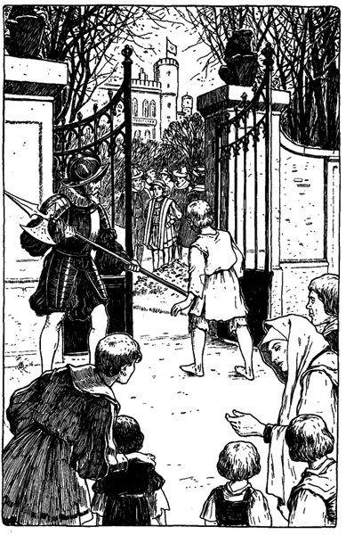»Niemand, Herr. Sollten sie denn nachts ihre Kleidung ausziehen und ohne dieselben schlafen, wie die Tiere?«
»Ihre Kleidung? Haben sie denn nur eine?«
»Ach, Herr, was sollten sie denn mit mehr als einer Kleidung anfangen? Sie haben doch auch nur einen Körper.«
»Das ist ja köstlich. Entschuldige, ich wollte nicht lachen. Aber deine Schwestern Netty und Betty sollen Kleider und Dienerinnen genug erhalten und das bald: mein Schatzmeister wird dafür sorgen. Nein, du brauchst mir nicht zu danken; es ist nicht der Rede wert. Du sprichst übrigens recht gut und mit einer gewissen Anmut. Hast du viel gelernt?«
»Ich weiß nicht, Herr. Der gute Priester, den man Vater Andreas nennt, war so gütig, mich aus seinen Büchern zu lehren.«
»Kannst du Latein?«
»Nicht gar viel, fürchte ich.«
»Lerne, Junge, wenn es auch zuerst schwer fällt. Das Griechische ist schwieriger; aber keine von beiden Sprachen macht Fräulein Elisabeth und meiner Base viel Mühe. Du solltest nur die beiden Fräulein dabei hören! Aber erzähle mir etwas vom Unrathof. Hast du ein vergnügliches Leben dort?!«
»Eigentlich ja, Herr, wenn nur das Hungern nicht wäre. Es gibt da allerhand Buden mit dressierten Affen, so drollige, komische Geschöpfe. Und dann das Kasperltheater, wo sie schreien und auf einander losschlagen, bis alle tot sind. Es ist so schön anzusehen und kostet nur einen Heller. Aber freilich ist es oft gar schwer, einen Heller zu ergattern.«
»Erzähle mir mehr.«
»Wir Burschen vom Unrathof treiben allerlei hübsche Spiele und kämpfen auch in Reih und Glied mit einander.«
Die Augen des Prinzen glänzten und er rief:
»Meiner Treu, das wäre etwas für mich. Erzähle mir noch mehr.«
»Sodann laufen wir um die Wette, um zu sehen, wer am schnellsten laufen kann.«
»Das gefiele mir auch. Weiter!«
»Im Sommer, Herr, waten und schwimmen wir in den Kanälen und im Fluß und jeder duckt seinen Nachbar ins Wasser, so tief er kann, oder bespritzt ihn und dann lachen wir und schreien, tauchen unter und strampeln und plätschern und ...«
»Herrlich! Ich gäbe meines Vaters Königreich darum, wenn ich auch einmal dabei sein könnte! Bitte, fahre weiter.«
»Wir tanzen und singen um den Maibaum; wir spielen im Sande und vergraben einander darin, und manchmal machen wir auch Schlammpasteten. O dieser herrliche Schlamm! wie köstlich ist es, sich darin herumzuwälzen!«
»Ach, bitte, nicht weiter, das ist ja glorios! Wenn ich mir nur solche Kleider anziehen könnte, wie du hast und mit bloßen Füßen im Schlamme schwelgen, einmal, nur einmal, ohne daß mich jemand deshalb tadelte oder es mir verböte, mich dünkt, ich könnte auf die Krone verzichten!«
»Und ich, wenn ich mich nur einmal so kleiden könnte, wie du, lieber Herr, nur einmal ...«
»Oho, das möchtest du? Dann mag es ja so sein! Ziehe deine Lumpen aus und hülle dich in diesen Glanz, Junge! Es ist zwar ein kurzes Glück, aber deshalb nicht weniger süß. Wir wollen es genießen, solange wir können. Dann aber müssen wir unsere Kleider wieder wechseln, bevor uns jemand in die Quere kommt.«
Wenige Minuten später war der kleine Kronprinz in Toms zerfetzte Lumpen und der kleine Prinz der Armut in königlichen Glanz gehüllt. Beide standen nebeneinander vor einem großen Spiegel, und siehe da! welch ein Wunder! Sie starrten einander an, dann in den Spiegel und schließlich jeder noch einmal den andern. Endlich stieß der kleine Prinz hervor:
»Wie erklärst du dir das?«
»Ach, lieber Herr, erlaß mir die Antwort. Es ist nicht geziemend, daß einer meines Standes es ausspricht.«
»Dann will ich es aussprechen. Du hast dasselbe Haar, dieselben Augen, dieselbe Stimme und Haltung, dieselbe Gestalt, das gleiche Gesicht wie ich. Hätten wir beide keine Kleider an, so könnte niemand sagen, wer du bist und wer der Kronprinz. Jetzt aber, da ich gekleidet bin, wie du es warst, glaube ich dir noch besser nachfühlen zu können, was du empfandest, als dich der rohe Soldat ... ei, sieh, da hast du ja eine Schramme an der Hand!«
»Ja, aber es hat nichts zu bedeuten, und du weißt, Herr, daß der arme Soldat ja nur ...«
»Still! das war schändlich und grausam!« rief der kleine Prinz und stampfte mit seinem nackten Fuß. »Wenn der König ... doch halt! rühre dich keinen Schritt, bis ich wieder komme! Ich befehle es dir.«
Mit einem schnellen Griff hob er einen großen, goldschimmernden Gegenstand, der auf einem Tische lag, auf und legte ihn beiseite. Dann eilte er zur Tür hinaus und flog in seinen flatternden Lumpen mit heißem Gesicht und zornsprühenden Augen durch den Palast. Wie er an das große Portal kam, ergriff er die Gitterstäbe, rüttelte daran und rief:
»Öffnet! Auf mit dem Tor!«
Der Soldat, welcher Tom mißhandelt hatte, öffnete rasch. Wie aber der Prinz in königlichem Zorn durch das Portal gestürzt kam, versetzte ihm die Wache eine schallende Ohrfeige, so daß der Prinz wirbelnd auf die Straße flog, und rief dabei:
»Nimm das, du Bettlerjunge, für das, was du mir von seiner Hoheit eingetragen hast!«
Die Menge brüllte vor Lachen. Der Prinz erhob sich rasch vom Boden, stürzte wild auf die Wache los und schrie:
»Ich bin der Kronprinz, meine Person ist heilig, und du sollst hängen, weil du Hand an mich gelegt hast!«
Der Soldat präsentierte spöttisch mit seiner Hellebarde und sagte wütend: »Jetzt packe dich aber, du verrückte Brut!«
Die wiehernde Menge schloß sich um den kleinen Prinzen, drängte ihn die Straße hinunter und schrie: »Platz für seine königliche Hoheit! Platz für den Kronprinzen!«
Stundenlang verfolgte die hartnäckige Menge den kleinen Prinzen. Solange er sich wehrte und raste und drohte und in herrischem Tone befehlen wollte, bot er dem Pöbel unerschöpflichen Anlaß zu Spott und Gelächter und war daher sehr unterhaltend. Mit der Zeit aber wurde er müde und still und verlor somit auch seine Anziehungskraft für die Menge, die allmählich von ihm abließ. Endlich fand er sich allein und frei, aber die Gegend um ihn herum war ihm gänzlich unbekannt. Ziellos ging er weiter. Die Häuser wurden immer spärlicher und die Vorübergehenden seltener. Er badete seine blutenden Füße in einem Bache, ruhte eine kurze Weile und wanderte weiter. So kam er auf einen großen Platz, worauf nur wenige vereinzelte Häuser und eine mächtige Kirche standen. Diese Kirche war ihm bekannt. Hohe Gerüste waren aufgerichtet und Schwärme von Arbeitern hantierten herum, denn die Kirche sollte ausgebessert werden. Der Prinz faßte wieder Mut; seine Leiden mußten ja nun zu Ende sein. Er sagte sich: »Das ist doch die frühere Kirche der grauen Mönche Den Grund und Boden, worauf das Kloster der Grauen Mönche stand, schenkte Heinrich der Gemeinde London, welche dort eine Heimstätte für obdachlose, verwahrloste Knaben und Mädchen schuf., die der König, mein Vater, den Mönchen genommen und zu einem Heim für arme, verlassene Kinder gemacht hat. Christuskirche, glaube ich, heißt sie jetzt. Gewiß werden die, an denen mein Vater so edelmütig gehandelt hat, gerne seinem Sohne behilflich sein, zumal dieser nun selbst so arm und verlassen ist, wie nur je einer, der hier Obdach findet.«
Bald stand er mitten unter einer Menge von Jungen, die herumliefen, hüpften, Ball und Laubfrosch spielten und großen Lärm vollführten. Alle waren gleich gekleidet. Jeder trug eine ganz kleine, flache, schwarze Mütze auf dem Kopfe, scheinbar mehr zur Zierde als zum Schutz. Darunter hing das Haar ungescheitelt bis auf die Mitte der Stirn herab, wo es ringsum abgestutzt war. Ein dicht anschließendes Obergewand fiel bis auf die Kniee oder noch tiefer herunter. Die Beine umhüllten hellgelbe Strümpfe, die ob dem Knie zusammengehalten wurden. Der Fuß stak in niedrigen Schuhen mit großen metallenen Schnallen. Die Hüfte umschloß ein breiter roter Gürtel, und die Ärmel waren weit und lose. Schön konnte man das Ganze kaum nennen.
Die Jungen hielten in ihrem Spiel inne und scharten sich um den Prinzen, der mit angeborener Würde sagte: »Gute Burschen, meldet eurem Meister, Eduard, der Kronprinz, wünsche ihn zu sprechen.«
Ein großes Geschrei erhob sich bei diesen Worten, und ein roher Bursche rief: »Bist du etwa der Bote Seiner Gnaden, du lumpiger Schlingel?«
Alles Blut schoß dem Prinzen ins Gesicht, und seine Hand fuhr rasch an die Hüfte.
Ein lautes Gelächter entstand, und ein Junge sagte: »Habt ihr gesehen? Er glaubt, er trage einen Degen an der Seite. Vielleicht ist er der Prinz selbst.«
Dieser Ausfall reizte noch mehr zum Lachen. Der arme Eduard richtete sich stolz auf und sagte: »Ich bin der Prinz, und es steht euch schlecht an, mir so zu begegnen, da ihr doch von der Güte meines Vaters lebt.«
Homerisches Gelächter belohnte diesen vermeintlichen Scherz. Der Junge, welcher zuerst gesprochen hatte, rief seinen Kameraden zu:
»Heda, ihr Schweine, ihr Sklaven, ihr Pensionäre seines königlichen Vaters, sind das eure Sitten! Nieder auf eure Kniee, ihr alle, und erweist seiner königlichen Haltung und seinen königlichen Lumpen Ehrerbietung!«
Mit stürmischem Jubel fielen alle zusammen auf die Kniee und verbeugten sich spöttisch vor ihrem Opfer. Der Prinz stieß den Sprecher mit dem Fuß an und sagte zornig: »Nimm das vorläufig; morgen werde ich einen Galgen für dich errichten lassen.«
Ah! das war schon kein Scherz mehr, das ging über den Spaß hinaus. Das Lachen hörte sofort auf, und wilde Wut ergriff die Burschen. Alle schrieen durcheinander: »Jagt ihn fort! Zur Pferdeschwemme mit ihm! Schlagt ihn tot! Wo sind die Hunde? Heda, Pluto! Hierher, Wolf!«
Dann folgte etwas, was England noch nicht erlebt hatte. Die heilige Person seines Thronerben wurde von Pöbelhänden gepufft und mit Hunden gehetzt ...
Als endlich der Tag zu Ende ging, war der Prinz fern von der Stätte seiner Demütigung in einem dicht bebauten Teile der Stadt. Sein Körper war zerschlagen, seine Hände bluteten und seine Lumpen waren mit Schlamm beschmiert. Weiter und weiter wanderte er. Immer elender ward ihm zu Mute, und so müde und schwach war er schon, daß er kaum noch einen Fuß vor den anderen setzen konnte. Er fragte niemand mehr, da er statt Auskunft und Hilfe doch nur Beleidigungen als Antwort bekam. Ein anderer Gedanke war in ihm aufgestiegen. »Unrathof«, murmelte er vor sich hin, »so sagte er doch. Wenn ich ihn nur auffinde, bevor es mit meiner Kraft zur Neige geht, dann bin ich gerettet. Seine Angehörigen werden mich in den Palast zurückbringen und beweisen, daß ich der wahre Prinz bin, und alles wird wieder gut sein.«
Dann und wann kehrten seine Gedanken wieder an den Ort zurück, wo man ihn so schmählich behandelt hatte, und er sprach bei sich: »Wenn ich König bin, sollen sie nicht nur Brot und Obdach haben, sondern auch Belehrung und Erziehung, denn ein voller Magen taugt wenig, wenn der Geist hungert und das Herz. Ich will daran denken, damit die Lehre dieses Tages an mir nicht verloren gehe und mein Volk darunter leide. Ja, mein Hofmeister hat recht: Bildung mildert die Sitten und macht sanft und mitleidig.«
Schon begannen vereinzelte Lichter zu flimmern; es fing an zu regnen, der Wind erhob sich, und eine rauhe, stürmische Nacht brach herein. Der obdachlose Prinz, der heimatlose Erbe des englischen Thrones, wanderte immer noch weiter, tiefer hinein in das Labyrinth der schmutzigen Gäßchen, wo die schwärmenden Bienenstöcke der Armut und des Elendes sich zusammendrängten.
Plötzlich packte ihn ein langer, betrunkener Kerl beim Kragen und schrie ihn an: »Was! so spät in der Nacht lungerst du noch umher und bringst gewiß wieder keinen Heller nach Hause, ich wette. Wenn es so ist und ich breche dir nicht alle Knochen in deinem elenden Leibe, so will ich nicht Johann Canty sein!«
Der Prinz machte sich frei und rief eifrig: »O du bist also sein Vater? Dem Himmel sei Dank! Dann wirst du ihn holen und mich zurückbringen!«
»Sein Vater? Ich weiß nicht, was du meinst. Ich weiß nur, daß ich dein Vater bin, was ich dir bald beweisen ...«
»O scherze nicht, zögere nicht! Ich bin zerschlagen, verwundet, ich kann nicht mehr. Bringe mich zum König, meinem Vater und er wird dich reich machen, so reich, wie du in deinen kühnsten Träumen nicht warst! Glaube mir, Mann, glaube mir! ich sage keine Lüge, sondern die reine Wahrheit! Nimm deine Hand von mir weg und rette mich; Ich bin wirklich der Kronprinz!«
Der Mann starrte verdutzt auf den Burschen, dann schüttelte er den Kopf und murmelte: »Verrückt geworden, ganz und gar verrückt!« Dann faßte er ihn nochmals am Kragen und sagte mit rohem Lachen und einem wilden Fluche: »Aber verrückt oder nicht verrückt, ich und deine Großmutter Canty, wir werden schon noch herausfinden, wo die weichen Stellen in deinen Gebeinen liegen, oder ich will kein Mann sein!«
Mit diesen Worten schleppte er den verzweifelt sich wehrenden Prinzen hinweg und verschwand in einer Seitengasse. Hinter ihm aber folgte lachend und lärmend ein Schwarm Janhagel, neugierig auf den weiteren Verlauf des Schauspiels.
Tom Canty benutzte den Weggang des Prinzen, um sich ausgiebig vor dem großen Spiegel zu bewundern. Er nahm die vornehme Haltung des Kronprinzen an, spazierte hin und her und betrachtete sich verstohlen im Spiegel. Dann zog er den prächtigen Degen, küsste die Klinge und salutierte, wie er es vor einigen Wochen einem Offizier abgeguckt hatte. Auch mit dem juwelenbesetzten Dolch spielte er, der in seinem Gürtel stak. Weiterhin beschaute er sich die kostbaren, ausgesuchten Zieraten des Gemaches. Er setzte sich auf jeden der prunkvollen Stühle und stellte sich vor, wie stolz er wäre, wenn der ganze Unrathof hereinsehen und ihn in seiner Pracht erblicken könnte. Er wunderte sich, ob man ihm glauben werde, wenn er ihnen von all dieser Herrlichkeit erzählen würde, die er jetzt, wenn auch nur für einen Augenblick, genießen durfte. Wahrscheinlich aber würden sie die Köpfe schütteln und glauben, er sei übergeschnappt.
So verging eine halbe Stunde. Da fiel ihm auf einmal ein, daß der Prinz doch eigentlich etwas lange ausbleibe. Ein Gefühl der Verlassenheit überkam ihn allgemach. Er fing an zu lauschen, und eine sonderbare Bangigkeit beschlich ihn. Alle die schönen Sachen um ihn herum verloren von ihrem Interesse; er wurde unruhig, aufgeregt und bekümmert. Wenn jemand käme und ihn in den Kleidern des Prinzen fände! Vielleicht würden sie ihn hängen, bevor der Prinz zurückkäme und das Rätsel löste. Hatte er doch gehört, daß die Großen in solchen Sachen gewöhnlich kurzen Prozeß machten. Immer ängstlicher wurde ihm zu Mute. Sachte und zitternd öffnete er die Türe zum Vorzimmer mit dem Entschlusse, zu fliehen und nach dem Prinzen zu forschen, um bei ihm Schutz und Rettung zu suchen. Sechs prächtige Diener und zwei junge Edelknaben, wie Schmetterlinge gekleidet, sprangen auf und verbeugten sich tief vor ihm. Da trat er rasch wieder zurück und schloß die Tür.
»Sie spotten meiner«, sagte er sich; »sie werden hingehen und erzählen, was sie gesehen haben. O warum kam ich hierher, um mein Leben so leichtsinnig aufs Spiel zu setzen!«
Er ging im Zimmer auf und nieder, von namenloser Furcht erfüllt, horchte angestrengt und fuhr beim geringsten Tone zusammen. Plötzlich flog die Tür auf und ein Edelknabe, in Seide gehüllt, meldete: »Fräulein Johanna Grey!«
Die Tür schloß sich wieder hinter einem lieben jungen Mädchen in reicher Kleidung, welches auf Tom zutrat. Bei seinem Anblicke aber blieb sie plötzlich stehen und sprach in betrübtem Tone: »O was fehlt dir, mein Lord?«
Tom ging beinahe der Atem aus; aber er faßte sich noch und stammelte: »Ach, sei gnädig. Ich bin ja kein Lord, sondern nur der arme Tom Canty vom Unrathof in der Altstadt. Bitte, führe mich zum Prinzen, damit er mir meine Lumpen zurückgibt und mich in Gnaden entlässt. O sei barmherzig und rette mich!«
Der Knabe war auf seine Kniee niedergefallen und schaute mit bittenden Augen und aufgehobenen Händen zu dem schönen Mädchen empor. Sie aber schien vor Schrecken versteinert. Endlich rief sie: »Wie, mein Lord, Ihr kniet? ... und gar noch vor mir?«
Rasch wandte sie sich um und eilte hinweg. Tom aber sank, von Verzweiflung erfaßt, in sich zusammen und murmelte: »Keine Hoffnung, keine. Nun werden sie kommen und mich abführen.«
Während er so, vor Schrecken gelähmt, dalag, verbreitete sich eine Hiobspost mit Windeseile durch den Palast. Das Geflüster ging von Mund zu Mund, die langen Korridore entlang, von Stockwerk zu Stockwerk, von Saal zu Saal: »Der Prinz ist irrsinnig geworden!«
Bald standen in jedem Gange, in jeder Halle Gruppen von glänzenden Herren und Damen und wisperten mit ängstlichen, verstörten Mienen. Jetzt trat ein hoher Beamter an diese Gruppen heran und verkündete mit feierlicher Stimme:
»Im Namen des Königs!
Niemand soll, bei Todesstrafe, auf das falsche und törichte Gerücht hören, noch darüber sprechen, noch dasselbe weiter tragen. Im Namen des Königs.«
Das Geflüster hörte ebenso plötzlich auf, wie es begonnen hatte.
Bald aber lief wieder ein allgemeines Gesumme durch die Korridore: »Der Prinz! Seht, der Prinz kommt!«
Langsam schritt der arme Tom an den Gruppen vorüber, deren tiefe Verbeugungen er zu erwidern versuchte, und schaute mit irren, ängstlichen Augen auf die fremde Umgebung. Ihm zu beiden Seiten gingen Edelleute von hohem Stande, die ihm den Arm zur Stütze boten. Hinter ihm aber folgten die Hofärzte und einige Diener.
Mit einem Male sah sich Tom in einem herrlichen Saale und hörte, wie die Tür sich hinter ihm schloß. Um ihn herum standen die, mit denen er gekommen war. Nur wenige Schritte vor ihm aber ruhte ein sehr großer und sehr starker Mann mit breitem, fleischigem Gesicht und ernster Miene.
Sein mächtiger Kopf war schon ganz grau, wie auch sein Backenbart, der wie ein Rahmen sein Gesicht umgab. Sein Gewand war von reichem Stoffe, aber an einigen Stellen leicht abgenutzt. Einer seiner Füße war geschwollen und lag, fest eingewickelt, auf einem Kissen. Tiefe Stille herrschte, und ehrerbietig senkten sich die Häupter aller vor diesem Manne. Der ernstblickende Kranke war der gefürchtete König Heinrich der Achte. Seine Züge verloren ihre Härte, als er zu sprechen begann: »Was ist dir, mein Lord Eduard, mein Prinz? Willst du mich, den guten König, deinen Vater, mit leidigem Scherz betrüben, der dich so lieb hat und so gut zu dir ist?«
Der arme Tom mühte sich, soweit seine Verwirrung es zuließ, die mit sanftem Vorwurf gesprochene Rede zu erfassen. Als aber die Worte »mich, den guten König« sein Ohr berührten, da erblaßte er und fiel, wie vom Blitz getroffen, auf die Kniee. Dann hob er die Hände empor und rief: »Du der König? Dann ist es mit mir zu Ende!«
Der König schien wie betäubt von diesen Worten. Ziellos wanderten seine Blicke von Gesicht zu Gesicht, dann blieben sie verwirrt auf dem Knaben vor ihm haften. Endlich sprach er in einem Tone tiefer Enttäuschung: »Ach, ich hatte geglaubt, das Gerücht übertreibe den wirklichen Sachverhalt; ich fürchte, ich habe mich geirrt.«
Er atmete schwer und sagte sodann mit sanfter Stimme: »Komm zu deinem Vater, Kind, du bist nicht wohl.«
Man richtete Tom auf, und er trat zitternd und demütig näher. Der König nahm das angstvoll blickende Gesicht des Knaben zwischen die Hände und betrachtete ihn mit liebevollem Ernst, als suche er nach einem Zeichen der wiederkehrenden Vernunft. Dann preßte er den Lockenkopf an seine Brust und streichelte ihn zärtlich. Plötzlich sagte er: »Kennst du deinen Vater nicht, Kind? Brich nicht mein altes Herz; sage, daß du mich kennst. Du erkennst mich, nicht wahr?«
»Du bist mein gefürchteter Herr, der König, den Gott erhalte!«
»Schön, ganz recht, das ist gut; tröste dich und zittere nicht so. Hier ist niemand, der dir ein Leides tun möchte, niemand, der dich nicht liebt. Du bist jetzt besser; dein böser Traum verfliegt, ist es nicht so? Und dich selbst kennst du auch wieder, nicht wahr? Du willst dich nicht wieder für einen andern ausgeben, oder?«
»Ich bitte dich bei deiner Gnade, glaube mir. Ich sprach nur die Wahrheit, erlauchter Lord. Ich bin der geringste deiner Untertanen, in armseligen Verhältnissen geboren und nur durch einen leidigen Tausch und Zufall bin ich hier; mich selbst aber trifft kein Vorwurf. Ich bin noch zu jung zum Sterben, und du kannst mich retten mit einem einzigen kleinen Wort. O sprich es aus, Herr!«
»Sterben? Sprich doch nicht so, mein lieber Prinz. Still, still, beruhige dein verwirrtes Herz, du sollst nicht sterben!«
Mit einem freudigen Ausruf fiel Tom wieder auf die Kniee: »Gott danke dir deine Gnade, o mein König und erhalte dich noch lange zum Segen deines Landes!« Dann sprang er auf, wandte sich an die beiden Lords, die ihn hergeführt hatten, und rief: »Ihr hört es! Ich soll nicht sterben. Der König hat es gesagt!«
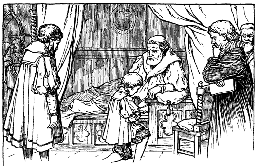Stumm verbeugten sich die Angesprochenen; aber keiner ergriff das Wort. Verwirrt zögerte Tom einen Augenblick, blickte furchtsam nach dem König und sprach: »Darf ich jetzt gehen?«
»Gehen? Gewiß, wenn du wünschest. Aber magst du nicht einen Augenblick länger verweilen? Wohin willst du gehen?«
Tom senkte die Blicke und erwiderte unterwürfig: »Vielleicht habe ich falsch verstanden. Ich dachte, ich wäre nun frei und wollte wieder zurück in die Dachkammer, wo ich geboren und im Elend erzogen wurde. Da meine Mutter und Schwestern dort wohnen, gehöre ich auch dahin. Dieser Pomp und Glanz aber, an den ich nicht gewöhnt bin ... o bitte, Herr, laß mich gehen!«
Der König schwieg und dachte einen Augenblick nach, während sein Gesicht wachsende Sorge und Unruhe ausdrückte. Dann aber sagte er, und ein wenig Hoffnung lag in seiner Stimme: »Vielleicht erstreckt sich sein Irrsinn nur auf diese eine fixe Idee und hat seine übrige Geisteskraft unberührt gelassen. Gebe, daß dem so sei! Wir werden es gleich sehen.«
Darauf stellte er an Tom eine Frage in lateinischer Sprache und Tom antwortete, wenn auch zögernd, in derselben Sprache. Der König war entzückt und seine Miene heiterte sich auf. Auch die Lords und Ärzte zeigten ihre Befriedigung. Der König wandte sich zu den Herren und sprach: »Das zeigt doch wohl, daß sein Geist nur krank, nicht gänzlich zerstört ist. Was sagen Sie dazu, meine Herren?«
Die Ärzte verbeugten sich tief, und einer erwiderte: »Das ist auch unsere Überzeugung, Majestät.«
Der König freute sich über diese Bestätigung, die von einer einwandfreien Autorität herrührte, und fuhr fort: »Nun geben Sie alle acht. Wir wollen ihn weiter prüfen.«
Darauf fragte er Tom etwas in französischer Sprache. Tom schwieg eine Weile verlegen, da er alle Augen auf sich gerichtet sah, und erwiderte dann leise: »Ich kenne diese Sprache nicht, mein König.«
Der Fürst fiel in seine Kissen zurück. Die Umstehenden eilten zu seinem Beistande herbei. Der König aber wies sie zurück und sagte: »Laßt mich, es ist nur ein leichter Schwächeanfall. Hebt mich empor. So, das genügt. Komm hierher, Kind; lehne deinen armen, verwirrten Kopf an deines Vaters Herz und ruhe aus. Du wirst bald wieder wohl sein; es ist nur vorübergehend. Fürchte dich nicht.«
Dann wandte er sich zu der Versammlung; seine bis jetzt milden Züge härteten sich und fahle Blitze zuckten aus seinen Augen. Er sprach: »Höret ihr alle! Dieser mein Sohn ist irrsinnig; aber er ist es nicht dauernd. Die geistige Überanstrengung hat es bewirkt und eine zu große Abgeschlossenheit. Weg für jetzt mit Büchern und Lehrern! Man sorge dafür! Vergnügt ihn mit Spielen, gebt ihm gesunde Unterhaltung, auf daß sein Geist wiederkehre!«
Dann erhob er sich noch höher und fuhr in strengem Tone fort: »Er ist irrsinnig; aber er ist mein Sohn und Englands Erbe und gesund oder irrsinnig, regieren soll er doch! Und höret ferner und verkündet es weiter: wer immer von dieser seiner Krankheit spricht, vergeht sich gegen den Frieden und die Ordnung dieses Reiches und soll gehängt werden! ... Gebt mir zu trinken ... ich brenne ... Diese Sorge reibt meine Kraft auf ... hier, nehmt den Becher wieder weg ... stützt mich! ... so, das ist gut. Also irrsinnig ist er. Wäre er aber auch tausendmal irrsinniger, er ist doch der Kronprinz, und ich, der König, will es bekräftigen. Schon am nächsten Morgen soll er in gehöriger, althergebrachter Form zum Thronerben erklärt werden! Trefft sogleich die nötigen Anordnungen, mein Lord Hertford.«
Einer von den Edlen kniete vor dem Lager des Königs nieder und sagte: »Majestät wird sich erinnern, daß der Erbmarschall von England gefesselt im Turm liegt. Es wäre nicht geziemend, daß ein Gefangener ...«
»Still! Beleidiget nicht mein Ohr mit seinem verhaßten Namen! Muß denn dieser Mann ewig leben? Wird mein Wille nicht mehr geachtet? Soll der Prinz warten, weil zu seiner feierlichen Einsetzung England keinen Marschall hat, der frei ist vom Verbrechen des Hochverrats? Nein, bei Gottes Herrlichkeit! Mein Parlament möge Norfolks Thomas Howard, Graf Surrey, Herzog von Norfolk (1474 bis 1554), ein eifriger Katholik, wurde trotz seiner hohen Verdienste um das Reich unmittelbar nach seiner Rückkehr von einem glücklichen Feldzug gegen Schottland mit seinem ältesten Sohn am 12. Dezember 1546 in den Turm geworfen. Sein Sohn wurde hingerichtet, und er selbst entging demselben Schicksal nur dadurch, daß Heinrich VIII., wie in der Erzählung geschildert, am Tage vor seiner stattzufindenden Hinrichtung starb. Jedoch erhielt er erst mit der Thronbesteigung Marias der Katholischen oder der »Blutigen« Freiheit, Güter, Würden und den alten Einfluß zurück. Verurteilung beschließen, ehe die Sonne sich wieder erhebt, sonst wird es meine schwere Hand spüren!«
Lord Hertford erwiderte: »Des Königs Wille ist Gesetz.« Dann stand er auf und trat an seinen früheren Platz zurück.
Die vom Zorn entstellten Züge des alten Königs glätteten sich, und er sprach: »Küsse mich, mein Prinz. Was! du fürchtest dich? Bin ich nicht dein liebevoller Vater?«
»Du bist zu gütig gegen mich Unwürdigen, o mächtiger und gnädiger Herr. Aber es ... es schmerzt mich, wenn ich an ihn denke, der sterben soll, und ...«
»Ah, das gleicht dir, das sieht dir ähnlich. Dein Herz ist also unverändert geblieben, wenn auch dein Geist gelitten hat, denn du warst immer ein gutes Kind. Aber dieser Herzog steht zwischen dir und deiner Standeserhöhung. Ich will einen andern an seiner Stelle haben, der makellos dasteht. Tröste dich, mein Prinz, verwirre deinen armen Kopf nicht noch mehr durch solche Gedanken.«
»Aber ich bin es doch, der seinen Tod wider Willen beschleunigt, mein König. Wie lange dürfte er sonst noch leben?«
»Denke nicht an ihn, mein Prinz; er ist es nicht wert. Küsse mich noch einmal und dann gehe und erheitere dich durch Spiele. Ich bin müde und möchte ruhen. Gehe mit deinem Onkel Hertford und deinen Leuten, und komme wieder, wenn mein Körper erfrischt ist.«
Schweren Herzens mußte sich Tom hinwegführen lassen. Vernichteten doch diese letzten Worte die Hoffnung freizukommen, die er immer noch gehegt hatte. Wieder hörte er in den Gängen leise Stimmen flüstern: »Der Prinz, der Prinz kommt!«
Er wurde immer mutloser, wie er so zwischen den Reihen sich verbeugender Höflinge hindurchschritt. Es kam ihm zum Bewußtsein, daß er jetzt ein Gefangener sei und vielleicht für immer in diesem vergoldeten Käfig verweilen müsse, ein verlorener, freundloser Prinz. O möchte doch der Himmel sich seiner erbarmen und ihn freilassen!
Dazu sah er, wohin er seine Blicke auch wenden mochte, immer den abgeschnittenen Kopf des Herzogs von Norfolk, wie er mit vorwurfsvollen Augen ihn anblickte.
Wie schön waren seine alten Träume gewesen, und wie traurig machte ihn jetzt die Erfüllung derselben!
Tom wurde durch eine Flucht von schönen Gemächern in das größte derselben geführt, wo man ihn bat, sich zu setzen. Er traute sich kaum, dieser Weisung zu folgen, da soviele ältere Herren von vornehmem Aussehen um ihn herumstanden. Er bat sie, sich ebenfalls zu setzen, aber sie verbeugten sich nur dankend und blieben stehen. Er hätte darauf bestanden, aber sein »Onkel«, der Graf von Hertford, flüsterte ihm ins Ohr: »Bitte, beharre nicht darauf, mein Lord; es ziemt sich nicht, daß sie in deiner Gegenwart sitzen.«
Ein Edelknabe meldete Lord St. John, der gleich hinter ihm hereintrat, sich vor Tom verbeugte und sprach: »Ich komme im Auftrage des Königs in einer Angelegenheit vertraulicher Natur. Wird es Ew. Königlichen Hoheit gefallen, alle, die hier sind, zu entlassen, mit Ausnahme des Grafen von Hertford?«
Hertford sah, daß Tom nicht wußte, wie er die Herren zu verabschieden habe. Er flüsterte ihm also zu, er möge nur einen Wink mit der Hand geben. Als die Herren sich zurückgezogen hatten, sagte Lord St. John: »Seine Majestät befiehlt aus gewichtigen Staatsgründen, seine Gnaden, der Prinz möge, soweit möglich, seine Krankheit verhehlen, bis sie vorbei ist. So soll er vor allem niemals behaupten, er sei nicht der wahre Prinz und Erbe von Englands Krone. Er soll seine prinzliche Würde jederzeit und jedermann gegenüber wahren und ohne Widerspruch alle Ehrfurcht und Ehrerbietung entgegennehmen, die ihm nach altem Herkommen gebührt. Er soll nie wieder von niedriger Herkunft und anderen Auswüchsen seiner überreizten Einbildungskraft sprechen. Er soll sich bemühen, die Züge der Personen seiner näheren Bekanntschaft in sein Gedächtnis zurückrufen. Wo es ihm aber nicht gelinge, solle er schweigen und durch keinerlei Wort oder Zeichen seine Vergeßlichkeit verraten. Desgleichen soll er bei öffentlichen Anlässen bezüglich dessen, was er zu reden oder zu tun hat, keinerlei Verlegenheit zeigen, sondern sich von Lord Hertford oder mir beraten lassen, da wir vom König beordert sind, jederzeit dem Kronprinzen zur Seite zu stehen. So spricht des Königs Majestät, welche Ew. Königlichen Hoheit ihre Grüße übermittelt und zu Gott bete, daß Er Euch rasch heilen und jetzt und immerdar in Seiner heiligen Obhut bewahren möge.«
Lord St. John verbeugte sich und trat beiseite. Tom erwiderte ergeben: »Der König hat es gesagt. Niemand soll an des Königs Befehl rütteln, oder ihn nach seiner Bequemlichkeit auslegen. Dem König gebührt Gehorsam.«
Lord Hertford bemerkte: »Da der König Bücher und derartige ernste Beschäftigung untersagt hat, so möchtest du vielleicht die Zeit mit leichter Unterhaltung kürzen, damit du nicht müde zum Bankett gehest und darunter leiden könntest.«
Fragendes Staunen zeigte sich in Toms Zügen, und er errötete, als er die Augen St. Johns besorgt auf sich gerichtet sah. Seine Lordschaft aber sagte: »Ew. Hoheit Gedächtnis ist noch zuweilen schwach, und Eure Mienen zeigten Überraschung. Aber laßt Euch das nicht weiter kümmern, denn das geht vorbei. Lord Hertford spricht von dem Stadtbankett, welches, wie der König vor zwei Monaten versprach, Ew. Hoheit mit Eurer Anwesenheit beehren werde. Erinnert Ihr Euch dessen?«
»Leider muß ich gestehen, daß es mir gänzlich entfallen war«, sagte Tom zögernd und errötete wieder.
In diesem Augenblick wurden Prinzessin Elisabeth und Fräulein Johanna Grey angemeldet. Die beiden Lords warfen einander verständnisinnige Blicke zu, und Hertford schritt nach der Tür. Wie die jungen Mädchen an ihm vorübergehen wollten, flüsterte er ihnen zu: »Ich bitte Euch, meine Fräulein, beachtet scheinbar seinen Zustand nicht und zeigt auch keine Überraschung, wenn ihn sein Gedächtnis im Stich läßt, was bei jeder Kleinigkeit vorkommt.«
Inzwischen sprach auch Lord St. John leise zu Tom: »Ich bitte Euch, Herr, haltet Euch des Königs Wunsch immer vor Augen. Erinnert Euch, soweit Ihr könnt, an alles. Wo es Euch nicht möglich ist, bewahret wenigstens den Anschein, als wüßtet Ihr es. Bemühet Euch, ihnen Eure Schwäche zu verbergen. Es ist Euch ja bekannt, wie zärtlich Euch Eure früheren Spielgefährten lieben und wie sehr es sie also schmerzen würde. Wollt Ihr, Herr, daß ich und Euer Onkel hier bleiben?«
Tom bejahte gerne, denn er war in seiner Einfalt entschlossen und hielt sich verpflichtet, dem Befehle des Königs gemäß, seine Rolle so gut wie möglich zu spielen.
Trotz aller Vorsicht geriet das Gespräch zwischen den jungen Leuten doch zuweilen an gefährliche Klippen. Mehr als einmal war Tom nahe daran, seine Flinte ins Korn zu werfen und einzugestehen, daß er seiner Rolle nicht gewachsen sei. Aber der Takt der Prinzessin Elisabeth oder ein Wort von einem der beiden wachsamen Lords, das sie wie zufällig hineinwarfen, rettete ihn. Einmal wandte sich das kleine Fräulein Johanna an Tom mit der unglücklichen Frage: »Hast du Ihrer Majestät, der Königin, heute deinen Besuch gemacht?«
Tom war verlegen und wollte eben auf gut Glück etwas hervorstottern, als Lord St. John das Wort ergriff und mit der leichten Anmut eines Höflings antwortete, der gewohnt ist, delikate Schwierigkeiten spielend zu lösen: »Gewiß, Fräulein, und sein Befinden ging Ihrer Majestät sehr zu Herzen, nicht wahr, mein Prinz?«
Tom murmelte etwas, das als Beistimmung gelten konnte, aber er fühlte, daß er sich auf gefährlichem Boden bewegte. Als die Rede darauf kam, der Prinz solle für die nächste Zeit nicht mehr studieren, rief das kleine Fräulein: »Ach, wie schade! Und du kamst doch so hübsch vorwärts! Aber warte nur geduldig, es wird nicht lange währen. Du wirst noch so gelehrt werden wie dein Vater und soviele Sprachen sprechen wie er, mein lieber Prinz.«
»Mein Vater!« rief Tom, einen Augenblick seine Rolle vergessend; »meiner Treu, er kann seine eigene Sprache gerade genügend, um sich den Schweinen im Stalle verständlich zu machen. Von Gelehrsamkeit aber ...«
Er schaute auf und begegnete einem warnenden Blick aus Lord St. Johns Augen. Er hielt inne, errötete und fuhr dann leise und traurig fort: »Ach, meine Schwäche befällt mich wieder; ich war geistesabwesend. Ich wollte gegen den König nicht unehrerbietig sein.«
»Wir wissen es, mein Prinz«, sagte die Prinzessin Elisabeth, nahm ihres »Bruders« Hand in die ihrigen und streichelte sie liebkosend. »Rege dich darüber nicht auf. Du bist nicht schuld daran, sondern dein Unwohlsein.«
»Du weißt so lieb zu trösten, schöne Prinzessin«, sagte Tom, »und ich möchte dir von Herzen danken, wenn ich dürfte.«
Wieder einmal richtete Fräulein Johanna eine Frage in Griechisch an Tom. Mit raschem Auge erkannte die Prinzessin Elisabeth, daß der Pfeil sein Ziel verfehlt hatte. So antwortete sie scherzend an Toms Stelle, ebenfalls in geläufigem, wohlklingendem Griechisch. Dann aber gab sie dem Gespräch sofort eine andere Wendung.
Im ganzen aber verging die Zeit recht angenehm. Die Klippen und Sandbänke wurden immer spärlicher, und Tom begann erleichtert aufzuatmen, als er sah, wie alle so liebevoll bemüht waren, ihm zu helfen. Als Tom erfuhr, daß die beiden jungen Damen ihn an das Bankett des Lordmayors begleitet sollten, da wurde ihm leicht und fröhlich ums Herz. Er fühlte, daß er nicht freundlos unter der Menge der Fremden sein würde.
Toms Schutzengel, die beiden Lords, fanden nicht denselben Genuß an der Unterhaltung, wie die jungen Leute. Es war ihnen, als lotsten sie ein großes Schiff durch einen gefährlichen Kanal. Sie mußten fortwährend auf der Hut sein und betrachteten ihr Amt gar nicht wie ein Kinderspiel. Endlich ging der Besuch der jungen Damen zu Ende, und Lord Dudley wurde gemeldet. Die beiden Lords empfanden für jetzt keine Lust, ihre heikle Aufgabe noch einmal zu lösen und rieten daher Tom, sich entschuldigen zu lassen, was Tom natürlich mit Freuden geschehen ließ.
Jetzt gab es eine Pause, ein erwartungsvolles Schweigen, das Tom nicht zu deuten wußte. Er blickte nach Lord Hertford, der ihm ein Zeichen gab, welches Tom aber auch nicht verstand. Liebenswürdig kam ihm Elisabeth mit ihrer gewohnten Geistesgegenwart zu Hilfe. Sie verbeugte sich und sprach: »Gestattet mein fürstlicher Bruder, daß wir uns zurückziehen?«
Tom erwiderte: »Was immer Ihr von mir wünscht, ist Euch gewährt. Doch möchte ich euch lieber alles andere geben, was in meiner Macht steht, als die Erlaubnis, das Licht und das Glück, das euere Anwesenheit hier verbreitet, fortzunehmen. Doch da ihr es wünscht, so geleite euch Gott!«
Tom lächelte innerlich bei dem Gedanken: »Nicht umsonst habe ich in meinen Märchen unter Prinzen geweilt und meine Zunge in anmutigen Redensarten geübt.«
Als die erlauchten Mädchen fort waren, wandte sich Tom müde an seine Wärter und sagte: »Würde Euere Lordschaft mir vergönnen, in irgend eine Ecke zu gehen, um auszuruhen?«
Lord St. John erwiderte: »An Euch ist es, Hoheit, zu befehlen, wir haben nur zu gehorchen. Ruhe ist Euch ohne Zweifel notwendig, da Ihr in kurzem nach der Stadt aufbrechen müht.«
Er berührte eine Glocke, und ein Edelknabe erschien, der den Auftrag erhielt, Herrn Wilhelm Herbert zu rufen. Dieser kam sofort und geleitete Tom in ein inneres Gemach.
Hier wollte Tom zunächst nach einem Wasserbecher greifen; ein Diener in Seide und Sammet aber kam ihm zuvor, erfaßte den Becher, fiel auf ein Knie und bot ihm denselben auf einer goldenen Schale dar.
Jetzt setzte sich der müde Gefangene nieder und war daran, seine Halbstiefel auszuziehen und fragte dabei mit angstvollem Blick um Erlaubnis.
Aber ein anderer, ebenso gekleideter Diener ließ sich vor ihm auf die Kniee nieder und nahm ihm die Mühe ab. Noch zwei oder dreimal versuchte Tom, etwas eigenhändig auszuführen, aber jedesmal kam ihm ein Diener zuvor. So gab er es endlich mit einem Seufzer der Ergebung auf und murmelte: »Wahrhaftig, mich wundert, warum sie nicht auch noch verlangen, für mich zu atmen.«
Endlich war er gänzlich umgekleidet und konnte sich nun zur Ruhe niederlegen. Zu schlafen aber vermochte er nicht, denn sein Kopf war zu voll von Gedanken und das Zimmer zu voll von Leuten. Die ersteren konnte er nicht verbannen, und so blieben sie; ob er die letzteren fortschicken dürfe, wußte er nicht, und so blieben auch sie, sehr zu seinem und ihrem eigenen Bedauern.
Nach Toms Weggange waren seine beiden edlen Wärter allein geblieben. Sie gingen eine Weile nachdenklich und kopfschüttelnd im Gemache auf und nieder. Dann sagte Lord St. John: »Offen heraus, was denkst du davon?«
»Was mich nachdenklich macht, ist das: der König ist seinem Ende nahe; mein Neffe ist irrsinnig. Irrsinnig wird er den Thron besteigen und irrsinnig bleiben. Gott schütze England! Es wird Seinen Schutz brauchen können.«
»In der Tat, es hat den Anschein. Aber ... hast du keinen Verdacht bezüglich ...«
Der Sprecher zögerte und hielt schließlich inne. Lord Hertford blieb vor ihm stehen und sagte: »Sprich weiter. Niemand hört dich hier als ich. Verdacht worauf?«
»Ich schäme mich, meinem Gedanken Ausdruck zu geben, und besonders, weil du dem Prinzen so nahe stehst, mein Lord. Ich möchte dich nicht verletzen, aber scheint es dir nicht sonderbar, daß dieser plötzliche Irrsinn seine Haltung und sein ganzes Gebaren so zu ändern vermochte? Haltung und Sprache sind zwar immer noch vornehm, aber sie sind doch in der einen oder anderen Kleinigkeit verschieden von seinem früheren Wesen. Scheint es nicht sonderbar, daß der Irrsinn sogar die Züge seines Vaters aus seinem Gedächtnis schwinden ließ? Daß er nichts von all den Zeremonien weiß? Daß er noch Latein kann, während er das Griechische und Französische gänzlich vergessen hat? Mein Lord, zürne nicht; ich danke dir von Herzen, wenn du meine Zweifel heben und mich beruhigen kannst. Es fiel mir auf, daß er sagte, er sei nicht der Prinz und so ...«
»Stille, mein Lord, was du sprichst, ist Hochverrat! Hast du des Königs Befehle vergessen? Denke daran, daß ich Teil nehme an deinem Vergehen, wenn ich nur auf dich höre.«
St. John erblaßte und beeilte sich zu sagen: »Ich war im Unrecht, ich gestehe es. Verrate mich nicht und verzeihe mir. Ich will fortan diesen Argwohn nicht mehr aufkommen lassen, noch weniger ihn äußern. Vergiß die Sache, mein Lord, sonst bin ich verloren.«
»Beruhige dich. Wenn du solche Gedanken nicht mehr äußerst, mir oder andern gegenüber, so soll es sein, als hättest du nie etwas darüber verlauten lassen. Aber dein Verdacht ist auch unbegründet. Er ist meiner Schwester Sohn; seine Stimme, seine Züge, seine Gestalt sind mir doch vertraut von seiner Wiege an. All das, was dir an ihm auffällt, kann der Irrsinn bewirken und noch weit mehr. Erinnere dich des alten Baron Marley, der sich seiner eigenen Züge nicht mehr erinnerte, die er doch sechzig Jahre lang gekannt hatte, und sich selbst für einen anderen hielt. Er behauptete sogar, er sei der Sohn Maria Magdalenas und sein Kopf sei aus Glas gemacht. Er duldete nicht, daß ihm jemand nahe kam, aus Furcht, sein Kopf könnte in Splitter gehen. Beschwichtige also deinen Argwohn, mein lieber Lord. Er ist der wahre Prinz, ich kenne ihn recht gut, und bald wird er dein König heißen; laß es dir gesagt sein und vergiß es nicht.«
Mit dieser Warnung verabschiedete er sich von Lord St. John und blieb allein im Zimmer zurück. Er war recht nachdenklich geworden, und lange saß er in dumpfem Brüten da. Endlich sprang er auf, durchmaß das Zimmer mit aufgeregten Schritten und murmelte vor sich hin: »Ach was! er muß der Prinz sein! Es ist doch einfach unglaublich, daß es zwei Menschen im Lande geben sollte, welche ganz verschiedener Abstammung sind und doch einander so ähnlich sehen. Und selbst, wenn es trotzdem der Fall wäre, so müßte es noch wunderbarer sein, wenn der Zufall den einen an die Stelle des andern setzte. Nein, nein, das wäre zu närrisch! Und schließlich, wäre dieser ein Betrüger und würde sich Prinz nennen, so wäre das natürlich und begreiflich. Aber wo in aller Welt gab es je einen Betrüger, welcher vom König, vom ganzen Hofe Prinz genannt wurde und trotzdem leugnete, daß er der Prinz sei und gegen seine Standeserhöhung protestierte? Nein, bei allem, was lebt, das ist undenkbar! Das ist der wahre Prinz!«
Kurz nach ein Uhr nachmittags ließ Tom die Zeremonien des Umziehens noch einmal über sich ergehen. Die Gewänder, die man ihm anzog, waren ebenso herrlich, wie seine vorigen, nur ganz anders. Dann wurde er sehr umständlich nach einem geräumigen Prunkzimmer geleitet, wo ein Tisch mit einem Gedeck stand. Die Geräte waren alle von massivem Gold und mit Ziselierungen versehen, die sie unschätzbar machten, denn sie waren das Werk Benvenuto Cellinis. Das Zimmer war beinahe halbvoll von edlen Dienern. Ein Kaplan sprach das Tischgebet, worauf Tom über die Speisen herfallen wollte, denn der Hunger war ja solange ständiger Gast bei ihm gewesen.
Allein Graf Berkeley befestigte ihm erst eine Serviette um den Nacken. Dann kam Toms Mundschenk und versorgte ihn mit Wein. Auch der Truchseß war da, der auf Verlangen jede verdächtige Speise kosten mußte, auf die Gefahr hin zu sterben, wenn sie wirklich vergiftet war. Zu dieser Zeit freilich kam er schwerlich mehr in den Fall, sein Amt ausüben zu müssen. Aber es hatte Zeiten gegeben und es war noch nicht lange her, wo dieser Dienst sehr gefährlich war und nicht viele Bewerber hatte. Ein Hund hätte allerdings denselben Dienst auch leisten können.
Lord d'Arcy, der erste Kammerherr, stand ebenfalls in der Nähe, zu welchem Zwecke, wußte wohl nur der Himmel. Auch der Lord Oberkellermeister fehlte nicht. Er stand hinter Toms Stuhl und gab acht, daß alles in gehöriger Ordnung vor sich ging. Die Oberaufsicht aber führten der Lord Oberhofmeister und der Lord Oberkoch. Außer diesen hatte Tom 384 Diener; natürlich aber waren nicht alle im Zimmer, nicht einmal der vierte Teil derselben; auch wußte Tom gar nicht, daß er soviele Diener hatte.
Den anwesenden Dienern aber war vorher eingeschärft worden, sie sollten nicht vergessen, daß der Prinz zeitweilig irre sei, und wenn sie das bemerkten, keinerlei Überraschung zeigen.
Und recht oft war der Prinz irre. Aber sein Gebaren erregte nur Mitleid und Kummer in ihnen. Es ging ihnen allen ans Herz, daß ihr geliebter Prinz so vom Schicksal heimgesucht wurde. Der arme Tom aß hauptsächlich mit den Fingern; aber niemand lächelte darüber oder schien es auch nur zu beachten. Er beguckte neugierig und mit großem Interesse seine Serviette, denn sie war fein und zierlich. Dann sagte er naiv: »Bitte, nehmt das Tüchlein weg, damit ich es in meiner Unachtsamkeit nicht etwa beschmutze.«
Graf Berkeley nahm ihm die Serviette ehrerbietig und ohne Widerspruch ab.
Weiter schaute Tom aufmerksam die Rüben und den Lattich Erst gegen Ende der Regierung Heinrichs VIII. wurden Salate, Rüben und andere eßbare Wurzeln in England angebaut. Früher hatte man sie aus Holland und Flandern eingeführt. Wenn Königin Katharina Salat wünschte, so mußte sie jedesmal zu diesem Zwecke einen Eilboten über den Kanal senden. an und fragte, was das sei und ob man es auch essen könne. Erst vor kurzem hatte man angefangen, diese beiden nützlichen Pflanzen aus Holland einzuführen. Ohne eine Miene zu verziehen, gab ihm ein Höfling Antwort auf seine Frage. Als Tom mit dem Nachtisch fertig war, füllte er sich die Taschen mit Nüssen. Niemand schien sich darüber aufzuhalten. Aber im nächsten Augenblicke ward er sich selbst dieses eigenmächtigen Vorgehens bewußt. Er bereute es, daß er nicht einen Diener beauftragt hatte, ihm die Nüsse in die Tasche zu stecken. In diesem Augenblick kitzelte ihn etwas an der Nase. Seines vorigen Fehlers eingedenk, wagte er nicht, selbst Abhilfe zu schaffen. Er verzerrte seine Gesichtsmuskeln auf die unglaublichste Weise, um diesen Reiz abzuschwächen. Flehend schaute er die Herren der Reihe nach an, und Tränen traten ihm in die Augen. Mit besorgter Miene eilten die Edlen herbei, um sich nach seinen Wünschen zu erkundigen. Tom erwiderte ängstlich: »Ich bitte um Nachsicht; es juckt mich heftig an der Nase. Was ist Sitte und Gebrauch in diesem Notfalle? Ich bitte, beeilt euch, denn lange kann ich es nicht mehr ertragen.«
Keiner lächelte, aber alle waren verblüfft und schauten einander ratlos an. Das war ja eine Klippe, über die nicht hinwegzukommen war. Der Zeremonienmeister war nicht anwesend, und keiner wagte sich eigenmächtig an die Lösung dieser schwierigen Frage. Jedem Diener war seine Aufgabe zugewiesen, aber zum Kratzen war keiner da. Dicke, schwere Tränen kollerten langsam über Toms Wangen hinunter. Das Jucken an seiner Nase war nicht mehr zu ertragen. Schließlich durchbrach die Natur alle Schranken der Etikette. Tom bat insgeheim um Verzeihung, wenn er etwas Unrechtes tue, und brachte sich und seiner Umgebung Erleichterung und Erlösung, indem er sich die Nase selbst kratzte.
Als seine Mahlzeit zu Ende war, kam ein Lord und hielt ihm eine breite, flache, goldene Schüssel mit duftendem Rosenwasser hin, damit er sich Mund und Finger wasche und daneben stand Lord Berkeley mit einem Handtuch. Tom schaute einen Augenblick verwundert auf die Schüssel; dann hob er sie an die Lippen und trank. Aber er setzte rasch wieder ab und wandte sich an den aufwartenden Lord mit den Worten: »Nein, das schmeckt nicht, mein Lord. Es hat zwar einen lieblichen Duft, aber meinem Gaumen sagt es nicht zu.«
Dieser neue Beweis seines zerrütteten Geistes erfüllte alle mit tiefstem Mitleid, aber keiner äußerte auch nur eine Silbe.
Gleich darauf beging Tom einen neuen Mißgriff. Er stand auf und verließ den Tisch, gerade als der Kaplan sich hinter seinen Stuhl stellte und mit aufgehobenen Händen und zum Himmel gerichteten Augen im Begriff stand, das Dankgebet zu sprechen. Auch jetzt schien niemand zu bemerken, daß der Prinz etwas Ungebührliches getan hatte.
Auf sein Ersuchen führte man unsern kleinen Freund in sein Privatkabinett und ließ ihn hier allein. An dem eichenen Täfelwerk hingen an Haken mehrere Stücke einer schimmernden Stahlrüstung mit prächtigen, in Gold ausgelegten Zeichnungen. Diese kriegerische Rüstung gehörte dem wahren Prinzen und war ein neuliches Geschenk von Madame Parr, der Königin. Tom legte sich die Beinschienen, die Panzerhandschuhe, den Helm mit dem Federbusch und andere Stücke an, soweit er es ohne fremde Hilfe tun konnte. Dann wollte er nach Beistand rufen zur Anlegung der übrigen Rüstung, als er sich plötzlich der Nüsse erinnerte, die er vom Nachtisch mitgenommen hatte. Diese wollte er in Ruhe und Behaglichkeit verzehren, ohne müßige Zuschauer und unerwünschte Bedienung. So legte er die hübschen Sachen wieder an Ort und Stelle und fing an, lustig Nüsse zu knacken, was ihm zum erstenmal wieder einen glücklichen Augenblick gewährte, seit Gott ihn zur Strafe für seine vermessenen Wünsche zum Prinzen machte. Als er mit den Nüssen fertig war, durchstöberte er alle Behälter und stieß dabei zufällig auf ein Buch über die Etikette am englischen Hof. Das war ein Fund! Er warf sich auf einen Damastdiwan und begann, sich mit redlichem Eifer in das Buch zu vertiefen. Doch verlassen wir ihn jetzt, um ihn nicht dabei zu stören. Dieses Studium tut ihm ja so not!
Gegen 5 Uhr abends erwachte Heinrich der Achte aus einem unerquicklichen Schlafe und murmelte vor sich hin: »Verworrene, schreckliche Träume! Mein Ende sei nahe, sagen sie, und meine schwachen Pulse bestätigen es.« Plötzlich aber zuckte ein böses Licht aus seinen Augen, und er sagte halblaut: »Und doch muß er noch vor mir sterben!«
Die umstehenden Diener bemerkten, daß er wach sei, und einer von ihnen trat näher und meldete, der Lordkanzler warte draußen.
»Laßt ihn herein, nur herein!« rief der König eifrig.
Der Lordkanzler trat ein, kniete vor dem Lager des Königs nieder und sprach: »Gemäß dem Befehl Euerer Majestät habe ich die Pairs des Königreichs zusammenberufen. Sie haben die Verurteilung des Herzogs von Norfolk bestätigt und gewärtigen die weiteren Wünsche Euerer Majestät in dieser Angelegenheit.«
Des Königs Augen leuchteten in wildem Triumph. »Hebt mich empor! In eigener Person will ich in mein Parlament gehen und mit eigener Hand will ich den Erlaß unterzeichnen, der mich befreit von ...«
Er brach plötzlich ab. Sein Gesicht wurde auf einmal aschfahl. Die Diener legten ihn sanft in die Kissen zurück und reichten ihm Stärkungsmittel. Als er sich wieder erholt hatte, fuhr er fort: »O wie habe ich mich gesehnt nach diesem köstlichen Augenblick und ach! jetzt kommt er zu spät; ich kann nicht mehr. Doch zögert nicht, säumet nicht; laßt einen anderen diesen wonnigen Akt verrichten, dessen Ausführung mir versagt ist. Ich habe mein großes Siegel in Verwahr gegeben. Lordkanzler, ernennet einen Bevollmächtigten, der das Dekret besiegeln soll. Aber Eile tut not! Beschleuniget Euch! Ehe morgen die Sonne untergeht, bringet mir seinen Kopf, daß ich den Befehl ausgeführt sehe.«
»Es geschehe nach des Königs Befehl. Beliebt es Euerer Majestät, mir das Siegel aushändigen zu lassen?«
»Das Siegel? Wer anders hat denn das Siegel als Ihr?«
»Majestät verzeihet, aber Ihr nahmt es mir vor zwei Tagen. Es sollte, wie Ihr dabei sagtet, erst wieder zur Besiegelung des Todesurteils über den Herzog von Norfolk zur Verwendung gelangen.«
»In der Tat, so sagte ich. Aber was fing ich denn mit dem Siegel an? ... Mein Gedächtnis beginnt schwach zu werden ... Daß es aber auch gerade jetzt schwach sein muß ... es ist sonderbar, ganz sonderbar ...«
Der König versank in unverständliches Murmeln. Hin und wieder schüttelte er schwach seinen grauen Kopf. Endlich wagte Lord Hertford ihn in seinem Brüten zu unterbrechen und sagte: »Majestät, darf ich mir erlauben, Euch darauf hinzuweisen, daß hier mehrere Herren sind, die sich mit mir erinnern, daß Ihr das große Kronsiegel in die Hände seiner Hoheit, des Kronprinzen, legtet, der es bis zu dem erwähnten Tage aufbewahren sollte.«
»Richtig, sehr richtig!« unterbrach ihn der König. »Holt es, geht! Die Zeit flieht!«
Lord Hertford eilte zu Tom, kehrte aber bald darauf mit leeren Händen zurück. Mit verstörter Miene berichtete er: »Es schmerzt mich, Euerer Majestät eine so unwillkommene Nachricht bringen zu müssen. Aber es ist der Wille Gottes, den Prinzen immer noch heimzusuchen. Seine Hoheit vermag sich nicht zu entsinnen, daß er das Siegel empfangen hat. Ich kam daher gleich wieder zurück, in der Meinung, es sei nur Zeitverschwendung und von geringem Belang, in der langen Flucht von Zimmern und Sälen seiner Königlichen Hoheit nachzusuchen.«
Stöhnend unterbrach ihn der König bei diesen Worten und sagte mit tieftrauriger Stimme: »Belästiget ihn nicht mehr, den armen Prinzen. Die Hand Gottes liegt schwer auf ihm, und mein Herz verzehrt sich in Mitleid und Sorge um ihn. O könnte ich doch seine Bürde auf meine eigenen alten, lastgewohnten Schultern nehmen und seinem gequälten Geiste Frieden bringen.«
Er schloß die Augen, begann wieder zu murmeln und schwieg dann ganz. Nach einer Weile öffnete er die Augen wieder und schaute wie irre umher. Endlich blieb sein Blick auf dem knieenden Lordkanzler haften. Seine Augen sprühten in plötzlicher Wut.
»Was! Ihr seid noch hier? Bei der Herrlichkeit Gottes, wenn Ihr jetzt nicht sofort die Angelegenheit mit dem Verräter zum Abschluß bringet, so soll Eure Kopfbedeckung morgen feiern, weil sie keinen Kopf mehr zu schmücken hat.«
Zitternd erwiderte der Kanzler: »Ich bitte Euere Majestät um Gnade. Ich warte nur auf das Siegel.«
»Mann, habt Ihr Euren Verstand verloren? Das kleine Siegel, welches ich früher bei mir zu tragen pflegte, liegt in meiner Schatzkammer. Da nun einmal das große Siegel fort ist, warum sollte das kleine nicht genügen? Habt Ihr Euren Verstand verloren? Fort! ... Und höret: kommet nicht wieder, bis Ihr mir seinen Kopf bringt!«
Der arme Kanzler beeilte sich, dem gefährlichen Bereiche des Königs zu entfliehen.
Bald darauf hatte der Stellvertreter des Königs das Todesurteil mit dem Kronsiegel versehen und so dem Werke des sklavischen Parlaments Rechtskraft verliehen. Schon der folgende Morgen ward für die Hinrichtung des ersten Reichsbarons von England, des unglücklichen Herzogs von Norfolk, festgesetzt.
Um 9 Uhr abends erstrahlte die ganze Front des Palastes nach dem Flusse hin in blendendem Licht. Der Fluß selbst war, soweit das Auge reichte, dicht besät mit Kähnen und Lustbooten mit farbigen Laternen. Die Fahrzeuge wurden von den Wellen leise geschaukelt, so daß das Ganze einem lichtschimmernden Garten voll Blumen glich, die von sanften Sommerwinden hin und her bewegt werden.
Die große steinerne Terrasse, die zum Flusse hinunterführte, bot einen stolzen Anblick. Gruppen von königlichen Hellebardieren in glänzender Rüstung und Scharen von prunkvoll gekleideten Dienern wogten auf und ab, um die nötigen Vorkehrungen zu treffen.
Auf ein gegebenes Kommando verschwanden plötzlich alle lebenden Wesen von den Stufen. Ein erwartungsvolles Schweigen trat ein. Alle die Tausende von Leuten in den Booten erhoben sich, beschatteten ihre Augen, um von dem Licht der Laternen und Fackeln nicht geblendet zu werden, und blickten nach dem Palaste hin.
Eine Reihe von 40 oder 50 Staatsbarken fuhr langsam nach den Stufen hin. Sie trugen reiche Vergoldung und an Vorder- und Hinterteil kunstvolles Schnitzwerk. Auf einigen von ihnen wehten Banner und Wimpel; ein Teil hatte goldgestickte Segel. An den seidenen Flaggen hingen unzählige kleine Silberglöckchen, welche in sanfter, süßer Musik erklangen, wenn der Wind sie bewegte. Die Fahrzeuge der Edlen, die im unmittelbaren Dienste des Prinzen standen, hatten an den Seiten Schilde angebracht mit prachtvoll verzierten Wappen. Jede Staatsbarke wurde von einem Tender im Schlepptau gehalten. Diese Tender trugen außer den Ruderknechten eine Anzahl Bewaffnete in glänzendem Helm und Brustpanzer und je eine Musikbande.
Jetzt erschien die Vorhut der erwarteten Prozession unter dem großen Torweg, eine Schar Hellebardiere. Sie trugen schwarz und lohfarbig gestreifte Hosen, Sammetmütze mit silbernen Rosen an der Seite, Wämser aus dunkelrotem und blauem Tuch, vorn und hinten, in Gold gestickt, die drei Federn, das Wappen des Prinzen. Die Schäfte ihrer Hellebarden waren mit karmesinrotem Sammet umhüllt. Der Überzug war durch vergoldete Nägel befestigt und mit goldenen Quasten verziert. Die Soldaten schwenkten links und rechts ab und bildeten zwei Reihen, die sich vom Torweg des Palastes bis zum Flußufer hinzogen. Dann wurde ein dicker Teppich aufgerollt und von Dienern in kostbarer Livree zwischen den Spalier bildenden Soldaten ausgebreitet.
Jetzt ertönte ein Trompetenstoß aus dem Innern des Palastes, worauf die Musikanten auf dem Wasser ein lebhaftes Vorspiel ertönen ließen. Zwei Zeremonienmeister mit weißen Stäben kamen alsdann langsam und würdevoll aus dem Portal geschritten. Ihnen folgte ein Offizier, der das bürgerliche Zepter trug; nach ihm kam ein anderer mit dem Stadtschwert. Dann zeigten sich mehrere Unteroffiziere der Stadtwache in voller Ausrüstung, mit ihren Abzeichen auf den Ärmeln. Jetzt erschien der erste Wappenherold Englands in seinem Heroldgewand, gefolgt von einigen Rittern vom Badorden, die alle eine weiße Tresse am Ärmel trugen und von ihren Knappen begleitet waren.
Hierauf kamen die Richter in Doktorhut und Scharlachgewand, hinter ihnen der Lord Oberkanzler von England, ebenfalls in einem Scharlachgewand, das vorn offen stand und mit Grauwerk verziert war. Hinter ihm folgten die Ratsherren in Scharlachmänteln und die Häupter der verschiedenen bürgerlichen Zünfte und Korporationen in ihren Prunkgewändern. Ihnen nach schritten zwölf französische Edelleute, herrlich gekleidet. Sie trugen Wämser aus weißem Damast, mit Gold eingesäumt, kurze Mäntel aus rotem Sammt, mit violettem Taffet gefüttert und blutrote Hosen. Sie bildeten das Gefolge des französischen Gesandten, ebenso, wie nach ihnen zwölf Kavaliere den spanischen Gesandten begleiteten, die aber ohne jeden weiteren Schmuck in schwarzen Sammet gehüllt waren. Endlich kamen noch mehrere englische Große mit ihrem Gefolge.
Wieder schmetterten die Trompeten, und der Oheim des Prinzen, der später so mächtige Herzog von Somerset, trat aus dem Torweg hervor, gekleidet in ein Wams von schwarzem, goldverbrämtem Tuch und einem Mantel aus karmesinrotem Atlas, ebenfalls mit Gold durchwirkt und mit silbergestickten Bändern verziert. Er drehte sich nach dem Torweg um, nahm sein Federbarett ab, verbeugte sich tief und begann rückwärts zu schreiten; bei jedem Schritt machte er eine Verbeugung.
Ein langgezogener Trompetenstoß folgte, worauf der Ruf erscholl: »Platz für den hochmächtigen Lord Eduard, den Kronprinzen!« Hoch oben auf den Wällen des Palastes zuckte eine lange Linie von roten Flammenzungen empor, und die Luft erzitterte von dem Donner der Geschütze. Die auf dem Flusse zusammengedrängte Menge brach in einen Sturm von Willkommsrufen aus, und Tom Canty, die Ursache und der Gegenstand all dieser Prachtentfaltung, wurde allen Augen sichtbar und beugte leicht sein fürstliches Haupt.
Er war wunderschön gekleidet in ein Wams aus weißem Atlas, vorne mit Purpur gewirkt, mit Diamanten übersät und mit Hermelin besetzt. Darüber trug er einen Mantel aus weißem, goldgewirktem Tuch, durchschossen mit seinem Dreifederwappen, mit blauem Atlas eingefaßt, mit Perlen und Edelsteinen besetzt und von einer Brillantspange zusammengehalten. Um seinen Nacken hingen der Hosenbandorden und mehrere ausländische fürstliche Auszeichnungen. Wohin ihn auch das Licht traf, blitzten Juwelen mit blendendem Feuer auf. O Tom Canty, solch ein feenhaftes Schauspiel sahst du auch in deinen schönsten Träumen nicht, wie es dir heute die Wirklichkeit darbietet!
Wir verließen Johann Canty, als er den rechtmäßigen Prinzen in den Unrathof schleppte, während ein lärmender, johlender Pöbel hinter ihm herlief. Nur einer war da, der ein bittendes Wort für den Gefangenen einlegte. Aber Canty beachtete ihn nicht, ja, er hörte ihn kaum, so groß war der Tumult. Der Prinz rang immer noch um seine Freiheit und wehrte sich gegen seinen Peiniger, bis Canty sein bißchen Geduld verlor und seinen Eichenstock in plötzlicher Wut über das Haupt des Prinzen schwang. Der Mann aber, der für den armen Kleinen gebeten hatte, fiel Canty in den Arm und erhielt selbst den Schlag, der dem Prinzen gegolten hatte. Dabei brüllte Canty:
»Du willst dich hineinmischen, du? Da, nimm deinen Lohn!«
Er holte nochmals zum Schlage aus und traf diesmal den Vermittler auf den Kopf. Mit leisem Stöhnen sank der Mann zwischen die Menge zu Boden, und im nächsten Augenblick lag er allein in der Dunkelheit da. Die Menge drängte vorwärts; der Zwischenfall störte sie nicht weiter.
Endlich befand sich der Prinz in Cantys Wohnung, und hinter ihm schmetterte die Tür zu. Bei dem unbestimmten Licht einer Talgkerze, die in einem Flaschenhals stak, konnte er die Umrisse der elenden Höhle und auch deren Bewohner unterscheiden. Zwei schmutzige Mädchen und eine Frau im mittleren Alter kauerten in einer Ecke an der Wand. Sie blickten so eingeschüchtert und ängstlich drein wie Tiere, die an eine brutale Behandlung gewöhnt sind. Aus einer anderen Ecke aber schlich eine welke Hexe herbei. Sie trug loses graues Haar und hatte ein Paar boshafte Augen.
»Hör' mal«, sagte Johann Canty zu ihr, »da gibt's einen kapitalen Spaß. Verdirb ihn nicht voreilig. Höre erst zu; nachher kannst du prügeln, soviel du willst. Stell dich hieher, Bursche. So, nun sag deine Narretei nochmals, wenn du sie nicht vergessen hast. Nenne deinen Namen. Wer bist du?«
Das Blut schoß dem entrüsteten Prinzen in die Wangen. Er schaute dem Mann fest und zornig ins Gesicht und erwiderte:
»Was du sprichst, zeugt von recht schlechter Erziehung. Ich sage dir nochmals: Ich bin Eduard, der Kronprinz und kein anderer.«
Es schien, als ob die Füße der Hexe vor Erstaunen an den Boden genagelt seien. Der Atem ging ihr beinahe aus. Sie starrte in stumpfsinniger Verblüffung nach dem Prinzen, was ihren schurkischen Sohn so sehr belustigte, daß er in brüllendes Gelächter ausbrach. Aber auf Toms Mutter und Schwestern hatte der Vorgang eine ganz andere Wirkung. Ihre Furcht vor Schlägen wich plötzlich einer ganz anderen Sorge. Wehklagend stürzten sie vorwärts und riefen:
»Armer Tom, armer Bursche!«
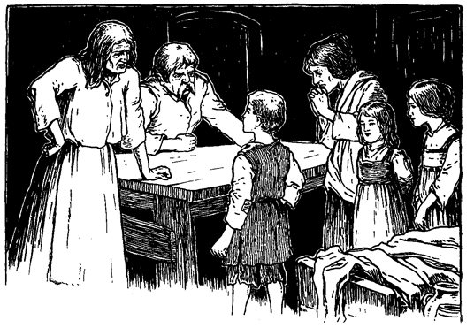Die Mutter fiel vor dem Prinzen auf die Kniee, legte ihre Hände auf seine Schultern und blickte ihn unter aufsteigenden Tränen ängstlich forschend an. Dann sagte sie:
»Ach, mein armer Junge! Das kommt von deinem törichten Lesen, das dir nun gar den Verstand genommen hat. Wie oft habe ich dich davor gewarnt! Daß du auch nicht auf mich hören mußtest! Du brichst deiner armen Mutter das Herz.«
Der Prinz schaute sie voll an und entgegnete sanft:
»Dein Sohn ist gesund und wohlauf und hat seinen Verstand noch, gute Frau. Tröste dich. Laß mich wieder nach dem Palast bringen, wo er ist, und der König, mein Vater, wird ihn dir sogleich zurückgeben.«
»Der König, dein Vater! O, mein Kind! Nimm diese Worte zurück, welche dich und uns alle ins Verderben stürzen können. Schüttle diesen fatalen Traum von dir ab. Komm wieder zu dir selbst. Schau mich an! Bin ich nicht deine Mutter, die dich gebar und dich so liebt?«
Der Prinz schüttelte den Kopf und sagte zögernd:
»Gott weiß, wie ungern ich dich betrübe, aber wahrhaftig, ich sehe dein Gesicht zum erstenmal.«
Die Frau sank in eine sitzende Lage zurück, bedeckte mit den Händen ihr Gesicht und brach in ein herzzerreißendes Schluchzen und Wehklagen aus.
»Nur weiter mit der Mummerei!« schrie Canty. »Heda, Netty und Betty, ihr ungesitteten Rangen! Wollt ihr stehen in Gegenwart des Prinzen? Auf die Kniee mit euch, ihr armseliges Gewürm, und erweiset ihm euere Ehrerbietung!«
Er wieherte vor Lachen bei diesen Worten. Die Mädchen begannen furchtsam für ihren Bruder zu bitten, und Netty sagte:
»Ach, laß ihn doch schlafen gehen, Vater; Ruhe und Schlaf werden ihn wieder heilen.«
»Ja, Vater«, meinte auch Betty, »er ist mehr als gewöhnlich überanstrengt. Morgen wird er sich schon wieder besinnen und fleißig betteln und nicht wieder mit leeren Händen nach Hause kommen.«
Diese unglückliche Bemerkung ernüchterte den Vater plötzlich und brachte ihn auf einen anderen Gedanken. Er wandte sich ärgerlich zum Prinzen und fuhr ihn an:
»Morgen müssen wir dem Eigentümer dieses Loches bare zwanzig Pfennige Miete zahlen für das nächste halbe Jahr, sonst wirft er uns hinaus. Zeig her, was du mit deiner faulen Bettelei eingeheimst hast.«
Der Prinz erwiderte: »Beleidige mich nicht mit deinen schmutzigen Sachen. Ich sage dir wieder: ich bin der Königssohn.«
Ein klatschender Schlag von der breiten Hand Cantys fiel auf die Schulter des Prinzen, welcher taumelnd seiner vermeintlichen Mutter in die Arme flog. Sie drückte ihn an sich und schützte ihn vor dem Hagel von Schlägen und Püffen, die nun auf sie selbst niederprasselten. Erschreckt flohen die Mädchen in ihre Ecken zurück, aber die Großmutter kam eifrig näher, um ihrem Sohne beizustehen. Der Prinz entwand sich den Armen seiner Beschützerin, stellte sich vor sie hin und rief:
»Du sollst nicht für mich leiden, gute Frau. Diese Schurken mögen ihre Wut an mir allein auslassen!«
Natürlich steigerte das die Wut seiner Peiniger noch mehr, und sie fielen denn auch ohne Zeitverlust über ihn her. Sonder Erbarmen droschen sie auf den armen Prinzen los. Dann bekamen auch noch die beiden Mädchen und ihre Mutter ihren Anteil an Prügeln für die Teilnahme, die sie dem armen Prinz erwiesen hatten.
»Nun aber zu Bett!« rief Canty, »die Unterhaltung hat mich ermüdet«.
Das Licht wurde ausgelöscht, und die Familie zog sich zurück.
Sowie aber die jungen Mädchen bemerkten, daß ihr Vater und ihre Großmutter schliefen, krochen sie dorthin, wo der Prinz lag, und schützten ihn mitleidig vor der Kälte mit Stroh und Lumpen. Seine Mutter stahl sich ebenfalls zu ihm hin, streichelte sein Haar und weinte leise. Dann flüsterte sie wieder abgebrochene Trostworte in sein Ohr. Auch ein Stück Brot hatte sie für ihn beiseite gelegt, aber der Knabe vergaß vor Schmerz allen Hunger, wenigstens für geschmacklose, schwarze Brotkrumen. Die Tapferkeit, mit der sie ihn verteidigte, und ihr Mitleid hatten ihn gerührt. Er dankte ihr in herzlichen Ausdrücken und bat sie, schlafen zu gehen und ihren Kummer zu vergessen. Der König, sein Vater, fügte er hinzu, werde sie für ihre Gutherzigkeit und Aufopferung nicht unbelohnt lassen. Dieser Rückfall in seinen »Irrsinn« brach ihr das Herz von neuem. Sie preßte ihn wieder und wieder an ihre Brust, und dann ging sie, in Tränen gebadet, in ihr Bett zurück.
Traurig und nachdenklich lag sie da. Es war ihr so, als sei ein unbestimmtes Etwas an diesem Knaben, das ihr Tom nicht hatte. Sie konnte es nicht näher bezeichnen, aber ihr scharfer mütterlicher Instinkt fühlte es doch heraus. Was, wenn der Knabe trotz allem nicht ihr Sohn wäre? Aber es war doch undenkbar! Sie lächelte beinahe über ihren Gedankengang trotz ihres Kummers. Aber der Argwohn wollte sie doch nicht verlassen. Er verfolgte sie, quälte sie, klammerte sich an sie und wollte sich nicht verscheuchen lassen. Sie fühlte, daß sie keine Ruhe mehr finden würde, bis sie sich felsenfest überzeugt hätte, ob dieser Knabe wirklich ihr Sohn sei oder nicht. Sie grübelte also darüber nach, wie sie diesen Beweis sich verschaffen könnte. Aber die Aufgabe war nicht allzu leicht. Sie erwog das und jenes, verwarf aber schließlich alles wieder, denn nur ein durchaus sicherer Beweis konnte ihr genügen. Augenscheinlich mühte sie ihren armen Kopf umsonst ab; sie war schon daran, die ganze Sache aufzugeben.
Während sie wie verzweifelt nachgrübelte, hörte sie das regelmäßige Atemholen des Knaben, der mittlerweile in Schlaf gefallen war. Plötzlich aber fuhr er mit einem leisen Schrei auf, wie gequält von einem unruhigen Traum. Dieser kleine Zwischenfall brachte sie endlich auf einen Gedanken, der ihr einen untrüglichen Beweis liefern mußte, ob der Knabe ihr Tom sei.
Geräuschlos, aber in fieberhafter Aufregung erhob sie sich, zündete die Kerze an und murmelte bei sich:
»Könnte ich ihn nur im richtigen Augenblicke sehen, so wüßte ich es. Seit jenem Tage, da ihm in seiner frühen Jugend eine Ladung Pulver ins Gesicht spritzte, hebt er immer blitzschnell seine Hände schützend vor die Augen, wenn er aus einem Traume oder in Gedanken auffährt, genau wie er es an jenem Tage machte. Stets aber wendet er dabei die äußere Handfläche einwärts, was sonst kein Mensch tun würde. Ich habe es wohl hundertmal gesehen: immer, ohne Ausnahme, machte er es so. Nun wollen wir einmal sehen!
Inzwischen hatte sie sich an den schlafenden Knaben herangeschlichen, und hielt dabei die Kerze mit der Hand beschattet. Ganz sachte und behutsam beugte sie sich über ihn, trotz der großen Aufregung kaum atmend. Jetzt plötzlich nahm sie die Hand von der Kerze weg, so daß das Licht ihm grell ins Gesicht fiel. Zugleich schlug sie mit ihrem Knöchel hart an seinem Ohr auf den Boden. Erschreckt riß der Schläfer die Augen weit auf und warf einen verwunderten Blick umher. Die erwartete Bewegung mit den Händen blieb aus.
Hoffnungslose Überraschung zeigte sich in den Mienen der armen Frau. Indes verbarg sie gewaltsam ihre Gefühle und suchte den Knaben zu beruhigen, der auch bald wieder einschlummerte. Dann kroch sie zurück und beriet mit sich selbst über das klägliche Ergebnis ihres Versuches. Sie wollte sich zuerst einreden, der Irrsinn habe Tom auch seine altgewohnte Bewegung geraubt: aber sie konnte selbst nicht recht daran glauben.
»Nein«, sagte sie sich, »die Hände sind doch nicht verrückt, so schnell könnten sie ihre Angewöhnung nicht verlernen. O, das ist ein schwerer Tag für mich.«
Nun aber erwies sich die Hoffnung ebenso eigensinnig und hartnäckig, wie vorher der Zweifel. Sie wollte ihre Sache nicht so ohne weiteres verloren geben, sondern einen neuen Versuch wagen. Vielleicht war der Mißerfolg ein zufälliger gewesen. Sie schreckte daher den Knaben ein zweites und nach einer Weile ein drittes Mal aus dem Schlafe auf, immer mit demselben Ergebnis, wie das erste Mal. Dann aber schleppte sie sich gebrochen nach ihrem Lager zurück und stöhnte: »Und ich kann, ich kann ihn nicht aufgeben; er muß mein Junge sein.« Allmählich aber schloß ein mildtätiger Schlaf ihre müden Augen.
Auch der Prinz schlummerte fest und ruhig weiter. Stunde um Stunde verrann. Nun aber schien er aus seiner Betäubung zu erwachen. Halb noch im Traume murmelte er:
»Herr Wilhelm!«
Als er keine Antwort bekam, rief er noch einmal:
»Herr Wilhelm Herbert! Kommt doch schnell hieher und höret, was ich sonderbares geträumt habe. Herr Wilhelm, hört Ihr? Mir war, als sei ich in einen Bettler verwandelt und ... heda! Wachen! Herr Wilhelm! Wie! ist denn niemand hier? Das soll ihnen schlecht ...«
»Was fehlt dir?« fragte eine Stimme flüsternd neben ihm, »nach wem riefest du eben?«
»Nach Herrn Wilhelm Herbert. Seid Ihr es?«
»Ich? wer sollte ich sein, als deine Schwester Netty? O Tom, du bist immer noch verrückt. Ich wollte, ich wäre nie wieder vom Schlafe erwacht! Aber bemeistere doch deine Zunge, sonst werden wir noch alle zu Tode geprügelt!«
Der plötzlich wachgewordene Prinz wollte auffahren. Aber der Schmerz, den ihm seine halb zerschlagenen Glieder verursachten, brachte ihn jäh in die Wirklichkeit zurück. Stöhnend sank er wieder auf sein elendes Stroh mit dem qualvollen Rufe:
»Ach, so war es doch kein Traum!«
All das Elend, dem der Schlaf ihn so gnädig entrückt hatte, kehrte zurück. Er war also nicht mehr der verhätschelte Prinz, auf dem die Augen eines ganzen Volkes voll Verehrung ruhten, sondern ein armer, ausgestoßener Bettler, in Lumpen gekleidet, als Gefangener in einem Loche, das gerade noch für Tiere gut genug war, und in Gesellschaft vielleicht mit Dieben.
Während er sich seinem Kummer überließ, wurden draußen lachende Stimmen und Rufe laut. Im nächsten Augenblick klopfte es mehrmals heftig an die Türe. Johann Canty hörte auf zu schnarchen und sagte:
»Wer klopft da? Was wollt ihr?«
Eine Stimme antwortete:
»Weißt du, wer das war, den du gestern Abend mit deinem Knüppel niedergeschlagen hast?«
»Nein, ich weiß es nicht und kümmere mich auch nicht darum.«
»Vielleicht wirst du aber bald anderer Meinung. Wenn du dir den Hals aus der Schlinge ziehen willst, so kann nur schleunige Flucht dich retten. Der Mann gibt in diesem Augenblick den Geist auf. Es ist der Priester, Vater Andreas.«
»Hol's der Kuckuck!« rief Canty. Er stand hastig auf, rüttelte seine Familie aus dem Schlaf und befahl barsch:
»Auf mit euch allen und flieht! Sonst wird euch der Henker holen.«
Kaum fünf Minuten später stand schon die ganze Familie auf der Straße. Johann Canty hielt den Prinzen am Handgelenk und eilte durch Nacht und Nebel dahin. Zugleich warnte er ihn mit leiser Stimme:
»Halt deine Zunge, du verrückter Narr, und sprich unseren Namen nicht aus. Ich will mir einen anderen Namen beilegen, um die Spürhunde des Gesetzes von unserer Fährte abzubringen. Halt deine Zunge, wenn ich dir gut zu Rate bin.«
Die letzten Worte richtete er auch an seine Familie und fügte bei:
»Sollten wir auseinander kommen, so mache sich jeder nach der Londoner Brücke. Wer zuerst hinkommt, soll dort beim letzten Tuchladen warten. Dann wollen wir alle zusammen auf die andere Seite der Themse fliehen.«
Kaum hatte er diese Worte gesprochen, so kam die Gesellschaft aus der Dunkelheit heraus plötzlich auf einen hellerleuchteten Platz. Eine tanzende, singende und schreiende Menge drängte sich hier nach dem Flußufer zu. Soweit man sehen konnte, waren dort längs der Themse auf- und abwärts Freudenfeuer angezündet. Die Londoner und andere Brücken erstrahlten wie in einem Licht. Der ganze Fluß schien zu glühen von dem Blitzen und Schimmern von farbigen Lichtern. Unaufhörlich fuhren Raketen zischend in die Luft, verschlangen sich dort ineinander und lösten sich prasselnd in einen dichten Funkenregen auf, der die Nacht beinahe zum Tage machte. Lärmende, zechende Gruppen umstanden die überall aufgestellten Trinkstände. Ganz London schien im Freien zu sein.
Johann Canty stieß einen lästerlichen Fluch aus und wollte wieder zurück; aber es war zu spät. Bald waren er und seine Familie von dem schwärmenden Bienenhaufen umwogt und in einem Augenblick von einander getrennt. Nur den Prinzen hielt Canty immer noch fest. Bei seinem Bemühen, sich Bahn durch die Menge zu schaffen stieß er ziemlich unsanft an einen vierschrötigen Bootsmann, der schon stark angeheitert schien. Dieser legte Canty seine schwere Hand auf die Schulter und rief:
»Heda, wohin so eilig, Freund? Du wirst doch nicht etwa so schmutzig sein, jetzt an Geschäfte zu denken, wo jeder treue Untertan feiert?«
»Meine Geschäfte gehen dich nichts an«, entgegnete Canty roh, »nimm deine Hand weg und laß mich ungeschoren«.
»So? Jetzt sollst du erst recht nicht fort, bis du auf die Gesundheit des Kronprinzen getrunken hast. Das laß dir gesagt sein«, sprach der Bootsmann und vertrat ihm den Weg.
»Dann her mit dem Becher und schwatz nicht lang!«
Andere Zecher drängten sich herzu und schrieen:
»Den Liebesbecher Der Liebesbecher und die beim Trinken desselben beobachteten Zeremonien sind älter als die englische Geschichte. Man nimmt an, die Sitte sei mit den Dänen nach England gekommen. Soweit die englische Geschichte reicht, hat man immer bei englischen Banketten den Liebesbecher getrunken. Den dabei üblichen Zeremonien soll eine besondere Ursache zugrunde gelegen haben. In jenen alten rauhen Zeiten hielt man es für weise und geboten, beide Hände der sich Zutrinkenden zu beschäftigen. Während der eine dem anderen zutrank, konnte es sonst leicht geschehen, daß der andere die günstige Gelegenheit wahrnahm und den ihm Zutrinkenden erdolchte., den Liebesbecher! Der saubere Patron soll den Liebesbecher leeren, sonst werfen wir ihn den Fischen zum Fraße hin.«
Ein mächtiger Pokal wurde gebracht. Der Bootsmann ergriff ihn an einem Henkel, während er die andere Hand emporhielt, als fasse er den Zipfel einer Serviette, und bot ihn so in althergebrachter Weise Canty dar. Dieser hatte mit der einen Hand den zweiten Henkel zu ergreifen, während er mit der anderen Hand den Deckel aufheben mußte, wie es die Sitte vorschrieb. Das nötigte ihn natürlich, die Hand des Prinzen einen Augenblick loszulassen. Dieser nahm die günstige Gelegenheit wahr, schlüpfte zwischen dem Wald von Beinen hindurch und war im Nu verschwunden. In der nächsten Minute wäre er in dieser wogenden Menschenmasse nicht leichter zu finden gewesen, als ein verlorenes Geldstück in den Fluten des Atlantischen Ozeans.
Dieser Tatsache ward er sich bald bewußt. Ebenso war ihm klargeworden, daß ein untergeschobener Kronprinz an seiner Stelle von der Stadt gefeiert wurde. Tom Canty, der arme Bursche, mußte vorbedacht die verlockende Gelegenheit benutzt haben und zum Thronräuber geworden sein.
Es gab für den Prinzen also nur einen Weg, den er einschlagen mußte. Dieser führte nach dem Rathause, wo er sich ausweisen und den Betrüger entlarven wollte. Er nahm sich vor, Tom hängen, ertränken und vierteilen zu lassen, wie es damals im Falle des Hochverrats Sitte und Brauch war.
Inzwischen fuhr die königliche Barke in Begleitung der ansehnlichen Flottille zwischen den zahllosen beleuchteten Booten die Themse hinunter. Musik erfüllte die Luft, Feuer umsäumten den Fluß zu beiden Seiten. Über die Altstadt erglühte die Luft von unzähligen unsichtbaren Freudenfeuern. Manch ein schlanker Turm, der hoch gen Himmel ragte, war ganz mit funkelnden Lichtern besetzt, was sich aus der Ferne ansah wie von Juwelen blitzende Lanzen, die in die Luft geworfen werden. Wo die Flottille durchkam, empfing sie ein andauerndes stürmisches Hurra, das sich zwischen dem Kanonendonner hindurch wie Salvenfeuer der Infanterie anhörte.
Für Tom Canty, der in seidenen Kissen halb begraben lag, war dieses ganze Schauspiel ein unsäglicher Genuß. Seine kleinen Freundinnen dagegen, Prinzessin Elisabeth und Fräulein Johanna Grey, waren an derartige Aufzüge gewöhnt. Das Schiff fuhr weiter durch die märchenschöne Nacht bis mitten in die Altstadt hinein. Da landete die Flottille, und wenige Augenblicke später stand der glänzende Zug vor dem Rathaus. Hier wurden Tom und die beiden jungen Damen vom Lord Mayor und den Vätern der Stadt in ihren goldenen Ketten und Staatsgewändern feierlich empfangen und an den Kopf des gewaltigen Saales an einen erhöhten Sitz unter einem reichen Baldachin geleitet, während Herolde mit dem Zepter und dem Stadtschwert voranschritten. Die Herren und Damen, welche Tom und seine kleinen Freundinnen bedienen sollten, nahmen hinter deren Sitzen Platz.
An einem niederigen Tische saßen die Großen des Hofes und andere edle Gäste mit den Spitzen der Stadt. Die übrigen Teilnehmer machten sich hinter ihnen an einer Menge von Tischen bequem. Von ihrer luftigen Höhe herab schauten die Riesen Gog und Magog, die alten Wächter der Stadt, auf das festliche Gepränge, das ihnen seit vielen Menschenaltern vertraut war.
Jetzt stieß ein Herold ins Horn, worauf ein stark beleibter Fleischermeister an einem Eingange zur linken Hand erschien. Hinter ihm trugen seine Gesellen mit umständlicher Feierlichkeit einen rauchenden großmächtigen Ochsen, gebraten und mundgerecht, herein.
Nach dem Tischgebet erhob sich Tom, und das ganze Haus mit ihm, und er trank aus einem herrlichen goldenen Liebesbecher der Prinzessin Elisabeth zu. Von ihr ging er zu Fräulein Johanna und dann durch die ganze Versammlung. Damit begann das Gelage.
Um Mitternacht war die Schwelgerei auf ihrem Höhepunkt. Jetzt kam eines jener malerischen Schauspiele, die in jenen alten Tagen so sehr bewundert wurden. Zunächst traten ein Freiherr und ein Graf herein, nach türkischer Mode in Gewändern von Goldbrokat gekleidet. Sie trugen Mützen von karmesinrotem Sammet mit dicken goldenen Schnüren. An breitem goldgestickten Gehänge hingen die kostbaren krummen Säbel. Dann kamen wieder ein Freiherr und ein Graf in langen Gewändern aus gelbem Taffet, mit Aufschlägen aus weißem Taffet, die wiederum mit roten Streifen besetzt waren, nach russischer Mode. Den Kopf bedeckte eine graue Pelzmütze. Jeder von diesen hatte ein Beil in seiner Hand und an den Füßen Stiefel mit fußlangen, aufwärts gerichteten Spitzen. Hinter ihnen aber erschien ein Ritter, dann der Lordadmiral und mit ihm fünf Edle in roten Wämsern, die auf der Brust mit silbernen Kettchen geschmückt waren. Darüber trugen sie kurze Mäntel aus rotem Taffet und Hüte mit Fasanenfedern. Diese waren nach preußischer Mode gekleidet. Die Fackelträger, nahezu an hundert, erschienen in rotem und grünem Taffet. Ihre Gesichter aber waren schwarz, wie die der Mohren.
Nun erfolgte die Aufführung einer »Mummerei«. Hernach tanzten zunächst die vermummten Spielleute. Bald aber folgten auch die edlen Herren und Damen ihrem Beispiel und drehten sich in kunstvollem Reigen, was sehr vergnüglich anzusehen war.
Während Tom auf seinem erhöhten Sitz auf dieses bunte Treiben hinsah und das farbenprächtige Schauspiel der herumwirbelnden fröhlichen Gestalten bewunderte, wollte der zerlumpte wirkliche Prinz seine Rechte geltend machen und den Betrüger entlarven. Ungestüm forderte er Einlaß an den Toren des Rathauses. Die Menge freute sich höchlich über diesen Auftritt, drängte vorwärts und reckte die Hälse, um den kleinen Streithahn zu sehen. Man fing an, ihn zu höhnen und zu necken, um sich an seinem gesteigerten Zorn noch mehr zu belustigen. Tränen der Entrüstung drangen ihm in die Augen, aber er hielt stand und trotzte dem Pöbel mit königlichem Stolz. Als die Spöttereien immer ärger wurden, rief er aus:
»Und ich sage es euch wieder, ihr sittenloses Pack, ich bin der Kronprinz. So verlassen und freundlos ich auch bin, wenn auch keiner mir nur ein gutes Wort, geschweige denn Hilfe zuteil werden läßt, so will ich dennoch nicht von meinem guten Rechte weichen!«
»Ob du nun ein Prinz oder kein Prinz bist, das ist ganz gleich. Jedenfalls bist du ein tapferer Junge, und einen Freund hast du auch. Hier stelle ich mich an deine Seite und will dir beweisen, daß Michael Henden nicht der schlechteste Freund ist, den du finden kannst. Gib dich nicht mehr mit diesen Leuten ab, mein Kind. Ich weiß besser, wie man mit diesem Gelichter umzugehen hat.«
Der so sprach, war eine Art fahrender Ritter nach Kleidung, Aussehen und Haltung. Er war von hoher Gestalt, kräftig und schön gebaut. Sein Wams und seine Beinkleider waren von kostbarem Stoff, aber verblichen und fadenscheinig, und die goldenen Tressen hatten allen Glanz verloren. Seine Halskrause war zerknittert und beschädigt. Die Feder auf seinem ins Gesicht gedrückten Hut war gebrochen und unscheinbar geworden. An der Seite trug er ein langes Rapier in einer rostigen eisernen Scheide. Sein polterndes Auftreten kennzeichnete ihn sofort als alten Haudegen.
Die Worte dieser seltsamen Erscheinung wurden mit lautem Gelächter und Hallo aufgenommen. Alles schrie durcheinander: »Da ist noch ein verkleideter Prinz!« »Wahre deine Zunge, Freund, es kann dir schlecht bekommen!« »Seht einmal, wie bärbeißig der Kerl dreinschaut!« »Entreißt ihm den Jungen!« »Zur Pferdeschwemme mit dem Burschen!«
Zugleich griff einer nach dem Prinzen. Aber im nämlichen Augenblick fuhr auch schon das lange Schwert des Fremden aus der Scheide und sauste auf den vorwitzigen Angreifer nieder, daß er dröhnend zur Erde stürzte. Jetzt aber schrieen zwanzig Stimmen: »Tötet den Hund! Tötet ihn!«
Stürmisch umdrängte die Menge den Haudegen, der rasch für seinen Rücken Deckung an der Mauer suchte und nun mit seiner langen Waffe wie wahnsinnig um sich hieb. Links und rechts flogen die Angreifer heulend auf den Boden. Aber der Pöbel stürzte über ihre Leiber vorwärts und bedrängte den Helden mit ungeminderter Wut. Seine Augenblicke schienen gezählt, sein Verderben sicher, als plötzlich ein Trompetenstoß ertönte und eine Stimme rief:
»Platz da für den Boten des Königs!«
Zugleich sprengte ein Trupp Reiter mit blankem Säbel in die Meute hinein, die kreischend auseinanderfloh, so schnell die Beine sie trugen. Der kühne Fremdling hob den Prinzen auf seinen Arm, entfernte sich ruhig, und bald waren beide außer Gefahr.
Doch kehren wir nun ins Rathaus zurück. Mitten in den jubelnden Lärm des Festes schmetterte plötzlich eine Fanfare. Augenblicklich trat tiefstes Schweigen ein. Dann erhob sich eine einzelne Stimme, die des Königsboten, und begann weithin tönend eine Proklamation zu verlesen, der die ganze Versammlung stehend lauschte. Die feierlich gesprochenen Schlußworte lauteten:
»Der König ist tot!«
Wie von einem Gedanken durchzittert, beugten alle Anwesenden ihr Haupt und verharrten so eine Weile in andächtigem Schweigen. Dann aber sanken alle auf die Kniee, erhoben ihre Hände zu Tom, und mächtig erscholl aus aller Brust ein Ruf, der das gewaltige Gebäude zu erschüttern schien:
»Lang lebe der König!«
Verwundert und beinahe erschrocken ließ Tom seine Augen auf diesem feierlichen Schauspiel ruhen. Dann blickte er wie in Träumen auf die ebenfalls knieenden Prinzessinnen neben ihm und weiter, wie fragend auf den Grafen Hertford. Jetzt erhellte plötzlich ein Gedanke seine Mienen. Hastig flüsterte er Lord Hertford ins Ohr:
»Antworte mir getreulich und ohne Rückhalt! Wenn ich hier einen Befehl äußerte, den kein anderer als der König auszusprechen berechtigt ist, würde man diesem Befehle ohne Widerspruch Folge leisten?«
»Ohne allen Zweifel, mein Lehnsherr. In deiner Person gebietet die Majestät Englands. Du bist der König, dein Wort ist Gesetz.«
Da sprach Tom lebhaft und seine Stimme klang ernst und nachdrücklich:
»Dann soll des Königs erstes Gesetz ein Gebot der Gnade sein! Und Gnade soll auch fürder meine Schritte begleiten. Erhebe dich, eile nach dem Turme und verkünde dort, der Herzog von Norfolk soll nicht sterben!«
Rasch wurden diese Worte aufgefangen und eifrig von Ohr zu Ohr weitergetragen. Und wie Hertford aufstand, um dem Befehle nachzukommen, brach ein stürmischer Jubel in der weiten Halle aus, und tausendstimmig erscholl der Ruf:
»Die Blutherrschaft ist zu Ende! Lang lebe Eduard, der König von England!«
Michael Henden und der kleine Prinz wanderten inzwischen durch Seitengäßchen und wenig begangene Wege dem Flusse zu. Sie stießen auf kein Hindernis, bis sie an die Londonerbrücke kamen. Dort pflügten sie sich, so gut es ging, zwischen der sich stauenden Menge hindurch. Henden hielt den Prinzen, oder vielmehr den nunmehrigen König, fest am Handgelenk. Die Nachricht vom Tode des Königs war schon unter das Volk gedrungen und der Knabe vernahm sie von tausend Lippen, denn niemand sprach von etwas anderem.
Die traurige Kunde ging dem Herzen des armen Waisenknaben sehr nahe. Er bebte am ganzen Körper und brach schließlich in bitterliches Weinen aus. Die Größe des Verlustes ward ihm voll bewußt, denn der grimmige Tyrann, dessen Name alle anderen mit Schrecken erfüllte, war ihm stets ein liebevoller Vater gewesen. Nur mechanisch und taumelnd folgte er seinem Führer; alles flimmerte ihm vor den Augen. Er hielt sich für das elendeste, unglücklichste Geschöpf Gottes. Da brauste weithin durch die Nacht der donnernde Ruf: »Lang lebe König Eduard der Sechste!«
Jetzt kam wieder Leben in die Gestalt des armen Kleinen. Seine Augen blitzten und ein stolzes Gefühl durchzuckte ihn bis in die Fingerspitzen. »Ah«, dachte er, »wie großartig und seltsam es auch scheinen mag: ich bin der König!«
Unsere Freunde bahnten sich ihren Weg langsam durch die Volksmenge, welche dichtgedrängt die Brücke besetzte. Dieser schon 600 Jahr alte, merkwürdige Bau war allezeit eine verkehrsreiche Durchfahrt gewesen. Zu beiden Seiten reihten sich von einem Ufer bis zum anderen Verkaufsläden, über denen sich die Wohnungen der Geschäftsinhaber befanden. Die Brücke bildete eine Art Stadt für sich. Sie hatte ihre Gasthöfe, Wirtschaften, Bäckereien, Fleischereien, Kurzwarengeschäfte, Lebensmittel- und Manufakturwarengeschäfte, ja sogar eine Kirche. Sie schaute auf ihre beiderseitige Umgebung hin, wie auf Vorstädte, die ihr nicht ebenbürtig wären. Sie stellte sozusagen eine geschlossene Gesellschaft dar. Freilich besaß sie nur eine Straße, die etwa den fünften Teil einer Meile lang war. Alle Bewohner kannten sich von Kindesbeinen an. Natürlich hatten sie auch ihre Aristokratie, nämlich wohlhabende Fleischer- und Bäckerfamilien und was weiß ich, die jahrhundertelang hier angesessen waren und die Geschichte der Brücke samt den sich daran knüpfenden Legenden bis in alle Einzelheiten kannten und ihren eigenen Brückendialekt sprachen.
Die Bevölkerung war denn auch engherzig und voller Vorurteile gegen alle, die außerhalb der Brücke wohnten. Viele wurden dort geboren, auferzogen, heirateten, alterten und starben, ohne daß sie je einen Fuß über die Brücke hinausgesetzt hätten. Solche Leute waren natürlich der Meinung, der großartige, ununterbrochene Verkehr, der sich Tag und Nacht über die Brücke bewegte, gehöre gewissermaßen ihnen. Kehrte ein Herrscher aus dem Auslande zurück, oder kam ein Seeheld aus fernen Meeren heim, so mußten sie auf oder unter der Brücke durch. Niemand genoß einen schöneren Anblick solcher Prunkaufzüge, als die Bewohner dieser Brücke. So bot sich ihnen vor den Augen ein fortwährender Anschauungsunterricht in englischer Geschichte. Die einzige düstere und abstoßende Erscheinung bildeten in den letzten Jahren die vielen abgeschnittenen Köpfe einst erlauchter und berühmter Männer, die an eisernen Spießen über den mächtigen Torbogen zu beiden Seiten der Brücke staken.
Doch kehren wir zu unserer Erzählung zurück. Henden strebte mit seinem Schützling einem kleinen Gasthaus auf der Brücke zu, das er sich zum Absteigequartier gewählt hatte. Wie er sich demselben näherte, hörte er plötzlich eine rohe Stimme sagen:
»So, da kommst du ja endlich! Du sollst mir nicht wieder entrinnen, dafür bürge ich. Ein andermal wirst du uns nicht wieder warten lassen, sonst werde ich dir deine Knochen zu Pudding stampfen.«
Und Johann Canty, der diese Worte gesprochen hatte, legte seine Hand auf den Prinzen, um ihn an sich zu reißen.
Michael Henden vertrat ihm den Weg und entgegnete:
»Nicht so schnell, Freund! Du bist unnötigerweise roh, deucht mir. Was hat der Junge mit dir zu schaffen?«
»Wenn du es darauf abgesehen hast, dich in Angelegenheiten anderer Leute zu mischen, so kann ich dir sagen, daß das mein Sohn ist.«
»Das ist eine Lüge!« rief hitzig der kleine König.
»Kühn gesprochen, und ich glaube dir, wie es auch sonst in deinem Kopf aussehen mag, mein Junge. Aber wenn auch dieser gemeine Schurke dein Vater wäre, das bleibt sich ganz gleich. Er soll dich nicht schlagen und mißhandeln, wie er gedroht hat, wenn du lieber bei mir bleibst.«
»O ja, gewiß. Der Mann geht mich gar nichts an. Ich verabscheue ihn und will lieber sterben, als mit ihm gehen.«
»Dann ist die Sache abgemacht und nichts weiter zu sagen.«
»Das wollen wir noch sehen!« schrie Canty und trat hinter Henden, um an den Knaben zu gelangen. »Nun soll er erst recht ...«
»Wenn du ihn auch nur anrührst, du vertierter Unhold, so spicke ich dich auf wie eine Gans!« rief Henden, versperrte ihm den Weg und legte die Hand an seinen Degen. Canty zog sich zurück.
»Merke es dir ein für alle mal«,fuhr Henden fort, »diesen Jungen habe ich unter meinen Schutz genommen, als ein unflätiger Pöbel ihn mißhandeln oder gar töten wollte. Bildest du dir nun ein, ich werde ihn dir zu einem vielleicht noch schlimmeren Schicksal überlassen? Denn ob du nun sein Vater bist oder nicht, und ich halte es für eine ausbündige Lüge, so wäre ein schneller Tod immer noch besser für solch einen Jungen, als ein Leben in deiner schmutzigen Gesellschaft. Pack dich also deine Wege, und das rasch, oder ich mache dir Beine. Mit so einem Kerl macht man nicht viel Federlesens!«
Johann Canty drückte sich unter Drohungen und Flüchen fort und war bald in der Menge verschwunden. Henden aber stieg mit seinem Schützling drei Treppen hoch in sein Zimmer hinauf, nachdem er unten eine Mahlzeit bestellt hatte. Es war ein ärmliches, kahles Gemach mit einem schäbigen Bett und wenigen alten Möbeln. Zwei Kerzen erhellten nur dürftig den Raum. Der kleine König schleppte sich nach dem Bett und warf sich darüber, denn Hunger und Mattigkeit hatten seine Kräfte erschöpft. Schläfrig murmelte er noch:
»Bitte, wecke mich, wenn der Tisch gedeckt ist.« Dann sank er sofort in tiefen Schlaf.
Ein Lächeln umspielte Hendens Lippen, und er dachte bei sich:
»Meiner Treu, der kleine Bettler nimmt mein Bett in Beschlag mit einer so natürlichen und leichten Anmut, als komme es ihm von Gottes und Rechts wegen zu, ohne auch nur um Erlaubnis zu bitten oder eine Entschuldigung zu sagen. In seiner krankhaften Einbildung nannte er sich Kronprinz, und wahrhaftig, er hält an seiner Rolle fest. Arme, kleine, freundlose Ratte! Ohne Zweifel hat sein Geist unter fortgesetzter Mißhandlung gelitten. Nun, von jetzt an will ich sein Freund sein. Ich habe ihn gerettet und will meine Sache nicht halb machen. Überdies fühle ich mich zu diesem kleinen Knirps mit der kecken Zunge hingezogen. Wie tapfer trotzte er dem frechen Janhagel und wie kühn forderte er ihn heraus! Und welch hübsches, sanftes, liebes Gesicht er macht, jetzt, wo der Schlaf ihn seinen Sorgen und Qualen entrissen hat! Ich will ihn unterweisen, von seiner Krankheit heilen, wenn möglich. Ich will ihm sein, wie ein älterer Bruder, für ihn sorgen und über ihn wachen, und wer ihm zu nahe kommt, hat's mit mir zu tun.«
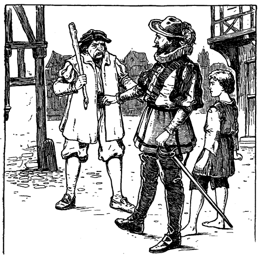Er beugte sich über den Knaben und betrachtete ihn mit wohlwollendem, mitleidigem Interesse, streichelte zärtlich seine Wange und strich ihm die wirren Locken aus dem Gesicht. Ein leises Zittern durchbebte den Körper des Knaben.
»Ei, sieh da«, murmelte Henden, »wie unachtsam war ich doch, ihn so unbedeckt zu lassen, wo er sich so leicht erkälten könnte. Was soll ich aber tun? Wollte ich ihn ins Bett hineinlegen, so müßte ich ihn wecken, und er hat den Schlaf so dringend nötig.«
Er schaute sich nach einer anderen Decke um. Da er aber keine fand, zog er sich das Wams aus und deckte damit den Knaben sorgfältig zu mit den Worten: »Ich bin an scharfe Luft und spärliche Kleidung gewöhnt; das bißchen Kälte werde ich auch noch ertragen können.« Dann ging er im Zimmer auf und nieder, um sein Blut in Bewegung zu erhalten, und fuhr fort, mit sich selbst zu sprechen:
»Sein kranker Geist hat ihm den Glauben beigebracht, er sei der Kronprinz. Die Welt würde sich wundern, daß schon wieder ein Kronprinz da ist, kaum daß der andere König wurde. Aber er hat nun einmal die fixe Idee, er sei Kronprinz und wird daher nicht auf den Gedanken verfallen, er sei mittlerweile nun König geworden. Doch was nun mit dem Knaben beginnen? Ach, ich habe seit den sieben Jahren, die ich im Ausland gefangen lag, nichts mehr von meinem Vater vernommen. Lebt er aber noch, so wird er den armen Knaben mit offenen Armen aufnehmen und ihm um meinetwillen ein neues Heim bieten. Ja, wir wollen heim, und das sofort, ohne Verzug!«
Ein Diener mit dampfenden Speisen trat herein, stellte sie auf einen kleinen tannenen Tisch, setzte zwei Stühle hin und verließ das Gemach wieder. Servieren konnten sich solch ärmliche Gäste selbst. Er schlug die Tür hinter sich zu und weckte damit den Knaben, der im Bette aufsaß und vergnügt um sich schaute. Bald aber umschatteten sich seine Züge wieder und tief aufseufzend murmelte er: »Ach, weh mir, es war nur ein Traum!« Dann bemerkte er Hendens Wams, blickte auf Henden selbst und begriff das Opfer, das ihm sein Beschützer gebracht hatte. Mit sanftem Tone sagte er zu ihm:
»Du bist gut zu mir, ja, sehr gut. Nimm dein Wams wieder und ziehe es an, ich brauche es nicht mehr.«
Nach diesen Worten stand er auf, trat zum Waschtisch hin und zögerte, als ob er auf etwas warte. Henden sagte munter:
»Nun haben wir eine richtige, kräftige Suppe und einen Bissen zu essen. Alles ist warm und schmackhaft und wird dich wieder vollends auf die Beine bringen!«
Der Knabe erwiderte nichts, sondern schaute nur unverwandt, mit verwundertem Blick und etwas ungeduldig auf die hohe Gestalt des Kriegers. Henden war verblüfft und fuhr fort:
»Was fehlt dir noch?«
»Lieber Herr, ich möchte mich waschen.«
»Das ist alles? Deshalb brauchst du Michael Henden nicht um Erlaubnis zu fragen. Mache es dir nur ganz bequem, als wärest du zu Hause.«
Aber immer noch stand der Knabe da, ohne sich zu rühren. Mehr noch, er stampfte ein- oder zweimal mit seinem kleinen Fuß ungeduldig auf den Boden. Henden war gänzlich verblüfft. Er sprach:
»Du lieber Himmel, was soll's denn?«
»Bitte, gieße doch Wasser ein, und mache nicht so viele Worte.«
Henden unterdrückte nur mit Mühe ein krampfhaftes Lachen und sagte sich: »Bei allem, was heilig ist, das ist doch wunderbar!« Rasch kam er herbei und tat nach dem Geheiß des kleinen Frechdachses. Dann blieb er daneben wie betäubt stehen, bis der Befehl: »Reiche mir das Handtuch!« ihn wieder aufrüttelte. Er nahm ein Handtuch, das dem Knaben vor der Nase lag und händigte es ihm ohne Bemerkung ein. Dann wusch er sich selbst, während der Kleine sich an den Tisch setzte und über die Speisen hermachen wollte. Henden beeilte sich und trat dann ebenfalls an den Tisch, um sich auf dem anderen Stuhl niederzulassen. Da aber sprach der Knabe entrüstet:
»Wie? Du willst dich setzen in Gegenwart des Königs?«
Diese Worte erschütterten Henden bis ins Innerste. Er dachte bei sich: »Wahrhaftig, der Irrsinn des Knaben schreitet mit der Zeit fort. Mit dem Thronwechsel ist auch er König geworden. Na, meinetwegen! Ich will auch dazu gute Miene machen, sonst würde er mich noch, weiß Gott, in den Turm schicken.«
Über seinen eigenen Scherz belustigt, setzte er seinen Stuhl vom Tische weg, stellte sich hinter den Sessel des Königs und bediente ihn in der höflichsten Weise.
Während der König aß, ließ auch seine steife Würde etwas nach, und mit der Stillung seines Hungers kam auch die Lust zu plaudern. Er sagte:
»Ich glaube, du nanntest dich Michael Henden, wenn ich recht hörte?«
»Ja, Majestät«, erwiderte Henden. Dann dachte er bei sich: »Ich muß den armen Jungen zu erheitern suchen und befriedigen. Ich muß ihn als König behandeln und darf nicht aus der Rolle fallen, sonst würde ich nur das Spiel verderben und mein barmherziges Vorhaben vereiteln.«
Der König stärkte sich mit einem neuen Glas Wein und sprach weiter:
»Ich möchte dich kennen lernen. Erzähle mir deine Geschichte. Du hast etwas an dir, was mir gefällt und mich zu deinen Gunsten einnimmt. Bist du von Adel?«
»Wir bilden gewissermaßen den Schwanz des Adels, Majestät. Mein Vater ist Freiherr Richard Henden auf Hendenhall bei Mönchsholm in Kent.«
»Ich erinnere mich des Namens nicht mehr. Fahre fort. Erzähle mir deine Geschichte.«
»Es gibt nicht viel zu erzählen, Majestät. Aber es mag aus Mangel an etwas besserem eine kleine halbe Stunde verkürzen. Mein Vater, Herr Richard, ist sehr reich und von edler Gesinnung. Meine Mutter starb, als ich noch jung war. Ich habe zwei Brüder. Arthur, der älteste, ist wohlgesinnt wie mein Vater. Hugo dagegen, mein jüngerer Bruder, ist eine gemeine Seele, habgierig, hinterlistig, verdorben, ein richtiger Kriecher. Schon von der Wiege an war er so, und so war er noch vor zehn Jahren, als ich ihn zuletzt sah. Er war damals ein ausgemachter Schurke von neunzehn Jahren, während ich zwanzig und Arthur zweiundzwanzig Jahre zählten. Sonst ist niemand bei uns, als Fräulein Edith, meine Base, die damals ein sanftes, liebenswürdiges, schönes Kind von sechzehn Lenzen war. Sie ist die Tochter eines Grafen, die letzte ihres Stammes und Erbin eines großen Vermögens. Mein Vater war ihr Vormund. Ich liebte sie, und sie liebte mich. Aber sie war schon in der Wiege mit meinem Bruder Arthur verlobt, und Herr Richard, mein Vater, wollte nicht, daß dieses Verlöbnis gebrochen würde. Arthur liebte ein anderes Mädchen und forderte uns auf, gutes Mutes zu sein und an der Hoffnung festzuhalten, daß Zeit und Zufall einst doch noch zu unserer Vereinigung führen würden. Hugo war es um Fräulein Ediths Vermögen zu tun, wiewohl er sagte, er liebe nur sie. Es war aber immer so eine Eigenheit von ihm, etwas zu sagen und etwas anderes zu denken. Aber seine Künste waren an dem Mädchen verloren; meinen Vater konnte er täuschen, sonst aber niemand.
»Mein Vater liebte ihn mehr als uns alle, vertraute und glaubte ihm. War er doch das jüngste Kind und bei den anderen verhaßt. Hugo konnte aber auch so einschmeichelnd und überzeugend reden und ganz abgefeimt lügen. Ich war damals jugendlich wild und ungestüm, aber dieses feurige, leicht erregte Blut schadete nur mir selbst, keinem anderen. Diesen meinen Fehler wußte Hugo zu seinen Gunsten zu verwerten. Arthurs Gesundheit war sehr schwach, und so glaubte Hugo, er habe es nur mit mir allein zu tun.
»Es würde zu weit führen, hier all seinen Intrigen nachzugehen. Kurz, mein Bruder vergrößerte meine Fehler und machte sie zu Verbrechen. Seine Bosheit krönte er damit, daß er einst eine Strickleiter in mein Zimmer hineinpraktizierte. Auf Grund dieser Leiter und mit Hilfe bestochener Diener überzeugte er meinen Vater, ich hätte beabsichtigt, Edith zu entführen und sie, entgegen seinem ausgesprochenen Willen zu heiraten.
»Drei Jahre Verbannung vom väterlichen Herd und von England sollten mir die Torheiten aus dem Kopfe treiben und mich zu einem verständigen Manne heranbilden. Ich machte meine Prüfungszeit auf dem Festlande durch. In Strapazen, Entbehrungen und Abenteuern langjähriger Kriege stählte ich Geist und Körper. Aber in der letzten Schlacht ward ich gefangen und schmachtete sieben Jahre lang im Gefängnis. Durch List und Entschlossenheit gewann ich mir endlich die Freiheit wieder und erreichte glücklich die heimische Küste. Vor kurzem bin ich, arm an Beutel, hier angekommen, ohne die geringste Kenntnis dessen, was in diesen unglückseligen sieben Jahren in Hendenhall vorgefallen ist. Damit ist meine magere Geschichte zu Ende, Majestät.«
»Man ist schändlich mit dir umgegangen!« rief der kleine König mit blitzenden Augen. »Aber ich will dir zu deinem Recht verhelfen; beim heiligen Kreuz, das will ich. Der König hat es gesagt.«
Angeregt durch Hendens Erzählung, berichtete nun auch er, was ihm neulich an Unglück zugestoßen war. Michael hörte ganz verwundert zu und sagte sich am Schlusse:
»Ei, was der für eine Einbildungskraft hat! Es ist doch eigentlich wunderbar, wie er aus dem luftigen Nichts in solcher Geläufigkeit eine so romantische Geschichte zusammenbraut. Armer kleiner kranker Kopf, es soll dir nicht an Schutz und Schirm fehlen, solange ich unter den Lebenden weile. Er soll mir nicht mehr von der Seite weichen; er soll mein Liebling, mein kleiner Kamerad sein. Und er soll geheilt werden, ja, ganz und gar. Dann wird er sich einen Namen schaffen, und ich werde stolz sein, wenn ich einst sagen darf: das ist mein Werk. Ich nahm ihn auf als heimatlosen, kleinen, zerlumpten Schlucker. Aber ich sah, was in ihm steckte und sagte mir, sein Name werde einst Klang erhalten. Und nun seht ihn an! Habe ich nicht recht gehabt?«
Der König unterbrach ihn in seinem Gedankengange mit nachdenklichem, abgemessenem Tone:
»Du hast mich vor Beleidigungen und Schande bewahrt und mir vielleicht das Leben und damit meine Krone gerettet. Solch ein Dienst muß reich belohnt werden. Nenne einen Wunsch, und wenn die Erfüllung in meiner königlichen Macht steht, soll er dir gewährt sein!«
Diese Worte entrissen Henden seiner Träumerei. Zuerst hatte er im Sinne, die Gnade des Königs dankend abzulehnen mit der Begründung, er habe nur seine Pflicht getan und verdiene keine Belohnung. Dann aber kam ihm ein besserer Einfall, und er bat um eine kurze Bedenkzeit, da eine Sache von solcher Wichtigkeit reiflich erwogen sein müsse.
Henden dachte also eine Weile nach und sagte bei sich: »Ja, das will ich tun, sonst kann ich noch eine halbe Ewigkeit hier stehen. Ich preise diesen Zufall, der mich davon erlöst.« Dann ließ er sich auf ein Knie nieder und sprach:
»Meine armseligen Dienste sind nichts weiter, als was jeder loyale Bürger auch getan hätte. Aber da es Ew. Majestät beliebt, mir trotzdem eine Gnade zu gewähren, so steht es mir nicht zu, Euch durch Ablehnung zu kränken. Vor nahezu vierhundert Jahren waren, wie Ew. Majestät weiß, die Beziehungen zwischen König Johann von England und dem König von Frankreich sehr gespannt. Um die Sache zum Austrag zu bringen, kam man überein, ein englischer und ein französischer Ritter sollten sich in den Schranken messen und so durch eine Art Gottesurteil den Streit entscheiden. Die beiden genannten Herrscher, wie auch der König von Spanien erschienen als Kampfrichter auf der Tribüne vor den Schranken. Der französische Kämpe ritt vor, aber er war so grimmig anzusehen, daß unsere englischen Ritter es ablehnten, sich mit ihm zu messen. So wäre die Sache leicht zu Ungunsten Englands ausgefallen. Nun aber lag im Turm der Lord von Courcy, der gewaltigste Arm Englands, der wegen irgend eines Vergehens seiner Ehren und Besitzungen beraubt, seine Tage in öder Gefangenschaft dahinschleppte. Man erinnerte den König an diesen Helden, und da die Zeit drängte, gab er die Erlaubnis. Bald erschien der Lord kampfgerüstet auf dem Plan. Kaum hatte der Franzose die mächtige Gestalt seines Gegners erschaut und dessen berühmten Namen erfahren, als er seine Sache verloren gab und die Schranken verließ. Somit hatte König Johann gewonnen. Er setzte Lord von Courcy in all seine früheren Rechte und Besitztümer wieder ein und sprach zu ihm:
»Nenne mir noch einen Wunsch, und wenn mir seine Erfüllung auch das halbe Königreich kostet, er soll dir gewährt sein.«
Der Lord kniete nieder und äußerte einen ähnlichen Wunsch, wie ich ihn auf dem Herzen habe:
»Um eines bitte ich Euch, mein Lehnsherr, daß ich und meine Nachkommen für ewige Zeiten das Recht besitzen mögen, bedeckten Hauptes in Gegenwart des Königs von England stehen zu dürfen.«
Dieser Wunsch wurde gewährt, wie Ew. Majestät weiß. Das Geschlecht des Lords ist jetzt noch nicht ausgestorben und bis auf den heutigen Tag braucht das jeweilige Haupt des alten Hauses Hut oder Helm in Gegenwart des Königs nicht abzunehmen. Ich rufe diese Tatsache in Ew. Majestät Gedächtnis zurück, damit sie meine Bitte unterstütze. Und so bitte ich Ew. Königliche Hoheit um diese eine Gnade, mir und meinen Erben für ewige Zeiten das Vorrecht zu gestatten, in Gegenwart der Majestät Englands sitzen zu dürfen.«
»Erhebe dich, Herr Ritter Michael Henden«, sprach der König feierlich und gab ihm mit Hendens Schwert den Ritterschlag, »erhebe dich und setze dich. Deine Bitte ist gewährt. Solange England und die Krone bestehen, soll dieses dein Vorrecht nicht dahinfallen.«
Nachdenklich ging der kleine König im Zimmer auf und ab. Henden aber ließ sich selbstzufrieden in seinen Stuhl fallen und dachte:
»Das war ein köstlicher Einfall, der mir eine große Erleichterung brachte. Meine Beine konnten mich kaum mehr tragen. Dazu bin ich bei dieser Gelegenheit auch noch Ritter in diesem Königreich der Träume und Schatten geworden. Ich will nicht lachen, behüte, denn was für mich nichtssagend und belanglos ist, gilt für ihn als Tatsache. Aber ich sehe wenigstens daraus, was für ein guter, lieber und treuer Junge in ihm steckt. Aber wie, wenn er mich vor den Leuten »Ritter« nennt? Welch ein lustiger Gegensatz zwischen meinem schönen neuen Titel und meinem schäbigen Gewand! Aber schließlich, was tut's? Mag er mich nennen, wie er will, ich bin's zufrieden.«
Eine müde Schläfrigkeit befiel jetzt die beiden Kameraden. Der König deutete auf seine Kleider und sprach:
»Nimm diese Lumpen weg!«
Henden entkleidete den Knaben ohne Widerspruch und legte ihn ins Bett. Dann schaute er im Zimmer umher und sagte kläglich zu sich:
»Er hat mir das Bett wahrhaftig wieder vorweg genommen. Ei, was tue ich nur?«
Der kleine König bemerkte die Verlegenheit seines Beschützers und verscheuchte sie mit einem einfachen Wort. Er sagte schläfrig:
»Du wirst dich quer vor die Tür legen und dieselbe bewachen.« Er sprach's und schlief ein.
»Nein, dieser Junge! Er hätte in der Tat König werden sollen!« murmelte Henden bewundernd; »er spielt seine Rolle tadellos.«
Dann streckte er sich wirklich quer vor die Tür auf den Fußboden hin und sagte zufrieden:
»Ich habe sieben Jahre lang schlimmer gewohnt. Es wäre Undank gegen Gott, wenn ich mich heute beklagen wollte.«
Bald hielt auch ihn der Schlummer umfangen. Gegen Mittag erhob er sich wieder, nahm ganz sachte die Decke von seinem noch schlafenden Schützling, um ihm Maß zu nehmen. Der König erwachte, beklagte sich über die Kälte und fragte Henden, was er da tue.
»Ich bin schon fertig«, erwiderte der Ritter, »ich habe draußen noch ein Geschäft abzumachen, werde aber gleich wieder da sein. Schlafe nur ruhig weiter, du kannst es brauchen. So, decke dir den Kopf auch noch zu, dann wirst du um so schneller warm.«
Der König war schon wieder im Lande der Träume, bevor Henden mit seiner Rede zu Ende war. Dann schlüpfte der Ritter behutsam zur Tür hinaus und kehrte nach einer halben Stunde wieder zurück. Er brachte einen vollständigen gebrauchten Knabenanzug von billigem Stoff mit, aber sauber und nett und der Jahreszeit angemessen. Henden setzte sich und rechnete noch einmal nach:
»Mit einer größeren Börse hätte ich auch was besseres bekommen können, aber man muß auch mit dem zufrieden sein, was eine kleine gewährt. Diese Hosen sehen noch gut aus; nur hie und da einen Stich brauchen sie. Der Rock ist besser, wiewohl ein oder zwei Stiche auch nichts schaden können. Diese Strümpfe aber sind sehr gut und werden seine kleinen Füße warm und trocken halten. Was er wohl für Augen dazu macht, denn vermutlich ist er Sommer und Winter barfuß herumgelaufen. Ich wollte, Faden wären Fladen, dann hätte man für einen Heller das ganze Jahr über genug zu essen. Dazu noch diese schöne dicke Nadel gratis. Nun wollen wir aber sehen, was sie leisten kann.«
Er hielt die Nadel fest und versuchte, den Faden durch das Öhr zu stecken. Das ist auch ein Unterschied zwischen Mann und Frau, denn eine Frau wird es stets umgekehrt machen, nämlich den Faden festhalten und das Nadelöhr in den Faden hineinstecken. Immer und immer wieder verfehlte Henden mit dem Faden das Öhr, aber er war geduldig und hatte in seiner Soldatenzeit dieses Experiment oft probiert und schließlich war es doch immer gelungen. So auch jetzt, und er konnte endlich sein mühsames Werk beginnen. Dabei hatte er Zeit, weiter zu grübeln:
»Die Gasthausrechnung ist bezahlt, das Frühstück, das noch kommen soll, inbegriffen. Und dann ist auch noch genug da, um zwei Esel für uns beide zu kaufen und unsere kleinen Reiseausgaben bis Hendenhall zu bestreiten.
»Au! ich habe mir die Nadel unter den Nagel getrieben. Es macht zwar nicht viel, kommt auch nicht zum erstenmal vor, aber unangenehm ist es doch immer wieder. O wie werden wir uns lustige Tage in Hendenhall machen! Dort, ja dort muß und wird der Knabe gesunden.
»Das sind große, schöne und noble Stiche!« Bewundernd hielt Henden das Kleidungsstück empor. »Sie schauen so großartig und majestätisch aus, daß sie auf die kleinen Stiche eines Schneiders wie auf Plebejer herabsehen können.
»Gottlob, daß ich fertig bin! Es war ein schönes Stück Arbeit, und so flink ging's von der Hand! Nun will ich ihn wecken, ihn ankleiden, Wasser für ihn eingießen und ihn beim Frühstück bedienen. Dann wollen wir auf den Markt gehen, um uns Esel zu besorgen. Also bitte, stehet auf, mein Lehnsherr! ... er antwortet nicht ... ich werde seine heilige Person aufrütteln müssen, da er ja gegen Worte taub ist.«
Er hob die Decke ein wenig auf ... der Knabe war fort!
Einen Augenblick starrte er in sprachlosem Erstaunen vor sich hin. Dann bemerkte er, daß auch die zerlumpten Kleider des Knaben fehlten. Jetzt begann er zu rasen und zu toben und nach dem Wirt zu rufen. Eben trat ein Diener mit dem Frühstück herein.
»Gesteh es, du Schurke, oder deine Zeit ist gekommen!« fuhr ihn der Kriegsmann an, »wo ist der Knabe?«
Zitternd und stammelnd erzählte der Kellner:
»Ihr wart kaum fort, als ein junger Mann gelaufen kam und sagte, Euer Ehren hätten befohlen, der Knabe solle sogleich ans andere Ende der Brücke kommen. Ich führte den Boten herauf in dieses Zimmer. Er weckte den Knaben und wiederholte seinen Auftrag. Der Knabe brummte ein wenig, daß er so bald wieder aufstehen sollte, zog aber sogleich seine Kleider an und ging mit dem jungen Manne fort. Unter der Tür sagte er noch, es wäre schicklicher gewesen, wenn Ihr selbst gekommen wäret, statt einen Boten zu senden. Und so ...«
»Und so bist du ein Narr, ein vollkommen ausgewachsener Narr, du und deinesgleichen. Aber vielleicht ist es noch nicht zu spät. Möglicherweise meint man es auch nicht so schlimm mit ihm. Jedenfalls will ich ihn aber wieder aufsuchen. Decke den Tisch. Halt! die Bettdecke sieht ja gerade so aus, als ob jemand darunter läge. Ist das etwa Zufall?«
»Ich weiß es nicht, Ew. Ehren. Ich weiß nur, daß der Bote sich etwas daran zu schaffen machte.«
»Tod und Teufel! das konnte doch nur geschehen, um mich hinters Licht zu führen. Es ist klar, man wollte Zeit gewinnen. Höre: war jener Bote allein?«
»Ganz allein, Ew. Ehren.«
»Bist du sicher?«
»Gewiß, Ew. Ehren.«
»Nimm deine herumirrenden Gedanken zusammen! Überlege! Nimm dir Zeit, Mann!«
Nach augenblicklichem Nachdenken sagte der Diener:
»Als er kam, war niemand bei ihm. Aber jetzt erinnere ich mich. Als die beiden auf die Brücke hinaustraten, tauchte ein schurkisch aussehender Mann aus der Menge hervor, und gerade, wie er an die beiden herankam ...«
»Was denn? Heraus damit!« donnerte Henden ungeduldig.
»Gerade dann verschlang sie die Menge und ich sah nichts mehr. Auch wurde ich gerade zu meinem Meister gerufen. Man hatte nämlich vergessen, einem Schreiber eine bestellte Hammelkeule zu bringen. Mein Meister rempelte mich deswegen an, obwohl ich alle Heiligen zu Zeugen nehme, daß ich so unschuldig daran war, wie ein neugeborenes Kind ...«
»Mir aus den Augen, du Schafsgesicht! Dein Geschwätz bringt mich noch um. Halt! Wohin willst du? Kannst du nicht einen Augenblick warten? Gingen sie nach Süden?«
»Ja, Ew. Ehren; aber wie ich vorher sagte, an der abscheulichen Keule kann ein ungeborenes Kind nicht unschuldiger sein, als ...«
»Bist du noch hier? Wenn du dich nicht gleich aus dem Staube machst, so will ich dich fliegen lehren!«
Der Diener verschwand. Henden folgte ihm auf dem Fuße, ging an ihm vorbei, sprang die Stiegen hinunter, immer zwei Stufen auf einmal nehmend und dabei murmelnd:
»Das muß jener elende Gauner sein, der behauptete, der Knabe gehöre ihm. Ich habe dich verloren, mein kleiner, armer, kranker Herr. Aber bei Himmel und Hölle! ich geb's noch nicht auf, dich wieder zu finden! Ich will das Land durchstöbern, bis ich dich wieder habe. Armes Kind! Droben wartet noch das Frühstück auf dich ... und meines auch. Mögen die Ratten es nehmen. Jetzt nur immer weiter!«
Während er sich so durch die geschäftige Menge drängte, sagte er immer wieder vor sich hin, als ob es ihm besonders wohltue: »Er brummte, aber er ging. Er ging ja, weil er dachte, Michael Henden habe es verlangt. Eines anderen wegen hätte er es nicht getan, der liebe Junge, das weiß ich.«
Gegen Anbruch des nämlichen Tages erwachte Tom aus einem schweren Schlaf und blickte umher. Es war noch dunkel ringsum. Eine Weile lag er schweigend da, um seine verworrenen Gedanken zu sammeln. Plötzlich rief er glückselig aus:
»Ah, nun wird mir alles klar! Gott sei gedankt! Endlich bin ich erwacht. Fort mit Kummer und Sorgen! Heda, Netty und Betty! Werft euer Stroh ab und kommt zu mir! Ich will euch den unglaublichsten Traum erzählen, der je geträumt wurde. Hört ihr nicht, Netty! Betty!«
Eine dunkle Gestalt erschien an seiner Seite und fragte:
»Was geruht Ew. Majestät zu befehlen?«
»Befehlen? ... Ach, weh mir, ich kenne Euere Stimme! Sprecht, wer bin ich?«
»Wer Ihr seid? Gestern abend wart Ihr Kronprinz, heute aber mein Lehnsherr, Eduard, König von England.«
Tom barg seinen Kopf in die Kissen und murmelte klagend:
»Ach, es war also doch kein Traum! Geht schlafen, lieber Herr, und laßt mich allein.«
Tom schlief wieder ein und hatte bald einen angenehmen Traum. Er glaubte, es sei Sommer und er spiele ganz allein auf einer schönen Wiese. Da kam ein käsehoher Zwerg mit einem langen Bart und mächtigem Buckel auf ihn zu und sagte:
»Grabe hier bei diesem Baumstrunk!«
Er tat es und fand zwölf neue glänzende Groschen ... ein nie gesehener Reichtum. Aber das war noch nicht alles, denn der Zwerg sprach weiter:
»Ich kenne dich. Du bist ein guter Junge, der es verdient. Dein Elend soll aufhören, die Stunde der Erlösung ist gekommen. Grabe hier jeden siebenten Tag und du wirst jedesmal den nämlichen Schatz finden, zwölf neue glänzende Groschen.«
Darauf verschwand der Zwerg. Tom aber eilte mit seinem Schatze nach dem Unrathof und überlegte unterwegs:
»Jeden Abend will ich meinem Vater einen Groschen geben. Dann ist's vorbei mit Hunger und Lumpen, vorbei mit Angst und Krakehl. Er wird denken, ich habe den Groschen erbettelt. Einen Groschen jede Woche soll der gute Priester haben, der mich unterrichtet. Der Mutter, Netty und Betty will ich die übrigen vier Groschen geben. Im Traum erreichte er ganz außer Atem sein elendes Heim. Vier Groschen warf er der Mutter in den Schoß und rief:
»Das ist alles für dich, alles alles! Für dich und Netty und Betty, und das ehrlich erworben, nicht erbettelt und nicht gestohlen!«
Die erstaunte Mutter umarmte ihn glückselig und rief:
»Es wird spät. Beliebt es Ew. Majestät, Euch zu erheben?«
Ah, das war nicht die Antwort, die er erwartet hatte. Der Traum war geplatzt wie eine Seifenblase. Er öffnete die Augen. Der erste Kammerherr kniete an seinem Lager und der arme Junge erkannte, daß er immer noch ein Gefangener und König sei. Das Gemach füllte sich mit Höflingen in Purpurmänteln, der damaligen Trauerfarbe. Tom setzte sich im Bett auf und schaute hinter den schweren seidenen Vorhängen hervor auf die erlauchte Gesellschaft.
Nach der höchst umständlichen Vollendung seiner Toilette und dem zeremoniellen Frühstück wurde Tom in den Thronsaal geleitet, wo er die laufenden Staatsgeschäfte vornehmen sollte. Sein »Onkel«, Graf Hertford, stand neben dem Thron, um den König mit weisem Rat zu unterstützen, so daß sich für Tom alles ohne leidigen Zwischenfall glatt abwickelte.
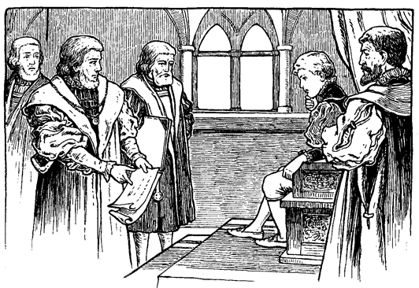Hernach verbrachte Tom eine angenehme Stunde mit Fräulein Elisabeth und Fräulein Johanna Grey, obwohl die beiden Prinzessinnen durch den schweren Schlag niedergedrückt waren, den das Königshaus erlitten hatte. Schließlich kam auch noch seine ältere »Schwester«, später die »blutige Maria« genannt, zu einem feierlich-frostigen Besuch, dessen einziger Vorzug seine Kürze war.
Darauf blieb er sich eine Weile selbst überlassen. Bald aber erhielt ein schmächtiger Junge von etwa zwölf Jahren Einlaß. Mit Ausnahme der schneeigen Halskrause und dem Spitzenarmband kam er ganz in Schwarz gekleidet. Auf der Schulter trug er ein Scharlachband, sonst keinerlei Trauerabzeichen. Zögernd kam er näher mit demütig gebeugtem Kopf und ließ sich vor Tom auf ein Knie nieder. Tom saß ruhig da und betrachtete ihn prüfend einen Augenblick. Dann sagte er:
»Erhebe dich, Knabe. Wer bist du? Was wünschest du?« Der Junge erhob sich und stand in anmutiger Haltung, aber offenbar bekümmert da. Er erwiderte:
»Ew. Majestät muß sich doch meiner erinnern. Ich bin ja Ew. Hoheit Prügeljunge Das Institut der Prügeljungen ist älteren Datums und kam nachweislich schon im 3. Jahrhundert n. Chr. vor. Kaiser Theodosius wollte seinen Sohn dadurch zum Mitleid und indirekt also auch zum Lerneifer anregen. Von englischen Königen hatten Jakob I. und Karl II. Prügeljungen..«
»Mein Prügeljunge?«
»Ja, Ew. Gnaden. Ich bin Humfried, Humfried Marlow.«
Tom war in arger Verlegenheit. Warum hatten ihm aber auch seine Wärter von diesem Jungen nichts gesagt! Sollte er sich nun stellen, als kenne er ihn? Aber wie leicht konnte er sich im Verlaufe des Gesprächs lügenstrafen! Nein, das war also nichts. Da kam er auf einen Ausweg. Derartige unangenehme Zufälle konnten sich wiederholen, da ja die beiden Wärter nicht immer an seiner Seite waren. Er mußte also ein für allemal jemand haben, der ihm über alles, was er wissen wollte, Auskunft gab. Dazu konnte ihm der Knabe vielleicht nützlich werden, da er doch ungenierter mit ihm umgehen konnte, als mit den steifen Lords. Für jetzt aber mußte er diplomatisch vorgehen. Er fuhr sich also nachdenklich an die Stirn und sagte:
»Jetzt glaube ich mich deiner zu erinnern. Mein Gedächtnis hat durch Überanstrengung in den Studien gelitten.«
»Ach, mein armer Herr«, rief der Prügeljunge mitleidig, »wie sehr mir das leid tut!«
»Es ist ganz sonderbar, wie mein Gedächtnis mich plötzlich im Stich läßt«, sagte Tom. »Aber beachte es nicht weiter; es bessert sich schon wieder allgemach. Ein klein wenig Nachhilfe bringt mir bald wieder in Erinnerung, was ich vergessen habe. Sprich also, was ist dein Begehren?«
»Die Sache ist für Ew. Majestät von keinem Belang. Wenn Ihr aber befehlt, so will ich sie Euch dennoch klarlegen. Vor zwei Tagen, als Ew. Hoheit zwei leichte Fehler im Griechischen machte ... beliebt Ihr Euch zu erinnern?«
»Ja, ich glaube. Ja, ich erinnere mich. Fahre weiter.«
»... da ward der Lehrer ärgerlich über das, was er höchst plumpe, liederliche Fehler nannte und gelobte, mich gehörig dafür peitschen zu lassen, und ...«
»Dich peitschen zu lassen?« fragte Tom, vor Verwunderung aus der Rolle fallend. »Warum sollte er denn dich für meine Fehler bestrafen?«
»Ach, Ew. Gnaden besinnen sich nicht mehr. Er läßt mich ja immer züchtigen, wenn Ihr Fehler in Euern Aufgaben macht.«
»Ach ja, ich vergaß. Du gibst mir Privatunterricht, und dann, wenn ich beim Lehrer Fehler mache, nimmt er an, du hättest mich nicht gut unterwiesen, und ...«
»O gnädigster Herr, was sprecht Ihr da? Wie sollte ich, der niedrigste Euerer Diener, dazu kommen, Euch lehren zu dürfen?«
»Ja, dann begreife ich nicht. Wie konntest du denn für meine Fehler verantwortlich sein? Bin ich denn irrsinnig, oder bist du es? Erkläre mir dieses Rätsel.«
»Aber, Majestät, nichts ist einfacher. Der geheiligten Person des Kronprinzen darf niemand zu nahe kommen. Wenn er also Fehler macht, so muß ich dafür büßen. Und das ist nur recht und billig, denn das ist mein Amt, das mir den Lebensunterhalt gewährt.«
Tom starrte den Burschen verblüfft an und dachte bei sich: »Das ist denn doch wunderbar, ein höchst wunderbares und merkwürdiges Gewerbe. Mich wundert nur, daß man nicht einen Knaben gemietet hat, der sich für mich ankleiden und kämmen läßt. Das wäre mir noch weit lieber; gerne würde ich dafür mein eigener Prügeljunge sein.« Laut aber sagte er:
»Und hast du deine Schläge für meine letzten Fehler schon erhalten, armer Freund?«
»Nein, Ew. Majestät. Meine Strafe war auf diesen Tag festgesetzt, und vielleicht wird sie mir erlassen werden, in Anbetracht, daß es vielleicht nicht geziemend ist in diesen Trauertagen. Ich weiß es aber nicht, und deshalb war ich so kühn, hieher zu kommen, um Ew. Hoheit zu erinnern, daß Ihr die Gnade hattet, für mich ein gutes Wort einlegen zu wollen ...«
»Beim Lehrer? Um dich vor den Schlägen zu retten?«
»Ah, Ihr erinnert Euch?«
»Du siehst, mein Gedächtnis bessert sich. Übrigens beruhige dich. Du sollst ohne Schläge davonkommen. Dafür will ich sorgen.«
»O tausend Dank, mein guter Herr!« rief der Knabe und fiel wieder auf die Kniee: »Ich fürchtete, ich sei jetzt schon zu weit gegangen, und dennoch ...«
Als Tom sah, daß Humfried nicht wagte, sich auszusprechen, ermutigte er ihn, fortzufahren.
»Dann werde ich so frei sein, denn es geht mir nahe. Da Ihr nicht mehr Kronprinz, sondern König seid, so könnt Ihr nach Gutdünken befehlen, ohne daß es jemand wagt, Einspruch zu erheben. Und so dachte ich, Ihr werdet Euch wohl nicht länger mehr mit langweiligen Studien plagen wollen, sondern die Bücher verbrennen. Dann aber bin ich zu Grunde gerichtet und meine verwaisten Schwestern dazu.«
»Zu Grunde gerichtet? Wie das?«
»Meine Prügel waren mein Brot, o gnädigster Herr. Wenn ich keine Prügel mehr bekomme, so hungere ich. Und wenn Ihr das Lernen aufsteckt, so fällt auch mein Amt dahin, denn Ihr braucht dann keinen Prügeljungen mehr. Daher wollte ich Euch bitten: verstoßet mich nicht!«
Tom war gerührt von dieser einfachen Schlußfolgerung. Er sagte mit königlicher Huld:
»Laß deine Sorge fahren, mein Junge. Dein Amt soll dir bleiben, dir und deinen Nachkommen.«
Dann gab er dem Knaben einen leichten Schlag auf die Schulter mit der flachen Klinge seines Schwertes und rief aus:
»Erhebe dich, Humfried Marlow, erblicher Oberprügeljunge des königlichen Hauses von England! Sei getrost, ich werde mich wieder hinter meine Bücher setzen und so schlecht studieren, daß man dir deine Besoldung verdreifachen muß, um sie deinen Prügeln entsprechend zu machen.«
Mit überströmendem Danke küßte Humfried den Mantelsaum des Königs und erwiderte:
»O wie danke ich Euch, edelster Herr. Euere fürstliche Freigebigkeit übersteigt meine kühnsten Träume. Nun werde ich all meine Lebtage glücklich sein, und nach mir meine Kinder und Kindeskinder.«
Nun forderte ihn Tom auf, ein wenig mit ihm zu plaudern, was sich dieser nicht zweimal sagen ließ. Glaubte er doch, auf diese Weise Toms Gedächtnis ein wenig aufhelfen zu können. So kam er auf alle möglichen Vorgänge und Einzelheiten im früheren Leben des wirklichen Prinzen, wie auch der ganzen königlichen Familie und der Hofhaltung zu sprechen, so daß Tom ein ziemlich klares Bild »seiner« Vergangenheit und Umgebung gewann. Er entschloß sich, diese Lektionen fortzusetzen und gab Weisung, Humfried jederzeit vorzulassen, wenn er selbst nicht anderweitig in Anspruch genommen sei.
Kaum war Humfried entlassen, als Lord Hertford sich melden ließ. Er kam, um Tom mitzuteilen, daß ein unbestimmtes Gerücht über den Irrsinn des Königs unter das Volk gedrungen sei. Deshalb erachte es der Staatsrat für weise, daß der König tunlichst bald, dem Herkommen gemäß, anfange, vor der Öffentlichkeit zu speisen. Seine gesunde Gesichtsfarbe, sein kräftiger Gang, die Leichtigkeit und Anmut seiner Bewegungen werde die öffentliche Meinung am besten beruhigen.
Sodann bemühte sich der Lord, Tom in taktvoller Weise über sein Auftreten bei den öffentlichen Mahlzeiten zu belehren. Zu seinem großen Erstaunen fand er indessen, daß Tom so ziemlich darüber orientiert war, denn Humfried hatte auch diese Vorgänge geschildert.
Da Lord Hertford mit Genugtuung diese »Besserung« wahrnahm, holte er Tom noch weiter aus, in vielen Fällen mit befriedigendem Erfolg. Dieses gute Ergebnis bewog ihn, Tom zu fragen, ob er vielleicht jetzt über das rätselhafte Verschwinden des Kronsiegels Aufschluß geben könne.
Tom geriet in Verwirrung, zumal er gar nicht einmal wußte, was ein Siegel eigentlich sei. Nach einigem Zaudern entgegnete er:
»Wie schaut es denn aus, mein Lord?«
Enttäuscht sagte sich der Graf: »Ach, sein Geist wandert schon wieder. Es war unklug von mir, diese Saite zu berühren.« Gewandt lenkte er das Gespräch, ohne Toms Frage zu beantworten, auf ein anderes Thema. Auch nahm er sich vor, Tom nie mehr nach dem Siegel zu fragen.
Am nächsten Tage empfing Tom, auf dem Throne sitzend, die fremden Gesandten in feierlicher Audienz. Erst war er entzückt über die Prachtentfaltung
Über den Charakter des Grafen Hertford sagt Hume in seiner Geschichte Englands: »Der junge König (Eduard) zeigte eine sehr große Anhänglichkeit an seinen Oheim, welcher in der Hauptsache ein gemäßigter, rechtlicher Mann war. Freilich erregte er viel Anstoß durch seinen Ehrgeiz und den Glanz, mit dem er sich umgab. Indes verdient er großes Lob für die Gesetze, deren Urheber er war, und wodurch die Strenge der früheren Verordnungen sehr gemildert und die Freiheit der Verfassung gewährleistet wurde. Die Großzahl der vorherigen harten Gesetze verlor ihre Gültigkeit, und das Morgenrot bürgerlicher und religiöser Freiheit begann am Horizont aufzusteigen. So z. B. durfte wegen Beleidigungen und Vergehen durch Worte erst einen Monat nach ihrer Äußerung Klage erhoben werden. Ein anderes seiner Gesetze bestimmte, daß fortan kein Erlaß des Königs mehr Gesetzeskraft haben solle.« Soweit Hume.
Eduard Seymour, Graf von Hertford und Herzog von Somerset ließ sich als Protektor von seinem Neffen Eduard VI. volle königliche Gewalt übertragen und übte dieselbe auch tatsächlich zum Segen des Landes aus. Er bestimmte Eduard auch, mit Übergehung seiner Halbschwester Maria, Fräulein Johanna Grey als seine Thronfolgerin zu erklären. Dieses Testament wurde jedoch in der Folge von Maria umgestoßen, und Johanna Grey verblutete auf dem Schafotte. Endlich gelang es den Gegnern des Protektors, ihn im Jahre 1549 zu stürzen. Zwei Jahre später ward er auf Veranlassung seines Hauptgegners, des mit ihm verschwägerten Grafen von Marwick wegen angeblicher Felonie (er soll Warwick nach dem Leben getrachtet haben) und Hochverrat (man beschuldigte ihn, er strebe nach dem Throne) von einem Gericht von 27 Reichsbaronen (Peers) zum Tode verurteilt und am 22. Januar 1552 hingerichtet. An seiner Stelle ward König Eduard der genannte Graf von Warwick, der spätere Herzog von Northumberland als Protektor beigegeben., aber die Audienz zog sich in die Länge und wirkte ermüdend, so daß er sich bald gelangweilt fühlte. Er wiederholte mechanisch, was Lord Hertford ihm auf die Zunge legte, und mühte sich, seine Sache möglichst gut zu machen. Aber die Aufgabe war doch etwas zu schwer für ihn. Er war froh, daß er so leidlich davonkam und atmete auf, als die Zeremonien zu Ende waren.
Die Staatsgeschäfte nahmen den größten Teil des Tages in Anspruch. Dann durfte er sich zwei Stunden lang der Erholung und dem Zeitvertreib widmen, aber auch das brachte ihm keinen rechten Genuß, da er auch hier sich allerlei höfischen Zwang auferlegen mußte. Dagegen hatte er auch wieder eine lehrreiche Privatstunde mit seinem Prügeljungen, die er reichlich ausnutzte.
Allmählich bewegte er sich doch freier, wenn er auch noch oft anstieß. Er gewöhnte sich immer mehr an seine Umgebung und empfand seine Ketten weniger schwer.
Aber er hatte noch nicht alles durchgemacht; viele neue und schwierige Aufgaben erwarteten ihn noch. Er mußte den Vorsitz im Staatsrat führen, wo er seine Ansichten über die Politik klarlegen sollte, die England den verschiedenen Nationen gegenüber einzuschlagen hatte, wie auch viele andere, nicht weniger heikle Fragen zur Sprache kamen. Am meisten aber bangte ihm vor dem öffentlichen Mahl, wo viele hundert Augen neugierig all seinen Bewegungen folgen würden.
Aber Tom konnte diesem Tage nicht Einhalt gebieten, und so kam er heran. Der Pseudokönig war zerstreut und niedergedrückt und vermochte nicht, seiner Mißstimmung Herr zu werden. Alles kam ihm heute doppelt langweilig vor, und ein Gefühl der Verlassenheit wollte sich wiederum seiner bemächtigen.
Es war spät am Vormittag. Tom unterhielt sich im großen Audienzsaal mit dem Grafen Hertford, der in den nächsten Tagen feierlich zum Lordprotektor ernannt werden sollte. Beklommen erwartete er die Stunde des öffentlichen Mahles, vor welchem er aber noch die Großen des Reiches in Audienz empfangen wollte.
Tom war an ein Fenster getreten, um das bunte Treiben auf der belebten Straße vor den Toren des Palastes zu beobachten. O wie sehnte er sich, frei, wenn auch als Bettler, wieder selbst an dem frohen Straßenleben teilnehmen zu können! Da bemerkte er plötzlich eine pfeifende, zischende, schreiende Menge, die sich die Straße heraufwälzte.
»Ich möchte wohl wissen, was da los ist!« rief er mit kindlicher Neugier.
»Ihr seid der König«, erwiderte der Graf, sich verbeugend. »Erlaubt Ihr mir, Erkundigungen einzuziehen?«
»Ach ja, gewiß, gerne!« rief Tom lebhaft. Und befriedigt sprach er für sich: »Wenn es auch langweilig ist, König zu sein, seine angenehmen Seiten hat es doch.«
Der Graf winkte einem Edelknaben und schickte ihn zum Hauptmann der Wache mit dem Befehl, der Pöbel solle angehalten werden und Aufschluß über die Zusammenrottung geben.
Wenige Sekunden später marschierte eine lange Rotte der königlichen Wache in blitzender Stahlrüstung zu den Toren hinaus und stellte sich der Menge entgegen. Bald kehrte ein Bote mit der Meldung zurück, der Pöbel laufe hinter einem Mann, einer Frau und einem jungen Mädchen her, die alle zur Richtstätte geführt würden.
Zur Richtstätte! Dieses düstere Wort drang Tom zu Herzen. Das Mitleid überwog alle Bedenken. Er dachte nicht daran, daß diese Menschen dem Gesetze zuwider gehandelt und ihren Mitmenschen Schaden zugefügt hatten. Der Gedanke an das Schafott und das traurige Verhängnis, dem die Verurteilten entgegengingen, verdrängte alle übrigen Empfindungen. Dieses Bedauern ließ ihn sogar für den Augenblick vergessen, daß er nur ein Schattenkönig war, und beinahe unbewußt stieß er hervor: »Bringt sie hierher!«
Dann wurde er purpurrot und war daran, eine Entschuldigung zu stammeln. Noch rechtzeitig bemerkte er aber, daß weder die Mienen des Grafen, noch die des Edelknaben Überraschung zeigten, und er beruhigte sich. Der Edelknabe machte eine tiefe Verbeugung und verließ den Saal, um den Befehl zu überbringen.
Wieder beschlich stolze Freude Toms Herz. »Wahrhaftig«, sagte er sich, »genau dasselbe Gefühl überkam mich, wenn ich den Märchen des alten Priesters lauschte und mir vorstellte, wenn ich auch ein solcher König wäre, Gesetze geben und das und jenes befehlen könnte, ohne daß jemand sich meinem Befehle widersetzen dürfte.«
Die Stunde der Audienz war gekommen. Die Flügeltüren sprangen auf. Ein Edelknabe rief einen erlauchten Namen nach dem andern, deren Träger unmittelbar nach dem Rufe den Saal betraten, der sich rasch mit den vornehmsten Männern Englands füllte. Tom bemerkte ihre Gegenwart kaum, so sehr war er in seine Träumerei versunken. Er setzte sich wieder, wie geistesabwesend, auf seinen Thron und schaute dann in ungeduldiger Erwartung nach dem Eingang, während die Edelleute im Flüstertone von Staatsgeschäften und Hofangelegenheiten sprachen.
Bald indessen ließ sich der abgemessene Schritt von Soldaten hören. Die Verurteilten traten in den Saal, begleitet von einer Abteilung der königlichen Wachen und einem Gerichtsbeamten. Dieser ließ sich vor Tom auf ein Knie nieder und trat dann beiseite. Die drei Verurteilten knieten ebenfalls nieder und blieben in dieser Lage. Die Garde stellte sich hinter Toms Thronsessel auf. Tom musterte neugierig die Gefangenen. Etwas an der Kleidung und dem Aussehen des Mannes weckte in ihm eine dunkle Erinnerung. Ihm war's, als hätte er den Mann schon irgendwo einmal gesehen, aber er konnte sich nicht entsinnen, wann und wo. Da blickte der Mann rasch auf, senkte aber ebenso schnell seine Augen wieder, wie geblendet von der Majestät des Königs. Aber dieser eine Augenblick hatte Tom genügt. Er sagte sich: »Nun ist die Sache klar. Das ist ja der Fremde, der den Julius Witt aus der Themse zog und ihm so das Leben rettete an jenem bitterkalten, stürmischen Neujahrstag. Es war eine brave, schöne Tat; schade um den Mann, daß er sich jetzt in so schlimme Händel verwickelte. Ich habe weder den Tag, noch die Stunde vergessen, weil ich eine Stunde später von Großmutter eine solche gewaltige Tracht Prügel bekam, daß alle vorherigen und nachherigen Prügel nur Liebkosungen dagegen waren.«
Tom befahl, die Frau und das Mädchen einstweilen wegzuführen. Dann wandte er sich an den Gerichtsbeamten und sagte: »Wessen beschuldigt man diesen Gefangenen?«
Der Beamte ließ sich wieder auf ein Knie nieder und erwiderte: »Ew. Majestät zu dienen, er hat einen Euerer Untertanen vergiftet.«
Toms Mitleid für den Gefangenen und seine Bewunderung für dessen kühne Rettungstat erlitten eine gewaltige Erschütterung.
»Wurde er des Verbrechens überführt?« fragte er weiter.
»In überzeugender Weise, Majestät.«
Tom seufzte und sprach: »Führt ihn fort; er hat den Tod verdient. Es ist bedauernswert, denn er war eine brave Seele ... Ich meine, er sieht so aus.«
Der Gefangene faltete seine Hände, rang sie wie verzweifelt und wandte sich flehend und in abgebrochenen Sätzen also an den König: »O mein gnädigster Herr, wenn Ihr einen Verlorenen bedauern könnt, so habt Mitleid mit mir. Ich bin unschuldig an dem, was mir zur Last gelegt wird; die Scheinbeweise waren auch nur kläglich. Aber davon spreche ich nicht. Das Urteil ist gegen mich ergangen und kann wohl nicht mehr geändert werden. Aber in meiner äußersten Not bitte ich um eine andere Gnade. Denn wie ich sterben soll, ist mehr, als ich ertragen kann. Gnade, Gnade, erhabene Majestät! In fürstlichem Mitleid gewährt mir meine Bitte: gebt Befehl, daß ich gehängt werde!«
Tom war verblüfft. Auf eine solche Art Bitte war er nicht gefaßt.
»Meiner Treu, eine sonderbare Bitte! Was für ein Schicksal war dir denn bestimmt?«
»Ach, mein erlauchter Fürst, ich soll lebendig zu Tode gebrüht werden.«
Eine peinliche Überraschung malte sich auf Toms Gesicht und ließ ihn beinahe vom Thronsessel aufspringen. Sowie er seine Sprache wieder erlangte, rief er: »Dein Wunsch soll dir erfüllt sein. Und hättest du hundert Menschen vergiftet, eines solch elenden Todes sollst du nicht sterben!«
Der Gefangene verbeugte sich bis auf die Erde und floß über von heißen Dankesworten. Er schloß mit den Worten: »Und solltet Ihr je Ungemach kennen lernen, was Gott verhüte! so möge Euere Gutherzigkeit gegen mich in jener Stunde belohnt und vergolten werden.«
Tom wandte sich an den Grafen von Hertford und sagte: »Mein Lord, wie ist nur eine solch schreckliche Strafe möglich?«
»Das Gesetz bestimmt es so für Giftmischer Unter der Regierung Heinrichs VIII. wurden Giftmischer zutode gebrüht. Unter Eduards Regierung aber ward dieses Gesetz aufgehoben. In Deutschland wurde noch im 17. Jahrhundert diese schreckliche Strafe über Fälscher und Falschmünzer verhängt. Taylor, der Wasserpoet, beschreibt eine solche Hinrichtung, welcher er 1616 in Hamburg beiwohnte. Der Verurteilte wurde nicht auf einmal in das siedende Öl hineingeworfen, sondern an einem Stricke, der an einer Rolle hing, ganz langsam in gewissen Zeitabständen nach und nach hinunter gelassen, erst die Füße, dann die Beine und so immer weiter, bis das gesottene Fleisch von den Knochen fiel., Ew. Gnaden. In Deutschland ist man noch strenger. Dort werden Falschmünzer nicht auf einmal in das siedende Öl geworfen, sondern an einem Stricke langsam nach und nach hineingetaucht, erst die Füße, dann die Beine, dann ...«
»O bitte, nicht weiter, mein Lord. Das kann ich nicht hören!« rief Tom und bedeckte die Augen mit seinen Händen, wie um das schreckliche Bild nicht sehen zu müssen. »Ich bitte Euere Lordschaft, zu veranlassen, daß dieses Gesetz geändert wird.«
Die Miene des Grafen drückte hohe Befriedigung aus, denn er war ein Mann von humanen, edelmütigen Gesinnungen, was damals in seinem Stande nicht gerade häufig vorkam. Er antwortete: »Die Hochherzigkeit Ew. Gnaden hat das Schicksal dieses Gesetzes besiegelt. Die Geschichte wird sich daran erinnern zur Ehre Eures königlichen Hauses.«
Der Gerichtsbeamte wollte hierauf den Gefangenen fortführen. Tom winkte Einhalt und sagte: »Ich möchte noch etwas klarer in diese Angelegenheit hineinsehen. Der Mann hat gesagt, seine Tat sei nur schwach bewiesen worden. Berichte mir, was du darüber weißt.«
»Ew. Majestät zu dienen, vor Gericht gewann es den Anschein, als sei dieser Mann in das Haus des Ermordeten eingedrungen, worin dieser zu jener Zeit krank im Bette lag. Zwei Zeugen sagten aus, es sei um zehn Uhr vormittags und zwei andere Zeugen, es sei einige Minuten später gewesen. Der kranke Mann war allein zu Hause und schlief. Der Angeklagte kam gleich wieder heraus und ging seiner Wege. Der Kranke aber starb innerhalb einer Stunde unter Krämpfen und Zuckungen.«
»Sah jemand, wie ihm Gift gegeben wurde? Wurde überhaupt Gift gefunden?«
»Nein, mein Fürst.«
»Wie konnte man denn wissen, daß der Kranke an Gift starb?«
»Ew. Majestät zu dienen, die Ärzte bezeugen, daß ein Tod unter solchen Erscheinungen nur unter der Einwirkung von Gift erfolgen könne.«
Das war nun allerdings ein gewichtiges Zeugnis für jene Zeit. Tom mußte sich das auch sagen und fuhr daher fort: »Die Ärzte müssen das wissen. Die Sache steht freilich schlimm für den Angeklagten.«
»Das war noch nicht alles, Majestät. Schwerwiegender und gewichtiger war noch folgende Tatsache. Viele Leute bezeugen, daß eine Hexe, die am Tatorte wohnte, aber seither fortzog, niemand weiß wohin, ihnen voraussagte, der kranke Mann werde an Gift sterben. Mehr noch; ein Fremder werde es ihm reichen, ein Fremder mit braunem Haar und ärmlicher, gewöhnlicher Kleidung. Den Angaben der Hexe aber entspricht der Angeklagte und sein Gewand.«
Das war ein Beweis von überzeugender Gewalt in jenen abergläubischen Zeiten. Auch Tom stand unter diesem Eindruck. Trotzdem wollte er die Sache noch nicht ganz aufgeben und forderte daher den Angeklagten auf: »Wenn du noch etwas zu deinen Gunsten zu sagen hast, dann sprich!«
»Das wird wohl nichts helfen, mein gnädigster König. Ich bin unschuldig, aber beweisen kann ich es nicht. Ich habe keine Freunde, sonst könnte ich vielleicht nachweisen, daß ich an jenem Tage gar nicht am Tatorte mich aufhielt. Ich befand mich mehr als eine Meile davon entfernt, am Themseufer bei der alten Stiege. Noch mehr, mein König: während sie behaupten, ich habe einem Menschen das Leben genommen, könnte ich sagen: ich habe ein Menschenleben gerettet ...«
»Halt! Nenne den Tag, an dem der Mord begangen sein soll!« wandte sich Tom an den Gerichtsbeamten.
»Um zehn Uhr des Morgens oder einige Minuten später, am Neujahrstage, Erlauchtester ...«
»Schon gut. Gebt den Gefangenen frei! Es ist des Königs Wille.«
Wieder errötete der König und begründete die überraschende Entscheidung mit den Worten: »Es ist meinem ganzen Denken zuwider, daß ein Mann gehängt werden sollte auf Grund solcher an den Haaren herbeigezogener Beweise.«
Ein unterdrücktes bewunderndes Gemurmel machte sich im ganzen Saale bemerkbar. Diese Anerkennung galt nicht Toms Entscheidung und der Begnadigung eines scheinbar überwiesenen Giftmischers, sondern der Klugheit und dem Geist, die Tom bei der ganzen Verhandlung an den Tag gelegt hatte. Man flüsterte sich zu: »Das ist kein irrsinniger König. Sein Verstand ist ungetrübt.«
»Wie verständig er seine Fragen stellte! Diese rasche, gebieterische Beilegung der Sache entspricht ganz seiner früheren Natur.«
»Gott sei Dank! Seine Krankheit ist vorüber. Das ist kein Schwächling, sondern ein König. Sein Vater hätte sich nicht schneidiger zeigen können.«
Toms Ohr entging das allgemeine Beifallsgemurmel nicht. Es erleichterte und ermutigte ihn.
Bald aber bekam seine jugendliche Neugier frische Nahrung. Er war begierig zu erfahren, was die Frau und ihr kleines Mädchen angestiftet haben könnten, um den Tod zu verdienen. So wurden auf seinen Befehl die beiden angstvollen und schluchzenden Geschöpfe vorgeführt.
»Was legt man diesen Angeklagten zur Last?« fragte er den Gerichtsbeamten.
»Ew. Majestät zu dienen, sie sind eines schweren Verbrechens angeklagt und überführt worden, weshalb der Gerichtshof sie zum Galgen verurteilt hat. Sie verkauften sich selbst dem Gottseibeiuns. Das ist ihr Verbrechen.«
Tom schauderte. Es war ihm gesagt worden, solche Leute seien verabscheuungswürdig. Dennoch wollte er sich nicht das Vergnügen versagen, weiter auf die Sache einzugehen. Er fragte also: »Wo geschah das und wann?«
»Um Mitternacht, im Dezember, in einer verfallenen Kirche, Ew. Majestät.«
Tom schauderte wieder
»Wer war zugegen?«
»Nur diese beiden, Euer Gnaden, und jener andere.«
»Haben sie gestanden?«
»Nein, mein Fürst, sie leugnen noch immer.«
»Wie erfuhr man die Sache?«
»Gewisse Zeugen sahen, wie die Angeklagten sich dorthin begaben. Sie verdächtigten sich und schreckliche Wirkungen haben diesen Verdacht seither genährt und bestätigt. So ist unter anderem erwiesen, daß sie durch die verruchte Macht, die sie dadurch gewannen, ein Unwetter heraufbeschworen, welches die ganze Gegend ringsum verheerte. Über vierzig Zeugen haben dieses Ereignis bestätigt. Man hätte auch leicht tausend Zeugen dafür aufbringen können, denn alle haben darunter gelitten.«
»Gewiß, das ist eine ernste Sache«, sagte Tom und fuhr fort: »Litt die Frau auch durch das Unwetter?«
Mehrere graue Häupter in der Versammlung nickten Beifall zu dieser Frage. Der Gerichtsbeamte sah indessen nichts Verfängliches darin und antwortete einfach: »In der Tat, Majestät, und zwar ganz gehörig, wie alle Zeugen aussagen. Ihre Wohnung ward weggeschwemmt und sie selbst und ihr Kind wurden obdachlos.«
»Mir scheint, dann war die Macht, soviel Unheil anzurichten, teuer erkauft. Hätte sie auch nur einen Heller für diese Gewalt bezahlt, so wäre sie schon genug dafür bestraft worden. Daß sie aber ihre Seele und die ihres Kindes dafür hingab, beweist mir, daß sie irrsinnig ist. Wenn sie aber irrsinnig ist, weiß sie doch nicht, was sie tut, und daher kann auch von Sünde oder Verbrechen keine Rede sein.«
Wiederum zollten die grauen Häupter Toms Weisheit ihre Anerkennung und einer murmelte: »Und wenn der König selbst irrsinnig ist, wenn man dem Gerüchte Glauben schenken will, dann ist das ein Irrsinn, welcher den Verstand anderer Leute heller machen würde, wenn sie es nur einsehen könnten.«
»Wie alt ist das Kind?« fragte Tom weiter.
»Neun Jahre, Ew. Majestät zu dienen.«
»Hat nach englischen Gesetzen ein Kind in diesen Jahren die Befugnis, einen Vertrag einzugehen und sich selbst zu verkaufen?« wandte sich Tom an den Rechtsgelehrten.
»Das Gesetz erlaubt keinem Kinde, sich in eine wichtige Angelegenheit einzulassen, mein erlauchter Fürst, weil sein unreifer Verstand allzu sehr im Nachteil wäre gegenüber dem überlegenen Verstand und den vielleicht schlimmen Absichten der anderen Vertragsteilnehmer. Der Böse mag ein anderes Kind kaufen, wenn er Lust hat und das Kind einwilligt, nicht aber ein englisches Kind, denn in diesem Falle wäre der Vertrag null und nichtig.«
»Mir scheint es unbillig und ungerecht, daß das englische Gesetz seinen kleinen Untertanen ein Vorrecht versagt, das andere Kinder besitzen«, bemerkte Tom.
Diese neuartige Ansicht rief bei den Anwesenden manches Lächeln hervor und fand als Originalität Anerkennung.
Die Mutter hatte aufgehört zu schluchzen und hing an Toms Lippen mit lebhaftem Interesse und wachsender Hoffnung. Tom bemerkte es und faßte Mitleid mit ihrer freundlosen und hilflosen Lage. Er fragte weiter: »Wie machte sie es denn, um den Sturm heraufzubeschwören?«
»Dadurch, daß beide ihre Strümpfe Eine Frau und ihr neunjähriges Töchterchen wurden in Huntingdon gehängt, weil sie ihre Seelen dem Bösen verkauft und einen Sturm heraufbeschworen hätten, dadurch, daß sie ihre Strümpfe auszogen. auszogen, Majestät.«
Das verblüffte Tom und steigerte seine Neugier. Eifrig rief er: »Das ist doch wunderbar! Hat diese Manipulation immer solch schreckliche Wirkung?«
»Immer, mein Fürst, wenigstens wenn die Frau es wünscht und die nötigen Worte dazu murmelt oder auch nur denkt.«
Tom wandte sich an die Frau und sagte mit ungestümem Eifer: »Übe doch mal deine Kraft aus. Ich möchte einen Sturm sehen.« Viele Wangen wurden blaß in der abergläubischen Versammlung, und ein allgemeiner, wiewohl stummer Wunsch, aus dem Saale fortzukommen, machte sich bemerkbar. Tom kehrte sich aber nicht daran, er schien es auch nicht einmal zu beachten, so sehr war er auf das kommende Ereignis gespannt. Da er einen verwunderten, entsetzten Blick von der Frau auffing, fügte er beruhigend hinzu: »Fürchte dich nicht, du sollst dafür nicht büßen. Noch mehr: du sollst ganz straflos ausgehen; niemand soll dir was zuleide tun. Beweise deine Kraft.«
»O mein gnädigster König, ich besitze diese Macht nicht; man hat mich fälschlich angeklagt.«
»Die Furcht hält dich ab. Sei nur getrost; dir soll kein Harm geschehen. Mache einen Sturm, wenn er auch noch so klein ist. Ich verlange keinen großen und verderblichen, sondern ziehe eher das Gegenteil vor. Tue das, und dein Leben ist gerettet. Du sollst frei ausgehen samt deinem Kinde, von Königs Gnaden und niemand im ganzen Königreich darf dein Unheil ahnden.«
Die Frau warf sich zu Füßen des Herrschers hin und beteuerte unter Tränen, sie habe keine Gewalt, das zu tun, was von ihr verlangt werde, sonst würde sie gerne willfahren, nur um ihr Kind zu retten, wenn auch ihr eigenes Leben verwirkt wäre.
Tom drang noch einmal in sie, ohne der Frau eine andere Antwort abzulocken. Endlich sagte er: »Ich glaube, die Frau hat die Wahrheit gesprochen. Wenn meine Mutter an ihrer Stelle wäre und die fragliche Zauberkraft hätte, sie würde nicht einen Augenblick geschwankt haben. Sie hätte einen Sturm heraufbeschworen, daß das ganze Land verwüstet worden wäre, nur um damit mein Leben zu retten. Es ist anzunehmen, daß andere Mütter es auch täten. Du bist frei, gute Frau, du und dein Kind, denn ich halte dich für unschuldig. Nun aber, da du siehst, daß dir keine Gefahr mehr droht, ziehe deine Strümpfe aus und wenn du einen Sturm herzaubern kannst, sollst du reich werden.«
Mit überquellendem Herzen dankte die arme Mutter und schickte sich an, dem Befehle nachzukommen, während Tom erwartungsvoll nicht ganz ohne Bangen hinsah. Die Höflinge aber zeigten ausgesprochenes Mißbehagen und Unruhe. Die Frau streifte ihre Strümpfe und die ihres Kindes ab und tat augenscheinlich, was in ihren Kräften lag, um den König für seine Großmut mit einem Erdbeben zu belohnen. Aber es war alles nichts und wieder nichts. Tom ergab sich seufzend und sagte: »Höre auf, gute Seele und mühe dich nicht länger; der Böse hat, scheint es, den Vertrag wieder zerrissen. Gehe im Frieden deiner Wege. Für deinen Unterhalt werde ich sorgen. Kommt dir aber einmal deine Zauberkraft wieder, dann vergiß mich nicht und mache mir den schuldigen Sturm vor.«
Die Stunde des öffentlichen Mahles kam näher. Sonderbarerweise empfand Tom fast gar kein Unbehagen mehr, wenn er daran dachte. Die Gerichtsverhandlung hatte sein Selbstvertrauen mächtig gehoben. Überhaupt hatte er sich in diesen vier Tagen schon so ziemlich an sein wunderbares Geschick gewöhnt. Ein Kind paßt sich eben viel leichter den Umständen an, als ein Erwachsener.
Während sich Tom zum Mahle rüstet, wollen wir ihm vorauseilen und uns das Gemach ansehen, wo er speisen sollte. Es ist eine geräumige Halle mit vergoldeten Pfeilern und bemalten Wänden und Decken. An den Flügeltüren standen hochgewachsene Gardisten so starr wie Standbilder, in reichen malerischen Gewändern und Hellebarden in den Händen. Auf der Galerie, welche rings um den Saal lief, war eine Musikkapelle aufgestellt. Den ganzen übrigen Teil der Galerie aber füllte eine dichtgedrängte Menge von Bürgern und Bürgerinnen in stattlichen Gewändern. In der Mitte der Halle auf einer erhöhten Plattform stand der Eßtisch des Königs.
Jetzt trat ein Edelmann herein, der einen Stab trug, und neben ihm ein anderer mit einem Tischtuch. Beide verbeugten sich dreimal bis auf die Kniee, worauf der eine das Tuch über den Tisch ausbreitete. Dann verbeugten sie sich wieder und zogen sich zurück.
Nun kamen zwei andere Herren herein, der eine wieder mit einem Stabe, der andere mit Salzbüchse, Teller und Brot. Sie verbeugten sich wie die vorigen, stellten Salz und Brot auf den Tisch und verschwanden wieder unter gleichen Zeremonien. Zuletzt erschienen zwei Edelleute, der eine mit einem Messer. Nach den erwähnten Verbeugungen rieben sie den Tisch mit Brot und Salz in solcher Ehrerbietung, als wäre der König zugegen gewesen.
Das waren die Vorbereitungen. Jetzt hörte man durch die widerhallenden Gänge eine Fanfare und den undeutlichen Ruf: »Platz für des Königs erhabene Majestät!« Dieser Ruf wiederholte sich und kam immer näher. Plötzlich sprangen die Flügeltüren weit auf. Noch einmal schmetterten die Trompeten und ertönte der Ruf: »Platz für den König!« Glänzende Edelknaben erschienen am Eingang und traten in zwei Reihen auseinander. Zwischen ihnen schritten Edelleute, Freiherren, Grafen, Ritter des Hosenbandordens, alle prächtig gekleidet und barhäuptig. Dann kam der Kanzler zwischen zwei Begleitern, von denen einer das königliche Zepter, der andere das Staatsschwert in roter, mit goldenen Lilien bestickter Scheide, die Spitze nach aufwärts, trug.
Nun erschien der König selbst, bei dessen Sichtbarwerden zwölf Trompeten erschollen und ebensoviel Trommeln wirbelten. Zugleich erhoben sich die Bürger auf der Galerie und stimmten in den brausenden Ruf ein: »Gott erhalte den König!« Hinter Tom kamen einige Edle seiner näheren Umgebung und den Schluß bildete seine Ehrenwache, fünfzig Edelleute mit vergoldeten Streitäxten.
Es war ein stolzer Anblick. Tom schlug das Herz höher und seine Augen leuchteten. In anmutiger und ungezwungener Haltung schritt er daher und dankte für die Willkommsrufe mit einer leichten Verbeugung seines Kopfes, den ein Federbarett schmückte, und den freundlichen Worten: »Ich danke dir, mein gutes Volk!«
Dann setzte er sich, ohne die geringste Verlegenheit zu zeigen, an den Tisch. Sein Barett behielt er auf, denn so war es Sitte bei den Königen sowohl, wie auch bei der Familie Canty. Das Gefolge löste sich auf und gruppierte sich malerisch in der Halle umher.
Nun traten auch unter den Klängen heiterer Musik die Trabanten des Königs herein, die größten und stärksten Männer Englands, barhäuptig, in Scharlach gekleidet, mit goldenen Rosen auf dem Rücken. Diese trugen das Mahl herein und überreichten die einzelnen Gerichte je einem Edelmann, der es auf den Tisch stellte. Der Truchseß trat herzu und gab von jedem Gericht einen Bissen dem Trabanten zu kosten, der es gebracht hatte, aus Furcht vor Gift.
Tom aß mit gutem Appetit, wiewohl er wußte, daß Hunderte von Augen jedem Bissen folgten, den er in den Mund steckte und zwar mit einem Interesse, als enthielten die Speisen Explosivstoffe, die den König im nächsten Augenblicke zerreißen und in die Luft jagen müßten.
Diesmal aß Tom nicht mehr hastig und hütete sich auch, etwas eigenhändig zu tun, was einem seiner Diener zu verrichten oblag. Ohne irgend einen Verstoß aß er zu Ende.
Als das Mahl endlich vorüber war, und er mit seinem glänzenden Gefolge die Halle unter Trompetengeschmetter und donnerndem Beifall verließ, da fühlte er sich so sicher, daß er gerne mehrmals des Tages öffentlich gespeist hätte, wenn er damit seiner Staatsgeschäfte ledig gewesen wäre.
Michael Henden suchte indessen eifrig nach seinem Schützling. Mittels der Erkundigungen, die er auf der Brücke einzog, konnte er dessen Spur eine Strecke weit verfolgen, dann aber hörte sie plötzlich auf. Dennoch setzte Henden seine Bemühungen bis in die Nacht hinein fort. Wegmüde und halb verhungert mußte er schließlich umkehren und seine Herberge wieder aufsuchen. Er nahm ein Abendessen zu sich und legte sich dann zur Ruhe mit dem Vorsatze, früh am nächsten Morgen in der Stadt weiter zu forschen.
Während er aber schlaflos dalag, kam ihm ein anderer Gedanke. Der Knabe, rechnete er, wird den Schurken sicher zu entrinnen suchen. Wollte er dann in die Stadt zurück, so müßte er Gefahr laufen, wieder erwischt zu werden. Da er nun keinen anderen Freund und Beschützer in der Welt hat, als Michael Henden, so wird er sich Mühe geben, diesen Freund wieder zu finden. Nun weiß er aber, daß ich sogleich nach Hendenhall aufbrechen wollte. Daher wird er sich sagen, das sei folglich auch der richtige Weg für ihn. Ja, so würde es wohl kommen. Daher nahm sich Henden vor, keine Zeit mehr zu versäumen, sondern tunlichst rasch heimwärts zu reisen. Unterwegs wollte er ein scharfes Auge auf alle Vorübergehenden haben. Dieser Gedanke beruhigte ihn ein wenig und brachte ihm den nötigen Schlummer. Lassen wir ihn nun schlafen, um nachzusehen, was aus dem entführten kleinen König wurde.
Wie der Kellner sagte, war ein schuftiger Kerl aus der Menge aufgetaucht und auf Eduard und seinen Entführer losgesteuert. Er ging aber nicht eigentlich zu ihnen, sondern folgte ihnen dicht auf dem Fuße, ohne etwas zu sagen. Sein linker Arm lag in der Schlinge und über dem linken Auge trug er ein großes grünes Pflaster. Er hinkte ein wenig und gebrauchte einen eichenen Krückstock als Stütze.
Der junge Mann führte den König kreuz und quer durch die Menge und gelangte endlich auf eine Landstraße. Aber jetzt begann Eduard zornig zu werden und wollte nicht weiter. Er sagte, es sei an Henden, zu ihm zu kommen und nicht umgekehrt. Der Jüngling entgegnete darauf: »Willst du denn hier säumen, während dein Freund verwundet in dem Walde dort drüben liegt? Mir kann es gleichgültig sein.«
Wie der König solches hörte, war er plötzlich wie umgewandelt. Heftig rief er aus: »Wie? Verwundet? Und wer hat gewagt, ihn zu verletzen? Doch das nachher. Nur vorwärts jetzt, vorwärts! Rascher doch, rascher! Hast du Blei in den Füßen? Also verwundet ist er? Aber wehe dem Täter! Er soll es bereuen und wäre er eines Herzogs Sohn!«
Der Wald war nicht so ganz nahe, aber Eduard drängte immerfort, und so hatten sie ihn bald erreicht. Der junge Mann schaute sich um, bis er einen Ast in der Erde stecken sah, an dem ein kleiner Lumpen hing. An dieser Stelle führte er den König tiefer in den Wald. Dabei gab er acht auf ähnliche Zeichen, die sich in gewissen Zwischenräumen fanden. Sie sollten ihn offenbar an das gewünschte Ziel bringen. Endlich gelangten sie an eine Lichtung, wo zerfallene Reste eines Bauernhauses standen. Daneben lag eine alte Scheune, die auch nicht mehr viel taugte. Diese betrat der Jüngling und der König folgte ihm eifrig. Niemand da! Eduard schaute seinen Begleiter verdutzt und argwöhnisch an und fragte: »Wo ist er?«
Ein spöttisches Gelächter war die Antwort. Einen Augenblick raste der König. Er nahm ein Holzscheit und wollte auf seinen Entführer los. Da erscholl auch hinter ihm ein höhnisches Lachen. Es kam von dem lahmen Schurken, der ihnen gefolgt war, trotz ihres eiligen Ganges. Der König wandte sich um und sagte zornig: »Wer bist du? Was hast du hier zu tun?«
»Nun höre endlich auf mit deinen Dummheiten«, sagte der Mann. »So gut ist doch meine Verkleidung nicht, daß du nicht deinen Vater darin erkennen könntest.«
»Du bist nicht mein Vater. Ich kenne dich nicht. Ich bin der König. Du hast meinen Diener versteckt. Schaffe ihn mir her, oder es soll dir schlecht ergehen.«
Johann Canty erwiderte in ernstem, abgemessenem Tone: »Es ist klipp und klar, daß du verrückt bist und ich strafe dich also nicht gerne. Aber wenn du mich noch länger reizest, so zwingst du mich dazu. Dein Schwatzen kann hier freilich kein Unheil anrichten, wo dich niemand weiter hört. Aber du tätest doch besser daran, deine Zunge im Zaume zu halten, denn wir kommen bald in fremde Quartiere. Ich habe einen Mord begangen und darf also nicht wieder heim, und du auch nicht, denn ich brauche deine Dienste. Meinen Namen habe ich aus guten Gründen geändert und heiße jetzt Johann Hobbs. Dein Name ist Hans; merke es dir. Nun aber sprich: wo ist deine Mutter? Wo sind deine Schwestern? Sie kamen nicht an den bezeichnten Ort. Weißt du, wohin sie gingen?«
Der König antwortete finster: »Komm mir doch nicht mit diesen Albernheiten. Meine Mutter ist tot; meine Schwestern sind im Palast.«
Der junge Mann, der daneben stand, lachte laut auf. Der König wollte ihn züchtigen, aber Hobbs vertrat ihm den Weg und sagte: »Ruhig, Hugo, ärgere ihn nicht. Er ist nicht bei Verstand, und du reizest ihn nur unnötig. Setze dich, Hans, und sei still. Du sollst auch einen Bissen zu essen bekommen.«
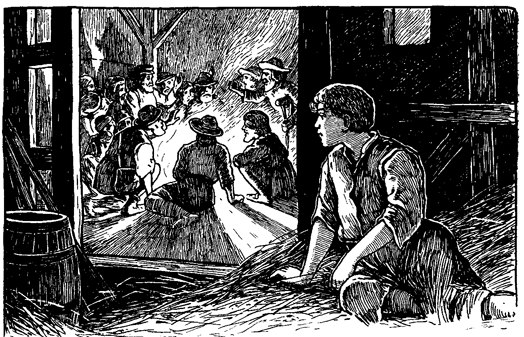Hobbs und Hugo sprachen hierauf leise mit einander, und der König zog sich in die entfernteste Ecke der Scheune zurück. Hier legte er sich auf Stroh und war bald in Gedanken versunken.
Sein Kummer war mannigfaltig. Aber was ihn am meisten schmerzte, war der Verlust seines Vaters. Während es alle anderen Leute kalt überlief, wenn sie nur den Namen Heinrichs des Achten hörten, besaß Eduard nur angenehme Erinnerungen an seinen Vater. Die Tränen, die unaufhaltsam über seine Wangen strömten, zeugten von dem aufrichtigen, tiefen Schmerz über dessen Tod.
Lange gab er sich seiner qualvollen Grübelei hin. Als er endlich wieder zum Bewußtsein seiner jetzigen Lage kam, hörte er zu Häupten den Regen plätschernd auf das Dach niederstürzen. Er hüllte sich fester in sein Stroh, und ein Gefühl behaglicher Wärme durchströmte seinen Körper. Im nächsten Augenblick aber vernahm er ein lautes Stimmengewirr und rohes Gelächter. Erschrocken fuhr er auf und schaute umher. Ein großes Feuer brannte in der Tenne am andern Ende der Scheune. Ringsherum lagerten und lungerten zerlumpte Gesellen, auch Weiber, hell beleuchtet von dem Lagerfeuer. Die Männer waren von hoher Gestalt, sonngebräunt, langhaarig und in phantastische Lumpen gehüllt. Auch junge Leute waren dabei, von liederlichem Aussehen und ähnlich gekleidet. Einige hatten Pflaster oder Binden über die Augen; andere waren verkrüppelt und hatten hölzerne Beine und Krücken. Wieder andere waren triefäugig oder hatten allerlei andere Gebrechen. Ein schurkisch aussehender Hausierer war auch da, ebenso ein Scherenschleifer, ein Kesselflicker und ein Barbier mit ihrem Handwerkszeug. Die weibliche Gesellschaft bestand aus halbwüchsigen und erwachsenen Mädchen, wie auch aus alten runzeligen Hexen. Alle aber waren großmäulig, unverschämt, schmutzig und schlumpig. Drei skrofulöse Kinder waren in ihrer Mitte, und ein paar ausgehungerte Köter lagen herum, welche die Aufgabe hatten, die Blinden zu führen.
Die Nacht war hereingebrochen. Die Bande war eben mit Essen fertig geworden und nun begann das Trinkgelage. Eine Kanne Schnaps ging von Mund zu Mund. Dazu sangen sie rohe Gassenhauer und Räuberlieder, erst einzeln, dann alle zusammen.
Schließlich begann ein allgemeines Gespräch, aber nicht in der damals üblichen Gaunersprache. Diese wandten sie nur an, wenn sie belauscht zu werden fürchteten. Aus dieser Unterhaltung entnahm der König, daß Hobbs oder Canty kein neues Mitglied dieser Landstreicher war, sondern der Bande schon früher angehört hatte. Man fragte ihn nach seinen seitherigen Erlebnissen. Er gab kurzen Bericht über das, was ihm widerfahren sei, und erklärte, von nun an wieder treu zu ihnen halten zu wollen. Seine alten Bekannten schüttelten ihm die Hand, und die neuen Mitglieder wurden ihm vorgestellt. Man forschte, warum er solange weggeblieben sei. Er antwortete: »London ist in den letzten Jahren besser und sicherer geworden, als das Land. Die Gesetze sind streng und werden kräftig gehandhabt. Hätte ich nicht den Unfall mit dem Priester gehabt, so wäre ich noch in der Stadt. Ich hatte mir schon vorgenommen, sie nicht wieder zu verlassen.«
Nun erkundigte er sich nach einzelnen ehemaligen Mitgliedern der Bande und meinte: »Ich sehe den alten Wen nicht mehr unter diesen ehrlichen Leuten. Wo mag er stecken?«
»Der arme Bursche!« erwiderte der Hauptmann. »Er hatte immer einen sonderbaren Geschmack. Jetzt nährt er sich in der Hölle von heißem Schwefel. Er wurde um Johannis herum in einem Streit erschlagen.«
»Das soll mir leid tun. Wen war ein tüchtiger Mann und braver Geselle.«
»Ja, das war er. Die »Schwarze Liese«, seine Gespanin, gehört noch zu uns, »arbeitet« aber zur Zeit im Osten. Ein feines Mädchen das, manierlich und sittsam, denn nie sah man sie mehr als vier Tage in der Woche betrunken.«
»Ja, sie hielt was auf sich; ich weiß das noch wohl. Es war ein braves Weibsmensch und aller Ehren wert. Ihre Mutter war nicht so ängstlich und eigen, eine störrische, übellaunige Dame, aber mit einem ungewöhnlichen Mutterwitz behaftet.«
»Das war auch ihr Verderben. Sie war eine so schlaue Wahrsagerin und Wetterprophetin, daß sie schließlich in den Ruf einer Hexe kam. Das Gesetz röstete sie also über einem langsamen Feuer zu Tode. Es rührt mich jetzt noch, wenn ich daran denke, wie tapfer sie ihr Schicksal ertrug. Sie schmähte und verwünschte noch die sie umgaffende Menge, während die Flammen schon an ihrem Gesicht heraufleckten, nach ihrem spärlichen Haar züngelten und schließlich über ihren alten grauen Kopf hinknisterten. Und wie sie den Pöbel verwünschte! Wenn du tausend Jahre alt würdest, so meisterhaft schimpfen könntest du immer noch nicht. Ach, ihre Kunst starb mit ihr. Was man jetzt noch an Schimpfereien hört, ist nur schwache, erbärmliche Nachahmung.«
Der Hauptmann seufzte, und seine Zuhörer taten desgleichen. Eine allgemeine Niedergeschlagenheit befiel die Gesellschaft. Auch dieser Abschaum der Menschheit ist nicht ganz abgestumpft. Unter günstigen Umständen geht ein schmerzliches Ereignis nicht einmal an solchen Ausgestoßenen ohne Eindruck vorüber. So auch hier, wo die Vaganten den Verlust eines Schimpfgenies betrauerten, das keinen Erben hinterließ.
Bald aber stellte ein kräftiger Schluck aus der Kanne die frühere gute Laune wieder her.
»Ist es noch anderen von unseren Kameraden schlecht ergangen?« fragte Hobbs.
»Einigen, ja. Besonders solchen, die frisch bei uns eingetroffen sind. Ein paar Kleinbauern, welche hilflos und hungrig herumirrten, weil man ihnen die Pachtgüter genommen hat, da sie bei den schlechten Jahren und hohen Abgaben den Zins nicht mehr bezahlen konnten. Sie fingen zu betteln an, wurden erwischt, bis auf die Lenden entblößt und ausgepeitscht. Dann legte man sie in den Stock, oder sie kamen in die Tretmühle. Nachher ließ man sie wieder gehen. Sie bettelten wieder, wurden wieder ausgepeitscht und eines Ohres beraubt. Sie bettelten nochmals. Was sollten die armen Teufel auch anderes tun? sie mußten doch leben. Jetzt wurden ihre Wangen mit einem rotglühenden Eisen gezeichnet, und sie selbst als Leibeigene verkauft. Liefen sie davon, so wurden sie mit Bluthunden gehetzt, niedergeworfen und gehängt. Das ist ganz einfach und erzählt sich rasch. Andere kamen besser weg. Tretet einmal näher, Jokel, Brand und Hotsch und zeigt euere Verzierungen!«
Die genannten Männer standen auf, streiften ihre Lumpen teilweise ab, und entblößten ihre Rücken, die kreuz und quer von blutigen Striemen durchfurcht waren. Einer zeigte die Stelle, wo einmal sein linkes Ohr gewesen war. Ein anderer entblößte ein Brandmal auf der Schulter, das den Buchstaben V (Vagabund) darstellte. Wieder einer sprach: »Ich bin Jokel, einst ein wohlhabender Bauer, hatte ein liebes Weib und brave Kinder. Weib und Kinder sind dahin, vielleicht im Himmel, vielleicht anderswo, aber, Gott sei Dank! wenigstens nicht mehr in England. Meine gute alte makellose Mutter verdiente sich ihr Brot als Krankenpflegerin. Einer von ihren Kranken starb, die Ärzte wußten nicht woran. Daher wurde meine Mutter als Hexe verbrannt, während meine Kinder wehklagend zuschauten.
»Ihr alle, die ihr da seid, stoßt an und trinkt auf das barmherzige englische Gesetz, welches meine Mutter wenigstens von der Hölle in England befreite! Dank euch, Kameraden!«
»Unsere Besitztümer wurden eingezogen, war doch die Hexe meine Mutter gewesen! Arm und elend jagte man uns alle vom Hof. Ich bettelte von Haus zu Haus um Arbeit. Aber niemand wollte uns aufnehmen. Da bettelte ich um ein Stück Brot für meine Frau und mich und die hungrigen Kleinen auf dem Arm. Aber in England ist es ein Verbrechen, hungrig zu sein, und so peitschten sie uns aus und trieben uns von Dorf zu Dorf.
»Stoßt wieder an, Kameraden, und trinkt auf das barmherzige englische Gesetz! Denn die Peitschenhiebe befreiten bald meine arme Marie von aller irdischen Drangsal. Dort liegt sie auf dem Töpferfelde drüben, aller Leiden ledig.«
»Und die Kleinen, nun, die hungerten eben, während ich weiter und weiter gepeitscht wurde.«
»Trinkt noch einmal, Burschen, nur einen Tropfen noch, einen Tropfen aufs Wohl der armen Kleinen, die nie einem Geschöpfe Leides getan!
»Ich bettelte wieder, bettelte um eine armselige, vertrocknete Krume Brot, wurde krumm geschlossen und verlor ein Ohr. Hier könnt ihr den Stumpf sehen. Ich bettelte noch einmal. Hier, dieser andere Stummel zeugt davon. Und als ich zum letztenmal bettelte, ward ich als Sklave verkauft. Hier auf meiner Wange unter diesem Pflaster könnt ihr das rote »S« noch sehen. Ein Sklave, ein Leibeigener! Wißt ihr, was das heißen will? Doch ich will euch nicht ermüden. Ich entrann meinem Herrn. Wenn man mich findet, dann verurteilt mich das Gesetz zum Galgen.«
Eine laute Stimme drang vom anderen Ende der Scheune her: »Du sollst nicht hängen! Von heute an ist das Schicksal dieses Gesetzes entschieden!«
Alle wandten sich um und erblickten die phantastische Gestalt des kleinen Königs, der eilends herbeikam.
Wie er in das Licht des Lagerfeuers trat, gab es ein allgemeines Durcheinander von Fragen: »Wer ist das? Was ist er? Wer bist du, kleines Männchen?«
Verwirrt stand der Knabe unter all diesen erstaunten und fragenden Leuten. Dann antwortete er würdevoll: »Ich bin Eduard, der König von England!«
Hell auf lachte die Bande, halb spöttisch, halb vergnügt über diesen vermeintlichen Scherz. Der König war verletzt. Er sagte scharf: »Ihr sittenlose Vaganten, ist das euer Dank für die Gnade, die ich euch soeben verheißen habe?«
Noch mehr sprach er mit zorniger Stimme und erregten Gebärden, aber es ging verloren in dem stürmischen Durcheinander von Lachen und spöttischen Zwischenrufen. Hobbs versuchte mehrmals, Ruhe zu schaffen. Als es ihm endlich gelang, sagte er: »Kameraden, das ist mein Sohn, ein Träumer, ein verrückter Narr. Gebt nicht acht auf ihn. Er glaubt steif und fest, er sei der König.«
»Ich bin der König«, erklärte Eduard, »wie du bald zu deinem Schaden erfahren wirst. Du hast einen Mord begangen und sollst dafür büßen.«
»Du willst mich verraten, du? Dir werd' ich komm...«
»Nur sachte«, fiel der Hauptmann, ein wahrer Hüne, in die Rede. Zugleich stellte er sich schützend vor den Knaben und schleuderte Hobbs mit kräftiger Faust zur Erde. »Hast du weder vor einem König noch vor einem Hauptmann Achtung? Wenn du dich noch einmal in meiner Gegenwart so aufführst, so hänge ich dich eigenhändig am nächsten Baume auf.«
Dann wandte er sich an den kleinen König: »Du darfst nicht Drohungen gegen deine Kameraden ausstoßen, Bursche, und auch nicht anderswo böse von ihnen reden. Sei, was du willst, wenn es dir Spaß macht, aber laß dich dadurch nicht zu Ausschreitungen hinreißen. Auch den ›König‹ laß beiseite, wenn ich dir gut zu rate bin. Es ist Hochverrat. Wenn wir auch in einigen Kleinigkeiten im Widerspruch mit dem Gesetz stehen, so ist doch keiner unter uns, der so gemein wäre, den Verräter am König zu spielen. Wir sind königstreue Untertanen. Das sollst du gleich sehen. Auf, ihr alle, und ruft mit mir: »Lang lebe Eduard, König von England!«
»Lang lebe Eduard, der König von England!«
Wie mit Donnergewalt erfüllte der Hochruf den weiten Bau.
Des jungen Königs Augen leuchteten auf. Er verbeugte sich leicht und sagte ernst und einfach: »Ich danke euch, meine guten Leute!«
Diese unerwartete Antwort rief eine unbändige Heiterkeit hervor. Alle wälzten sich oder hielten sich den Bauch vor Lachen. Als wieder ein wenig Stille eingetreten war, sagte der Hauptmann fest, aber doch gutmütig: »Laß das sein, Junge, es ist weder klug noch gut. Bilde dir meinetwegen ein, was du willst, aber wähle dir einen anderen Titel.«
Ein Kesselflicker hatte eine Eingebung und meinte: »Fufu der Erste, König der Mondkälber!«
Der Titel zog sogleich; aus allen Kehlen erscholl der Ruf: »Lang lebe Fufu, der Erste, König der Mondkälber!«
Dann folgte Pfeifen, Katzenmusik und stürmisches Gelächter.
»Führt ihn fort und krönt ihn!«
»Gebt ihm ein Zepter!«
»Setzt ihn auf den Thron!«
Diese und zwanzig andere Rufe mischten sich durcheinander. Bevor das arme kleine Opfer sich auch nur sträuben konnte, hatte er als Krone ein Zinnbecken auf dem Kopf, war in eine zerlumpte Decke gehüllt, auf eine Tonne gesetzt und erhielt als Zepter das Lötrohr des Kesselflickers. Dann warfen sich alle um ihn herum auf die Kniee, brachten jammervolle Klagen und Bitten vor, während sie sich mit ihren schmutzigen, zerlumpten Ärmeln und zerfetzten Schürzen die Augen wischten: »O sei uns gnädig, du lieber König!«
»Trample nicht herum auf deinen vor dir im Staube kriechenden Würmern, o gnädigster Herr!«
»Erbarme dich deiner Sklaven und tröste sie mit einem königlichen Fußtritt!«
»Freue und erwärme uns mit den Strahlen deiner Gnade, o flammende Sonne des Herrschertums!«
»Heilige den Boden durch eine Berührung deines Fußes, auf daß wir den Staub essen mögen und dadurch geadelt werden!«
»Geruhe, o Majestät, auf uns zu speien, damit noch unsere Kindeskinder von deiner fürstlichen Herablassung erzählen, sich deiner Gnade rühmen und für immer glücklich sein können!«
Der lustige Kesselflicker aber schoß doch den Vogel ab und trug den Preis davon. Er kniete vor dem König nieder und tat, als wollte er ihm den Fuß küssen. Als Antwort erhielt er darauf, wie erwartet, einen derben Tritt von Eduard. Der Kesselflicker stand auf und erbat sich von den Umstehenden einen Lumpen. Damit bedeckte er das Gesicht an der Stelle, wo ihn der Fuß des Königs berührt hatte. »Diese Stelle«, sagte er, »muß sorgfältig vor der Berührung mit der gemeinen Luft bewahrt werden, denn sie verhilft mir zu einem Vermögen. Ich will damit hingehen in die Städte und auf die Landstraßen und jedermann soll die Wunde gegen ein Schaugeld von fünfzig Kronen sehen können.«
Er machte seine Sache so gut, daß er den Neid und die Bewunderung der ganzen Bande erregte.
Tränen der Scham und der Entrüstung standen in den Augen des kleinen Monarchen und er dachte in seinem Herzen: »Hätte ich ihnen das schwerste Unrecht angetan, sie könnten nicht grausamer gegen mich sein. Nun aber habe ich ihnen nur Gutes erweisen wollen, und dafür lohnen sie mich also.«
Früh am nächsten Morgen, als kaum der Tag dämmerte, brachen die Stromer auf und machten sich auf den Marsch. Der Himmel war trübe, der Boden schlüpfrig und die Luft frostig. Von der gestrigen Ausgelassenheit und Fröhlichkeit war keine Spur mehr. Einige waren düster und schweigsam, andere reizbar und mürrisch; guter Laune war niemand, aber durstig waren alle.
Der Hauptmann stellte den jungen König oder »Hans«, wie er jetzt hieß, unter Hugos Obhut. Johann Hobbs oder Canty befahl er, den Knaben in Ruhe zu lassen, und ermahnte auch Hugo, freundlich mit ihm zu sein.
Das Wetter wurde allmählich milder und die Wolken lichteten sich. Die Bande begann aufzutauen, und ihre Laune besserte sich merklich. Die Leute wurden munterer und fröhlicher und begannen einander zu necken und die Vorübergehenden herauszufordern. Viele gingen ihnen scheu aus dem Wege und wagten nicht, die höhnischen Zurufe der Stromer mit gleicher Münze zu bezahlen. Wenn sie an menschlichen Wohnungen vorüberkamen, rissen sie gelegentlich Wäsche von der Leine, oft vor den Augen der Eigentümer, die froh waren, so billig davon zu kommen.
Einmal drangen sie in ein Bauernhaus ein und machten es sich da bequem, während der Bauer und die Seinen ihnen auftischen mußten, was Küche und Keller zu bieten vermochten. Dazu begingen sie allerlei Unfug, warfen Knochen und anderes nach den sie bedienenden Leuten und lachten unbändig, wenn sie gut trafen. Einer Magd bestrichen sie den Kopf dick mit Butter und freuten sich mächtig, als die Butter schmolz und in großen Tropfen über das Gesicht des Mädchens herunterlief. Als sie endlich Abschied nahmen, drohten sie, sie würden zurückkommen und das Haus niederbrennen, wenn die Behörde von diesem Vorfall Kenntnis erhielte.
Nach einem langen, ermüdenden Marsch machte die Bande hinter einer Hecke in der Nähe eines größeren Dorfes Halt. Ein Stündchen wollten sie hier ausruhen. Dann zerstreuten sie sich und betraten das Dorf von verschiedenen Seiten, um bei den Bewohnern ihre mannigfaltigen Gewerbe auszuüben. Hans mußte wieder mit Hugo zusammengehen. Eine Weile streiften sie umher, um eine günstige Gelegenheit zu einem »Geschäft« zu erspähen. Sie fanden aber keine, und Hugo meinte schließlich: »Ich sehe nichts, das man stehlen könnte. Es ist ein armseliges Nest. Wir wollen also betteln.«
»Wir? Behüte! Bettle du nur allein, es paßt zu dir. Aber mich laß dabei aus dem Spiel.«
»Du willst nicht betteln!« rief Hugo und machte große Augen. »Sag doch, seit wann hast du dich bekehrt?«
»Wie meinst du das?«
»Ei, hast du denn nicht all dein Lebtage die Straßen von London abgebettelt?«
»Ich? Bist du bei Trost?«
»Spare deine Komplimente; du kannst sie vielleicht für später brauchen. Dein Vater sagt doch, du hättest früher immer gebettelt. Vielleicht unterstehst du dich auch zu sagen, er habe gelogen«, spöttelte Hugo.
»Den Kerl nennst du meinen Vater? Ja, er hat gelogen.«
»Ach was! Es mag ja ganz possierlich sein, den Verrückten zu spielen; aber alles hat seine Grenzen. Wenn ich ihm das sage, wird er dich schön durchwalken.«
»Diese Mühe kannst du dir ersparen. Ich sage es ihm selbst.«
»Dein Mut gefällt mir; ich muß es zugeben. Mit deiner Klugheit ist es aber nicht weit her. An Knochen nagen und Prügel kriegen kannst du im Leben noch genug, so daß es ganz überflüssig ist, sich extra darum zu bemühen. Aber das nebenbei. Daß Hobbs dein Vater ist, steht bei mir fest. Ich will nicht bestreiten, daß er nach Bedürfnis lügt, denn das tut jeder von uns. Aber daß er sich wider besseres Wissen zu deinem Vater aufstellen sollte, will mir nicht einleuchten. Um nichts und wieder nichts lügt doch kein vernünftiger Mensch. Aber da du nun einmal nicht betteln willst, was sollen wir denn anfangen? Ist Küchendiebstahl nach deinem Geschmack?«
Der König entgegnete ungeduldig: »Jetzt höre aber auf mit deinen Possen. Du langweilst mich.«
Nun wurde Hugo auch zornig: »Also du willst nicht betteln, willst nicht stehlen; so habe deinen Willen. Aber was du tun sollst, will ich dir sagen. Du sollst den Lockvogel spielen, während ich bettle. Weigerst du auch das, dann wehe dir!«
Der König machte eine wegwerfende, verächtliche Gebärde. Hugo aber ließ ihn nicht zu Worte kommen, sondern fuhr fort: »Still! Da kommt ein Herr. Er sieht gutmütig aus. Nun will ich niederfallen, als bekäme ich Krämpfe. Eilt dann der Fremde herzu, so fängst du an zu wehklagen, fällst auf die Kniee und beginnst zu schluchzen. Dann schreist du plötzlich auf, als wärest du das elendeste Geschöpf auf Gottes Erdboden und rufst: ach, Herr, hier liegt mein armer schwer heim gesuchter Bruder und hat niemand, der sich seiner erbarmt, als mich, der ich selbst elend bin. Um des barmherzigen Gottes willen, blickt mitleidig auf einen kranken, von Himmel und Erde verlassenen Unglücklichen! O gebt einen Heller von Euerem Reichtum, und der Herr wird es Euch vergelten! So mußt du sprechen und nicht aufhören zu jammern, bis er uns sein Geld in den Schoß wirft, sonst wirst du es bereuen.«
Sogleich begann Hugo zu stöhnen, zu ächzen, die Augen zu verdrehen und zu taumeln und herumzuschwanken. Sowie der Fremde ganz nahe war, fiel Hugo mit einem Schrei um und wälzte sich im Staube umher, als liege er in heftigen Krämpfen.
»Ach, du arme Seele«, rief der gutmütige Fremde, »was mußt du leiden! So, ich will dir aufhelfen.«
»Ach nein, edler Herr, lasst mich. Ihr tut mir grausam weh, wenn Ihr mich nur anfaßt. Mein Bruder dort wird Euch erzählen, wie elend ich daran bin. Nur einen Pfennig, Herr, gebt mir, einen Pfennig, um ein wenig Brot zu kaufen. Dann überlaßt mich meinen Qualen.«
»Einen Pfennig! Du sollst drei haben, du armes, hilfloses Geschöpf.« Er durchstöberte hastig seine Taschen und brachte das Geld zum Vorschein. »Hier, armer Bursche, nimm sie; ich gebe sie dir gerne. Nun komm her, mein Junge, und hilf mir, deinen kranken Bruder hinüber nach dem Hause zu schaffen, wo ...«
»Ich bin nicht sein Bruder«, unterbrach ihn der König.
»Was! Nicht sein Bruder?«
»Ach, du heiliger Himmel«, stöhnte Hugo. »Er verleugnet seinen leiblichen Bruder, der schon mit einem Fuß im Grabe steht.«
»Junge, du bist wirklich gemütsroh, wenn das dein Bruder ist. Schäme dich! Er ist doch kaum imstande, Hand oder Fuß zu bewegen. Wenn er nicht dein Bruder ist, was ist er denn sonst?«
»Ein Bettler und ein Dieb! Er hat dein Geld erhalten und dazu noch, während du ihm aufhelfen wolltest, deine Taschen geplündert. Wenn du ihn heilen willst, so bleue ihn tüchtig durch und überlaß alles andere Gott.«
Aber Hugo wartete die Heilung nicht ab. Er sprang plötzlich auf und floh wie ein Wiesel davon. Der Fremde folgte ihm mit drohend erhobenem Stocke. Der König dankte dem Himmel aus tiefster Seele und entfloh in entgegengesetzter Richtung. Er hielt nicht eher inne, bis er sich sicher fühlte. Dann schlug er den ersten besten Weg ein und hatte bald das Dorf weit hinter sich. Er ging weiter und weiter, stundenlang und schaute immer wieder zurück, ob ihm niemand folge. Müde und hungrig hielt er endlich vor einem Bauernhaus. Aber als er sprechen wollte, wurde er kurzerhand und roh fortgewiesen. Seine zerlumpten Kleider sprachen gegen ihn.
Er wanderte weiter, entrüstet und verletzt. Nie wieder wollte er sich einer solchen Behandlung aussetzen. Aber der Hunger ist stärker als der Stolz. Als es anfing zu dämmern, machte er noch einen Versuch bei einem anderen Bauernhaus. Aber hier erging es ihm noch schlimmer. Man rief ihm Schimpfnamen zu und drohte, ihn als Vagabund verhaften zu lassen, wenn er sich nicht rasch aus dem Staube mache.
Die Nacht brach herein. Die Luft war frostig und der Himmel bewölkt, aber noch immer mühte sich der wegmüde Monarch vorwärts. Er mußte seine Glieder in Bewegung erhalten, denn jedesmal, wenn er sich niedersetzte, um zu rasten, durchschauerte ihn die Kälte bis in die Knochen. Manchmal hörte er Stimmen durch die schweigende Nacht, die sich bald wieder verloren. Da er aber bei der Dunkelheit keine Menschen sehen konnte, kam ihm alles so gespensterhaft und schaurig vor. Gelegentlich sah er ein Licht auftauchen, aber immer weitab, beinahe in einer anderen Welt schien es ihm. Oder ein Herdenglöckchen wurde vernehmbar, undeutlich und fern, wie im Traum. Ein langgezogenes Muh! erscholl schwach und unbestimmt, wie verhallend, dazwischen. Auch das klagende Geheul eines Hundes schien nicht näher zu sein, so daß den König allmälich das Gefühl beschlich, er sei fernab vom Leben und Treiben der Erde, einsam und verlassen, inmitten einer unermeßlichen, unwirtlichen Einöde.
So schleppte er sich durch die Nacht dahin. Zuweilen fuhr er angstvoll zusammen, wenn über ihm der Wind in dürren Blättern raschelte, als flüsterte es mit menschlichen Stimmen. Plötzlich sah er das flackernde Licht einer Laterne dicht vor sich. Er trat in den Schatten zurück und lauschte in banger Erwartung. Aber die Laterne bewegte sich nicht; sie stand vor dem offenen Tor einer Scheune. Der König wartete noch eine Zeitlang; nichts rührte sich. Der scharfe Nachtwind fuhr durch seine Kleiderfetzen, und die gastliche Scheune war so einladend nahe. Er faßte sich ein Herz und trat ein. Kaum hatte er die Schwelle überschritten, als er Stimmen hinter sich hörte. Er duckte sich hinter ein Faß. Zwei Landarbeiter traten herein, brachten die Laterne mit und begannen plaudernd ihre Arbeit. Während sie mit der Laterne hin und her liefen, guckte der kleine König hinter einer Ecke hervor und bemerkte einen geräumigen Stall unweit vor sich. Er nahm sich vor, dorthin zu schleichen, sowie er es unvermerkt tun konnte. Auch einen Haufen Pferdedecken sah er, die er zum Wohl der Krone Englands für die Nacht in Beschlag zu nehmen gedachte.
Bald waren die Männer mit ihrer Arbeit zu Ende, gingen hinaus, verriegelten die Tür und nahmen die Laterne mit. Zitternd vor Kälte und Erregung eilte der König zu den Decken, nahm sich einige davon und tappte nach dem Stall. Aus zwei Decken machte er sich ein Lager und die übrigen nahm er über sich. Zwar waren die Decken alt und dünn und daher nicht besonders warm; auch strömten sie einen durchdringenden Pferdegeruch aus. Trotz alledem freute sich Eduard königlich.
Müdigkeit, Hunger, Durst und Kälte traten in den Hintergrund gegenüber dem allgewaltigen Bedürfnis nach Ruhe. Kaum lag der König da, so fiel er auch schon in einen Zustand halber Bewußtlosigkeit. Doch, gerade, als er daran war, gänzlich einzuschlafen, war es ihm, als berühre ihn etwas. Er wurde sofort wach. Ein kalter Schauder überlief sein Herz, und er wagte kaum zu atmen. Aber nichts rührte sich. Er lauschte noch eine Weile und dann übermannte ihn die Schläfrigkeit wieder. Plötzlich fühlte er noch einmal die nämliche Berührung. Es gruselte ihm. Was sollte er tun? Sein bequemes Lager verlassen und wieder in die frostige Nacht hinauswandern? Aber er konnte ja nicht mehr zur Scheune hinaus; sie war doch verriegelt. Sollte er in der Scheune herumrennen, dahin und dorthin, während vielleicht das Gespenst hinter ihm herkam und alle Augenblicke wieder seine Wangen berührte? Nein, dieser Gedanke war unausstehlich. Aber dann mußte er bleiben, wo er lag und vor namenloser Angst vergehen. Nein, das ging auch nicht. Es blieb also weiter nichts übrig, als mit den Händen herumzutasten und das rätselhafte Ding aufzuspüren.
Ja, das war leichter gedacht als getan. Dreimal streckte er suchend seine Hand ein wenig aus, aber ebenso rasch zog er sie wieder zurück. Das geschah nicht etwa, weil er etwas gespürt hatte, sondern weil er fühlte, er müsse es im nächsten Augenblicke spüren. Zum viertenmal aber tastete er doch etwas weiter und seine Hand berührte etwas Weiches, Warmes. Er erstarrte beinahe vor Schrecken: in seinem halb betäubten Zustand glaubte er, er habe den noch warmen Körper eines Toten berührt. Lieber wollte er sterben, als noch einmal die Hand ausstrecken. Nach und nach siegte aber doch die unsterbliche Neugier, und zitternd streckte er die Hand nochmals aus. Diesmal ergriff er ein Bündel langer Haare.
Ihm schauderte, aber trotzdem tastete er weiter und fand etwas, das sich anfühlte, wie ein warmer Strick. Er tastete den Strick entlang und fand ein unschuldiges ... Kalb. Der Strick war kein Strick, sondern der Schwanz des Kalbes gewesen.
Der König war halb ärgerlich über sich selbst und halb belustigt. Es wurde ihm aber doch leichter zumute, daß er wenigstens in Gesellschaft eines harmlosen lebenden Geschöpfes war. Er hatte sich so verlassen und vereinsamt gefühlt, daß ihm selbst die Nähe eines Tieres wohltat. Und er war von Mitmenschen so herumgestoßen, so roh und übel behandelt worden, daß er einen wirklichen Trost darin fand, ein Geschöpf neben sich zu wissen, das mindestens gutmütig war. Er beschloß also, mit seinem neuen Freunde näher bekannt zu werden.
Während er aber den warmen Rücken des Kalbes streichelte, fiel ihm ein, sein Schlafgespan könnte ihm auch in anderer Weise nützlich sein. Er stand also auf und breitete seine Decke dicht vor dem Tiere aus. Dann kroch er auf den Rücken des Kalbes und zog die Oberdecke über sich und seinen Freund. Bald lag er so warm da, wie nur je in den Daunenkissen im königlichen Palast.
Es wurde ihm recht behaglich zusinne; alles erschien ihm wieder in rosigem Licht. War er doch endlich wieder frei, der brutalen Gesellen ledig, wohlig und warm und geschützt. Ein heftiger Wind erhob sich, brauste um die alte Scheune und rüttelte an Tor und Dach und Sparren, als wollte er den jungen König mit Gewalt wieder herausholen. Das war Musik für Eduard. Je mehr der Sturm heulte, desto behaglicher fühlte er sich. Er schmiegte sich nur dichter an seinen Freund und war bald in einen tiefen, traumlosen Schlummer versunken.
Klagend und stöhnend erstarb endlich der Wind, als er seine Bemühungen vergeblich fand. Prasselnder Regen trat an seine Stelle, Hunde heulten in der Ferne, und melancholisch muhten die Kühe. Aber die Majestät Englands schlief ruhig weiter, wie auch das Kalb, das weder das Unwetter störte, noch die Gegenwart des Königs in Verlegenheit brachte.
Als Eduard in der Morgenfrühe erwachte, fand er eine nasse Ratte, die sich an seiner Brust ein behagliches Nestchen gemacht hatte. Sie riß aber aus, sowie sie sich entdeckt sah. Der König lächelte und sprach: »Was fürchtest du dich, du arme Närrin? Ich bin doch ebenso ein Eindringling wie du. Ich müßte mich doch schämen, wollte ich dir ein Leides tun, da ich selbst so hilflos bin. Überdies nehme ich dich als gutes Zeichen. Wenn ein König so weit herabgekommen ist, daß die Ratten sich ihn zum Lager machen, so muß sich doch das Schicksal bald wenden, denn schlimmer kann es wohl nicht mehr werden.«
Er stand auf und ging aus dem Stall. Das Scheunentor war offen, und ein paar kleine Mädchen standen am Eingang. Als sie ihn erblickten, hörten sie auf zu schwatzen und zu lachen, und blickten ihn neugierig an. Dann flüsterten sie leise miteinander, kamen näher, guckten ihn schärfer an und raunten sich wieder etwas zu. Endlich faßten sie Vertrauen und begannen laut über ihn zu plaudern. Eine sagte: »Er hat ein hübsches Gesicht.«
Die andere fügte hinzu: »Und schönes Haar.«
»Aber seine Kleider sind schäbig.«
»Und wie verhungert er aussieht!«
Sie kamen noch näher, beaugapfelten ihn ringsum und musterten und kritisierten, aber immer behutsam und vorsichtig, als wäre er ein fremdartiges Getier, das sie beißen könnte. Schließlich blieben sie vor ihm stehen, gaben einander die Hände wie zum gegenseitigen Schutze und glotzten ihn mit unschuldigen Augen lange an. Dann nahm eine von ihnen all ihren Mut zusammen und fragte: »Wer bist du, Junge?«
»Ich bin der König!« war die Antwort.
Die Kinder fuhren ein wenig zusammen und schauten ihn großäugig an. Dann überwog die Neugier: »Der König? Was für ein König?«
»Der König von England.«
Die Kinder staunten einander an. Dann blickten sie wieder auf den Fremdling und schließlich schauten sie sich noch einmal fragend an.
Endlich sagte eine: »Hörst du, Marga? Er sagt, er sei der König. Kann das richtig sein?«
»Natürlich! Wie könnte es auch anders sein, Magda? Wird er denn etwas sagen, was nicht wahr ist? Denn siehst du, Magda, wenn es nicht wahr wäre, so wäre es eine Lüge. Ja, ganz gewiß. Alles, was nicht wahr ist, ist Lüge. Was sollte es denn sonst sein?«
Das war ein stichhaltiger Beweis und nichts dagegen einzuwenden. Magdas Zweifel schwanden denn auch gleich dahin, wie Schnee in der Julisonne. Sie überlegte einen Augenblick, dann leistete sie Eduard Genugtuung, indem sie einfach sagte: »Wenn du wirklich der König bist, dann glaube ich es.«
»Ich bin wirklich der König.«
Damit war die Sache abgemacht. Für die beiden Mädchen war er nun endgültig König. Sie fragten ihn also weiter, wie er hierher komme, warum er so unköniglich gekleidet sei, wohin er gehe und allerlei anderes. Ihm war es eine große Erleichterung, daß er einmal frei von Herzen sich aussprechen konnte, ohne verspottet und verlacht zu werden.
Er erzählte all seine Abenteuer und vergaß sogar seinen Hunger darüber. Mit dem tiefsten, zärtlichsten Interesse lauschten die artigen beiden Mädchen seiner Erzählung und unterbrachen ihn nur zuweilen mit Ausrufen des Mitleids. Aber als er auf die Erlebnisse des gestrigen Tages zu sprechen kam und sie erfuhren, wie lange er gefastet hatte, ließen sie ihn plötzlich stehen und eilten davon, um es ihrer Mutter zu sagen.
Der König war überglücklich und sagte sich: »Wenn ich auf meinen Thron komme, will ich kleine Kinder immer in Ehren halten und mich dabei erinnern, wie diese hier mir Glauben und Vertrauen schenkten, als ich so unglücklich war, während ältere Leute, die sich für besser hielten, mich verspotteten und einen Lügner schalten.«
Die Mutter der Kinder nahm den König gütig auf. Es war eine mitleidige Seele, und seine hilflose Lage und sein augenscheinlich kranker Verstand griffen ihr ans Herz. Sie war Witwe und nicht in glänzenden Verhältnissen. Folglich hatte sie Ungemach genug gesehen, um anderer Leiden nachfühlen zu können.
Sie beschrieb ihm alle umliegenden Dörfer und Städte, um zu erkunden, ob ihm eine dieser Ortschaften vertraut sei. Aber es war vergebliche Mühe. Er sprach immer nur vom Hof und dem verstorbenen König, als seinem Vater. Kam sie auf andere Verhältnisse, so zeigte er sich vollkommen teilnahmslos.
Die Frau wußte gar nicht, woran sie eigentlich mit ihm sei, aber sie wollte es noch ergründen. Während sie fortfuhr zu kochen, sann sie auf Mittel, hinter das Geheimnis des Knaben zu kommen. Sie plauderte von Rindvieh; es ließ ihn kalt. Dann sprach sie von Schafen, von Gänsen; er zeigte nicht mehr Interesse. Also Schäferjunge, Kuhhüter oder Gänsetreiber war er nicht. Sie schwatzte von Mühlen und Webern und Zinngießern, von Schmieden und allen möglichen Handwerkern. Dann kam sie auf das große Irrenhaus Bedlam, auf Gefängnisse und Wohltätigkeitsanstalten. Aber es war alles nichts; der Knabe zeigte immer die nämliche Gleichgültigkeit. Indes war er vielleicht Hausdiener gewesen. Sie sprach also von fegen, scheuern, Feuer anmachen, waschen; auch das konnte ihn alles nicht begeistern. Oder sollte er Küchenjunge gewesen sein? Das war noch eine schwache Hoffnung. Sie ließ sich also auch hierüber aus, und zu ihrer großen Freude erhellte sich die Miene des kleinen Königs plötzlich. Aha! endlich hatte sie ihn doch gefangen! Sie war recht stolz darauf, wie sie es so klug angefangen hatte, das herauszufinden.
Nun konnte sie ihrer müden Zunge Ruhe gönnen. Vom nagenden Hunger getrieben und angeregt durch den Wohlgeruch, der den Töpfen und Pfannen entströmte, wurde der König jetzt selbst gesprächig. Er beschrieb mehrere auserlesene, köstliche Gerichte, so daß sich die Frau dachte: »Wahrhaftig, es ist kein Irrtum. Er hat in einer großen Küche geholfen. Weiß Gott! wo der die vielen kostspieligen Gerichte her hat! Solche kommen doch nur auf die Tische der Reichen und Vornehmen. Ah, nun wird's Tag! So zerlumpt er aussieht, er muß in der Küche des Königspalastes gedient haben, bevor er irrsinnig wurde. Ich werde es gleich heraus haben.«
Sie forderte also den König auf, ein wenig auf das Kochen acht zu geben. Er könne auch selbst noch etwas dazu kochen, soweit das Nötige da sei und er Lust habe. Dann ging sie hinaus und gab den Kindern einen Wink, ihr zu folgen. Der König aber murmelte bei sich: »Ist doch schon ein anderer englischer König mit solchen Sachen betraut worden! Es ist also keine Schande für mich, wenn ich dasselbe tue, wozu Alfred der Große sich herabließ. Aber ich will versuchen, meine Sache besser zu machen, als er, denn er ließ die Kuchen verbrennen.«
Die Absicht war gut, aber die Ausführung entsprach ihr nicht. Eduard sowohl wie einst Alfred verfiel bald in Grübeleien über seine eigenen Angelegenheiten. Das Ergebnis war bei beiden dasselbe: die Speisen brannten an. Die Frau kehrte gerade noch zur rechten Zeit zurück, um sie vor dem gänzlichen Verderben zu retten und rüffelte den König gehörig. Als sie aber sah, wie leid ihm selbst seine Nachlässigkeit tat, besänftigte sie sich gleich wieder und war alle Güte und Liebe zu ihm.
Eduard aß mit köstlichem Appetit und wurde sichtlich heiterer und aufgeräumter. Dazu waren die Leute so freundlich und zutraulich, daß er alles andere darüber vergaß. Erst hatte die Frau beabsichtigt, ihn abseits speisen zu lassen, wie jeden anderen Landläufer. Da sie ihn aber so tüchtig ausgescholten hatte, wollte sie es wieder gut machen und hieß ihn mit zu Tische sitzen. Wenn er mit besseren Leuten zusammen essen dürfe, dachte die gute Frau, so würde es ihn versöhnen und heiter stimmen. Der König aber bedauerte so sehr, das Vertrauen der Frau getäuscht zu haben, daß er es über sich gewann, an demselben Tische mit der Familie zu essen und sich auf gleichen Fuß mit ihr zu stellen, um sein Unrecht vergessen zu machen. Erst hatte er sich vorgenommen, allein zu speisen, während die Witwe und ihre Kinder dabeistehen und ihn bedienen sollen. Es schadet uns allen nichts, wenn wir uns zuweilen ein wenig »vergeben« und demütigen. Die gute Frau fühlte sich den ganzen Tag über glücklich, daß sie sich soweit »vergeben« hatte, mit einem Landstreicher am selben Tisch zu essen. Der König hinwieder empfand gleichfalls eine innere Befriedigung, daß er sich so sehr gegenüber einer armen Bauernfrau herabgelassen hatte.
Als das Frühstück vorbei war, forderte die Frau den König auf, die Schüsseln und Teller zu reinigen. Das war etwas viel; Eduard wollte schon aufbrausen, aber dann sagte er sich: »Wenn Alfred der Große die Kuchen bewachte, so hätte er wahrscheinlich auch die Teller abgewaschen, daher will ich es auch übernehmen.«
Es gelang ihm nicht so ganz besonders, worüber er selbst erstaunt war, denn die Aufgabe war ihm leicht genug erschienen. Eigentlich wäre er jetzt am liebsten wieder fortgegangen, aber so leicht ward es ihm nicht gemacht. Die Witwe hatte noch allerhand Beschäftigung für ihn, die er gutwillig übernahm. Er mußte mit den Kindern Äpfel schälen. Dabei benahm er sich indes so ungeschickt, daß ihm die Frau die Arbeit wieder abnahm und ein Messer zu schleifen befahl. Dann mußte er Wolle krempeln, bis er dachte, er habe den guten König Alfred nun weit in den Schatten gestellt, was gewiß in späteren Schulbüchern sehr anschaulich geschildert würde. Da er aber diese Lesebücher nicht überlasten wollte, beschloß er, tunlichst bald der Sache ein Ende zu machen.
Nach dem Mittagessen, das er wieder gemeinsam mit der Familie einnahm, gab ihm die Frau ein Körbchen voll kleine Kätzchen, die er ertränken sollte. Das war der gegebene Anlaß. Er nahm sich vor, diesen Gang zur Flucht zu benutzen. Eine unerwartete Überraschung nötigte ihn dazu. Wie er zufällig hinausschaute, sah er nämlich Johann Hobbs mit einem Hausiererpack auf dem Rücken daherkommen, und neben ihm schritt Hugo.
Sie hatten ihn noch nicht sehen können. Rasch nahm er das Körbchen und eilte zur Hintertür hinaus, als eben seine Verfolger vor die andere Tür kamen. Die Kätzchen setzte er in einem Seitengebäude ab und eilte, so schnell ihn seine Beine trugen, auf einen schmalen Wiesenpfad dahin.
Ein hoher Hag machte ihn vom Hause aus unsichtbar. Spornstreichs jagte er dahin, einem nahen Walde zu. Er schaute sich nicht um, bis ihn die Bäume in ihren Schutz nahmen. Jetzt blickte er zurück und sah, wie zwei Gestalten hinter ihm hereilten. Mehr verlangte er nicht zu sehen, sondern eilte weiter, kreuz und quer, durch den dunklen Tann. Endlich glaubte er sich gerettet. Er lauschte angestrengt, aber eine tiefe Stille herrschte ringsum, die beinahe beängstigend war. Nur aus weiter Ferne drang manchmal ein schwacher Ton bis zu ihm, der so hohl und geheimnisvoll klang, wie das leise Klagen einer abgeschiedenen Seele.
Erst wollte er für den Rest des Tages sich hier verborgen halten; aber es fröstelte ihn, und er mußte weiter, um sich warm zu halten. Er schritt jetzt immer gerade aus, um so eher an eine begangene Straße zu kommen. Aber der Wald schien kein Ende zu nehmen. Schneller eilte er vorwärts, nur um nicht an diesem unheimlichen Ort übernachten zu müssen. Das Dickicht wurde immer unwegsamer und die Dunkelheit stärker. Er stolperte über Baumwurzeln, verwickelte sich in Schlinggewächse und verwundete sich an Dornen. Wie froh atmete er auf, als er endlich einen Lichtschimmer zwischen den Bäumen hindurch bemerkte. Behutsam trat er vorwärts und lauschte. Das Licht drang aus dem ungeglasten Fenster einer armseligen kleinen Hütte. Jetzt wurde auch eine Stimme hörbar, bei deren Ton Eduard wegrennen und sich verbergen wollte. Als er aber vernahm, daß die Stimme betete, faßte er wieder Mut. Er schlich an das eine Fenster und lauschte. Dann erhob er sich auf die Fußspitzen und warf einen verstohlenen Blick hinein.
Das Gemach war nur klein, der Fußboden aus Lehm gestampft. In einer Ecke stand ein Binsenlager und eine oder zwei abgenutzte Decken lagen darauf. Dabei standen verschiedene Gefäße, Töpfe und Pfannen. Auch eine schmale Bank und ein dreibeiniger Stuhl waren da. Auf dem Herde glommen noch die Überreste eines Reisigbündels. Vor einem kleinen Altarschrein, der mit einer einzigen Kerze beleuchtet war, kniete ein bejahrter Mann. Neben ihm auf einem alten hölzernen Gestell lag ein offenes Buch und ein Totenschädel. Der Mann war von hoher Gestalt und starkknochig. Sein Haar und Backenbart waren lang und schneeweiß. Sein Gewand bestand aus Schafsfellen und reichte ihm vom Halse bis auf die Fersen.
»Ein frommer Einsiedler!« dachte sich der König; »das habe ich gut getroffen.«
Der Klausner erhob sich von den Knieen, und der König pochte an die Tür. Eine tiefe Stimme antwortete: »Tritt ein, aber laß die Sünde hinter dir, denn der Boden, auf dem du stehen wirst, ist heilig.«
Der König trat ein. Der Eremit richtete seine unruhig leuchtenden Augen auf ihn und fragte: »Wer bist du?«
»Ich bin der König.«
»Willkommen, König!« rief der Einsiedler begeistert. Dann machte er sich mit fieberhafter Eile allerlei zu tun und wiederholte fortwährend: »Willkommen, willkommen!« Er stellte dem König die Bank hin, nahe an den Herd und warf ein neues Bündel Reisig auf das Feuer. Hierauf ging er mit nervösen Schritten im Gemach auf und ab.
»Willkommen! Manche haben dieses Heiligtum aufgesucht, aber sie waren dessen nicht würdig und wurden verworfen. Ein König aber, der seine Krone ablegt und den eitlen Thronenflitter verachtet, seine Glieder in Lumpen hüllt, um sein Leben der Heiligung und Abtötung des Fleisches zu weihen, der ist würdig, der ist willkommen! Hier soll er wohnen all seine Tage, bis der Tod ihn holt.«
Der König wollte ihn unterbrechen und ihm den wahren Sachverhalt erklären. Aber der Eremit ließ ihn nicht zum Worte kommen, ja, er hörte ihn augenscheinlich nicht einmal. Mit erhobener Stimme und größerem Nachdruck fuhr der Greis fort: »Und du sollst im Frieden hier weilen. Niemand soll die Stätte deiner Zurückgezogenheit auffinden, um dich zurückzulocken in das leere, hohle Leben, das Gott dich aufzugeben hieß. Hier sollst du beten. Du sollst das Buch der Bücher studieren. Nachdenken sollst du über die Nichtigkeit, Torheit und Täuschung dieser Welt und die Erhabenheit der zukünftigen Welt. Du sollst dich nähren von Krumen und Kräutern, täglich deinen Leib mit Geißeln peitschen zur Reinigung deiner Seele. Ein härenes Gewand sollst du auf der bloßen Haut tragen und Wasser soll allein deine Lippen netzen. Im Frieden sollst du leben, in heiligem Frieden. Jeder, der des Weges kommt, um dich zu suchen, soll enttäuscht deine Hütte verlassen. Er soll dich nicht haben, nicht stören in deiner Andacht!«
Immer noch durchmaß der alte Mann aufgeregt das Zimmer. Aber jetzt murmelte er nur noch vor sich hin. Der König benutzte diese Pause, um die Sachlage klarzustellen. Aber der Eremit gab gar nicht darauf acht und murmelte weiter. Dann trat er wieder an den König heran und sagte nachdrücklich: »Still! Ich will dir ein Geheimnis sagen.«
Er beugte sich nieder zum Ohre des Königs, aber stockte dann einen Augenblick und nahm eine lauschende Haltung an. Dann ging er auf den Zehenspitzen ans Fenster, steckte den Kopf hinaus und schien das Halbdunkel durchdringen zu wollen. Darauf kam er wieder auf den Fußspitzen zurück, brachte seinen Mund ganz nahe an das Ohr des Königs und flüsterte: »Ich bin ein Erzengel.«
Der König fuhr erschrocken auf und sagte bei sich: »Wollte Gott, ich wäre wieder bei den Vaganten! Jetzt bin ich als Gefangener eines Irrsinnigen noch schlimmer daran.«
Seine Furcht prägte sich deutlich in seinen Zügen aus. Das bemerkte der Eremit, deutete es aber falsch und fuhr mit leiser, erregter Stimme fort: »Ich sehe es, du schreckest zurück in heiliger Scheu vor meiner Nähe. Deine Gestalt erbebt. Niemand betritt diese Atmosphäre, ohne Furcht zu empfinden, denn es ist die eigentliche Luft des Himmels. Ich versetze mich in die himmlischen Gefilde und kehre von dort zurück in einem Augenzwinkern. An dieser Stelle hier ward ich vor fünf Jahren zum Erzengel erkoren, und zwar kamen Engel vom Himmel, um mir diese erhabene Würde zu übertragen. Blendendes Licht erfüllte dieses Gemach, solange sie hier weilten. Und sie knieten vor mir, o König, ah, sie knieten vor mir, denn ich war größer als sie. Ich bin gewandelt in den Höfen des Himmels und habe mich mit den Patriarchen unterhalten. Hier, berühre meine Hand – fürchte dich nicht – bloß berühren sollst du sie. So, nun hast du eine Hand berührt, welche von Abraham, Isaak und Jakob berührt worden ist. Ja, ich wandelte in den goldenen Höfen und schaute die Gottheit von Angesicht zu Angesicht!«
Er hielt inne, um diesen Worten mehr Nachdruck zu geben. Dann veränderten sich plötzlich seine Züge. Er starrte wieder vor sich hin auf die Erde und fuhr zornig fort: »Ja, ich bin ein Erzengel, ein bloßer Erzengel. Und ich hätte doch wahrlich Papst sein können! Vor zwanzig Jahren sagte es mir der Himmel in einem Traum. Ja, Papst hätte ich werden sollen! Und ich wäre es auch geworden, hatte es doch der Himmel verheißen! Aber der König hob mein Kloster auf, und ich wurde als armer, obdachloser, freundloser Mönch in die Welt hinausgestoßen und so um meine glänzende Zukunft betrogen!«
Er fiel wieder in unverständliches Gemurmel und schlug sich die Stirn in machtloser Verzweiflung. Dann und wann kam etwas heraus wie eine heillose Verwünschung, und dann stöhnte er wieder: »Warum bin ich doch nichts als ein Erzengel, ich, der ich hätte Papst sein sollen!«
So ging es fort, wohl eine Stunde lang, während der arme kleine König angstvoll dasaß. Auf einmal aber wurde der Einsiedler ruhig und sanft. Er fiel herab aus seinem Himmel und wurde wieder Mensch. So einfach und gemütlich plauderte er jetzt, daß Eduard alle Furcht verlor und ihm sein ganzes Herz zuwandte. Der alte Mönch brachte den Knaben näher ans Feuer und machte es ihm möglichst bequem. Er verband ihm seine Schrammen und Schrunden mit geschickter und zarter Hand. Dann rüstete er ein Abendessen, während er immerfort plauderte.
Ganz vertraut und vergnügt nahmen sie zusammen ihr Mahl ein. Hierauf betete der Eremit vor seinem kleinen Altar und brachte dann den Knaben in einem anstoßenden kleinen Zimmerchen zu Bette. So sorgsam und liebevoll deckte er ihn zu, wie es eine Mutter kaum besser gemacht hätte. Schließlich küßte er ihn auf die Stirn und verließ ihn. Draußen setzte er sich am Feuer nieder und stocherte wie geistesabwesend in der Glut herum. Plötzlich hielt er inne, tippte sich mehrmals mit dem Finger an die Stirn, als suche er etwas in sein Gedächtnis zurückzurufen. Augenscheinlich aber glückte es ihm nicht. Jetzt stand er rasch auf, ging wieder in das Zimmer seines kleinen Gastes und fragte: »Du bist also König?«
»Ja«, antwortete Eduard mit schläfriger Stimme.
»Was für ein König?«
»König von England.«
»Von England? Dann wäre also Heinrich tot?«
»Ach, leider. Ich bin sein Sohn.«
Finster runzelte der Einsiedler die Stirn. Er stand eine Weile da, atmete hastig und schluckte, als könne er die Worte nicht herausbringen. Endlich sagte er mit heiserer Stimme: »Weißt du, daß er es war, der uns aus dem Kloster ins Elend der Welt hinausjagte?«
Es erfolgte keine Antwort. Der alte Mann beugte sich über den Knaben, der sanft eingeschlummert war. »Er schläft schon fest«, murmelte der Eremit. Die Runzeln verschwanden von seiner Stirn und aus den Augen fuhr ein böser Blick. Dann betrachtete er mit zufriedenem Lächeln die Züge des Knaben und wandte sich ab. Leise schlich er umher und suchte nach etwas. Von Zeit zu Zeit blieb er wieder stehen und lauschte den Atemzügen seines Gastes, während er immer vor sich hinbrummte. Endlich fand er, was er wünschte, nämlich ein rostiges altes Fleischermesser und einen Schleifstein. Jetzt stahl er sich wieder an seinen Feuerherd zurück, setzte sich nieder und begann das Messer sachte und geräuschlos auf dem Wetzstein zu schleifen. Draußen stöhnte der Wind um die lotterige Hütte. Waghalsige Mäuse guckten aus ihren Löchern hervor nach dem alten Mann, der über seiner Beschäftigung und seinen Gedanken für alles andere unempfindlich war.
Zeitweilig prüfte er mit dem Daumen die Schneide des Messers und nickte dann befriedigt: »Es wird schärfer«, flüsterte er, »ja, es wird schärfer.«
Ruhig schliff er weiter, und seine rastlos wandernden Gedanken kleideten sich zuweilen in Worte.
»Sein Vater brachte uns Unheil, er vernichtete uns. Und jetzt ist er hinuntergefahren ins höllische Feuer. Ja, hinunter ins höllische Feuer. Unserer Rache ist er entgangen, aber es war Gottes Wille. Wir dürfen uns darüber nicht aufhalten. Aber dem Höllenfeuer ist er nicht entronnen, dem verzehrenden, mitleidlosen, unerbittlichen Feuer der Hölle, das in Ewigkeit fortdauert.«
Und weiter arbeitete und murmelte er. Dann sprach er wieder vernehmbar: »Ja, sein Vater war es, der das verbrach. Und ich bin nur ein Erzengel! Seine Schuld ist es, daß ich nicht Papst geworden bin.«
Der König rührte sich. Behutsam eilte der Eremit an das Bett des kleinen Fremdlings, ließ sich auf die Kniee nieder und beugte sich mit aufgehobenem Messer über den Daliegenden. Der Knabe regte sich wieder. Seine Augen öffneten sich einen Augenblick lang, aber es war kein Leben in ihnen. Sie konnten nichts sehen. Gleich darauf kündete ein ruhiges Atmen, daß der König wieder eingeschlummert war.
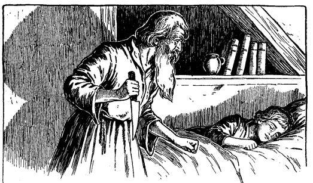Eine Weile blieb der Einsiedler noch da und lauschte und wagte kaum, Luft zu schöpfen. Dann erhob er sich und schlich wieder in sein Zimmer zurück.
»Mitternacht ist längst vorbei«, sagte er, »besser ist es, wenn er gar nicht zum Schreien kommt. Es könnte zufällig jemand draußen vorüber gehen.«
Er glitt in seiner Hütte herum, nahm hier etwas und dort etwas und kehrte damit ins Zimmer des Königs zurück. Es gelang ihm, seinem kleinen Gaste die Knöchel zusammen zu binden, ohne ihn selbst zu wecken. Dann versuchte er ihm auch die Handgelenke zu schnüren. Aber der Knabe zog immer im letzten Augenblicke noch die eine oder andere Hand zurück. Der Erzengel wollte schon verzweifeln, als plötzlich der Knabe selbst die Hände faltete, die im nächsten Augenblick gebunden waren. Nun legte der Einsiedler eine Binde unter das Kinn des Schläfers, zog sie über den Kopf herauf und band sie fest. Auch das nahm er so sanft und geschickt vor, daß der Knabe ungestört weiter schlief.
Unhörbar wie eine Katze schlich der alte Mann davon und kehrte bald wieder mit der Bank zurück. Er setzte sich darauf nieder, halb in den Schatten und halb beleuchtet von dem Licht der mitgebrachten Kerze. So stierte er mit glühenden Augen auf den schlummernden Knaben. Dann schliff er wieder an seinem Messer und kicherte hämisch zwischen hinein. In Aussehen und Haltung glich er einer ungeheuren Spinne, die nach einem unglücklichen Opfer glotzt, das sich rettungslos in ihr Netz verstrickt hat.
Als der Alte wieder einmal von seiner Arbeit aufsah, bemerkte er plötzlich, daß der Knabe die Augen weit offen hatte und in tödlichem Schrecken nach dem Messer hinstarrte. Ein höllisches Lächeln glitt über das Gesicht des Einsiedlers. Ohne seine Haltung zu ändern oder von seiner Beschäftigung abzulassen, sprach er: »Sohn Heinrichs des Achten, hast du gebetet?«
Hilflos rang der Knabe in seinen Banden, und ein erstickter Laut drängte sich zwischen den zusammen gebundenen Kinnladen hervor. Der Eremit faßte es als Bejahung seiner Frage auf.
»Dann bete noch einmal. Verrichte dein Sterbegebet.« Verzweifelnd stöhnte der Knabe und gab endlich keuchend seine Anstrengungen auf. Jetzt kamen ihm die Tränen und träufelten, eine nach der anderen, die Wangen hinunter. Den wilden alten Mann rührte es nicht.
Langsam stieg die Dämmerung herauf. Der Einsiedler bemerkte es und sprach scharf und mit einer nervösen Hast: »Ich kann nicht länger warten. Die Nacht ist vorüber. Sie schien mir nur wie ein Augenblick. Ich wollte, sie hätte ein Jahr gedauert. O wie süß war dieses Gefühl der göttlichen Vergeltung, mit der mich der Himmel beauftragt hat! Aber nun rüste dich, du Abkömmling des Kirchenverfolgers, schließe deine Augen, wenn du fürchtest, mit offenen Augen ...« Was er sonst noch sagen wollte, verlor sich in ein dumpfes Gemurmel. Der alte Klausner sank auf die Kniee, das Messer in der Hand und beugte sich über den leise stöhnenden Knaben ...
Horch! Tönte das nicht wie eine menschliche Stimme vor der Hütte? Das Messer entfiel der Hand des Einsiedlers. Rasch warf er ein Schaffell über den Knaben und stand zitternd auf. Lauter erscholl die Stimme und zorniger. Dann hörte man Schläge und Hilferufe und gleich darauf eilige Schritte, wie von Fliehenden, die bald in der Ferne erstarben. Jetzt schlug es mehrmals nach einander donnernd gegen die Tür und rief: »Holla! Aufgemacht! und zwar hurtig, sonst helfe ich nach!«
Ah, das war der seligste Ton, der seit langem dem König ans Ohr gedrungen war! O es war ja Hendens Stimme!
Der Eremit knirschte in ohnmächtiger Wut, entfernte sich rasch aus dem kleinen Schlafzimmer und schloß die Tür sorgfältig hinter sich zu. Bald darauf hörte der König rufen: »Ich grüße Euch, ehrwürdiger Vater! Wo ist der Junge, mein Junge?«
»Welcher Junge, guter Freund?«
»Welcher Junge! Macht mir keine Flausen vor, Herr Priester. Ich bin nicht in Laune, mich so leicht abspeisen zu lassen. Hier, ganz in der Nähe, jagte ich zwei Schurken auf, welche ihn mir, wie ich mutmaße, entführt haben, und zwang sie zum Geständnis. Sie sagten mir, er habe sich wieder davon gemacht und sie hätten seine Spur bis an Euere Tür verfolgt. Sie zeigten mir sogar seine Fußeindrücke. Also macht mir nicht lange Klimbim, sondern schafft ihn mir herbei, sonst soll Euch der und jener ... Wo ist der Knabe?«
»Aha, Ihr meint wohl den zerlumpten königlichen Vaganten, lieber Herr, der in dieser Nacht hier war. Wenn Ihr Euch für ein solches Bürschchen interessiert, dann wißt, daß ich ihn mit einem Auftrag fortgeschickt habe. Er wird gleich wieder hier sein.«
»Wie lange mag das dauern? Ich will keine Zeit verlieren. Kann ich ihn nicht einholen? Oder wann kommt er wieder?«
»Ihr braucht Euch keine Mühe zu geben. Er wird in kurzem wieder hier sein.«
»Meinetwegen denn. Ich will ein bißchen warten. Aber halt! Ihr sandtet ihn mit einem Auftrage fort? Und dazu noch in stockdunkler Nacht? Das ist gewiß und wahrhaftig eine Lüge! Dazu würde er sich nicht hergeben. Er würde Euch an Euerem alten Bart zupfen, wenn Ihr eine solche Zumutung an ihn stelltet. Ihr habt gelogen, Freund, besinnt Euch! Er würde keinem Menschen einen solchen Dienst leisten, keinem!«
»Einem Menschen vielleicht nicht. Aber ich bin kein Mensch.«
»Ihr kein Mensch? Was zum Kuckuck seid Ihr denn?«
»Das ist ein Geheimnis, das Ihr nicht erraten könnt. Ich bin ein Erzengel.«
Henden stieß einen Ruf des Entsetzens aus und meinte sodann: »Freilich, wenn er Euch für einen Erzengel hielt, so ist es wohl möglich, daß er sich bereit fand. Sonst hätte er sicher weder Hand noch Fuß gerührt. Aber ja, wenn ein Erzengel einmal befiehlt, muß selbst ein König gehorchen. Laßt mich ... St! was war das eben für ein Geräusch?«
Während dieses Gespräches lag der junge König in einem quälenden Zwiespalt zwischen Todesangst und erwachender Hoffnung. Wenn er nur Henden herbeilocken könnte! Er rang und rüttelte an seinen Fesseln und versuchte zu rufen. Aber nur ein leises Stöhnen drang hervor, das für Hendens Ohr kaum vernehmbar war.
»Geräusch? Ich hörte nur den Wind«, bemerkte der Eremit.
»Das mag sein. Ja, das wird wohl so sein. Es war nur ganz schwach ... Halt! da ist es wieder! Das ist nicht der Wind! Das tönt so sonderbar! Ei, das wollen wir doch ein bißchen näher untersuchen!«
Das Herz hüpfte dem jungen König vor Freude. Er strengte seine müden Lungen aufs äußerste an, aber die versiegelten Lippen und das erstickende Schaffell dämpften zu sehr jeden Laut, der sich entringen wollte. Und nun ließ Eduard wieder alle Hoffnung fahren, als er den Einsiedler sagen hörte: »Ja, jetzt höre ich auch so was. Es kommt von draußen. Ich glaube, dort hinter jenem Hügel hervor. Kommt einmal; ich will vorangehen.«
Der König hörte, wie die Tür sich aufschloß, wie beide hinaustraten und fortgingen. Er war wieder allein in dumpfem Brüten und schrecklicher Ungewißheit.
Nach einer ganzen Ewigkeit, wie ihm schien, näherten sich die Schritte wieder, Stimmen ertönten und das Trampeln von Hufen. Dann hörte er deutlich Hendens Stimme: »Länger will ich nicht warten. Er hat sich offenbar in diesem dichten Walde verirrt. Nach welcher Richtung ging er? Rasch, weiset mich zurecht.«
»Er ging ... aber wartet. Ich komme mit Euch.«
»Schön, schön. Ihr seid wirklich besser, als Ihr ausseht. Meiner Treu, ich glaube nicht, daß ein anderer Erzengel das Herz so auf dem richtigen Fleck hat, wie Ihr. Wollt Ihr reiten? Wollt Ihr den kleinen Maulesel nehmen, den ich da für meinen Jungen mithabe, oder spreizt Ihr lieber Euere heiligen Gebeine über diesen elenden Racker, der sonst mich trägt?«
»Nein, reitet Ihr den Maulesel und führt den andern am Halfter. Ich gehe sicherer auf meinen eigenen Füßen.«
»Dann, bitte, haltet mir einen Augenblick das kleine Tier, während ich all meine Gewandtheit aufbieten will, um den Rücken dieses obstinaten Viehzeuges zu erklettern.«
Darauf folgte ein heftiges Getrampel, Bocken und Bäumen, mit donnernden Verwünschungen vermischt. Schließlich erhielt der störrische Esel eine bittere Schmähpredigt, womit sein Widerstand gebrochen schien, denn von da an blieb es ruhig.
Mit einem Gefühl unsagbarer Enttäuschung hörte der kleine König, wie die Stimmen und Schritte sich entfernten. Ein namenloses Elend überkam ihn, alle Hoffnung schien verloren. »Mein einziger Freund geht fort, der Eremit wird allein zurückkehren, und dann ...«
Er wagte den Gedanken nicht weiter auszudenken. Aber noch einmal sträubte er sich krampfhaft mit aller Macht gegen seine Bande, so daß es ihm wenigstens gelang, das Schaffell abzuwerfen. Plötzlich hörte er, wie die Tür sich öffnete. Das Geknarr drang ihm ins Mark. Schon glaubte er das Messer an der Kehle zu spüren. Schreckensbleich schloß er die Augen. Als nichts erfolgte, öffnete er sie wieder und sah ... Johann Canty und Hugo vor sich stehen.
Wären seine Kinnladen frei gewesen, er würde »Gott sei Dank!« gerufen haben. In einem Nu waren seine Glieder ihrer Fesseln ledig. Die beiden Eindringlinge nahmen ihren Gefangenen unter den Arm und eilten mit ihm fort, in den Wald hinein.
Noch einmal mußte König »Fufu der Erste« mit den Geächteten und Stromern herumziehen. Er war das Ziel ihrer rohen, stumpfsinnigen Witze und gelegentlich auch das Opfer der Bosheit Cantys und Hugos, wenn der Hauptmann gerade nicht zugegen war. Nur diese beiden mochten ihn nicht leiden. Die andern hatten ihn recht gern und bewunderten seinen kecken Trotz und Mut. Hugo besonders tat ihm zuleide, was er insgeheim nur konnte, und machte ihm das Leben schwer. Einst bei einer nächtlichen Orgie trat er ihn wie zufällig zweimal kräftig auf die Zehen.
Der kleine König ging verächtlich darüber hinweg. Als aber Hugo es noch einmal versuchte, schlug ihn der König mit einem Knüttel nieder, worüber sich die ganze Bande unbändig freute. Voll Zorn und Scham sprang Hugo auf, ergriff ebenfalls einen Knüppel und kam wütend auf »Hans« los. Sofort bildete sich ein Ring um die beiden Kämpfer, ermunternde Zurufe erschollen, und man begann auf den Ausgang zu wetten. Aber Hugo hatte trotz seines höheren Alters nur wenig Aussicht auf Erfolg. Was bedeutete seine Lehrlingspfuscherei gegenüber einem Arm, den die ersten Meister Europas im Fechten geübt hatten!
Ruhig und in anmutiger Haltung stand der kleine König da, parierte gewandt den Hagel von Schlägen, so leicht und genau, daß die Augen der Zuschauer bewundernd an ihm hingen. Dann und wann, wenn sein geübtes Auge eine Blöße des Gegners erspähte, hatte Hugo blitzschnell auch schon einen derben Hieb weg, und stürmisches Gelächter belohnte den kleinen Helden. Nach einer Viertelstunde schlich sich Hugo, ganz zerbleut und voller Beulen, die Zielscheibe erbarmungsloser Spöttereien, von der Walstatt hinweg. Den unverletzten kleinen Sieger aber hob die fröhliche Bande jubelnd auf die Schultern und trug ihn zum Hauptmann, wo er mit großer Umständlichkeit zum König der Kampfhähne gekrönt wurde, während sein früherer Titel feierlich als nichtig erklärt ward.
Alle Versuche der Bande, den kleinen König sich und ihren Zwecken dienstbar zu machen, hatten fehlgeschlagen. Hartnäckig hatte er sich dessen geweigert, ja sogar wiederholt Fluchtversuche unternommen. Am ersten Tage seiner Wiederankunft hatte man ihn in eine unbewachte Küche hineingestoßen. Aber nicht nur kehrte er mit leeren Händen zurück, sondern versuchte auch, die Hausbewohner aufzurütteln. Dann gab man ihn einem Kesselflicker als Gehilfen mit; er wollte nicht arbeiten. Mehr noch; er drohte dem Kesselflicker mit dessen eigenem Lötrohr. Hugo und der Kesselflicker hatten Mühe genug, ihn nur an der Flucht zu hindern. Sein königlicher Zorn ergoß sich wie Lava auf die Häupter derer, die seine Freiheit antasteten oder suchten, ihn zu Diensten willfährig zu machen.
Einmal schickte man ihn und Hugo mit einer schlampigen Frau und einem übelfeilen Kinde auf Bettelei aus. Das Ergebnis war nicht ermutigend. Eduard lehnte es ab, für das kranke Kind zu betteln und wollte überhaupt nichts von dem Treiben wissen.
So vergingen mehrere Tage. Dieses elende Herumstrolchen, das ganze Leben bei dieser gemeinen, schmutzigen Bande ward ihm zum Ekel und bald so unerträglich, daß er beinahe wünschte, er wäre vom Erzengel abgeschlachtet worden.
Des Nachts aber, in seinen Träumen, vergaß er alles wieder. Da saß er auf seinem Throne und war Herr und König. Das Erwachen war indes nur um so peinigender für ihn, und noch sah er kein Ende ab.
Am Morgen nach jenem Zweikampf erhob sich Hugo, das Herz voll böser Rachegedanken. Besonders zwei Pläne hatte er sich zurechtgelegt. Einmal wollte er »Hans« demütigen, wo es nur immer anging und so sehr er nur konnte. Sein anderer Gedanke ging dahin, dem König irgend ein Verbrechen in die Schuhe zu schieben und ihn sodann den Klauen des Gesetzes zu überantworten.
Zunächst nahm er sich vor, den siegreichen Gegner körperlich zu verunstalten. Zu diesem Zwecke wollte er ihm ein Pflaster um die Beine legen. Diesen Umschlag setzte er zusammen aus einem Kleister von ungelöschtem Kalk, Seife und Rost von altem Eisen. Das ganze wurde auf ein Stück Leder gestrichen und mußte sodann dicht um das Bein gewickelt werden. Die Haut würde sich an dieser Stelle bald ablösen und das Fleisch sich entzünden, brennen und schmerzen. Dann sollte das Bein mit Blut eingerieben werden. Wenn dieses trocknete, so nahm das wunde Bein eine dunkle, abstoßende Färbung an. Sodann wollte er es mit schmutzigen Lumpen in absichtlich sorgloser Weise umhüllen, so daß das Geschwür leicht zu sehen war, um das Mitleid der Vorübergehenden zu erregen. Mit diesem Bein sollte »Hans« auf der Landstraße sich zeigen und so zur Bettelei gezwungen werden.
Zu diesem Vorhaben sicherte er sich die Hilfe des Kesselflickers, der also »Hans« als Gehilfen mitnehmen mußte. Das geschah. Sowie sie außer Sicht des Lagers waren, warfen die ruchlosen Gesellen den kleinen König zur Erde. Der Kesselflicker hielt ihn fest, und Hugo legte ihm den Verband an.
Der König raste und strampelte, so gut er konnte. Er gelobte ihnen, sie hängen zu lassen, sobald er wieder auf dem Throne sei. Aber er konnte sich nicht losmachen, und seine Peiniger verlachten seine Drohungen. Es währte nicht lange, da begann das Pflaster zu wirken und hätte bald seine volle Schuldigkeit getan, wäre nicht ein störender Zufall eingetreten. Diesen führte der Leibeigene herbei, welcher jene famose Rede gegen die englischen Gesetze gehalten hatte. Er erschien plötzlich auf der Bildfläche und machte der Sache rasch ein Ende, indem er das Pflaster einfach wegriß und fortschleuderte.
Der König wollte sich den Stock seines Befreiers borgen und den beiden Schurken den Rücken verbleuen. Aber der Leibeigene wollte das nicht zugeben, sondern die ganze Sache dem Hauptmann zur Entscheidung überlassen. Er brachte alle drei ins Lager zurück und berichtete dem Hauptmann, was vorgefallen war. Dieser überlegte sich's eine Weile und entschied dann, der König solle nicht mehr angehalten werden zu betteln, da er offenbar zu gut dafür sei. Deshalb erhob er ihn aus dem Bettlerstand und beförderte ihn in den Rang der Diebe.
Hugo freute sich über die Maßen. Er hatte ja schon den König zum Diebstahl verleiten wollen, ohne daß es ihm gelungen war. Jetzt aber, nach dem Ausspruch des Hauptmanns, würde es »Hans« wohl nicht mehr im Traume einfallen, dem so deutlich ausgesprochenen Befehle zu trotzen. Schon für den nämlichen Tag plante er einen Streifzug, mit dem Vorhaben, den König dabei der Obrigkeit zu verraten. Das mußte natürlich so schlau ins Werk gesetzt werden, daß sein schmähliches Vorgehen nicht an den Tag kam. Die ganze Bande hatte ja den kleinen König der Kampfhähne lieb gewonnen und würde also mit seinem Verräter nicht sehr glimpflich umgehen.
Früh am Nachmittage schlenderte Hugo mit seinem Opfer einem nahen Städtchen zu, wo sie die Straßen absuchten, der eine in der Hoffnung auf Beute, der andere mit der Absicht, wenn immer möglich zu entrinnen.
Beide verwarfen mehrere Gelegenheiten, die sich ihnen darboten, denn alle beide wollten diesmal sicher gehen. Hugo hatte zuerst Erfolg. Eine Frau kam mit einem dicken Pack in einem Korb auf sie zu. Hugo sah es mit höllischem Grinsen. »Bei allen Teufeln, wenn ich ihm nur das anhängen kann, dann fahre wohl, König der Kampfhähne!«
Er wartete noch einen Augenblick und beobachtete, bis die Frau vorüber und der rechte Zeitpunkt gekommen war. Dann sagte er mit leiser Stimme: »Warte hier, bis ich wiederkomme!«
Dann ging er verstohlen seiner Beute nach. Freude erfüllte des Königs Herz. Jetzt konnte er fliehen, sobald Hugo außer Sicht war. Aber ein so großes Glück war ihm nicht beschieden. Hugo schlich hinter der Frau her, ergriff das Pack und rannte zurück, während er es rasch in einen alten Fetzen einhüllte, den er bei sich trug. Die Frau, deren Korb leichter geworden war, merkte den Diebstahl sogleich, obwohl sie den Dieb nicht gesehen hatte, und erhob ein mächtiges Geschrei. Hugo gab das Bündel dem König rasch in die Hand, flüsterte, ohne sich aufzuhalten: »Nun laufe rasch hinter mir her. Suche die Leute von mir abzuhalten und sie irre zu führen.«
Beleidigt und entrüstet warf der König das Pack hin. Die Umhüllung fiel aus einander und brachte das Pack zum Vorschein, gerade als die Frau bei ihm ankam. Im Handumdrehen stand eine ganze Menge von Leuten um den kleinen König. Die Frau ergriff ihn beim Handgelenk und hob mit der Linken ihr Pack auf. Eine wahre Flut von Schimpfworten ergoß sich über den armen Eduard, während er sich vergeblich mühte, die Hand frei zu bekommen.
Hugo hatte genug gesehen. Seines Feindes hatte er sich entledigt, und das Gesetz würde den »Hans« schon zu fassen wissen. So enteilte er flüchtigen Fußes dem Schauplatz seines Verrates und sann dabei nach, was er seinen Gefährten angeben wollte.
Indessen fuhr der König fort, sich der Frau zu erwehren und rief zornig: »Gib mir die Hand frei, du törichtes Weib; nicht ich habe deine Habseligkeiten geraubt.«
Dichter nur umschloß ihn die Menge und stieß Drohungen und Verwünschungen gegen den armen Knaben aus. Ein sonngebräunter Grobschmied in Lederschürze und aufgekrempelten Ärmeln trat auf ihn zu und wollte ihn durchdreschen, wie er sagte. Aber gerade, als er sich anschickte, seine Drohung wahr zu machen, blitzte ein langes Schwert durch die Luft und fiel, die flache Seite nach unten, mit überzeugender Gewalt auf seinen bloßen Arm. Zugleich ließ sich der wehrhafte Eigentümer der blanken Klinge also vernehmen: »Ei, ihr lieben Leute, laßt uns in Güte vorgehen, nicht mit bösem Blut und unchristlichen Worten. Das Gesetz hat hier einzig dreinzureden, ihr aber laßt die Hände davon, wenn ich euch raten darf. Ihr da, gute Frau, gebt den Knaben frei!«
Der Grobschmied musterte den kecken Krieger mit einem raschen Blick. Es schien ihm aber doch nicht geraten, mit ihm anzubinden, und so ging er brummend davon. Die Frau ließ zögernd den Knaben los, und die Menge schaute den Fremden mit feindseligen Augen an, wagte aber nicht, Einwendungen zu erheben. Der König indes sprang mit geröteten Wangen und blitzenden Augen an die Seite seines Befreiers und rief jubelnd aus: »Lange hast du gezaudert, aber du kommst noch zur rechten Zeit, Herr Michael Henden. Hau mir diesen Pöbel zusammen!«
Henden unterdrückte ein Lächeln, das sich ihm auf die Lippen drängen wollte. Er beugte sich nieder und flüsterte dem König zu: »Sachte, sachte, mein Fürst. Wäget Eure Worte ab oder besser noch: sagt gar nichts. Vertraut mir nur, und alles wird gut enden.«
Dann dachte er bei sich: »Er nannte mich Herr Henden! Du heiliger Gott! Ich hatte schon vergessen, daß er mich zum Ritter schlug. Wie wunderbar ist es doch, daß er solche Kleinigkeiten im Gedächtnis behalten hat, die doch nur augenblickliche Auswüchse seines irren Geistes waren!«
Jetzt machte die Menge Platz, um einen Schutzmann durchzulassen, welcher herzutrat und den König fesseln wollte. Henden aber trat dazwischen mit den Worten: »Sachte, guter Freund, nehmt Euere Hand zurück. Wir kommen freiwillig mit; dafür bürge ich. Geht nur voran; wir folgen nach.«
Der Polizist gab es zu und schritt voran. Ihm folgte die Frau mit ihrem Pack, Henden und der König hinter ihr, gefolgt von der neugierigen Menge. Der König wollte sich zwar sträuben, aber Henden raunte ihm zu: »Bedenket, Majestät, Euere Gesetze bilden die gesunde Luft im Königreich. Wie sollen aber die Untertanen ihnen folgen, wenn das Oberhaupt sich weigert, ihnen zu gehorchen? Wenn Ihr wieder auf dem Throne seid, wird es Euch gewiß Befriedigung gewähren, daß Ihr Euch so loyal und bescheiden Eueren eigenen Gesetzen unterwarfet.«
»Genug; du hast recht. Du sollst sehen, daß der König, solange er selbst Untertan ist, alles auf sich nehmen will, was das Gesetz über Untertanen verhängt.«
Vor dem Richter schwor die Frau, der kleine Gefangene habe den Diebstahl begangen. Niemand konnte das Gegenteil beweisen, und so war der König überführt. Das Pack wurde jetzt aufgemacht, und ein plumpes kleines gebratenes Ferkel kam zum Vorschein.
Der Richter schien bestürzt, und Henden wurde totenblaß. Der König aber stand unbeweglich, da er sich der Folgen eines solchen Diebstahls nicht bewußt war. Eine ganze Weile überlegte der Richter, dann wandte er sich mit der Frage an die Klägerin: »Wie hoch schätzet Ihr den Wert des Ferkels?«
Die Frau verbeugte sich und sprach: »Drei und drei Viertel Schillinge kostet es, Euer Ehren. Ich könnte keinen Heller ablassen.«
Der Richter schaute mit Unbehagen auf die Menge, dann nickte er dem Schutzmann zu und sagte: »Räume den Saal und schließe die Türen!«
Das geschah. Niemand blieb zurück, als die Klägerin und der Beklagte, Michael Henden und der Richter mit dem Schutzmann. Henden biß sich die farblosen Lippen blutig, und große Schweißtropfen drängten sich auf seiner Stirn. Der Richter wandte sich wieder an die Frau und sprach mit mitleidiger Stimme: »Es ist ein armer, unwissender Knabe und vielleicht halb verhungert, denn die Zeiten sind schlecht für solch elende Leute. Seht ihn nur an, er hat kein Verbrechergesicht, aber wenn einen der Hunger peinigt ... Gute Frau, wißt Ihr auch, daß einer gehängt werden muß, wenn er etwas stiehlt, das ein und ein Achtel Schilling wert ist?«
Der kleine König fuhr auf und machte große, bestürzte Augen. Dann aber beherrschte er sich rasch und nahm seine frühere gleichmütige Haltung wieder an. Nicht so die Frau. Am ganzen Leibe zitternd sprang sie auf und rief: »Ach, du grundgütiger Himmel, was habe ich nur getan! Nicht um alles in der Welt möchte ich, daß der arme Junge um meinetwillen gehängt würde! Ach, rettet ihn, Herr Richter, rettet ihn! Was kann ich dazu tun?«
Der Richter behielt seine Amtsmiene bei und sagte einfach: »Zweifellos ist es noch erlaubt, den Preis zu ermäßigen, da er noch nicht in das Protokoll eingetragen ist.«
»Dann in Gottes Namen schreibt, das Ferkel koste drei Viertel Schilling, und der Himmel segne Euch, daß Ihr mein Gewissen vor diesem Schrecklichen bewahrt habt.«
Michael Henden vergaß alles um sich her vor Freude. Zur großen Überraschung des Königs schlang er seine Arme um ihn und küßte ihn, ohne zu beachten, daß er damit die königliche Würde seines Schützlings allzu sehr bloßstellte. Die Frau machte einen tiefen Knicks und entfernte sich mit ihrem Ferkel. Der Schutzmann öffnete ihr die Tür und folgte ihr in den Gang hinaus nach, während der Richter das Protokoll schrieb.
Der wieder munter gewordene Henden wunderte sich, warum der Schutzmann der Frau nachgegangen war. Er schlüpfte also gleichfalls sachte zur Tür hinaus in den dunklen Gang und lauschte. Da hörte er denn folgendes Zwiegespräch: »Es ist wirklich ein fettes, appetitliches Ferkelchen und verspricht einen guten Bissen. Ich will es Euch abkaufen. Hier sind drei Viertel Schillinge.«
»Drei Viertel Schillinge! Das wäre noch schöner! Mich selbst kostet es drei und drei Viertel Schillinge gute bare Münze. Eine Ohrfeige könnt Ihr haben für Euere lumpigen Pfennige.«
»Pfeift der Wind von daher? Ihr habt unter Eid ausgesagt und also falsch geschworen, daß das Ferkel nur drei Viertel Schillinge wert sei. Kommt gleich wieder zurück zum Richter und verantwortet Euch für Euer Verbrechen ... Und dann wird auch der Knabe gehängt.«
»Hier, hier, lieber Mann, nehmt das Ferkel und sagt nichts weiter. Ich bin zufrieden. Gebt mir Euer Geld und haltet die Zunge.«
Weinend ging die Frau davon. Henden schlüpfte wieder in das Amtszimmer, und gleich darauf folgte auch der Schutzmann, nachdem er seine Beute irgendwo verborgen hatte. Der Richter schrieb zu Ende, hielt dann dem König eine ernstmilde Strafpredigt und verurteilte ihn zu einer kurzen Gefängnisstrafe. Dann sollte er ausgepeitscht und aus der Stadt verwiesen werden.
Höchst erstaunt und entrüstet öffnete der König den Mund und wollte vermutlich Henden Befehl geben, den guten Richter auf der Stelle zu enthaupten. Aber er fing einen warnenden Blick von seinem Beschützer auf und schloß den Mund rechtzeitig wieder. Der Ritter nahm ihn an der Hand, verbeugte sich vor dem Richter, und beide verließen in Begleitung des Schutzmannes das Zimmer, um nach dem Gefängnis zu gehen. Kaum hatten sie die Straße erreicht, als der kleine Monarch glutübergossen stehen blieb, die Hand seines Beschützers fortstieß und ausrief: »Du Dummkopf, glaubst du denn, ich werde mich lebend in ein Gefängnis stecken lassen?«
Henden beugte sich zu ihm nieder und flüsterte, diesmal etwas scharf: »Ich dachte, Ihr wolltet mir vertrauen? Stille! Verschlimmert nicht Euer Geschick mit solch gefährlichen Reden. Was Gott will, geschieht. Das kann auch ein König nicht ändern. Geduldet Euch also und wartet es ab. Es kommt schon noch die Zeit, wo Ihr wieder aufatmen und Euch freuen werdet!«
Der kurze Wintertag ging zu Ende. Die Straßen auf dem Weg zum Gefängnis waren öde. Nur hin und wieder eilte jemand raschen Schrittes vorbei, um bald wieder das behagliche Heim zu erreichen, das ihn vor Nacht und Nebel schützte. Keiner schaute sich nach unseren Freunden um. Eduard fragte sich, ob wohl je ein König auf dem Wege zum Gefängnis so wenig Aufsehen erregt habe. Als sie auf die Mitte des menschenleeren Marktplatzes kamen, faßte Henden den Schutzmann am Arm und sagte mit leiser Stimme: »Wartet einen Augenblick, guter Mann. Hier hört uns niemand, und ich möchte ein Wörtchen mit Euch sprechen.«
»Das verbietet mir meine Pflicht, Herr. Bitte, haltet mich nicht auf; die Nacht bricht herein.«
»Das macht fast gar nichts. Was ich zu sagen habe, ist höchst wichtig für Euch. Schaut Euch einen Augenblick um und laßt derweil den Knaben entfliehen.«
»Das mir, Herr? Ich verhafte Euch im – – –«
»Nur nichts überhasten, Mann. Nehmt Euch wohl in acht, daß Ihr keine Torheit begeht.«
Dann senkte er seine Stimme zu einem Flüstern herab und sagte: »Das Ferkel, das Ihr für drei Viertel Schillinge gekauft habt, kann Euch den Hals kosten, Mann.«
Der Schutzmann war erst sprachlos vor Erstaunen, dann fand er seine Sprache wieder und begann aufzubrausen und zu drohen. Aber Henden blieb ruhig und wartete geduldig, bis der andere nichts mehr zu sagen wußte. Dann entgegnete er: »Ihr gefallt mir, Freund, und ich möchte Euch nicht gerne in Ungelegenheiten bringen. Paßt wohl auf; ich hörte alles, Wort für Wort. Ich will es Euch beweisen.«
Er wiederholte das ganze Gespräch, das der Polizist mit der Frau geführt hatte und schloß: »Nun, habe ich meine Sache gut gemacht? Glaubt Ihr, ich könne es nicht auch ebenso gut vor dem Richter hersagen, wenn es dazu kommt?«
Helle Angst malte sich auf dem Gesichte des Schutzmannes. Aber er faßte sich wieder und suchte einen leichten Ton anzuschlagen: »Ihr macht da eine furchtbar ernste Geschichte aus diesem Scherz. Ich wollte ja doch die Frau nur ein wenig zum besten halten.«
»Deshalb wohl behieltet Ihr auch das Ferkel?«
Der Mann antwortete mit angenommener Schärfe: »Nichts weiter, Herr. Ich sage Euch, es war nur ein Spaß.«
»Ich fange an, Euch zu glauben«, erwiderte Henden halb ironisch und halb mit angenommenem Ernst. »Aber wartet hier einen Augenblick. Ich will nur schnell den Richter hierüber befragen. Er ist ein gesetzeskundiger Mann und wird wohl verstehen, Scherz und Ernst aus einander zu halten.«
Während er sprach, bewegte er sich langsam rückwärts. Der Schutzmann schwankte, wurde unruhig, stieß endlich eine Verwünschung aus und sagte: »Halt, halt, lieber Mann ... bitte, wartet noch ein wenig ... der Richter ... ei, Herr, der hat nicht mehr Sinn für einen guten Witz, als ein toter Leichnam. Kommt, wir wollen weiter verhandeln. In des Kuckucks Namen! Das ist eine ganz verwünschte Geschichte! Und alles nur wegen einer unschuldigen, harmlosen Laune. Ich bin Familienvater, und meine Frau und meine Kleinen ... Nehmt Vernunft an, Euer Ehren: was wollt Ihr von mir?«
»Ihr sollt nur blind und taub und lahm sein für die kurze Zeit, bis Ihr auf 100000 gezählt habt; das heißt, Ihr müßt aber langsam zählen«, sagte Henden mit der Miene eines Mannes, der eine ganz selbstverständliche Kleinigkeit verlangt.
»Das bringt mich ins Verderben«, rief der Schutzmann ganz fassungslos. »Seid vernünftig, lieber Herr. Ihr könnt mein Gespräch mit der Frau ansehen, wie Ihr wollt, Ihr müßt schließlich zur Überzeugung kommen, daß es nur ein Scherz war. Und selbst, wenn es nicht als Scherz aufgefaßt würde, so wäre es ein so geringfügiges Vergehen, daß es mir im schlimmsten Falle nur einen Rüffel und eine Vermahnung vom Richter zuziehen würde.«
Henden erwiderte feierlich:
»Für diesen Euern Scherz hat das Gesetz einen Namen. Wißt Ihr, wie er lautet?«
»Das wußte ich doch nicht. Vielleicht bin ich unvorsichtig gewesen. Das war mir nie eingefallen, daß dieses ... Versehen auch noch einen Namen habe. Ach, du lieber Himmel, ich dachte, es wäre ein Originalspaß.«
»Ja doch, es gibt einen Namen dafür. In den Gesetzbüchern heißt ein solches Vergehen » Non compos mentis lex talionis sic transit gloria mundi«.
»Ach, mein Gott, welch langer Name!«
»Und die Strafe ist auch entsprechend. Sie lautet auf Tod.«
»Gott sei mir armem Sünder gnädig!«
»Ihr habt die Not und Hilflosigkeit einer Frau zu Euerem eigenen Vorteil mißbraucht und Euch fremdes Gut für drei Viertel Schillinge angeeignet, das drei und drei Viertel Schillinge wert war, unrechterweise angeeignet, also gestohlen. Das kommt folglich einem Diebstahl von drei Schillingen gleich, worauf schon, wie Ihr wißt, die Todesstrafe steht. Dann aber habt Ihr auch Amtsmißbrauch getrieben und zwar zu Betrug und Übervorteilung. Das Gesetz nennt dieses Verbrechen » Ad hominem expurgatis in statu quo«. Ihr müßtet also mehrfach gehängt werden, ohne daß Ihr durch Geld oder Einspruch der Geistlichkeit oder Umänderung in Galeerenstrafe Euch dem Galgen entziehen könnt.«
»Haltet mich, haltet mich, Herr; meine Kniee wanken. Seid barmherzig, verschonet mich, und ich will mich abwenden und nichts sehen von dem, was hinter mir vorgeht.«
»So, nun redet Ihr doch endlich verständig und klug. Und wollt Ihr das Ferkel der Frau zurückgeben?«
»Ja, das will ich, bei meinem Amtseid. Ich könnte auch gar kein Ferkel mehr anrühren, wenn auch ein Engel vom Himmel es mir gebraten auf den Tisch brächte. Geht; ich bin blind, ich will nichts sehen. Ich will sagen, Ihr seid ins Gefängnis eingebrochen und hättet den Gefangenen mit Gewalt befreit. Es hat nur eine alte, morsche Tür. Ich will sie selbst um Mitternacht mit meiner Axt zusammenschmettern.«
»Tut das, gute Seele, und es wird Euch kein Leides geschehen. Der Richter hat ein mitleidiges Herz für den armen Knaben und wird Euch keine Schwierigkeiten machen, wenn der Junge auch entwischt ist.«
Sobald Henden und der König dem Schutzmann aus den Augen gekommen waren, eilten sie aus der Stadt. Dort wies der Ritter seinem Schützling eine Stelle an, wo er bleiben und auf ihn warten sollte. Er selbst kehrte in die Stadt zurück, um im Gasthaus seine Zeche zu ordnen und seine Esel abzuholen.
Eine halbe Stunde später trotteten die beiden Freunde auf Hendens Eseln munter gen Osten zu. Der König hatte seine alten Lumpen weggeworfen und sich in die warmen Kleider gehüllt, welche ihm Henden auf der Londoner Brücke gekauft hatte.
Der Ritter wollte den Knaben nicht überanstrengen. Er war der Meinung, scharfe Tagesritte, unregelmäßige Mahlzeiten und ungenügender Schlaf müßten für seinen kranken Geist unzuträglich sein. Er gedachte also, nur kurze Stationen zu machen, so sehr er sich auch sehnte, sein väterliches Heim baldmöglichst zu erreichen.
Nach einem Ritt von etwa zehn Meilen kamen die beiden Wanderer in ein ansehnliches Dorf und nahmen dort in einem guten Gasthaus Herberge. Die früheren Beziehungen wurden wieder aufgenommen. Henden stand, während der König speiste, hinter dessen Stuhl und bediente den Knaben. Er entkleidete ihn, als er schlafen wollte, und schlief selbst wieder auf dem Fußboden quer vor der Tür, wo er sich in eine Decke einhüllte.
Die nächsten Tage trabten sie lässig dahin, sprachen von ihren gegenseitigen Abenteuern und ergötzten sich daran. Henden erzählte von den Kreuz- und Querritten, die er unternommen hatte, um den König wieder zu finden. Er berichtete auch, wie ihn der Erzengel über Stock und Stein durch den ganzen Wald und schließlich wieder nach der Hütte zurückgeführt habe, als er sah, daß er den Ritter anders nicht los werden könne. »Darauf«, erzählte er, »ging der alte Mann ins Schlafzimmer. Gleich nachher kam er aber wankend und mit verstörtem Gesicht zurück und sagte, er habe geglaubt, der Knabe wäre heimgekommen und hätte sich schlafen gelegt. Aber es sei niemand da. Den ganzen Tag über wartete ich in der Hütte. Dann ging ich meines Weges, um Euch zu suchen. Auch der Klausner machte sich wieder auf, um nach Euch zu forschen. Ich schied von ihm, da wir in verschiedener Richtung nach Euch ausspähen wollten. Ihr hättet nur sehen sollen, wie dieses alte Sanctum Sanctorum über Euer Ausbleiben trostlos war!«
»Das will ich wohl glauben«, sagte der König und erzählte, was der Einsiedler mit ihm vorgehabt habe. Henden wunderte sich nicht übel und bedauerte nur, daß er es nicht gewußt habe, sonst wäre er dem Erzengel zu leibe gegangen.
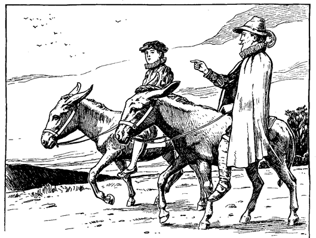Der letzte Tag ihrer Reise kam heran. Henden war in allen Himmeln. Er plauderte in einem fort. Wie doch sein alter Vater sich freuen werde und sein Bruder Arthur, aus deren Leben er mancherlei erzählte, was ihren edlen Charakter genugsam beleuchtete. Dann wandte sich seine Begeisterung über zu Edith, und schließlich gönnte er sogar Hugo einige brüderlich freundliche Worte, so warm war ihm ums Herz geworden. Dann verbreitete er sich wieder allgemein über den glänzenden Empfang, der ihnen in Hendenhall zuteil werden sollte.
Sie durchzogen jetzt eine schöne Landschaft voll freundlicher Häuser und Obstgärten. Ihr Weg führte über ausgedehnte Wiesen, deren sanft anschwellende Hügel und kleine fruchtbare Täler an eine leicht bewegte See erinnerten. Am Nachmittage schwenkte der heimkehrende verlorene Sohn öfter vom Wege ab, um irgend einen Hügel zu besteigen, von wo er die Heimat rascher zu erblicken hoffte. Endlich gelang ihm das auch, und entzückt rief er aus:
»Seht, mein Fürst, dort liegt mein Heimatdorf und dort weiter oben das Herrenhaus, mein väterliches Heim! Ihr könnt die Türmchen von hier aus sehen. Und jener Wald dort drüben, schaut, ist unser Park. O nun werdet Ihr bald sehen, was Glanz und Pracht ist. Ein Haus mit siebzig Zimmern, denkt Euch nur! Und dazu siebenundzwanzig Bedienstete! Eine hübsche Wohnung für Leute, wie wir sind, nicht wahr? Kommt, laßt uns eilen! Meine Ungeduld will sich nicht mehr zügeln lassen.«
Sie beschleunigten denn auch tunlichst ihren Ritt, und kurz nach drei Uhr hatten sie das Dorf erreicht. Während sie durch die Hauptstraße ritten, plauderte Henden unaufhörlich:
»Hier ist die efeuumrankte Kirche, ganz unverändert. Drüben, seht Ihr, winkt das gastliche Wirtshaus, der gute alte »Rote Löwe«, und da vorne ist der Marktplatz. Und dort ist die Dorflinde! Nicht wahr, ein prächtiger Baum? Da zeigt sich auch die große Pumpe wieder. Nichts, gar nichts ist anders geworden, ausgenommen jedenfalls die Leute. Zehn Jahre können nicht spurlos an den Menschen vorübergehen. Einige freilich kommen mir bekannt vor, aber mich erkennt niemand.«
Und so schwatzte er fort. Das Ende des Dorfes war bald erreicht. Jetzt bogen die Reiter in einen gewundenen Seitenpfad ein, der mit hohen Hecken umsäumt war. Munter trabten die beiden ungleichen Freunde vorwärts. Nach einer guten Viertelstunde standen sie vor einem weit ausgedehnten Blumengarten. Ein gewaltiger Torweg erhob sich davor, in dessen mächtigen steinernen Säulen das Familienwappen eingemeißelt war. Sie durcheilten den Garten und hielten vor einem altertümlichen, aber prächtigen Herrenhaus.
»Willkommen in Hendenhall, mein König!« rief Michael. »Ah, das ist ein herrlicher Tag! Mein Vater und mein Bruder und Fräulein Edith werden vor Freude närrisch sein und nur Augen für mich haben, so daß Ihr Euch vielleicht vernachlässigt fühlen werdet. Aber beachtet es nicht; bald wird es anders kommen. Wenn ich sage, Ihr seiet mein Schützling, und wie ich Euch lieb gewonnen habe, dann werden sie Euch um meinetwillen nicht minder herzlich willkommen heißen, und Haus und Herz wird auch für Euch offen stehen.«
Nach diesen Worten sprang Henden zu Boden und half auch dem König absteigen.
Bald standen die Freunde in einem geräumigen Gemach, und Henden bat seinen Schützling Platz zu nehmen. Dann eilte er auf einen jungen Mann zu, welcher an einem Schreibtisch saß, vor dem ein mächtiges Kaminfeuer brannte.
»Umarme mich, Hugo!« rief er, »und sage, daß du dich über meine Rückkehr freuest. Und rufe auch unseren Vater, denn noch bin ich nicht zu Hause, solange ich nicht seine Hand geschüttelt, sein Gesicht gesehen und seine Stimme gehört habe!«
Hugo zeigte sich einen Augenblick überrascht, beherrschte sich aber und trat ein paar Schritte zurück, während er den Eindringling scharf musterte. Erst verrieten seine Mienen beleidigten Stolz. Dann aber folgten sie einem innern Gedanken oder Plane und nahmen plötzlich den Ausdruck der Neugier und scheinbaren Mitleides an. Mit sanfter Stimme erwiderte er:
»Euer Verstand scheint gelitten zu haben, armer Fremdling. Sonder Zweifel habt Ihr harte Entbehrungen erlitten und seid in der Welt roh herumgestoßen worden. Nach Aussehen und Kleidung muß ich es wohl schließen. Für wen haltet Ihr mich?«
»Für wen? Ei, doch für das, was du bist. Ich halte dich für Hugo Henden«, sagte Michael scharf.
Im selben sanften Tone fuhr Hugo fort:
»Und für wen haltet Ihr Euch?«
»Diese Frage kannst du selbst beantworten. Oder willst du etwa behaupten, du kennest deinen Bruder Michael Henden nicht mehr?«
Eine scheinbar freudige Überraschung zeigte sich auf Hugos Gesicht und er rief aus:
»Was! Scherzet Ihr nicht? Können die Toten wieder zum Leben erwachen? Gott sei gepriesen, wenn es so wäre! Unser armer verlorener Junge sollte nach all den grausamen Jahren der Trennung wieder in unsere Arme zurückkehren? Ach, es scheint zu schön, um wahr zu sein; es ist zu schön, um wahr zu sein! Ich bitte Euch, habt Mitleid, spottet meiner nicht! Rasch, kommt ans Licht, laßt mich Euch näher ansehen!«
Er ergriff Michael am Arme und zog ihn ans Fenster. Dann begann er ihn von Kopf bis zu Füßen zu mustern und beinahe mit den Augen zu verschlingen. Er drehte ihn um und wieder um und beguckte ihn von allen Seiten. Der zurückgekehrte Krieger lachte indes mit dem ganzen Gesicht, nickte fortwährend mit dem Kopfe und sagte:
»Nur weiter, weiter, Bruder, und fürchte dich nicht. Jedes Glied und jeder Zug wird dir bezeugen, daß ich Michael Henden bin. Untersuche und prüfe, solange du willst, mein lieber alter Hugo. Ich bin doch kein anderer, als dein Michael, der nämliche alte Michael, dein verlorener Bruder, nicht wahr? Ah, das ist ein schöner Tag! Sagte ich es doch! Gib mir endlich deine Hand, laß mich deine Wange küssen! Wahrhaftig, ich möchte sterben vor lauter Freude!«
Er wollte sich seinem Bruder in die Arme werfen. Aber Hugo hielt ihm abwehrend die Hand entgegen, ließ dann sein Kinn traurig auf die Brust sinken und sprach, scheinbar tief bekümmert:
»Ach, möge mir Gott in Seiner Gnade Kraft genug geben, um diese schmerzliche Täuschung zu überwinden!«
Michael brachte erst vor Erstaunen kein Wort hervor. Dann stieß er aus:
»Welche Enttäuschung? Bin ich etwa nicht dein Bruder?«
Traurig schüttelte Hugo den Kopf und sagte: »Gebe der Himmel, daß dem so sei! Vielleicht können andere Augen besser sehen und eine Ähnlichkeit herausfinden, die mir entgangen ist. Ach, ich fürchte, der Brief hat nur zu wahr gesprochen!«
»Welcher Brief?«
»Ein Brief, der uns vor sechs oder sieben Jahren vom Festlande herüber zukam und meldete, mein Bruder sei in der Schlacht gefallen.«
»Das war eine Lüge. Rufe meinen Vater. Er wird mich erkennen.«
»Die Toten kann man nicht zurückrufen.«
»Tot also!« stöhnte, Michael mit leiser Stimme und zitternden Lippen. »Mein Vater tot! O das ist ein schwerer Schlag! Nun ist meine Freude schon halb dahin. Aber, bitte, führe mich zu meinem Bruder Arthur. Er wird mich auch erkennen, mich kennen und trösten.«
»Auch er ist gestorben.«
»Gott sei mir armen Manne gnädig! Tot, beide tot, alles tot, was ich auf Erden lieb hatte! Aber ich flehe dich an, sage nicht etwa auch, daß Fräulein Edith ...
»Gestorben sei? Nein, sie lebt.«
»Dann, dem Himmel sei Dank, kann ich mich doch wieder freuen! Beeile dich, Bruder, daß sie hierher kommen! Wenn sie mich nicht erkennt ... aber sie wird, sie muß mich kennen. Ich war ein Narr, daß ich nur einen Augenblick daran zweifelte. O bringe sie hierher, bringe auch die alten Dienstboten mit. Auch sie mögen bezeugen, daß ich dein Bruder bin.«
»Sie sind alle fort, außer fünf: Peter, David, Bernhard, Henriette und Margaret.«
Mit diesen Worten verließ Hugo das Gemach.
Michael stand eine Weile wie betäubt da. Dann begann er nachdenklich auf und ab zu gehen und vor sich hin zu murmeln: »Die fünf Erzgauner haben die zweiundzwanzig redlichen und ehrlichen Dienstboten verdrängt. Das ist doch sonderbar.«
Die Geschichte gefiel ihm immer weniger, je mehr er grübelte. Den König hatte er ganz vergessen. Da sagte Eduard ernst und mit tiefem Mitleid:
»Nimm es dir nicht so zu Herzen, lieber Herr: es gibt noch andere in der Welt, welche verkannt, und deren Ansprüche verlacht werden. Du bist in guter Gesellschaft.«
»Ach, mein König«, rief Henden und verfärbte sich leicht, »verurteilt mich nicht. Wartet, und Ihr werdet sehen. Ich bin kein Betrüger. Sie wird es bezeugen. Von den süßesten Lippen Englands werdet Ihr es vernehmen. Ich soll ein Betrüger sein? Ich kenne diese alte Halle, diese meine Ahnenbilder, kurz, alles um uns herum so gut, wie ein Kind seine Amme kennt. In diesem Hause ward ich geboren und auferzogen, mein Fürst. Ich spreche die Wahrheit. Und sollte auch niemand in der Welt mir Glauben schenken, so bitte ich Euch, nicht an mir zu zweifeln. Ich könnte es nicht ertragen.«
»Ich glaube dir,« sagte der König einfach und mit kindlichem Vertrauen.
»Das danke ich Euch von ganzem Herzen!« rief Henden feurig und sichtbar gerührt.
Da fragte der König seinerseits:
»Zweifelst du etwa an mir?«
Henden wurde verlegen und dankte dem Himmel, daß ihm die Antwort erspart wurde. Denn eben öffnete sich die Tür, und Hugo trat wieder herein. Hinter ihm kam eine schöne, reich gekleidete Dame, gefolgt von mehreren Dienern in Livree. Die Dame schritt langsam mit gesenktem Kopfe vor. Ihre Augen hefteten sich auf den Boden, und ihre Züge waren unaussprechlich traurig. Michael Henden sprang ihr entgegen und rief:
»O meine Edith, mein Liebling!«
Aber Hugo vertrat ihm den Weg und sagte zu der Dame:
»Schaue ihn an. Kennst du ihn?«
Als die Dame Hendens Stimme hörte, fuhr sie leicht zusammen, ihre Wangen röteten sich, und sie zitterte merklich. Einige Augenblicke verharrte sie in ihrer gebeugten Haltung. Dann erhob sie langsam ihr Haupt und schaute Michael mit versteinerten, erschrockenen Augen an. Alles Blut wich aus ihren Wangen, Tropfen für Tropfen, bis sie totenblaß war. Hierauf sagte sie fast unhörbar mit ersterbender Stimme:
»Ich kenne Euch nicht!«
Langsam wie sie gekommen, wandte sie sich um und wankte mit unterdrücktem Schluchzen zur Tür hinaus.
Michael sank in einen Stuhl und bedeckte sich das Gesicht mit den Händen. Eine peinliche Pause folgte. Dann sagte Hugo zu den Bediensteten:
»Ihr habt nun Zeit gehabt, ihn zu beobachten. Habt ihr ihn erkannt?«
Sie schüttelten ihre Köpfe, worauf Hugo sagte :
»Seht, auch sie kennen Euch nicht, mein Herr. Es muß da wohl ein Irrtum zu grunde liegen. Ihr saht ja, daß auch meine Frau Euch nicht kannte.«
»Deine Frau?«
Mit einem Satze sprang Michael seinem Bruder an die Kehle und drückte ihn mit eisernem Griff gegen die Wand.
»O du falsche Schlange!« rief er, »nun durchschaue ich alles. Du selbst hast den Lügenbrief geschrieben, hast mir Braut und Güter gestohlen! Mache dich aus dem Staube, sonst vergesse ich mich und besudle meinen ehrlichen Waffenrock mit deinem Blute, du erbärmlicher Halunke!«
Mit dunkelrotem Gesicht und halb erstickt schwankte Hugo zu einem nahen Stuhle hin. Dann befahl er den Dienern, den mörderischen Kerl zu greifen und zu binden. Sie zögerten, und einer von ihnen sagte:
»Er ist bewaffnet, Herr Hugo, und wir sind ohne Waffen.«
»Bewaffnet! Ei, was tut das? Ihr seid doch so viele! Drauf auf ihn, hört ihr's?«
Michael aber warnte sie, auf der Hut zu sein, und fügte hinzu:
»Ihr kennt mich alle, von früher her. Ich bin nicht anders geworden. Ihr wißt, daß ich keinen Spaß verstehe. Kommt nur heran, wenn Ihr Lust verspürt!«
Diese Mahnung ermutigte die Diener noch weniger. Sie hielten sich in sicherer Entfernung.
»Dann schert euch, ihr kläglichen Feiglinge, bewaffnet euch und bewacht die Tore, während ich auf den Wachtposten sende,« rief Hugo. Dann wandte er sich an Michael und sagte:
»Ihr werdet besser daran tun, keinen nutzlosen Fluchtversuch zu machen. Es würde Euere Sache nur verschlimmern.«
»Fliehen, ich? Diese Sorge kannst du dir ersparen, wenn das dein ganzer Kummer ist. Michael Henden ist doch Herr von Hendenhall und allem, was dazu gehört. Hier wird er bleiben. Das laß dir gesagt sein!«
Nachdenklich saß der König da. Dann schaute er auf und äußerte:
»Es ist sonderbar, höchst sonderbar! Ich kann es mir nicht erklären.«
»Ach nein, es ist gar nicht sonderbar, mein Fürst. Ich kenne ihn zur Genüge. Sein Benehmen ist ganz natürlich. Er war ein Schurke von Kindesbeinen an.«
»Ach so! Ich sprach nicht von ihm, Herr Michael.«
»Nicht von ihm? Ja, von was denn? Was ist denn sonderbar?«
»Daß der König nicht vermißt wird.«
»Wie? Was? Ihr sprecht in Rätseln.«
»Wirklich? Findest du denn nicht merkwürdig, daß nicht das ganze Land von Eilboten und Aufrufen wimmelt, die nach mir suchen und meine Person beschreiben? Ist es nicht höchst betrübend, daß das Staatsoberhaupt verschwunden ist? Daß ich einfach wie vom Erdboden vertilgt bin?«
»In der Tat, mein König, daran hatte ich gar nicht gedacht.«
Dann seufzte Michael und murmelte bei sich: »Armer kranker Knabe! Er kann seinen Traum nicht los werden.«
»Aber ich habe einen Plan, der uns beiden zu unserem Recht verhelfen soll. Ich will einen Zettel schreiben, und zwar in drei Sprachen, lateinisch, griechisch und englisch. Mit diesem Schreiben sollst du morgen in aller Frühe nach London eilen und es Lord Hertford, meinem Onkel, geben. Wenn er es sieht und gelesen hat, so weiß er, woran er ist. Dann wird er sogleich seine Boten nach mir aussenden.«
»Wäre es nicht besser, mein König, hier zu warten, bis ich mich ausgewiesen, mein Anrecht auf meine Besitztümer geltend gemacht und sie wieder erlangt habe? Dann wäre ich um so eher imstande ...«
Gebieterisch unterbrach ihn der König:
»Stille! Was bedeuten deine armseligen Besitztümer, deine kleinlichen Interessen gegenüber dem Wohle eines ganzen Volkes und der Würde der Krone!«
Dann schien er seine Heftigkeit zu bereuen und fügte in milderem Tone hinzu:
»Gehorche und fürchte dich nicht. Ich will dir schon zu deinem Rechte verhelfen und dich in all deine Besitztümer wieder einsetzen. Ja, ich werde noch mehr tun. Ich werde mich deiner Dienste erinnern und dich zu belohnen wissen.«
Damit ergriff er eine Feder und fing an zu schreiben. Henden schaute ihm liebevoll zu und sagte sich: »Wäre es Nacht, so könnte ich annehmen, ein König hätte gesprochen. Wenn die Laune ihn wieder ankommt, so donnert und blitzt er, wie ein richtiger König. Das läßt sich gar nicht bestreiten. Wo er das nur her hat? Jetzt kribbelt und kratzt er vergnügt drauf los und glaubt, das sei lateinisch und griechisch. Wenn nicht etwas dazwischen kommt, so schickt er mich wahrhaftig morgen mit diesem Unsinn nach London.«
Gleich darauf nahmen seine Gedanken wieder eine andere Richtung. Als der König sein Schriftstück beendet hatte und Michael einhändigte, nahm es dieser und steckte es in die Tasche, fast ohne zu wissen, was er tat. »Wie so ganz sonderbar sie sich benahm«, murmelte er. »Mir ist, als hätte sie mich doch erkannt. Aber sicher bin ich nicht. Es wäre doch unbegreiflich, wenn ihr mein Gesicht, meine Stimme, meine ganze Haltung fremd erschienen wäre. So sehr kann ich mich doch nicht verändert haben. Und dennoch sagte sie, sie kenne mich nicht. Das sollte mir doch genügen. Eine Lüge kann sie nicht über die Lippen bringen. Doch halt, da fällt mir etwas ein. Vielleicht hat er sie beeinflußt, einen Druck auf sie ausgeübt, sie vielleicht sogar gezwungen zu lügen. Wahrhaftig, so wird es sein! Das Rätsel ist gelöst. Sie schien ja auch zu Tode erschrocken. Gewiß! sie stand unter seinem Einfluß. Ich will sie aufsuchen, sie finden. Jetzt, da er fort ist, wird sie sich nicht länger verstellen. Sie wird sich der alten Zeit erinnern, da wir zusammen spielten. Ihr Herz wird sich erweichen und mir offenbaren. Hinterlist und Verrat sind nicht ihre Sache. Sie war immer treu und offen. Und sie hat mich geliebt in jenen alten, glücklichen Tagen; das bürgt mir dafür. Wen man geliebt hat, den kann man nicht verraten.«
Wie er auf die Tür zueilen wollte, öffnete sich diese von außen, und die Gesuchte trat herein. Sie war noch immer blaß, aber ihr Schritt war ruhig und fest, ihre ganze Haltung voll Anmut und sanfter Würde. Aber ihr Gesicht war noch eben so traurig.
Ein glückliches Lächeln umspielte Hendens Lippen, als er ihr entgegeneilte. Aber mit einer leichten Handbewegung hielt sie ihn zurück. Sie ließ sich auf einen Stuhl nieder und bat Michael, sich ebenfalls zu setzen. Henden war es, als falle er aus allen Himmeln. Beinahe begann er selbst zu zweifeln, ob er Michael Henden sei. Edith eröffnete das Gespräch:
»Herr, ich bin gekommen, um Euch zu warnen. Es ist vielleicht nicht möglich, einen Irrsinnigen von einer fixen Idee zu heilen. Sicherlich aber läßt er sich bereden, Gefahren aus dem Wege zu gehen. Ich bin der Ansicht, Ihr seiet von dem überzeugt, was Ihr vorgebet. Deshalb erblicke ich auch kein Verbrechen darin. Trotz alledem ist es aber gefährlich, länger hier zu bleiben.«
Sie schaute einen Augenblick Michael ruhig an und fügte dann mit größerem Nachdruck hinzu:
»Es ist um so gefährlicher für Euch, weil Ihr ganz so ausseht, wie unser armer verlorener Michael jetzt aussehen würde, wenn er noch lebte.«
»Aber beim Himmel, gnädige Frau, ich bin doch Michael.«
»Ich denke ja auch, daß Ihr es glaubt. Ich zweifle gar nicht an Euerer Ehrenhaftigkeit, aber ich warne Euch; das ist alles. Mein Gemahl ist hier unbeschränkter Gebieter. Seine Macht kennt kaum eine Grenze. Von ihm hängt es ab, ob hier die Leute hungern oder gedeihen. Würdet Ihr unserem Michael nicht so ähnlich sehen, so hätte Euch mein Gemahl wohl in Frieden ziehen lassen. Aber glaubt mir, ich kenne ihn zu gut: er wird allen Leuten sagen, Ihr seiet ein irrsinniger Betrüger, und alle werden ihm recht geben.«
Wieder schaute sie Michael fest an und fuhr fort:
»Wenn Ihr Michael Henden wäret, und mein Gemahl wüßte es, und die ganze Gegend wüßte es – beachtet wohl, was ich sage und erwäget meine Worte recht – so würdet Ihr ganz in der nämlichen Gefahr schweben, und Euere Strafe wäre Euch nicht weniger sicher. Er würde Euch verleugnen und den Gerichten als Betrüger überliefern. Nicht einer würde den Mut haben, auf Euere Seite zu treten.«
»Daran zweifle ich keinen Augenblick«, sagte Michael bitter, »Wenn man einen alten Jugendfreund verraten und einen Bruder verleugnen kann, ohne Widerstand zu finden, so wird man auch nicht um Mittel verlegen sein, wenn Gut und Blut auf dem Spiele stehen, und man nicht einmal Gefahr läuft, sich selbst die Finger zu verbrennen.«
Die Dame verfärbte sich ein klein wenig und senkte die Augen. Aber ihre Stimme verriet keine Bewegung, als sie weiterfuhr:
»Ich habe Euch nun gewarnt und muß Euch nochmals warnen: geht fort von hier! Dieser Mann wird Euch sonst verderben. Er ist ein Tyrann, der kein Mitleid kennt. Ich selbst bin nur seine verhätschelte Sklavin und weiß, was ich sage. Der arme Michael und Arthur und mein lieber Vormund, Herr Richard, sie alle sind erlöst von ihm. Auch für Euch wäre es besser, tot zu sein, als in den Klauen dieses Bösewichts. Mit Eueren Ansprüchen bedroht Ihr seine eigenen. Ihr habt ihn im eigenen Hause angegriffen. Bleibt Ihr, so ist's um Euch geschehen. Geht, zaudert nicht länger. Braucht Ihr Geld, so nehmt hier, ich bitte Euch herzlich, diese Börse und bestecht die Bedienten, daß sie Euch ziehen lassen. O laßt Euch warnen, armer Mann, und entflieht, solange es Euch noch vergönnt ist!«
Michael lehnte die Börse beinahe unwillig ab, stand auf und stellte sich vor die Dame hin.
»Nur eines gewährt mir«, sagte er. »Laßt mich in Euere Augen sehen, ob sie ruhig sind. So, nun antwortet mir. Bin ich Michael Henden?«
»Beschwöret es.«
Diesmal kam die Antwort leise, aber doch deutlich genug:
»Ich schwöre.«
»O das übersteigt den Glauben eines ehrlichen Christenmenschen.«
»Fliehet doch, flieht! Was wollt Ihr die kostbare Zeit vergeuden? Flieht und rettet Euch!«
Kaum hatte sie diese Worte gesprochen, als die Tür aufgerissen wurde und die Häscher eindrangen. Ein kurzer, heftiger Kampf entspann sich, aber Henden war bald überwältigt und gebunden. Auch der König wurde gefesselt und mit seinem Beschützer abgeführt.
Die Gefängniszellen waren überfüllt. Unsere Freunde wurden daher in einen großen Raum gebracht, wo man gewöhnlich ungefährliche Verhaftete unterbrachte. Auch hier war schon große Gesellschaft. Zwanzig Gefangene beiderlei Geschlechtes mit Handschellen und Fußfesseln lagen oder standen umher, eine abstoßende, lärmende Bande.
Der König beklagte sich bitterlich über die harte Unbill und die Schmach, die man ihm und mit ihm der Krone Englands antat. Henden war übler Laune und schweigsam. Er konnte sich noch immer nicht fassen. Zuviel war in den letzten Minuten auf ihn eingestürmt. Er war heimgekehrt wie ein verlorener Sohn, mit Jubel im Herzen und in froher Erwartung. Die Enttäuschung war auch gar zu arg. Er wußte kaum, sollte er das Ganze tragisch auffassen oder ins Lächerliche ziehen. Er kam sich vor wie ein Mann, der freudig hinausgegangen war, um sich einen Regenbogen anzuschauen, und dabei vom Blitze getroffen wurde.
Nach und nach ordneten sich seine verworrenen Gedanken wieder. Nur Ediths Benehmen blieb ihm unklar. Er konnte die Sache drehen und wenden, wie er wollte, etwas, das ihn befriedigt hätte, kam nicht heraus. Hatte sie ihn erkannt oder nicht? Wie lange er auch an dieser Nuß herumknackte, es gelang ihm nicht, sie zu öffnen. Schließlich machte er es ähnlich, wie der Fuchs mit den Trauben, und sagte sich, es sei eine faule Nuß. Denn immer mehr gelangte er zur Überzeugung, daß sie ihn erkannt haben müsse und nun aus selbstsüchtigen Gründen von ihm nichts habe wissen wollen. Er war drauf und dran, ihren Namen, der ihm so lange heilig und köstlich erschienen war, zu verwünschen. Aber er konnte es nicht über sich bringen.
Henden und sein Schützling verbrachten in ihren schmutzigen Gefängnisdecken eine unruhige Nacht. Für ein Trinkgeld hatte der Gefängniswärter einigen Gefangenen Branntwein verschafft. Bald waren sie denn auch betrunken, johlten und schrieen, sangen wüste Lieder und prügelten einander. Kurz, es war ein solcher Krakehl, daß von Schlaf nicht viel die Rede sein konnte. Nach Mitternacht fing ein Mann mit einer Frau Händel an, schlug sie mit seinen Handschellen auf den Kopf und hätte sie beinahe getötet, bevor der Wärter dazwischen treten konnte.
Der Mann erhielt eine tüchtige Tracht Prügel, worauf der Friede wieder hergestellt war. Auch das Gelärm und Gezeche mußte aufhören, und so wurde es bald stille. Nur das Stöhnen und Ächzen der beiden Verwundeten war noch hörbar, störte aber die Schläfer nicht weiter.
Während der ganzen darauf folgenden Woche wurde es nicht viel anders. Viele Leute, derer sich Henden mehr oder weniger deutlich erinnerte, kamen tagsüber, um sich den ›Betrüger‹ anzusehen, ihn zu schmähen und zu beschimpfen. Nachts aber machte die Bande mit unfehlbarer Regelmäßigkeit wieder Radau. Einmal indessen gab es eine kleine Abwechselung. Der Wärter führte einen alten Mann herein und sagte zu ihm:
»Hier ist der Schurke. Sieh dich einmal recht um und sage, ob du ihn aus dem Haufen herausfindest.«
Henden blickte auf, und ein angenehmes Gefühl beschlich ihn. Er sagte sich: »Das ist ja der alte Andreas, der sein halbes Leben in meiner Familie diente, eine gute, ehrliche Haut. Das heißt, das war er früher. Aber alles lügt und trügt ja nun. Auch dieser Mann wird mich erkennen und ebenso sicher auch verleugnen.«
Der alte Mann schaute sich im ganzen Raume um, blickte jedem ins Gesicht und meinte schließlich:
»Ich sehe nur erbärmliches, von der Straße aufgelesenes Gesindel hier. Wo ist er?«
Der Wärter lachte.
»Hier«, sagte er, »sieh dir mal diesen großen Kerl an, und dann sage mir deine Meinung.«
Der alte Diener trat näher und betrachtete Henden ernst und forschend. Dann schüttelte er den Kopf und erwiderte:
»Meiner Treu, der ist nicht Henden und war es auch nie.«
»Richtig. Deine alten Augen sind noch gesund. Wäre ich Herr Hugo, ich würde diesen schäbigen Lumpen packen und ihn einfach am nächsten Aste baumeln lassen.«
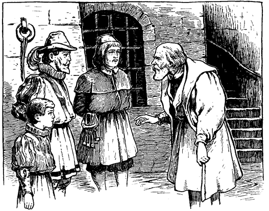Der alte Mann meinte dagegen:
»Wenn's weiter nichts ist! Ich würde ihn lebendig rösten lassen, so wahr ich ein rechtschaffener Mann bin.«
Der Wärter schlug ein wieherndes Gelächter an und sagte:
»Bring doch Herrn Hugo diesen Rat bei. Das kann einen lustigen Spaß absetzen. Er wird dir's sicherlich danken.«
Dann eilte der Wärter in ein anderes Gemach und ließ den alten Mann mit den Gefangenen allein. Da fiel der alte Diener vor Henden plötzlich auf die Kniee und flüsterte:
»Dem Himmel sei Dank, daß Ihr wieder gekommen seid, gnädigster Herr! Ich glaubte, Ihr wäret schon seit sieben Jahren tot, und wahrhaftig! da seid Ihr ja noch am Leben. Ich erkannte Euch beim ersten Anblick. Die Verstellung kam mich schwer an. Ich konnte mich kaum der Tränen erwehren, als ich Euch mitten unter diesem Gelichter sah. Ich bin alt und arm, Herr Michael. Aber befehlet, und ich werde hingehen und laut die Wahrheit verkünden, und müßte ich deshalb an den Galgen.«
»Nein«, entgegnete Henden; »das befehle ich nicht und wünsche es auch nicht. Du würdest dich zu grunde richten und mir doch schwerlich helfen können. Aber ich danke dir; du hast mir wieder etwas von meinem verlorenen Glauben an die Menschheit zurückgegeben.«
In der Folge wurde denn auch der alte Diener für Henden und den König von großem Nutzen. Unter dem Vorwande, den Betrüger zu ärgern, kam er oft mehrmals des Tages ins Gefängnis, wobei er immer ein paar Leckerbissen hereinschmuggelte und die neuesten Nachrichten brachte. Die guten Bissen behielt Henden für den König zurück, denn ohne diese wäre der arme Junge bei der elenden, rauhen Kost schwerlich durchgekommen. Indes durfte sich der alte Andreas nie lange aufhalten, um nicht Verdacht zu erregen. Aber die Zeit genügte ihm doch, seinem früheren jungen Herrn alles für ihn Wissenswerte mitzuteilen. Natürlich dämpfte er dabei seine Stimme. Zwischen hinein stieß er grobe Schmähungen und Lästerungen gegen Henden aus und wahrte so den Schein gegenüber den andern Insassen.
So erfuhr Henden auch Näheres über das, was in seiner Abwesenheit in Hendenhall sich ereignet hatte. Arthur war seit sechs Jahren tot. Dieser Verlust und der Mangel jeglicher Nachricht über Michael zehrte an seines Vaters Gesundheit. Als er fühlte, daß es mit ihm bergab ging, wünschte er Hugo und Edith vor seinem Hinscheiden noch vereinigt zu sehen. Aber Edith bat um Aufschub und hoffte immer noch auf die Rückkehr Michaels. Dann kam der Brief, welcher meldete, Michael sei in einer Schlacht gefallen. Dieser Schlag warf den alten Herrn vollends nieder, der jetzt noch mehr zur Verbindung drängte. Aber Edith gelang es, noch einen Monat Frist zu erlangen, dann noch einen zweiten und schließlich noch einen dritten Monat. Erst jetzt, vor dem Totenbette des Vaters, fand die Heirat statt. Sie erwies sich nicht als glücklich. Man flüsterte sich zu, kurz nach der Hochzeit habe Edith unter den Papieren ihres Gemahls mehrere Blätter gefunden, worauf in den verstellten Schriftzügen ihres Mannes verschiedene Bruchstücke des verhängnisvollen Briefes aufgesetzt waren. Darauf hatte Edith ihrem Gemahl den Vorwurf gemacht, er habe die Heirat mit unredlichen, gemeinen Mitteln zustande gebracht und zugleich den Tod ihres Vormundes beschleunigt. Von dieser Zeit an soll Edith keine frohe Stunde mehr gehabt haben. Man erzählte sich viel von harter und grausamer Behandlung Ediths durch ihren Gemahl. Nach dem Tode des Vaters habe Hugo seine Verstellung ohne Scheu abgeworfen und sei ein unbarmherziger Herr gegen alle geworden, die von ihm abhingen.
Der alte Andreas berichtete auch von Sachen, die besonders den König in lebhafte Spannung versetzten. Der treue Diener sagte nämlich:
»Es geht ein Gerücht, der König sei irrsinnig. Aber es heißt auch, es sei unter Todesstrafe verboten, davon zu sprechen.«
Eduard staunte den Mann an und erwiderte:
»Der König ist nicht irrsinnig, guter Mann, und du kannst etwas besseres tun, als dich mit solchem Geschwätz abzugeben.«
»Was will der Knabe damit sagen?« fragte Andreas, den dieser unerwartete Angriff verblüffte. Henden winkte ihm ab, worauf der Diener fortfuhr:
»Der verstorbene König ist vor zwei Tagen – am 16. dieses Monats – in Windsor beigesetzt worden. Der neue König wird am 20. in Westminster gekrönt werden.«
»Mich deucht, sie müssen ihn doch erst haben«, murmelte Eduard. Dann aber fügte er vertrauensvoll hinzu: »Aber sie werden schon dafür sorgen – und ich auch.«
»Herr Hugo geht auch zur Krönung«, fuhr der alte Mann fort, »und zwar mit großen Erwartungen. Er trägt sich nämlich mit der Hoffnung, als Reichsbaron zurückzukommen, denn er steht beim Lord Protektor hoch in Gunst.«
»Bei welchem Lord Protektor?« fragte Eduard.
»Bei Sr. Gnaden, dem Herzog von Somerset.«
»Welchem Herzog von Somerset?«
»Ei, es gibt doch nur einen: der Graf von Hertford.«
Der König fragte scharf:
»Seit wann ist er Herzog und Lord Protektor?«
»Seit Neujahr.«
»Und bitte, wer erhob ihn zu diesem Rang?«
»Er selbst und der Staatsrat unter Beistimmung des Königs.«
»Des Königs!« rief er. »Welches Königs?«
»Welches Königs? Ist das eine Frage! Da wir nur einen haben, so ist es doch klar: Sr. Majestät, des Königs Eduard des Sechsten, den Gott erhalte! Er ist ein lieber und gnädiger kleiner Herrscher. Das muß man sagen. Ob er nun irrsinnig ist oder nicht – und man sagt, er bessere sich täglich – sein Lob ist jedenfalls auf aller Lippen. Alle segnen ihn und beten, daß er recht lange über England herrschen möge. Schon gleich zu Anfang zeigte er seine Herzensgüte, indem er den Herzog von Norfolk begnadigte. Jetzt ist er beständig daran, die Härten und Grausamkeiten der Gesetze zu mildern, welche das Volk beinahe zur Verzweiflung brachten.«
Eduard war stumm vor Überraschung und versank dann in tiefes Nachdenken. Er wunderte sich, ob der kleine »irrsinnige« König jener Bettlerjunge sei, den er damals mit sich in den Palast genommen habe. Es kam ihm aber nicht wahrscheinlich vor. Sicherlich mußten doch seine Unwissenheit und sein ganzes Benehmen ihn verraten haben. Oder sollte der Hof irgend einen Sprößling des Adels auf den Thron gesetzt haben? Nein, das würde sein Onkel nicht zugeben. Ein solches Beginnen hätte er im Keime zu ersticken gewußt. Je mehr der Knabe nachdachte, desto geheimnisvoller erschien ihm die Sache. O könnte er wieder nach London zurück und mit einem Schlage das ganze Wirrnis zu glücklichem Ende führen!
Umsonst verschwendete Henden all seine Trostgründe an den jungen König, dem jetzt seine Haft immer unerträglicher wurde.
Besser indes gelang es zwei Frauen, die mit Ketten beladen in seiner Nähe weilten. Durch ihre sanften Ermahnungen gewann er Frieden und Ergebung in sein Schicksal. Er war ihnen sehr dankbar dafür und empfand ihre Gegenwart immer wohltuender. Er fragte sie, warum sie eingekerkert wären. Als sie erklärten, sie seien Baptisten Baptisten nennen sich diejenigen christlichen Sekten, welche die Kindertaufe verwerfen und nur Erwachsene taufen. Indes sind sie nicht mit den Wiedertäufern zu verwechseln. Sie stammen aus England, wo sie im Jahre 1618 als besondere Kirchengemeinschaft auftraten. Heute zählen sie etwa 2 Millionen Anhänger., lächelte er nur und meinte:
»Ist denn das ein solches Vergehen? Schade nur, daß ich nicht frei bin. Ich würde euch bald erlösen.«
Sie gaben keine Antwort. Ein gewisses Etwas in ihren Mienen machte ihn stutzig. Er fuhr eifrig fort:
»Ihr sprecht ja nicht! Erwartet euch etwa noch eine andere Strafe? Bitte, sagt es mir und fürchtet euch nicht.«
Sie versuchten dem Gespräch eine andere Richtung zu geben. Aber sein Interesse war nun einmal rege geworden, und er fragte weiter:
»Wollen sie euch peitschen? Ach nein, so grausam werden sie nicht sein! Nicht wahr, sie werden euch nicht peitschen?«
Die Frauen wurden verwirrt und bekümmert. Offenbar waren sie um eine Antwort verlegen. Endlich sprach eine gerührt:
»O du brichst uns noch das Herz, guter Knabe. Gott wird uns beistehen, daß wir unser Schicksal als Christen ertragen.«
»Also doch«, unterbrach sie der König, »sie wollen euch doch peitschen, diese hartherzigen Seelen! Aber ach, ihr müßt nicht weinen; ich kann es nicht ertragen. Haltet euch aufrecht. Wenn meine Zeit gekommen ist, werde ich euch vor dieser Grausamkeit schützen. Ja, das werde ich ganz gewiß!«
Als der König am nächsten Morgen erwachte, waren die beiden Frauen fort.
»Ah, man hat sie befreit!« rief er fröhlich. »Schade nur, daß sie mich nicht mehr trösten können.«
Jede von den beiden Frauen hatte ein Stück Band als Andenken an seine Kleidung geheftet. Diese Bänder wollte er immer in Ehren halten, zur Erinnerung an die braven Frauen, für die er später zu sorgen sich vornahm.
Eben kam der Wärter mit Gehilfen herein und ließ die Gefangenen in den Gefängnishof führen. Der König war überglücklich. Ach, wie herrlich mußte es sein, wieder einmal den blauen Himmel zu sehen und die frische Luft zu atmen!
Der Hof bildete ein Viereck und war mit Steinen gepflastert. Die Gefangenen betraten ihn durch einen massiven Torbogen und wurden dann in Reihen aufgestellt, mit dem Rücken gegen die Mauer. Vor ihnen ward ein Strick gespannt, bei welchem Beamte und Wärter standen. Es war ein frostiger, bewölkter Morgen. Während der Nacht war ein leichter Schnee gefallen und hatte alles in eine weiße Decke gehüllt. Ein Winterwind wirbelte noch einzelne Flocken umher.
Mitten im Hofe standen zwei Frauen an Pfähle gebunden. Mit einem Blick ersah der König, daß es seine beiden guten Freundinnen waren. Ihm schauderte, und er sagte sich: »Ach, sie sind also doch nicht frei, wie ich dachte. Sollte man es wohl glauben, daß solche brave Leute in England gepeitscht werden! Es wäre eine Schande selbst für ein Land der Heiden! Sie werden gezüchtigt, und ich, den sie getröstet und so freundlich behandelt haben, muß ihrer Schmach zusehen. Ich, der Höchste in England, der oberste Gesetzgeber, stehe ohnmächtig da. Aber es kommt ein Tag, wo alles das gesühnt werden soll.«
Ein großes Tor sprang auf, und eine Menge Bürger strömten herein. Sie scharten sich um die beiden Frauen und verbargen sie so vor den Augen des Königs. Dann kam ein Geistlicher und schritt durch die Menge hindurch. Im Mittelpunkte des Kreises, wo die Frauen standen, wurden jetzt offenbar Fragen und Antworten gewechselt. Aber deutlich zu verstehen war nichts. Dann gab es allerlei Vorbereitungen, denn Leute liefen hin und her. Aber allmählich trat tiefe Stille ein.
Auf einen Befehl hin traten jetzt die Zuschauer auseinander, so daß die Mitte frei blieb. Nun erblickte der König ein Schauspiel, das ihm das Mark in den Knochen erstarren ließ. Reisigbündel waren um die beiden Frauen herum aufgehäuft. Ein Mann kniete davor und legte Feuer an das Holz.
Die Frauen senkten ihre Häupter und bedeckten sich das Gesicht mit den Händen. Die fahlen Flammen begannen am Reisig hinauf zu züngeln und zu flackern und knistern. Der Wind wirbelte den blauen Rauch herum und trug ihn fort. Der Geistliche erhob die Hände zum Gebet, wurde aber jäh unterbrochen von zwei jungen Mädchen. Diese kamen mit herzdurchdringendem Geschrei herbei geflogen und warfen sich den beiden Frauen am Pfahle an die Brust. Sofort wurden sie von den Häschern fortgerissen und festgehalten. Eine aber machte sich los und erklärte, sie wolle mit ihrer Mutter sterben. Bevor man sie hindern konnte, hing sie wieder am Halse der einen Frau. Diesmal hatten ihre Kleider schon Feuer gefangen, als sie wieder fortgerissen wurde. Zwei Männer hielten sie fest, rissen ab, was von ihren Gewändern brannte, und schleuderten es weg. Sie aber rang fortwährend und suchte loszukommen. Sie bat und flehte, man möge sie doch sterben lassen, sie sei sonst ganz allein in der Welt. Beide Mädchen jammerten unaufhörlich und wanden sich verzweifelt unter dem Griffe der Häscher. Aber ihr Klagen wurde plötzlich übertönt von einem herzzerreißenden Todesschrei.
Der König blickte von den Mädchen weg nach dem Pfahle hin, aber nur eine Sekunde. Dann wandte er sich ab und lehnte sein aschfarbenes Gesicht an die Mauer. Er wagte nicht mehr aufzuschauen. »Wollte Gott, ich wäre blind!« dachte er. »Was ich gesehen habe in diesem einzigen kurzen Augenblick, wird meinem Gedächtnis nie entschwinden. Tag und Nacht wird es mir vor Augen schweben, bis zu meiner Todesstunde. Ach, hätte ich es doch nicht sehen müssen!«
Henden beobachtete den König. »Ich glaube, er fängt an zu gesunden. Er hat sich verändert und wird sanfter. Wäre er noch, wie er früher war, so würde er wahrscheinlich auf die Henkersknechte losgestürzt sein und befohlen haben, die Frauen sofort zu entfesseln. Ich will nur hoffen, daß seine Besserung fortschreitet und er bald wieder ganz gesund wird. Gott gebe es!«
Am selben Tage wurden mehrere neue Gefangene eingebracht, sie sollten hier nur die Nacht über bleiben und dann an verschiedene andere Orte hingeschafft werden. Der König unterhielt sich mit ihnen, und was sie erzählten, drang ihm tief zu Herzen. Eine arme, halb närrische Frau war darunter, welche einem Weber ein oder zwei Ellen Tuch entwendet hatte, und dafür gehängt werden sollte. Ein Mann hatte in einem königlichen Park einen Rehbock erlegt und mußte dafür ebenfalls in den Tod gehen. Ein Kaufmannslehrling hatte eines Abends eine Hacke auf der Straße gefunden und mit heim genommen, in der Meinung, es sei sein gutes Recht. Aber der Gerichtshof war anderer Ansicht gewesen und wollte auch ihn Freund Hein übergeben.
Der König war aufgebracht über solche Unmenschlichkeit und hätte am liebsten Tür und Tor gesprengt, um mit Henden nach London zu fliehen und diese Unglücklichen vom Tode zu erretten.
Ferner war unter den Gefangenen ein alter Anwalt Diebstahl über den Wert eines Schillings wurde seit Heinrich I. mit dem Tode gebüßt. Ein merkwürdiges altes Buch » The English Rogue« (Der englische Spitzbube) setzt die Grenze auf 1/8 Schillinge fest. Die erwähnten Fälle entsprechen Tatsachen. Der fragliche Anwalt hieß Wilhelm Prynne. Seine Schuld und Strafe hat Mark Twain vollkommen richtig geschildert. mit charaktervollen Zügen und unerschrockener Miene. Dieser hatte vor drei Jahren eine öffentliche Anklageschrift gegen den Lordkanzler herausgegeben. Darin hatte er ihn der Ungerechtigkeit beschuldigt. Hierfür wurde er mit dem Verlust eines Ohres und 3000 Pfund Strafe gebüßt und aus der Liste der Anwälte gestrichen. Später wiederholte er seine Anklage. Jetzt verlor er, was er noch an Ohren übrig hatte, und mußte weitere 5000 Pfund bezahlen. Überdies erhielt er Zuchthaus auf Lebenszeit und wurde auf beiden Wangen gebrandmarkt.
»Das sind meine Ehrenzeichen«, sagte er, schüttelte sein graues Haar zurück und zeigte die verstümmelten Überreste dessen, was einst seine Ohren gewesen waren.
Dem König wurden die Augen vor Mitleid feucht. Er sprach zu ihm:
»Keiner will an mich glauben, und du auch nicht. Aber das tut nichts zur Sache. Bevor ein Monat vergeht, sollst du frei sein. Noch mehr: die Paragraphen, die dich also geschändet haben und England entehren, sollen aus den Gesetzesbüchern verschwinden. Es ist manches in der Welt unklug eingerichtet. Die Könige sollten erst draußen im Leben in die Schule gehen, dann würden die Gesetze bald von ihrer Strenge verlieren.«
Henden war indessen seiner erzwungenen Untätigkeit überdrüssig geworden. Er vernahm daher mit großer Befriedigung, daß der Tag seiner Aburteilung erschienen sei. Mochte kommen, was da wollte, wenn er nur nicht länger gefangen blieb. Vor Gericht ward er als lümmelhafter Landstreicher geschildert, was ihn nicht gerade erbaute. Schließlich verurteilte man ihn wegen Hausfriedensbruch und Tätlichkeiten, zwei Stunden am Pranger zu stehen und im Stock zu liegen. Von seinen Ansprüchen auf Hendenhall wurde mit keiner Silbe Erwähnung getan.
Er drohte und raste auf dem Weg zur Richtstätte, was ihm weiter nichts als Püffe und grobe Schimpfworte eintrug.
Eine dichtgescharte, lärmende Menge folgte dem Verurteilten, so daß es dem König nicht gelang, bis zu ihm vorzudringen. Er wäre selbst vor Gericht beinahe bestraft worden, weil er in solcher Gesellschaft befunden wurde. Aber schließlich ließ man ihn in anbetracht seiner Jugend mit einem strengen Verweis gehen.
Als die Menge Halt machte, glückte es endlich dem König, sich mit vieler Mühe hindurch zu winden und seinen Beschützer in Sicht zu bekommen. Da lag sein armer Gefolgsmann in den Stock gespannt. Ein höhnender, gaffender, gemeiner Pöbel umgab ihn, ihn, den obersten Diener des Königs von England. Eduard hatte zwar den Richterspruch vernommen, aber nicht gewußt, was er eigentlich bedeute. Jetzt röteten sich seine Wangen in edlem Zorn. Als aber erst ein faules Ei daher geflogen kam und an Hendens Wange platzte, worüber die Gaffer vor Freude brüllten, da konnte er sich nicht länger bemeistern. Er sprang vorwärts und rief:
»Schämt euch! Das ist mein Diener. Laßt ihn frei! Ich bin ...«
»Ach, seid doch stille!« rief Henden in großer Angst, »Ihr werdet Euch noch zu grunde richten. Gebt nicht acht auf ihn, Herr, er ist nicht bei Verstand.«
»Erspare dir diese Mühe, Mann. Ich weiß schon, was ich zu tun habe.«
Damit wandte sich der Vollstreckungsbeamte an einen Untergebenen und sagte:
»Gib dem Schlingel einen Peitschenhieb oder zwei, daß er fürder weiß, wie er sich zu benehmen hat.«
»Mit einem halben Dutzend wird ihm besser gedient sein!« rief Herr Hugo. Er war in diesem Augenblick herbeigeritten, um sich an dem Schauspiel zu weiden.
Der König ward ergriffen. Er wehrte sich nicht einmal, so versteinert war er bei dem bloßen Gedanken, man könnte seine geheiligte Person durch Hiebe entweihen. Schon einmal war ein englischer König gepeitscht worden. Sollte ein zweites so schmachvolles Blatt die Geschichte Englands entehren? Es blieb ihm nur die Wahl, entweder um Verzeihung zu bitten oder sich der Strafe zu unterziehen. Welches von beiden war weniger schändlich? Er war kurz entschlossen. Schläge konnte ein König vielleicht bekommen, aber um Erlassung derselben betteln? Nein, das gab's nicht.
Aber es kam nicht dazu. Michael Henden war nicht umsonst sein Beschützer.
»Laßt das Kind in Ruhe, ihr herzlosen Hunde!« rief er, »seht ihr denn nicht, wie schwach und gebrechlich er ist? Laßt ihn, ich will seine Strafe auf mich nehmen.«
»Bei meiner Seele, ein guter Einfall! Habt auch schönen Dank dafür!« rief Herr Hugo, während es höhnisch in seinen Augen aufblitzte. »Ja, laßt den kleinen Bettler gehen und gebt dafür dem Kerl da ein Dutzend, aber ein ehrliches, vollgewichtiges Dutzend!«
Der König wollte lebhaft Einspruch erheben. Aber Herr Hugo brachte ihn rasch zum Schweigen, indem er drohte, Michael für jedes Wort des armen Kleinen sechs weitere Hiebe aufzählen zu lassen.
Henden wurde aus dem Stock genommen und sein Rücken bloßgelegt. Während die Streiche fielen, wandte der König sein Gesicht ab und schluchzte laut. Als er sich wieder ein wenig gefaßt hatte, sprach er bei sich: »Du brave, gute Seele, das soll dir nicht vergessen sein! ... aber auch Herr Hugo wird daran denken!« fügte er leidenschaftlich hinzu.
Hendens Opfer erschien ihm um so hochherziger, je länger er darüber nachdachte. »Wer seinen Fürsten vor Wunden und Tod rettet«, meinte er, »der hat schon ein hohes Verdienst. Aber es ist wenig, nichts, ja weniger als nichts im Vergleiche zu dem, was er jetzt für mich getan hat: seinen König vor Schmach und Schande bewahrt!«
Henden ertrug lautlos und mit soldatischem Mut die schweren Hiebe, die auf ihn niedersausten. Dies und seine Hochachtung für den Knaben nötigte schließlich auch den Umstehenden Achtung ab. Das Pfeifen und Zischen hörte vollständig auf, und nur die Peitschenhiebe waren noch hörbar. Auch als Henden von neuem in den Stock gespannt wurde, herrschte gänzliches Schweigen.
Sachte schlich sich der König an Hendens Seite und flüsterte ihm ins Ohr:
»Könige können dich nicht mehr adeln, du Guter, als du dich soeben selbst geadelt hast. Aber ein König kann diesen deinen Adel anderen gegenüber bekräftigen und offenbaren.«
Er hob die Peitsche von der Erde auf, berührte damit leicht Hendens blutende Schultern und lispelte: »Eduard von England kürt dich zum Grafen!«
Henden war bewegt. Tränen drangen ihm in die Augen. Und doch konnte er nur schwer ein Lächeln unterdrücken, wenn er sich die ganze Situation vor Augen stellte. So plötzlich, entblößt und blutend, aus dem gemeinen, niedrigen Stock zu der Alpenhöhe und dem Glanz des Grafenstandes erhoben zu werden, schien ihm der Gipfelpunkt des Komischen.
Er dachte: »Jetzt bin ich ja wahrlich hübsch in Flittergold gehüllt. Vom Schattenritter zum Schattengraf! Weiß Gott, das war ein rascher Flug! Wenn es so weiter geht, sehe ich bald aus, wie ein richtiger Maibaum, über und über mit Bändern und Flitter verziert. Aber wenn auch alles bedeutungslos ist, die Liebe und Dankbarkeit, die es mir verliehen hat, scheint dessen ungeachtet verdienstvoll.«
Herr Hugo hatte genug gesehen. Er wandte sein Pferd und trabte hinweg durch die still sich öffnende Menge. Niemand grüßte ihn; aber auch niemand wagte es, dem Gefangenen ein freundliches Wort der Anerkennung zuzurufen. Aber schon im bloßen Schweigen lag Anerkennung genug. Ein verspäteter Ankömmling indessen hatte von dem vorigen Zwischenfall nichts gesehen. Er wollte den »Betrüger« verhöhnen und ihm eine tote Katze zuschleudern. Aber rasch wurde er ohne viel Worte von den Umstehenden niedergeboxt und fortgewimmelt, worauf noch einmal die frühere tiefe Stille eintrat.
Als Henden seine zwei Stunden abgebüßt hatte, wurde er freigelassen und erhielt die Weisung, aus der Gegend sofort zu verschwinden und sich nicht wieder blicken zu lassen. Sein Schwert erhielt er wieder, und auch die beiden Maulesel wurden ihm zurückgegeben. Er stieg auf und ritt mit dem König davon, während die Menge ihnen schweigend und achtungsvoll Platz machte.
Henden war in Gedanken versunken. Wohin sollte er sich wenden? Was war zu tun? Er mußte irgend einen mächtigen Helfer finden; soviel stand fest. Andernfalls war's um sein Hab und Gut geschehen und er blieb lebenslang ein Betrüger. Aber wo diese Hilfe finden: Das war eine verzwickte Frage. Einen schwachen Anhaltspunkt glaubte er zu haben. Hatte ihm doch der alte Andreas von der Herzensgüte des Königs und seinem Mitleid für die Unglücklichen erzählt. Warum sollte er nicht versuchen, zu ihm zu gelangen und ihn um Gerechtigkeit anflehen? Die Schwierigkeit war nur die: wie sollte ein so phantastisch gekleideter, herabgekommener Kriegsmann Zutritt in den Königspalast erhalten?
»Ach, was!« dachte er, »man muß erst über die Brücke, wenn man sie erreicht hat.« Er war ein alter Haudegen und oft genug in der Klemme gewesen. Ein Ausweg hatte sich aber doch immer wieder gefunden. Ja, er wollte vor allem nach der Hauptstadt. Vielleicht würde seines Vaters alter Freund, Herr Humfried Marlow, ihm Mittel und Wege finden, sein Ziel zu erreichen. Jetzt, da er wenigstens einen vorläufigen Zweck im Auge hatte, hob sich sein Mut wieder. Er blickte auf und sah sich um.
Wie weit sie gekommen waren! Das Dorf lag schon ganz in der Ferne. Der König trottete gemächlich hinter seinem Beschützer drein; auch er schien eifrig nachzudenken. Würde aber auch der Knabe gewillt sein, in die Stadt zurückzukehren, wo er offenbar soviel erduldet hatte? Er mußte sich auf alle Fälle Gewißheit darüber verschaffen. Der Ritter hielt also sein Tier an und rief:
»Ich habe ganz vergessen zu fragen, wohin Ihr reiten wollt. Was befehlt Ihr, mein Fürst?«
»Nach London!«
Verwundert, aber auch erfreut trieb Henden sein Grautier wieder an.
Die ganze Reise ging ohne nennenswerte Begegnung vor sich. Am 19. Februar um 10 Uhr nachts betraten sie wieder die Londoner Brücke und kamen mitten unter eine sich schiebende und drängende Masse von jauchzenden, jubelnden Leuten, deren bierfröhliche Gesichter im Schein der zahllosen Fackeln strahlten.
Plötzlich stürzte der vermodernde Schädel irgend eines früheren Herzogs oder sonstigen Großen des Reiches polternd von seinem hohen Sitz auf dem Torbogen herab. Er fiel Henden auf den Ellbogen und hüpfte zwischen die Füße der Umstehenden hinunter. So vergänglich ist Menschenwerk! Kaum lag der alte König im Grabe, so fielen auch schon die Zieraten, die er mit so vieler Mühe gesammelt und hier oben so hübsch aneinander gereiht hatte, in Trümmer.
Ein Bürger stolperte über diesen Schädel, wobei er mit seinem eigenen Kopfe seinem Vordermanne etwas heftig an die Rippen kam. Dieser wandte sich um und schlug den ersten besten nieder, der ihm griffbereit war. Aber ein guter Bekannter von diesem wollte ihn rächen, und so war im Handumdrehen eine richtige Prügelei im Gange. Das hätte nun weiter nichts geschadet, denn der morgige Krönungstag mußte doch feierlich eingeleitet werden. Für Henden und den König aber hatte es die mißliche Folge, daß beide in dem Wirrwar hoffnungslos voneinander getrennt wurden.
Indes der wahre König, in Lumpen gekleidet und kläglich ernährt, mit den Stromern herumwanderte, mit Dieben und Mördern im Gefängnis saß, und von allen gleicherweise Betrüger gescholten wurde, verbrachte Tom Canty als Scheinkönig eine ganz andere Zeit.
Als wir ihn zuletzt sahen, hatte er schon angefangen, an seiner Würde Geschmack zu finden. Das Königsein gefiel ihm von Tag zu Tag besser; er lebte bald in eitel Freude und Sonnenschein. Seine Furcht verlor sich ganz. Selten nur kam es noch vor, daß er Irrtümer beging und in Verlegenheit geriet. Bald machte sich eine ruhige Sicherheit bei ihm bemerkbar, welche wohltuend auf seine ganze Umgebung wirkte.
Wenn er zu spielen oder zu plaudern wünschte, ließ er Fräulein Elisabeth oder Fräulein Johanna Grey zu sich bitten. Wenn er müde war, so entließ er sie wieder mit natürlicher Anmut und Vertraulichkeit. Es störte ihn auch nicht mehr, wenn die beiden jungen Damen ihm beim Abschied die Hand küßten.
Selbst das zeremonielle Ausziehen und Ankleiden hatte nichts Belästigendes mehr für ihn. Es war vielmehr geeignet, ihn in dem Bewußtsein seiner erhabenen Stellung zu stärken und mit Vertrauen zu erfüllen. Er vermehrte sogar seine Leibwachen auf die doppelte Zahl.
Ja, selbst die langweiligen Staatsratssitzungen und die steifen Audienzen verloren allmählich ihr Schreckliches. Es ergötzte ihn mächtig, wenn die fremden Herrscher ihn durch Gesandte und in Botschaften mit »Bruder« begrüßten.
Der äußere Glanz nahm seine Sinne immer mehr gefangen. Er ließ sich noch weitere Prunkgewänder machen und verdreifachte die Zahl seiner Diener. Schmeichelei ward süße Musik in seinen Ohren. Aber er blieb doch immer gütig und hatte stets ein warmes Herz für alle Unterdrückten. Unermüdlich war sein Krieg gegen ungerechte Gesetze und willkürliche Beamte. Dabei beachtete er keinen Widerstand. Manch einem Grafen oder Herzog, der es wagte, Einwendungen zu erheben, warf er einen Blick zu, der ihn erbeben ließ. Seine königliche »Schwester«, das grimme, fromme Fräulein Maria, machte ihm einst Vorwürfe, daß er so viele Leute begnadige, welche eingekerkert, verbrannt oder gehängt werden sollten. Sie wies darauf hin, daß die Gefängnisse zur Zeit ihres erlauchten Vaters bis zu 60000 Insassen zu gleicher Zeit zählten und während dessen Regierung 72000 Diebe und Räuber hingerichtet worden seien. Da geriet Tom in gerechte Entrüstung. Er befahl ihr, sich in ihre Gemächer zu verfügen und Gott zu bitten, daß er ihr ein menschliches Herz geben möge.
Beunruhigte sich denn aber Tom Canty gar nicht über den verlorenen rechtmäßigen Prinzen, der ihn so gütig aufgenommen und so edelmütig hatte rächen wollen? O ja doch. In den ersten Tagen und Nächten quälte ihn der Gedanke an seinen kleinen Gönner beinahe unaufhörlich, und er sehnte sich auch jetzt noch, den wirklichen Prinzen auf den Thron zu setzen. Aber die Zeit schwand dahin und Eduard kam nicht. Toms Gedanken wurden mehr und mehr anderweitig in Anspruch genommen und schließlich vergaß er beinahe, daß er wider Willen zum Thronräuber geworden war. Kam ihm einmal dieser Gedanke, so erschien er ihm wie ein unwillkommenes Gespenst, dem er tunlichst aus dem Wege ging.
Ebenso vergaß er auch seine arme Mutter und Schwestern. Erst hatte er sich nach ihnen gesehnt, um sie gebangt. Bald aber ließ ihn schon der bloße Gedanke erschaudern, sie möchten eines Tages kommen, in ihren lumpigen Kleidern, ihn mit ihren Küssen verraten und wieder ins alte Elend hinunterziehen. Aber alle diese störenden Gedanken verschwanden nach und nach. Er war zufrieden, sogar glücklich. Wenn aber gelegentlich einmal ihre traurigen, anklagenden Gesichter vor ihm aufstiegen, kam er sich verächtlicher als kriechendes Gewürm vor.
Um Mitternacht des 19. Februar lag Tom Canty in seinem reichen Staatsbett, bewacht von königlichen Vasallen, ein glücklicher Knabe, der mit Sehnsucht dem morgigen Krönungstage entgegenschlummerte.
Zur selben Zeit wurde Eduard, der wahre König, in der lärmenden Menge herumgestoßen. Neugierig sah diese den Arbeitern zu, welche bei der Westminsterkirche ein- und ausströmten, emsig wie Ameisen. Galt es doch, die letzten Vorbereitungen zur Königskrönung zu treffen.
Als Tom Canty am nächsten Morgen erwachte, drangen vieltausendstimmige Hochrufe an sein Ohr. Schwarz wimmelte es vor den Toren des Palastes, soweit das Auge blickte und immer von neuem erbrausten die Huldigungsrufe.
Nicht lange hernach befand sich Tom noch einmal als der gefeierte Tagesheld in herrlichem Geleite auf der Themse. Nach altem Brauche mußte der Königszug vom Turme ausgehen, wohin die Flottille nun steuerte.
Als der Zug dort anlangte, flammte es plötzlich auf der alten Feste an tausend Stellen zugleich auf. Eine betäubende Explosion erdröhnte, daß der Boden weithin zitterte und der ganze Turm zu bersten schien. Und immer und immer wieder donnerten die Feuerschlünde, daß bald das ganze Gebäude in Rauch verhüllt war. Nur die höchste Spitze, der sogenannte Weiße Turm, auf dem unzählige Banner im Winde flatterten, ragte noch sichtbar empor, wie ein hoher Bergesgipfel über dichten Wolkenzügen.
Tom Canty bestieg, in kostbare Gewänder gehüllt, ein edles Prunkpferd, von dem Golddecken beinahe bis auf den Boden hinunterfielen. Toms »Onkel«, der Lord Protektor Somerset, ritt unmittelbar hinter ihm. Die königlichen Wachen in glänzender Rüstung bildeten zu beiden Seiten der Straße Spalier.
Nach dem Protektor folgte ein unabsehbarer Zug von Großen des Reiches mit ihren Vasallen. Ihnen zunächst kamen der Lord Mayor und die Ratsherren in roten Samtgewändern und goldenen Kreuzen auf der Brust. Daran schlossen sich die Vorstände und Mitglieder der einzelnen Zünfte und Innungen mit reichgestickten wogenden Bannern. Als besondere Ehrenwache marschierte auch die altehrwürdige Artilleriegesellschaft im Zuge einher. Sie war zu jener Zeit schon 300 Jahre alt und die einzige militärische Verbindung in England, die, wie auch heute noch, vom Parlament unabhängig war. Es war ein wunderbar schönes Schauspiel, das überall, wo es sich zeigte, begeisterte Jubelrufe weckte.
Als der Zug in die Altstadt kam, empfing Tom ein wahrer Sturm von Willkommsrufen, die ohne allen Zweifel aus aufrichtigem Herzen kamen. Der überglückliche Scheinkönig dankte mit lächelnder Miene und freundlichen Worten. Das Volk war entzückt über die große Herablassung und Güte seines neuen Herrschers.
Am Eingang in eine Hauptstraße begrüßte ein schönes Kind von einer Tribüne herab den jugendlichen Fürsten in einem schwungvollen Gedicht, dessen letzter Vers lautete:
»Willkommen, o König, heißt dich des Volkes Herz!
Willkommen dir bietet die Zunge hell und klar!
Die Hände sich heben, die Herzen himmelwärts:
Mög Gott dich erhalten so glücklich immerdar!«
Ein brausendes, jauchzendes Hurra erscholl, in welchem alles bestätigt lag, was das Kind gesagt hatte. Tom Canty überblickte wonnetrunken die zahllose Menge. Das Schönste auf Erden, schien ihm, sei: König zu sein und der Abgott des Volkes.
Plötzlich bemerkte er zwei von seinen früheren Kameraden vom Unrathof. Der eine von ihnen war einst sein Großadmiral und der andere sein Oberkämmerer gewesen. O wenn sie ihn jetzt erkennen möchten! Welch unsagbares Erstaunen würde sich ihrer bemächtigen. Beinahe hätte er alle Huldigung des Volkes dahingegeben um den einen Triumph, den Anblick der vor Verwunderung erstarrten Gesichter seiner einstigen Spielgefährten. Aber er mußte sich bezähmen und verleugnen, denn es lag doch zuviel auf dem Spiele. Er wandte also das Gesicht ab und ließ die beiden Burschen weiter jauchzen und jubeln.
Alle paar Augenblicke erhob sich der Ruf: »Eine Gabe, eine Gabe!« Dann warf Tom jedesmal eine Handvoll neugeprägter, glänzender Münzen unter die Menge.
Am oberen Ende der Gnadenkirchstraße hatte man einen mächtigen Triumphbogen und darunter eine Bühne errichtet, so breit wie die ganze Straße. Auf der Bühne bot sich den Blicken ein historisches lebendes Bild, welches die unmittelbaren Ahnen des Königs darstellte. Da saß Elisabeth von York inmitten einer ungeheueren weißen Rose, deren Blätter künstliche Falbeln an ihrem Kleide bildeten. Neben ihr entstieg Heinrich der Siebente einer mächtigen roten Rose. Die Hände des königlichen Paares lagen ineinander und der Hochzeitsring zeigte sich geflissentlich recht deutlich. Von den beiden Rosen ging ein Stamm aus und reckte sich hinauf bis zu einer Empore, wo wieder eine weiße und eine rote Rose entsproßten, aus denen sich Heinrich der Achte zu erheben schien. An ihn aber lehnte sich Johanna Seymour, die Mutter des neuen Königs. Von diesem Paar ging der Stamm höher hinauf zu einer weiteren Empore. Hier war Eduard der Sechste selbst, in königlicher Majestät thronend, dargestellt.
Das ganze Bild gefiel dem Volke so sehr, daß der laute Beifall die dünne Stimme des Kindes nicht durchdringen ließ, das in wohlklingenden Versen die Darstellung erklären wollte. Aber Tom bedauerte es nicht; dieser wilde Lärm war ihm sichere Musik als jede Poesie. Wohin er auch sein jugendliches Gesicht wandte, erkannte das Volk sogleich eine sprechende Ähnlichkeit mit dem lebenden Bild und stürmische Hochrufe folgten dieser Erkenntnis.
Weiter und weiter bewegte sich der große Zug unter zahllosen Triumphbogen hindurch und an einer raschen Aufeinanderfolge von symbolischen Darstellungen vorbei. Von letzteren brachte jede irgend eine Tugend, ein Talent oder Verdienst des kleinen Herrschers zum Ausdruck. Von allen Häusern herab hingen Flaggen und Fahnen, herrliche Teppiche, kostbare Stoffe und golddurchwirkte Tuche.
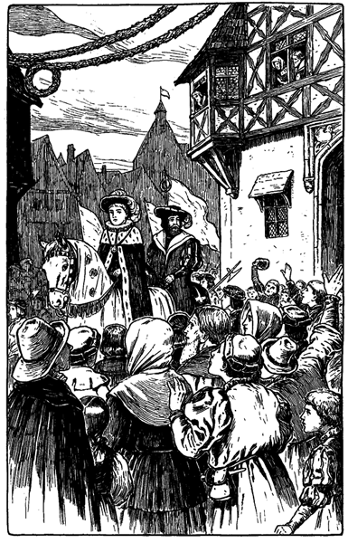»Und all diese wunderbaren Sachen sind für mich, für mich allein da!« murmelte Tom.
Die Wangen des Scheinkönigs röteten sich, seine Augen blitzten und er schwamm in einem Meer von Wonne. Aber mitten in diesem Entzücken, wie er eben eine Handvoll Geld ausstreuen wollte, erblickte er ein blasses, erstauntes Gesicht, das zwischen den Zuschauern hindurch sich nach ihm hinreckte und die Augen starr auf ihn heftete. Totenblässe befiel ihn: er hatte seine Mutter erkannt. Und auf flog seine Hand, wie schützend, vor die Augen, die innere Fläche nach außen: seine altgewohnte Gebärde des Schreckens. In der nächsten Minute hatte die Mutter sich durch die Menge Bahn gebrochen, zwischen den Wachen hindurchgezwängt und war zu ihrem Sohne hingestürzt. Sie umfaßte sein Bein, bedeckte es mit Küssen und rief:
»O mein Kind, mein Liebling!«
Dann schaute sie zu ihm auf mit einem Blick voll unendlicher Liebe und Freude. Aber sofort kam ein Offizier der königlichen Leibwache heran, riß sie fort und schleuderte sie weg, daß sie taumelnd in die Menge zurückflog.
»Ich kenne dich nicht, gute Frau!« war eben noch Toms Lippen entfahren. Aber es drang ihm tief ins Herz, als er sie so roh behandelt sah. Und wie sie sich noch einmal nach ihm umsah, mit dem todestraurigen Blick eines sterbenden Rehes, da überkam ihn ein Gefühl unsagbarer Scham. All sein Stolz, seine Freude waren dahin, verwelkt sein gestohlenes Königtum. So erbärmlich, so elend kam er sich vor, daß er am liebsten allen geborgten Flitter abgeworfen und seiner tief verwundeten Mutter in die Arme geeilt wäre.
Weiter bewegte sich der Zug. Aber Toms Augen waren glanzlos und sein Blick leer geworden. Unstät und gefühllos schweiften seine Augen über die ihm zujauchzende Menge hin. Er hörte und sah nichts mehr. Statt ihn zu erfreuen, ward ihm alles zum Vorwurf, zum Ekel. Sein Herz verzehrte sich durch Gewissensbisse. »Wollte Gott, ich wäre meiner Sklaverei ledig!« seufzte er. Damit war er unbewußt wieder in den Gedankengang der ersten Zeit seiner erzwungenen Größe zurückgekommen.
Wie eine glänzende, glitzernde Schlange wand sich der Zug durch die krummen Straßen der merkwürdigen alten Stadt. Mechanisch und gebeugten Hauptes ritt Tom dahin, immer nur das Bild seines armen lieben Mütterchens vor Augen.
»Eine Gabe, eine Gabe!« rief es von allen Seiten. Aber die Bitten verhallten unerhört.
»Lang lebe Eduard von England!« Donnernd brauste der Ruf durch die erschütterte Luft. Aber der König gab keine Antwort. Nur wie das Tosen einer Brandung aus weiter, weiter Ferne drang es an sein Ohr. Denn lauter als die Jubellaute des Volkes ertönte eine Stimme in seiner Brust und wiederholte die schmachvollen Worte: »Ich kenne dich nicht, Frau.« Unaufhörlich durchbebten ihn diese Worte und trafen seine Seele. So mag die Totenglocke ans Ohr eines Menschen dröhnen und ihn an einen geheimen Verrat erinnern, dem der eben verstorbene Freund zum Opfer fiel.
Bei jeder Biegung der Straße zeigten sich neue Wunder der Überraschung. Dazu blitzten und donnerten die Batterien, frohlockten die Scharen des Volkes und brachten Tom neue Huldigungen dar. Aber er beachtete es nicht und wenn er es einmal bemerkte, so ward es ihm nur zu erneuter Qual.
Angesichts dieser Haltung des Königs ernüchterte sich das Voll allmählich. Etwas wie Besorgnis und Angst machte sich in den Mienen der Zuschauer bemerkbar, und der Jubel begann zu erlahmen. Rasch wurde der Lord Protektor der veränderten Stimmung des Volkes gewahr, und ebenso rasch entdeckte er auch die Ursache. Er ritt vor an die Seite des Königs, verbeugte sich entblößten Hauptes und flüsterte Tom zu:
»Mein Fürst, ermuntert Euch. Das Volk stößt sich an Euerer gebeugten Haltung und Euerer bewölkten Miene und nimmt es als schlimme Vorbedeutung. Laßt Euch raten: verbannt diesen düsteren Traum und zeigt Euer strahlendes Lächeln wieder!«
Zugleich warf der Herzog links und rechts eine Handvoll Münzen unter das Volk und zog sich wieder an seinen Platz zurück. Mechanisch tat der König, wie ihm geheißen war. Aber sein Lächeln war nur matt und kaum bemerkbar; indes konnte das ja nur von den zunächst Stehenden beobachtet werden. Er nickte wieder anmutig und huldvoll mit dem Federhut und warf die Münzen mit königlicher Freigebigkeit hin. Bald schwand denn auch die Besorgnis des Volkes wieder und mächtig wie zuvor erschollen die jubelnden Hochrufe der treuen Untertanen.
Noch einmal indes, als sich der Zug schon seinem Ziele nahte, mußte der Herzog an Toms Seite reiten und ihm Vorstellungen machen:
»O gnädigster Herr, verscheucht doch diesen verhängnisvollen Trübsinn; die Augen der ganzen Welt sind auf Euch gerichtet!«
Dann fügte er ärgerlich hinzu: »Verwünscht, daß diese elende Bettlerin dazwischen kommen mußte! Sie war es doch, welche die Laune Euerer Königlichen Hoheit verdorben hat.«
Tom schaute den Herzog mit glanzlosen Augen an und sagte mit erloschener Stimme:
»Es war meine Mutter!«
»Mein Gott!« stöhnte der Protektor, während er sein Pferd zurücklenkte, »die üble Vorbedeutung hatte also doch recht: er ist wieder irrsinnig geworden!«
Versetzen wir uns um einige Stunden zurück und treten wir um 4 Uhr des Morgens in die Westminster-Abtei. Wir sind nicht einsam, wiewohl es draußen noch dunkel ist. Die von Fackeln erleuchteten Galerien füllen sich schon mit Leuten, die es geduldig über sich bringen, sieben bis acht Stunden hier zu warten, um etwas zu sehen, was sie wohl nur einmal in ihrem Leben schauen können: die Krönung eines Königs.
Ganz London ist schon um 3 Uhr vom Kanonendonner jäh aus dem Schlafe aufgerüttelt worden und wogt nun von allen Seiten nach dem Münster hin.
Träge genug schleppen sich die Stunden dahin. Schon sind die Galerien vollgepfropft. Das können wir deutlich bei dem unbestimmten Licht erkennen. Nur das geräumige nordische Transept ist noch leer und harrt auf die Großen Englands. Inmitten des Chores erhebt sich der Königsthron. Vier Stufen führen zu ihm hinauf. Auf dem Thronsitz liegt ein roher flacher Stein, der berühmte Stein von Scone, worauf seit vielen Menschenaltern die schottischen Könige gekrönt wurden. So wurde er mit der Zeit ehrwürdig genug, um auch für englische Herrscher dem nämlichen Zwecke zu dienen. Thron und Fußschemel waren mit Goldstoff bedeckt.
Stille herrscht in den mächtigen Räumen, die Fackeln leuchten nur düster. Ermüdend langsam schleicht die Zeit dahin. Nach und nach bricht das Tageslicht durch die hohen Bogenfenster. Die Fackeln werden ausgelöscht und ein sanftes Morgenrot durchflutet die weiten Hallen. Deutlich erkennt man jetzt die einzelnen Teile der Kirche im rosigen Morgenschimmer.
Um 7 Uhr kommt Leben in das tiefe Schweigen. Mit dem Glockenschlage betritt die Gemahlin des ersten Reichsbarons das Transept, gekleidet wie Salomo in seiner Pracht. Sie wird von einem in Seide und Samt gehüllten Beamten an ihren Platz geleitet, während ein anderer die lange Schleppe der Dame aufhebt und ihr nachträgt. Dann stellt er der Dame einen Schemel vor die Füße und legt ihre kleine Krone an eine Stelle, wo sie dieselbe bequem erreichen kann, wenn die gleichzeitige Krönung des Adels stattfinden wird.
Jetzt strömen auch alle anderen Damen des Hochadels herein und werden ebenso zu ihren Sitzen geleitet. Nun gibt es für einige Zeit genug zu schauen. Dann aber tritt wieder Stille ein. Die Plätze der Damen im Transept sind alle besetzt. Wie eine diamantenblitzende Milchstraße erstrahlt es da vorne. Jedes Alter ist hier vertreten: braune, runzelige, weißhaarige Matronen, die sich noch an die Krönung Richards des Dritten und die damaligen bewegten Tage erinnern können; dann wieder blendend schöne Damen im blühendsten Alter; sanfte, liebenswürdige Mädchen mit glänzenden Augen und frischer Gesichtsfarbe, die kaum die glückliche Stunde erwarten können, da sie zum erstenmal ihr Krönchen sich aufsetzen dürfen. Das Haar aller dieser Damen hat die künstlerische Hand der Zofe so geordnet, daß es bequem die kleine Krone tragen kann.
Aber die Juwelenpracht kommt erst recht zur Geltung, als um 9 Uhr die letzten leichten Wölkchen am Himmel sich zerstreuen und ein schimmerndes Meer von Sonnenschein sich in alle Ecken der Kirche ergießt. Jetzt blitzen all die kostbaren Kleinodien in blendendem buntfarbigem Feuer. Ein staunendes Ah! der Überraschung und Entzückung durchfährt wie ein elektrischer Funke die weiten Galerien.
Nun erscheint ein Sondergesandter aus dem fernen Osten zugleich mit der Schar der fremden Botschafter und tritt ins Sonnenlicht. Der Atem stockt uns beinahe und die Augen schmerzen bei diesem Anblick. Von Kopf bis zu Fuß ist der Orientale mit Brillanten übersät. Die geringste Bewegung, die er macht, ruft ein neues vielfarbiges tanzendes Flirren und Funkeln hervor.
Wieder vergehen ein, zwei Stunden, dann dröhnt es gewaltig von Kanonendonner und verkündet das Nahen des Königs und seines Gefolges. Nicht lange währt es, und eine neue Flut von herrlich gekleideten Edelleuten strömt herein. Es sind die Großen des Reiches in ihren Prunkgewändern.
Auf den Galerien wird es lebendig. Aller Augen richten sich auf die Herzoge, Grafen und Barone da unten, von denen viele geschichtliche Bedeutung erlangt haben. Der König selbst erscheint noch nicht, da er vorerst umgekleidet werden muß. Alle übrigen haben unterdessen Platz genommen. Fürwahr! ein herrlicher Anblick ist es, die ganze große Versammlung vollständig zu sehen!
Zuletzt erscheinen die Kirchenfürsten mit Mitra und Stab. Sie schreiten würdevoll nach dem Chor und stellen sich dort auf. Ihnen folgen der Lord Protektor und andere hohe Staatsbeamte, begleitet von einer Abteilung der königlichen Wachen. Nun trat wieder eine Pause ein. Dann ward ein Zeichen gegeben und plötzlich durchbrauste rauschende Musik die lauschenden Hallen.
Tom Canty, in ein langes goldenes Gewand gekleidet, erschien an einer Tür und betrat den Chor. Die ganze Versammlung erhob sich von ihren Sitzen, und die Krönungsfeierlichkeiten begannen.
Ein Chorgesang ward angestimmt und Tom langsam zum Throne geleitet. Unter lautloser Stille der Zuschauer wickelten sich die Zeremonien ab. Tom aber wurde blasser und bleicher, je näher der Krönungsakt heranrückte. Ein tiefes Weh preßte ihm das reuevolle Herz zusammen.
Die Schlußhandlung kam. Der Erzbischof von Canterbury hob die Königskrone vom Kissen auf und hielt sie über das Haupt des zitternden Thronräubers. Im nämlichen Augenblick durchfuhr ein buntschillernder Blitz das geräumige Transept. Der ganze Hochadel ergriff zu gleicher Zeit seine Krönchen und setzte sich dieselben aufs Haupt.
Die tiefste Stille herrschte im Münster. In diesem Augenblick höchster Spannung erschien eine sonderbare Gestalt inmitten der Kirche und eilte durch das Mittelschiff dem Chore zu. Es war ein Knabe, barhäuptig, schlecht beschuht und in grobe Lumpen gekleidet, die in Fetzen herabhingen. Vor dem Chor angelangt, hob er seine Hand empor mit einer Feierlichkeit, welche zu seinem beschmutzten, elenden Äußeren nicht recht paßte, und rief warnend:
»Ich verbiete euch, die Krone Englands auf das Haupt eines Thronräubers zu setzen. Ich bin der König!«
Sofort wurde der kecke Eindringling von mehreren Händen gepackt. Aber ehe weiter etwas geschehen konnte, stieg Tom in seinen königlichen Gewändern vom Throne herab, trat rasch vorwärts und rief:
»Lasset ihn los und waget nicht, ihn zu berühren. Er ist der König!«
Erstaunen und Entsetzen ergriffen die Menge. Alles erhob sich und starrte verblüfft nach dem Chore. Niemand wußte, ob er seinen Sinnen trauen könne, ob er wache oder träume. Der Lord Protektor war ebenso überrascht wie alle anderen. Aber er faßte sich schnell und rief mit befehlender Stimme:
»Achtet nicht auf Se. Majestät! Seine Krankheit ist wieder über ihn gekommen. Ergreift den kleinen Vagabunden!«
Ohne Zweifel wäre man seinem Befehle nachgekommen, aber Tom stampfte mit seinem Fuß und drohte:
»Bei euerem Leben, rührt ihn nicht an! Er ist der König!«
Die ausgestreckten Hände zogen sich zurück. Eine Art Lähmung befiel die Anwesenden. Niemand bewegte sich, niemand äußerte ein Wort. Keiner wußte, was er sagen, was er tun sollte. Ein solcher Fall war noch nicht dagewesen. Während alle sich mühten, die Sachlage richtig zu erfassen, schritt der Bettlerjunge ruhig und in stolzer Haltung vorwärts und betrat den Chor, ohne daß ihn jemand zu hindern wagte.
Mit glückstrahlender Miene eilte Tom auf ihn zu, fiel vor ihm auf die Kniee und sprach:
»O mein König, laßt den armen Tom Canty den ersten sein, der Euch Treue schwört und bittet: setzet Euch Euere Krone auf und tretet wieder ein in Euere Rechte!«
Der Lord Protektor schaute stirnrunzelnd auf den frechen Eindringling. Aber rasch wichen die Falten von seiner Stirn und machten einem Ausdruck höchsten Staunens Platz. Dasselbe ging bei den übrigen hohen Beamten vor. Sie blickten einander in stummer Verblüffung an und traten beinahe unbewußt einen Schritt zurück. Der Gedanke aller war der nämliche: »Was für eine ganz auffallende Ähnlichkeit!«
Der Lord Protektor dachte einen Augenblick nach und sagte dann mit zurückhaltender Achtung:
»Erlaubt mir, Herr, einige Fragen an Euch zu stellen.«
»Ich werde sie beantworten, mein Lord.«
Nun richtete der Herzog allerlei Fragen an ihn, über den Hof, den verstorbenen König und die Prinzessinnen. Der Knabe beantwortete alle richtig und ohne jedes Zaudern. Er beschrieb die Staatsgemächer im Palaste, die Gemächer des Königs und die des bisherigen Kronprinzen.
Er war sonderbar, nicht zu begreifen. Es konnte nicht mit rechten Dingen zugehen. Alle sagten sich das, die es hörten. Die Sache schien eine Wendung zu gunsten des kleinen Bettlers zu nehmen, als plötzlich der Lord Protektor den Kopf schüttelte und sprach:
»Das ist freilich ganz wunderbar. Aber unser König kann alle diese Fragen auch beantworten.«
Diese Bemerkung betrübte Tom sehr und seine Hoffnung sank.
»Es sind also immer noch keine Beweise«, fuhr der Protektor fort.
Eine Pause peinlicher Erwartung folgte. Toms Ansehen war erschüttert und die Ansprüche des anderen erschienen immer noch nicht stichhaltig. Am ärgerlichsten schien der Protektor selbst. Er dachte für sich: »Es ist gefährlich für den Staat und für uns alle, wenn wir dieses verhängnisvolle Rätsel ungelöst lassen. Es könnte einen Zwiespalt im Volke erregen und den Thron untergraben«. Er wandte sich um und befahl:
»Herr Tuner, verhaftet diesen ... Nein, wartet noch!«
Sein Gesicht erhellte sich plötzlich. Ein erlösender Gedanke war ihm gekommen. Er fragte den zerlumpten Thronkandidaten plötzlich:
»Wo liegt das große Kronsiegel? Beantwortet mir dies, und das Rätsel ist gelöst. Denn diese Frage kann nur der wahre König beantworten.«
Das war ein glücklicher Einfall. Ja, niemand als der wahre Thronbewerber konnte dies schwierige Rätsel lösen. Wenn auch der freche kleine Eindringling seine Lektion gut eingelernt hatte, an dieser Frage mußte er scheitern, denn sein Lehrer selbst könnte sie nicht beantworten. Neugierige, spöttische und selbst boshafte Blicke richteten sich auf den zerlumpten Kleinen, der nun wohl in Verlegenheit geraten mußte. Aber nein, der Knabe schaute so vertrauensvoll drein wie immer, von Anfang an, und erwiderte:
»Das Rätsel ist gar nicht schwer zu lösen.«
Damit wandte er sich um und sagte mit der natürlichen, sicheren Ruhe eines, der zu befehlen gewöhnt ist:
»Mein Lord St. John, geht doch in mein Privatgemach im Palast. Niemand kennt sich ja dort so gut aus, wie Ihr. In der linken Zimmerecke gegenüber der Tür, die sich nach dem Vorzimmer öffnet, werdet Ihr an der Mauer einen goldenen Nagelkopf finden. Drückt darauf und der Deckel eines kleinen Geheimfaches wird aufspringen. Niemand weiß etwas davon, außer mir und dem verschwiegenen Handwerker, der mir das Fach machte. Das erste, was Euch darin vor die Augen kommt, wird das große Siegel sein. Bringt es hieher.«
Alle verwunderten sich über die Rede und mehr noch darüber, wie der kleine Bettler ohne jedes Zögern mit sicherem Blick diesen Hofbeamten herausfand. Dazu hatte er ihn mit einem so überzeugend ruhigen Ton angeredet, als wäre ihm der Lord Zeit seines Lebens bekannt gewesen. Der Reichsbaron war so verdutzt, daß er beinahe gehorcht hätte. Er machte sogar schon eine Bewegung, als wollte er gehen. Aber er besann sich noch rechtzeitig und nahm wieder seine ruhige Haltung an, als wäre er gar nicht angesprochen worden. Tom Canty schaute ihn an und sagte scharf:
»Was zögert Ihr? Habt Ihr den Befehl des Königs nicht gehört? Geht!«
Lord St. John entfernte sich mit einer tiefen, aber doch zurückhaltenden Verbeugung. Er machte sie auch nicht direkt vor Tom, sondern verteilte sie zwischen beiden Thronbewerbern. Es schien klar, daß er eine neutrale Haltung einzunehmen begann.
Nun machte sich unter den zurückgebliebenen Höflingen eine leise, kaum bemerkbare Bewegung geltend. Ganz langsam löste sich die glänzende Gruppe, die um Tom geschart war und zog sich in die Nähe des neuen Thronkandidaten, so daß Tom allmählich fast ganz allein dastand. Auch die wenigen, die noch zauderten, verzogen sich endlich und traten zur Mehrheit über. Schließlich stand Tom in all seinem Glanz und seinen Juwelen ganz verlassen da.
Lord St. John kehrte zurück. So groß war die allgemeine Spannung, daß selbst das leise Gemurmel verstummte, als man ihn das Mittelschiff heraufkommen sah. Atemlose Stille herrschte. Man hörte nichts als seinen hallenden Tritt. Er betrat den Chor, hielt einen Augenblick inne, schritt dann auf Tom zu und sagte mit tiefer Verbeugung:
»Majestät, das Siegel ist nicht dort.«
Nicht schneller weicht der Pöbel einem Pestkranken aus, als die Höflinge blaß und erschreckt von dem kleinen Bettler wichen. Im nächsten Augenblick stand er wieder allein da, eine Zielscheibe argwöhnischer, zorniger Blicke.
»Werft den Bettler auf die Straße und peitscht ihn durch die Stadt!« rief der Lord Protektor.
Offiziere der Wache sprangen vor, aber Tom winkte ihnen energisch ab und sagte:
»Zurück! Wer ihn auch anrührt, hat sein Leben verwirkt!«
Der Lord Protektor war baff. Er sagte zu Lord St. John:
»Suchtet Ihr auch genau? Aber das brauche ich doch nicht zu fragen. Die Sache geht über allen Begriff. Kleinigkeiten mögen ja abhanden kommen, aber ein gewichtiges, großes Ding wie das Siegel Englands kann nicht einfach spurlos verschwinden. So eine massige goldene Platte ...«
Mit strahlenden Augen trat Tom einen Schritt vorwärts und rief:
»Halt! das genügt. War sie rund und dick? Waren Buchstaben und Devisen darauf eingegraben? Ja? O nun weiß ich, wo dieses Kronsiegel ist, um das soviel Lärm gemacht wird. Hättet Ihr es mir früher beschrieben, so wäre es schon längst wieder an seinem richtigen Ort. Ich weiß recht gut, wo es liegt. Aber nicht ich legte es zuerst dahin.«
»Wer denn, mein Fürst?« fragte der Protektor.
»Dieser hier, der da steht, der rechtmäßige König von England. Und er soll es Euch selbst sagen, wo es liegt. Dann werdet Ihr glauben, daß er dessen Versteck kennt. Besinnt Euch, mein König, strengt Euer Gedächtnis an. Es war das letzte, das allerletzte, was Ihr tatet, bevor Ihr in meinen Lumpen aus dem Palast forteiltet, um die Wache zu bestrafen, die mich gezüchtigt hatte.«
Tiefes Schweigen folgte. Keine Bewegung, kein Flüstern machte sich wahrnehmbar. Aller Augen waren auf den Bettlerjungen gerichtet, der mit gesenktem Kopf nachgrübelte. Half ihm sein Gedächtnis, so trug es ihm eine Königskrone ein. Ließ es ihn im Stich so war er ein geächteter Betrüger für alle Lebenszeit. Langsam schlichen die Sekunden, die Minuten dahin. Immer noch grübelte der Knabe vergebens. Endlich stieß er einen schweren Seufzer aus, schüttelte leise und unmutig den Kopf und sagte mit zitternden Lippen:
»Alles habe ich mir zurückgerufen, was damals vorging, aber an das Siegel kann ich mich nicht erinnern.«
Er hielt einen Augenblick inne, dann schaute er umher und fuhr mit ruhiger Würde fort:
»Meine edlen Herren, wenn Ihr Euern rechtmäßigen Herrscher seines guten Rechts berauben wollt, nur weil ich diesen Beweis nicht erbringen kann, so vermag ich es Euch nicht zu wehren, da ich machtlos bin. Aber ...«
»O nicht so eilig, mein König!« rief Tom angstvoll. »Wartet doch! Denkt nach! Gebt es nicht auf! Noch ist nichts verloren! Und wahrhaftig, es soll auch nichts verloren sein! Hört auf das, was ich Euch sage; folgt jedem meiner Worte. Ich will Euch jenen Morgen wieder ins Gedächtnis zurückrufen, jede Kleinigkeit Euch in Erinnerung bringen. Also hört: wir plauderten zusammen. Ich erzählte Euch von meinen Schwestern Netty und Betty. Schön, das wißt Ihr also noch. Dann sprach ich von meiner alten Großmutter und den rohen Spielen der Burschen vom Unrathof. Nicht wahr, Ihr erinnert Euch? Gut; folget nur weiter. Ihr gabt mir zu essen und zu trinken und sandtet mit fürstlichem Takt die Diener weg, auf daß ich mich vor ihnen nicht zu schämen brauchte. Ah, auch das wißt Ihr noch.«
Und so fuhr Tom fort, alle Einzelheiten aufzuzählen. Der kleine Bettler nickte zu allem und die anderen Zuhörer starrten sich verwundert an. Die Erzählung klang so natürlich. Aber wie die beiden zusammen gekommen und wie sie die Rollen wechselten, schien allen unfaßbar. Mit gespanntem Interesse lauschte man dem Zwiegespräch.
»Zum Scherz tauschten wir die Kleider. Dann stellten wir uns vor einen Spiegel und bemerkten, daß wir uns beide so ähnlich sahen, als hätten wir gar keinen Wechsel vorgenommen. Nicht wahr, Ihr besinnt Euch? Schön; dann wurdet Ihr gewahr, daß die Wache mich an der Hand verletzt hatte. Seht hier! Ich kann immer noch nicht recht schreiben. Die Finger sind ganz steif davon geworden. Darauf sprang Euere Hoheit auf und wollte mich an dem Soldat rächen. Ihr eiltet zur Tür und ginget dabei an einem Tischchen vorbei. Das Ding, das Ihr Siegel nennt, lag darauf. Rasch nahmt Ihr es und schautet eifrig umher, wo Ihr es bergen könntet. Da erblicktet Ihr ...«
»Genug, genug! Dem lieben Gott sei Dank!« rief der zerlumpte Thronbewerber in mächtiger Erregung. »Geht, mein lieber St. John! In einem Armstück der Mailänder Rüstung, die an der Wand hängt, werdet Ihr das Siegel finden!«
»Richtig, mein König, ganz richtig!« rief Tom Canty.
»Nun ist das Zepter Englands Euer eigen! Wer es Euch noch streitig machen wollte, wäre besser taub geboren. Geht, mein Lord St. John und beflügelt Euere Schritte!«
Eine große Bewegung ging durch die erlauchte Versammlung. Unbehagen, Furcht und verzehrende Aufregung ergriffen alle. Durch die weiten Hallen der Kirche, wie auf dem Chor, begann ein betäubendes Stimmengewirr, so daß man sein eigenes Wort nicht verstehen konnte.
Unbemerkt und rasch verflog die Zeit. Plötzlich trat wieder Totenstille ein. St. John kam zurück, betrat den Chor und hielt das große Siegel hoch empor!
Ein stürmischer Ruf durchbrauste die Luft:
»Lang lebe der wahre König!«
Rauschende Musik fiel ein. Von dem Mittel- und Seitenschiffen der Kirche her winkten Tausende von weißen Handschuhen Willkommen!
Der Betteljunge aber stand da, errötend und glücklich und stolz inmitten des Chores und um ihn knieten die Vasallen und Großen des Reiches.
Jetzt erhoben sich alle wieder, und Tom Canty rief:
»Und nun, o mein König, nehmt diese königlichen Gewänder von mir und gebt dem armen Tom, Euerem Diener, seine Lumpen und Fetzen wieder.«
Da fuhr der Lord Protektor auf:
»Zieht dem kleinen Schurken das Krönungskleid aus und werft ihn in den Turm!«
Aber der neue, wahre König hob abwehrend die Hand und sagte:
»Nicht also! Ohne seine Hilfe hätte ich meine Krone nicht wieder erlangt. Niemand wage es, Hand an ihn zu legen! Und Ihr, mein lieber Oheim, mein Lord Protektor, Euch steht es schlecht an, so undankbar gegen den armen Knaben zu sein. Hat doch er Euch zum Herzog ernannt!«
Der Protektor errötete, und der König fuhr fort:
»Was ist nun Euer schöner Titel wert, da dieser Knabe doch nur Scheinkönig war? Morgen werdet Ihr um Bestätigung nachsuchen müssen, und zwar sollt Ihr Euch mit Euerer Bitte an ihn wenden. Nur auf seine Fürbitte hin werde ich Euere neue Würde bestätigen. Sonst seid Ihr ein einfacher Graf und sollt es bleiben.«
Lord Hertford senkte sein Haupt und zog sich ein wenig in den Hintergrund zurück. Jetzt wandte sich der König an Tom und sagte gütig:
»Aber höre einmal, mein armer Knabe, wie kam es doch nur, daß du dich erinnern konntest, wo das Siegel lag, während es mir selbst gänzlich entfallen war?«
»O das ist sehr einfach, mein König, da ich es wiederholt benutzte.«
»Wie? Und doch konntest du nicht gleich sagen, wo es war?«
»Ich wußte nur nicht, daß es das Siegel war. Sie beschrieben es mir ja nicht, Majestät.«
»Wozu hast du es denn benutzt?«
Alles Blut schoß Tom in die Wangen. Er senkte die Augen und schwieg.
»Sprich nur offen, mein guter Knabe und fürchte dich nicht«, sagte der König. »Wozu brauchtest du das große Siegel von England?«
Tom schwankte noch einen Augenblick. Dann aber stieß er in komischer Verwirrung hervor:
»Um Nüsse damit aufzuknacken!«
Armer Knabe! Er fiel beinahe in die Kniee bei dem stürmischen Gelächter, das seine Antwort hervorrief. Wenn noch ein Zweifel über den wahren König vorhanden gewesen wäre, diese Antwort hätte ihn vollends gehoben.
Das herrliche Krönungsgewand wurde von Toms Schultern abgenommen und um die des Königs gelegt, so daß dessen Lumpen vollständig verhüllt wurden. Dann nahm man die unterbrochenen Krönungsfeierlichkeiten wieder auf. Der wahre König ward auf den Thron gesetzt, gesalbt und gekrönt. Unaufhörliche Kanonensalven gaben das festliche Ereignis der Stadt kund, und ganz London widerhallte von Beifallssturm und Jubelrufen.
Michael Henden sah schon malerisch genug aus, bevor er wider Willen in den Tumult auf der Londoner Brücke geriet. Noch weit schlechter stand es um ihn, als er endlich wieder Luft bekam. Als er in das Gedränge hineinfiel, hatte er freilich nur noch wenig Geld. Aber er hatte gar keines mehr, als er endlich wieder frei war. Taschendiebe hatten ihm noch den letzten Heller geraubt. Aber das wollte er verschmerzen, wenn er nur seinen Schützling wiederfände.
Wie von einem alten Krieger zu erwarten stand, ging er nicht aufs Geratewohl darauf los, sondern machte sich erst seinen Feldzugsplan. Was würde der Knabe natürlicherweise tun? Wohin mochte er sich wenden? Ei, berechnete Henden, der natürliche Trieb zieht doch in solchen Fällen jeden Menschen, wenn er sich verlassen und vergessen fühlt, wieder in das alte Heim zurück! Und wo lag das? Seine Lumpen und das Aussehen des Schuftes, der sich seinen Vater nannte, wiesen mit Bestimmtheit auf einen der ärmsten Bezirke Londons hin. Gewiß würde er auf dem Wege dahin den Knaben inmitten einer Gruppe von Leuten finden, die sich ihren Spaß mit ihm machten, wenn er wie gewohnt sich als König gebärden sollte. Dann wollte ihn Henden wieder von seinen Quälgeistern befreien, ihn trösten und sich nie wieder von ihm trennen lassen.
So ging also Henden auf die Suche. Stunden und Stunden lang schritt er durch alle möglichen Seitengäßchen der schmierigen Viertel, ohne eine Spur von dem Knaben zu entdecken. Das befremdete ihn, aber entmutigte ihn nicht. Mit seinem Feldzugsplan war es aber offenbar doch nichts; darin hatte er sich jedenfalls verrechnet.
Als der Morgen anbrach, lagen viele Meilen hinter ihm und noch war er so klug wie vorher. Er war schrecklich müde, hungrig und schläfrig. Gerne hätte er etwas zu sich genommen, aber wie sollte er dazu kommen? Betteln paßte ihm nicht. Seinen Degen versetzen? Das wäre für ihn mit dem Verlust seiner Soldatenehre gleichbedeutend gewesen. Vielleicht konnte er etwas von seinen Kleidern entbehren? Aber ebenso leicht konnte man einen Käufer für eine Krankheit finden, wie er einen Abnehmer für diese Kleider.
Um die Mittagszeit irrte er immer noch umher. Er lief jetzt hinter der Menge nach, welche dem Krönungszuge folgte. Er dachte sich nämlich, dieser würde seinen kleinen Scheinkönig am meisten anlocken. Unverdrossen ging er weiter, bis er vor der Westminsterkirche stand. Hier schlängelte er sich durch die einzelnen Gruppen hindurch, wieder ohne etwas zu erreichen.
Er wanderte also weiter und sann über einen besseren Plan nach. Als er endlich den Kopf wieder hob, entdeckte er, daß die Stadt schon weit hinter ihm lag und der Tag zur Rüste ging. Er befand sich auf freiem Lande, nahe der Themse. Ringsum lagen prächtige Landhäuser. Er war also nicht in einem Bezirk, wo Kleider, wie die seinen gerne gesehen wurden.
Kalt war es gar nicht, und so streckte er sich hinter einer schützenden Hecke aus, um zu ruhen und nachzudenken. Aber die Schläfrigkeit überwältigte seine Sinne. Aus der Ferne drang nur schwach das Dröhnen der Geschütze an sein Ohr. Er murmelte noch vor sich hin: »Der neue König wird gekrönt.« Dann schlief er ein; hatte er doch mehr als 30 Stunden nicht mehr geschlafen. Erst um die Mitte des nächsten Morgens wachte er wieder auf.
Lahm, steif und halb verhungert erhob er sich und wusch sich im Flusse. Seinen nagenden Hunger täuschte er durch einen kräftigen Schluck Wasser. Dann trottete er wieder fort gegen Westminster hin, ärgerlich über sich selbst, daß er soviel Zeit verschwendet hatte. Sein Hunger verhalf ihm zu einem neuen Plan. Er wollte versuchen, den alten Herrn Humfried Marlow aufzufinden, um einige Mark von ihm zu borgen, und dann ... Doch, das würde sich ja finden.
Um 11 Uhr mittags kam er an den Königspalast mitten unter eine Menge Schaulustiger. Er prüfte die Gesichter der Umstehenden, um jemand herauszufinden, der bereit wäre, eine Botschaft von ihm an seines Vaters alten Freund zu überbringen. Daß er selbst bei seiner schäbigen Kleidung keinen Zutritt in den Palast erlangt hätte, das stand ganz außer Frage.
Da kam eben unser wohlbekannte Prügeljunge aus dem Palast und ging an ihm vorbei. Dann drehte er sich wieder um, schaute den Ritter forschend an und sagte bei sich: »Ob das nicht derselbe fahrende Ritter ist, um den sich Se. Majestät so besorgt zeigt? Wahrhaftig, wenn er es nicht ist, will ich ein Esel sein! Freilich war ich schon bislang ein Esel. Daß Gott zwei solch wunderbar malerische Männer geschaffen habe, ist nicht anzunehmen und wäre auch nur Verschwendung. Wie fange ich es nur an, mich an ihn zu machen?«
Dieser Sorge enthob ihn Michael Henden selbst. Als er sah, daß der Knabe sich offenbar für ihn interessierte, redete er ihn an:
»Ihr seid eben aus dem Palast gekommen. Gehört Ihr zu den Hofbeamten?«
»Ja, Euer Ehren.«
»Ist Euch Herr Humfried Marlow bekannt?«
Der Knabe fuhr auf und dachte: »Beim Himmel, er meint gewiß meinen verstorbenen Vater«. Dann erwiderte er:
»Recht gut, Euer Ehren.«
»Schön. Ist er drinnen?«
»Gewiß«, sagte der Knabe und fügte in Gedanken hinzu: »Im Grabe«.
»Dürfte ich Euch wohl um den Gefallen ersuchen, ihm meinen Namen zu melden und zu sagen, ich hätte ein dringendes Anliegen an ihn?«
»Recht gerne will ich das besorgen, Herr.«
»Dann sagt ihm doch, Michael Henden, Sohn des Herrn Richard, sei hier draußen. Ich werde Euch sehr verbunden sein, wenn Ihr mir diese Freundlichkeit erweist.«
Der Knabe schaute enttäuscht drein. »Der König sprach doch von einem Grafen«, dachte er für sich. »Aber das tut nichts zur Sache. Dieser fahrende Ritter kann vielleicht über seinen Zwillingsbruder Aufschluß geben.« Er sagte also zu Henden:
»Bitte, Herr, tretet einen Augenblick hier ein und wartet, bis ich Euch Antwort bringe.«
Damit wies er auf eine Nische in der Mauer, worin eine steinerne Bank stand. Sie bildete bei schlechtem Wetter eine Art Schilderhäuschen für die Wache. Michael Henden setzte sich auf die Bank.
Kaum aber saß er da, als einige Hellebardiere mit einem Offizier vorüberkamen. Der Offizier sah ihn, ließ Halt machen und befahl Henden hervorzukommen. Michael gehorchte und ward sofort als verdächtig verhaftet. Die Sache begann ernst zu werden. Er wollte sein Hiersein erklären. Aber der Offizier schnitt ihm barsch das Wort ab und befahl den Soldaten, ihn zu entwaffnen und zu durchsuchen. »Gebe der Himmel in seiner Gnade, daß sie in meinen Taschen etwas finden«, dachte Henden, »ich habe wahrlich genug gesucht und nichts gefunden.«
Sie fanden aber doch etwas, nämlich ein Schriftstück. Der Offizier erbrach es, und Henden lächelte. Waren es doch die Kratzfüße, die sein kleiner Schützling an jenem unglückseligen Tage in Hendenhall geschrieben hatte. Der Offizier wurde dunkelrot im Gesichte, als er den englischen Text las, während Henden darüber im Gegenteil erbleichte.
»Schon wieder ein neuer Thronbewerber!« rief der Offizier. »Wahrhaftig, die mehren sich ja, wie die Kaninchen. Ergreift den Schurken, Leute und haltet ihn fest, während ich das kostbare Papier dem König überreichen lasse.«
Er eilte hinweg und ließ den Gefangenen in den Händen der Hellebardiere.
»Endlich hat's doch mit meinem Elend ein Ende«, murmelte Henden, »denn bald werde ich am Ende eines Strickes baumeln, und das nur dieses Fetzchens Papier wegen. Aber was wird aus meinem armen, unglücklichen Schützling werden? Ach, das weiß nur Gott im Himmel.«
Es währte nicht lange, da kam der Offizier in großer Eile zurück. Henden nahm all seinen Mut zusammen, um seinem Schicksal so ruhig wie möglich zu begegnen. Der Offizier befahl seinen Leuten, den Gefangenen loszulassen und ihm seinen Degen zurückzugeben. Dann verbeugte er sich achtungsvoll vor Henden und sagte:
»Folgt mir, ich bitte Euch, mein Herr.«
Henden schritt hinter ihm drein und murmelte: »Ginge es nicht zum Tode und ans jüngste Gericht, so würde ich diesen Schuft für seine höhnische Höflichkeit erdrosseln. So aber muß ich mit meinen Sünden etwas sparsam umgehen.«
Die beiden durchschritten einen volkreichen Vorhof und betraten den Palast beim großen Eingangstor. Hier übergab der Offizier Henden wieder mit einer Verbeugung einem prächtig ausstaffierten Hofbeamten, der ihn mit hoher Achtung empfing und weiterführte.
Sie kamen durch eine große Halle an Garden in blitzender Stahlrüstung vorbei, welche präsentierten, während die beiden vorübergingen, aber spöttisch lächelten, sowie Henden es nicht mehr sehen konnte. Dann ging's eine breite Treppe hinauf, immer zwischen edlen Herren und Damen hindurch. Schließlich führte ihn der Beamte mitten in einen herrlichen Saal, wo er ihm Bahn durch den dichtgedrängten Adel schuf. Jetzt machte er wieder eine Verbeugung vor Henden und ließ ihn allein.
Die Umstehenden musterten Michael von Kopf bis zu Fuß, die einen entrüstet und stirnrunzelnd, die anderen belustigt und spöttisch. Henden wußte nicht, wie ihm geschah. Dort saß der junge König auf dem Thron, kaum fünf Schritte von ihm entfernt. Er schaute mit gesenktem Kopf zur Seite und sprach mit irgend einem menschlichen Paradiesvogel, einem Herzog vielleicht. Henden sagte sich, man hätte ihm diese Demütigung vor dem Tode doch eigentlich ersparen können. Er wünschte, der Auftritt möchte rasch ein Ende nehmen, wenn es auch geradesweges zur Richtstätte ginge. Einige Edelleute um ihn herum waren direkt beleidigend geworden.
Jetzt hob der König sein Haupt leicht empor und Henden konnte voll in sein Antlitz sehen. Der Atem stockte ihm vor Erstaunen. Er konnte den Blick nicht von dem schönen jungen Gesicht wenden und stand da wie eine Bildsäule. Endlich brachte er halblaut hervor:
»Wie, der König im Reiche der Träume und Schatten auf seinem Thron!«
Er murmelte noch etwas Unverständliches vor sich hin und konnte nicht aufhören, hinzustarren. Endlich ließ er seine Augen über den ganzen Saal schweifen, um sich Gewißheit zu verschaffen, ob er wache oder träume. Dann sagte er zu sich: »Aber es ist doch alles Wirklichkeit, alles Leben. Das kann kein Traum sein.«
Er starrte wieder nach dem König und dachte: »Oder ist es doch noch ein Traum? Der arme, freundlose Knabe, den ich für irrsinnig hielt, kann doch unmöglich der König sein, von dem der alte Andreas erzählte! Er war doch die ganze Zeit über bei mir. Doch halt! das werden wir bald heraushaben!«
Er schritt zur Wand hin, ergriff einen Stuhl, brachte ihn her und setzte sich darauf.
Eine allgemeine Entrüstung äußerte sich. Eine Hand legte sich auf seine Schulter, und eine Stimme rief:
»Willst du wohl aufstehen, du ungesitteter Hanswurst? Oder willst du sitzen bleiben in Gegenwart des Königs?«
Ob dieser Störung wurde der König aufmerksam. Er streckte abwehrend die Hand aus und rief:
»Laßt ihn sitzen! Es ist sein gutes Recht.«
Staunend traten die Herren zurück. Der König aber fuhr mit lauter Stimme fort:
»Erfahret alle, meine Damen und Herren: dies ist mein würdiger und geliebter Diener Michael Henden, der mit dem Schwert seinen König vor Verwundung und vielleicht vor dem Tode rettete. Dafür habe ich ihn zum Ritter geschlagen. Wisset ferner, daß er mir noch einen höheren Dienst erwiesen hat. Er bewahrte seinen Herrscher vor schimpflichen Streichen und Schmach, indem er sie auf sich selbst nahm. Und dafür ist er Reichsbaron, Graf von Kent und soll Ländereien und Reichtümer erhalten, wie es ihm, seiner neuen Würde gemäß, gebührt. Mehr noch; das Vorrecht, von dem er soeben Gebrauch machte, ist ihm als besondere Auszeichnung von seinem König gewährt worden. Wir, Eduard der Sechste, König von England, haben verordnet, daß er und seine Nachkommen in ihrem jeweiligen Oberhaupt das Recht haben und behalten sollen, in Gegenwart der Majestät Englands jetzt und in allen Zeiten sitzen zu dürfen. Störet ihn also nicht!«
Zwei Personen, welche infolge einer Abhaltung erst diesen Morgen vom Lande kamen, hatten eben den Saal betreten. Sie blickten erstaunt erst auf den König, dann nach dem Ritter von der traurigen Gestalt, der wie eine Vogelscheuche dasaß, und dann wieder auf den König. Sie glaubten ihren Sinnen nicht trauen zu können. Es waren Herr Hugo und Edith. Aber der neue Reichsbaron bemerkte sie nicht. Noch immer starrte er nach dem Monarchen, als wäre er plötzlich in den siebenten Himmel gekommen und murmelte für sich:
»So wahr Gott lebt, das ist mein Schützling, mein irrsinniger Knabe! Ihm wollte ich zeigen, was Glanz und Größe sei, in meinem Haus mit seinen 70 Zimmern und 27 Bediensteten! Er ist es, der niemals anderes als Lumpen zur Kleidung, Püffe zur Abwechselung und alte Brotkrumen zur Nahrung hatte! Er ist es, den ich adoptieren und zu einem geachteten Manne heranbilden wollte! Hätte ich doch einen Sack, um meinen Kopf darin zu verhüllen!«
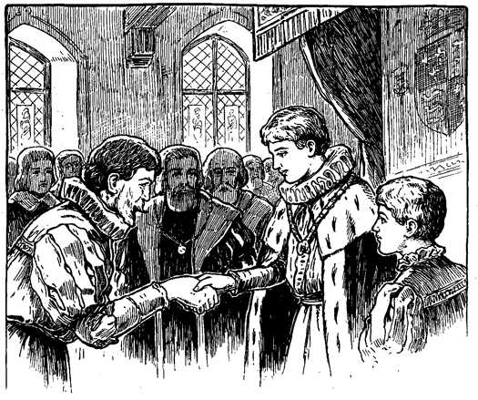Dann plötzlich fiel ihm ein, was seine Pflicht sei. Er trat heran und ließ sich vor dem König auf die Kniee nieder. Dann ergriff er die Hände seines Fürsten, gelobte Treue und dankte für die erwiesene Ehrung. Jetzt stand er wieder auf und trat ehrerbietig zur Seite. Alle Blicke hefteten sich auf ihn, und viele beneideten ihn.
Nun erblickte der König auch Herrn Hugo und rief mit zorniger Stimme und funkelnden Augen:
»Ergreift den elenden Räuber, entkleidet ihn seines gestohlenen Flitters und verwahrt ihn unter Schloß und Riegel, bis ich Gericht über ihn halte!«
Herr Hugo wurde abgeführt.
Jetzt trat eine Bewegung am anderen Ende des Saales ein. Die Edlen machten Tom Canty Platz, welcher zierlich und reich gekleidet hereinkam. Anmutig und leicht schritt er zwischen den lebenden Mauern hindurch und kniete vor dem König nieder. Gütig sprach der Herrscher zu ihm:
»Ich habe vernommen, was du während deiner kurzen Regierungszeit getan hast und bin von deinem Wirken durchaus befriedigt. Du hast dich milde und weise gezeigt. Fandest du deine Mutter und Schwestern wieder? Gut; es soll für sie gesorgt werden und dein Vater soll an den Galgen, wenn du es wünschest und die Gesetze es billigen. Vernehmet ihr alle, die ihr mich hört: das Christushospiz, das mein erlauchter Vater zum Unterhalt armer Waisenknaben gründete, soll hinfürder nicht nur ihrem Körper, sondern auch ihrer Seele Nahrung bieten. Dieser Knabe aber soll dort Wohnung nehmen als Leiter des Wohltätigkeitshauses
Dem jungen König lag die Umwandlung des einfachen Asyls in ein Erziehungsheim für arme Kinder sehr am Herzen. »Herr Gott«, sagte er, »ich danke Dir aus ganzem Herzen, daß Du mich solange leben ließest, daß ich dieses Werk zur Ehre Deines Namens vollenden konnte.« Wenige Tage nach dieser Äußerung gab der gute, unschuldige Herrscher seinen Geist auf.
In der großen Halle des Hospizes, das seither mehrere Filialen errichtet hat, hängt ein Kolossalgemälde. In der Mitte thront König Eduard VI. in Scharlach und Hermelin. In der Linken hält er das Zepter, während er mit der Rechten dem vor ihm zur Seite knienden Lordmayor den Freibrief darreicht. Neben ihm steht der Kanzler mit dem großen Siegel und andere hohe Würdenträger. Bischof Ridley kniet vor dem König mit aufgehobenen Händen, als flehe er des Himmels Segen auf dieses gottgefällige Werk herab.
Das Christushospiz ist heute noch eine der größten und edelsten Wohltätigkeits- und Erziehungsanstalten der Welt. auf Lebenszeit. Weil er aber König gewesen ist, so ist es angezeigt, daß ihm mehr als gewöhnliche Beachtung geschenkt wird. Merket euch das Staatskleid, das er jetzt trägt! Daran soll man ihn erkennen und niemand soll ein ähnliches tragen. Wohin er auch kommt, sein Kleid soll das Volk daran erinnern, daß er einst König war. Keiner soll ihm die schuldige Ehrerbietung und achtungsvollen Gruß versagen. Er steht unter dem Schutze der Krone und soll bekannt und genannt werden unter dem Titel: »Des Königs Schützling!«
Stolz und glücklich erhob sich Tom, küßte die Hand des Fürsten und entfernte sich. Er verlor keine Zeit, sondern eilte zu seiner Mutter, um ihr und Netty und Betty alles zu erzählen und sich mit ihnen der frohen Zukunft zu erfreuen.
Bei der vorgenommenen Untersuchung stellte es sich heraus, daß Hugo Henden seine Frau gezwungen hatte, Michael zu verleugnen. Er hatte ihr gedroht, sie umzubringen, falls sie seinem Befehle nicht nachkomme. Das schreckte sie nicht ab, da ihr wenig mehr am Dasein gelegen war. Sie weigerte sich also, ihren einstigen Geliebten zu verstoßen. Nun aber drohte ihr Hugo, er werde sie zwar verschonen, aber Michael töten lassen. Jetzt war ihr Widerstand gebrochen und sie willigte in alles.
Hugo selbst hatte den ganzen Sachverhalt eingestanden. Wegen seiner Drohungen und Betrügereien wurde er nicht vor Gericht gestellt, weil seine Frau und sein Bruder nicht gegen ihn zeugen mochten. Hugo schied von Edith und ging auf das Festland in Verbannung, wo er bald darauf starb. Später führte der Graf von Kent seine geliebte Edith an den Altar. Großer und aufrichtiger Jubel herrschte im Dorfe, als das Paar seinen ersten Besuch auf Hendenhall machte.
Tom Cantys Vater ließ nie wieder von sich hören.
Der König stellte nach jenem Bauer Nachforschungen an, der gebrandmarkt und als Leibeigener verkauft worden war. Er machte ihn wieder zu einem ordentlichen Menschen und gab ihm ein hübsches Gütchen.
Den greisen Anwalt befreite er aus dem Gefängnisse, wie er ihm versprochen hatte. Er brachte ihn wieder zu Ehren und einem sorglosen Auskommen. Selbst die Töchter der beiden Baptistinnen vergaß er nicht und versorgte sie reichlich. Auch der braven Bäuerin, die ihn so barmherzig aufgenommen, gedachte er wohlwollend und entschädigte sie für die verbrannten Speisen. Dagegen bestrafte er den Vollstreckungsbeamten, der damals willkürlich und ohne Befugnis, auf die bloße Aufforderung des Herrn Hugo, Michael die unverdienten Streiche hatte aufzählen lassen.
Dem Richter aber, der ihn so gnädig behandelt hatte, bewies er seine Gunst. Er hatte die Freude, ihn zu einem hochgestellten und allgemein geachteten Manne heranwachsen zu sehen.
Zeit seines Lebens erzählte der König gerne von seinen Abenteuern. Die Erinnerung daran, sagte er, sei ihm und seinem Volke nutzbringend, da sie als ein immer neuer Quell des Segens und der christlichen Nächstenliebe sich erweise.
Michael Henden und Tom Canty blieben seine Günstlinge, solange er herrschte. Als er, leider allzu früh, starb, betrauerten und beklagten sie ihn schmerzlich. Die Strapazen und Entbehrungen auf seinen Irrfahrten waren nicht ohne ernste Nachwirkungen für ihn geblieben und hatten seine Gesundheit untergraben.
Der gute Graf von Kent war zu verständig, um sein Vorrecht zu mißbrauchen. Aber er übte es noch zweimal aus: bei der Thronbesteigung der Königin Maria und wieder bei der Krönung Elisabeths. Ein Abkömmling von ihm machte das Vorrecht noch einmal bei der Thronbesteigung Jakobs des Ersten geltend. Der letzte Graf von Kent focht im Kriege der Republikaner auf Seiten des Königs und fiel in der Schlacht. Mit ihm erlosch das alte Vorrecht.
Tom Canty wurde ein alter Mann, der mit seinen weißen Haaren und seinem gütigen, liebenswürdigen Aussehen alle Herzen gewann. Er wurde geehrt bis zu seinem Tode und behielt auch stets sein nur ihm eigenes Staatsgewand. Wo immer dasselbe erschien, machten ihm die Leute ehrerbietig Platz und flüsterten einander zu: »Hut ab! Es ist des Königs Schützling!«
Freilich herrschte König Eduard der Sechste nur wenige Jahre. Aber er nützte sie zum Segen des Landes aus. Mehr als einmal, wenn irgend ein großer Würdenträger, ein Vasall der Krone seine Milde zu tadeln sich unterfing und ein Gesetz verteidigte, dem der König seine Härte nehmen wollte, heftete der Monarch seine großen, mitleidigen Augen traurig und beredt zugleich auf ihn und erwiderte:
»Was wißt Ihr denn von Not und Leid und Unterdrückung? Ich und mein Volk können ein Lied davon singen, nicht aber Ihr.«
Die Regierung Eduards des Sechsten war denn auch für jene rohen Zeiten eine auffallend milde. Lange nach seinem Tode, besonders unter der Herrschaft der »Blutigen Maria«, sprach noch das Volk wehmütig von seinem guten König Eduard.
Nun, da wir von ihm Abschied nehmen, wollen wir dessen uns erinnern und ihm im Herzen ein treues, liebevolles Gedenken bewahren.